Introduction
Oh hey there! Nice to see you :)
This place will introduce you to the concepts of modding Anomaly, from installing your first mod to creating your own game-changing addons.
Choose a chapter from our table of contents and start reading. I recommend starting with Mod Organiser guide. If you want to contribute - feel free to send your articles (markdown-formatted) per Discord or learn ways to contribute.
Good luck, have fun, don't die
Igigog#6387
Please keep in mind that the book is still being written, and the information provided here may not be accurate, or may not be provided at all!
Meta
Links
Acknowledgements
During the development of this book, information was taken from many sites and forums. Here are the main ones:
Also thanks for the advice of individuals:
- Xottab_DUTY#7637 (OpenXRay)
- Daniel(SergeantRogers)#6813 - for providing crash logs
Contributing to this book
First way to contribute
You can easily suggest edits by clicking on the button at the top right
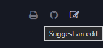
Second way to contribute
This book is written using mdBook. To contribute to this book, you will need:
VSCodium or VSCode is highly recommended to use. Although it is optional, I will assume you are using it.
Below I describe the setup steps needed to run and contribute to this book. But before that, go and install VSCodium and Git.
Forking book repository
Contributing to this book follows the standart "Pull Request" workflow. That basically means that you will have your own copy of the book, and you will ask us to pull your changes into the main repository.
Here is the overview of steps needed for contributing:
- Copy ("fork") the main repository
- Download your copy of repo
- Add your changes to your copy
- Upload your changes
- Open the Pull Request to merge your changes into main repository
Welp, let's get started. I hope you already have a GitHub account.
Forking
-
Go to the main repo
-
Press the fork button

-
Create the fork

-
You're awesome
Downloading your repo
-
Open the folder you want to download into in VSCodium. In my case, it will be Desktop.
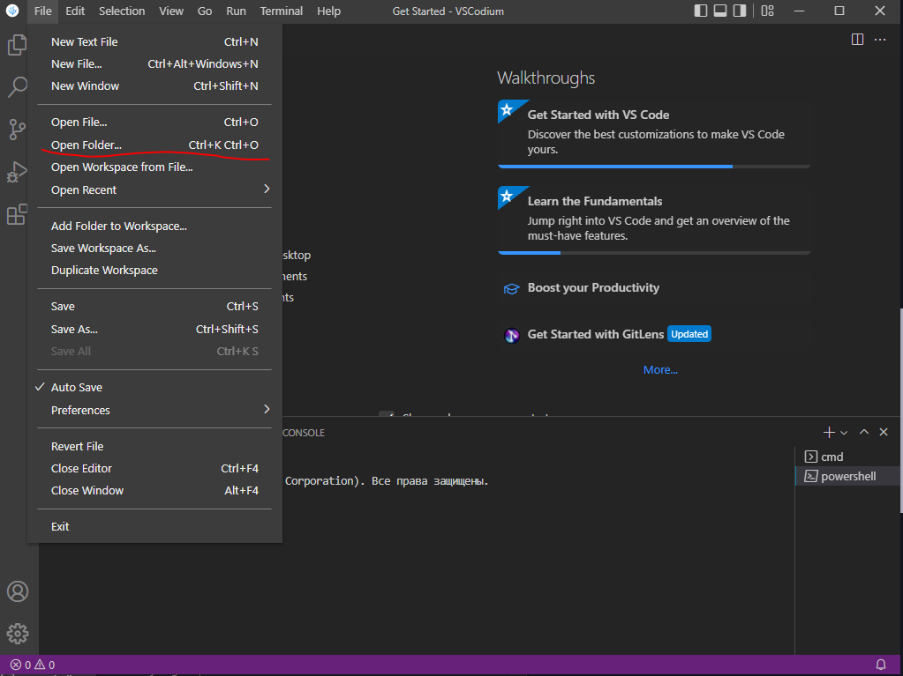
-
Open Poweshell Terminal session
-
Copy the link to your repo.
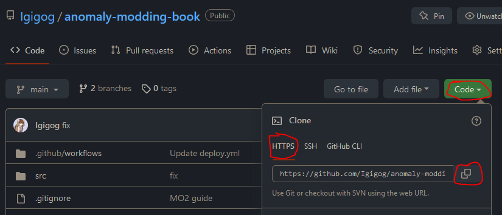
-
Run the following command in your Powershell Terminal with your link instead of LINK.
git clone LINK -
You're awesome.
Running local copy
- Download latest mdbook from Github Releases.
- Drop
mdbook.exein the root folder of your copy. - Run
run.bat. In case it doesn't open by itself, open localhost:3000 in your browser. - Done. You're awesome.
Uploading your changes
-
Set your git up. Here's a great guide
-
Add your changes using VSCodium git tab. Open git tab, hover over "Changes" line and press "+".

-
Add a nice message and press "✔" to commit your changes

-
You should now be able to publish your changes

Creating Pull Request
-
In main book repository, open "Pull Requests" tab and press "New pull request"

-
Press "compare across forks". Choose your repository and press "Create pull request".
-
You're awesome. Probably. Now ping Igigog#6387 in Discord to get your pull request reviewed.
-
Done. Your changes are added to the main book.
P.S
If you will be using VSCodium or VSCode, it is recommended to install markdown extensions to make life easier or to avoid messing up the book structure.
For example such as:
- Markdown Link Updater - Updates Markdown links automatically, when files in the workspace are moved or renamed.
- markdownlint - This is a rule library for encouraging standards and consistency for Markdown files.
Getting Started
Installing MO2
This guide is meant to show you how to setup Mod Organizer 2 and how to mod Anomaly in a simple and easy way step by step.
Made by Starcry

What makes Mod Organizer 2 the superior mod manager?
-
Installed addons never touch your original game files, instead they are injected into the game only when you boot it up by utilizing virtual file system.
-
Mod list is easily manageable, unlike with JSGME you can update or make changes to any addons at any time, without the need of enabling/disabling.
-
Shows you which mods are conflicting in details.
Important note: Many antivirus softwares will block MO2 and Anomaly files causing you to have strange crashes, the reliable solution is to scan your MO2 folder for safety, then set an antivirus exclusion to the entire MO2 folder (and to your Anomaly folder).
Installation and instance setup
-
Download the latest version of MO2 (Scroll down, download the .exe and install it)
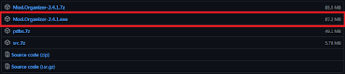
-
After getting this error and clicking "OK" select "Create a portable instance" and press next.


-
Click "Browse..." and select your S.T.A.L.K.E.R Anomaly folder, name the instance whatever you want and click next.
Note if you have an error when selecting the game directory: Sometimes MO2 won't detect the game if the directory isn't named "S.T.A.L.K.E.R. Anomaly", in case your problem remains and you have Windows 7 try downloading and double clicking this Windows file.

-
The next page will show you where you'r mods and other files for Anomaly mods will be stored, you can leave it as it is and click next.

-
Click next again as linking an account to Nexus is not needed.
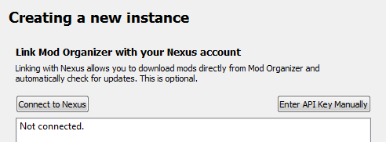
-
After that you should see something like this.
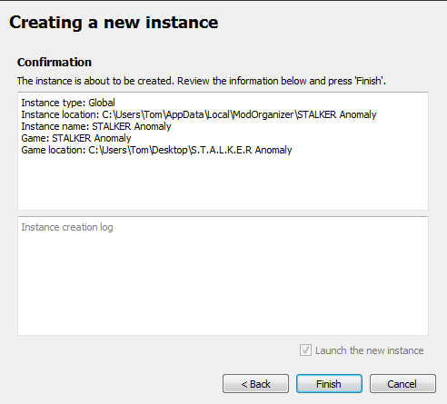
-
Congratulations, you paired MO2 with Anomaly successfully. After you click finish MO2 will start up.
Small tutorial
After MO2 boots up you will get 2 popups, one is for an optional tutorial and the other one is for Nexus which we won't need.
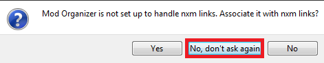
In case you skipped the tutorial or didn't fully understand it here's a quick explanation of the most important features:
-
Red highlight shows what you need to click to install addons. -
Yellow highlight shows profiles, you can create how many you want and have different mods enabled on each of them. -
Green highlight shows your virtual game directory, this can be useful for checking which file is being used from which addon. -
Blue highlight is used for starting the game, if you don't start your game with this button your mods won't be activated.

Guide to modding and solving conflicts
On the image below you can see how my MO2 looks, I have a little over 100 addons and a lot of conflicts.
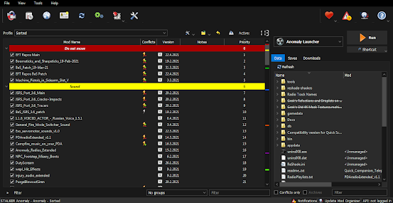
After installing few addons you might notice these icons:
 This little lightning icon with a red minus next to it shows that the addon is being overwritten.
This little lightning icon with a red minus next to it shows that the addon is being overwritten.- A lightning icon with green plus means the addon is overwriting another addon.
 If you see both of these icons it means the addon is overwriting an addon and is being overwritten by one.
If you see both of these icons it means the addon is overwriting an addon and is being overwritten by one.- And last is the grey icon, this icon is next to an addon which is being fully overwritten making it redundant.
To make things work together you need to maintain a load order, that means that you can't just install addons and expect them to all work together, you can start by keeping your load order clean, make some separators (right-click into empty area) like I have in my load order here, after that you can install patches if needed. You can always ask about load orders in the addon-discussion channel.
A good start would be Grok's Community Curated Add-ons List for Anomaly 1.5.1.
Is it better to use a modpack or do everything yourself?
If you are new to modding you might think simply downloading a modpack is the best option, but that might not be the case as most of the time modpacks are the vision of the person who created it - meaning it might have features you won't like and it can be difficult to remove them, you also can't know if it works fine as it's all packed into one folder.
Using a modpack will also mean you won't be able to get help from the community with your crashes as only the modpack creator knows what changes were made and you'll have to rely on them to help you.
Most of the time modpacks aren't being updated frequently and it's near impossible to install any other addon with them.
Solving conflicts
Most of the time it's pretty easy because most popular addons already have existing patches, for example if you wanted to install Boomsticks and Sharpsticks with JSRS you would put BaS first, then JSRS files and then the patch for JSRS that comes with BaS.
Making patches yourself (Not recommended for beginners)
What if there is no patch available and the addons won't work together? You either have to choose which one you want or you can make a patch yourself, the best guide for that is Anomaly modding resource made by community member Jack-it.
Installing addons the right way
Remember that every addon you install needs to have only one gamedata folder, if you find an addon with many optional files you need to install it again every time and select only one gamedata.
As you can see in the picture below I get a popup when trying to install JSRS because it has multiple files, select one and install it, then do it again with the second file (Applies for every addon).

In case you get this popup instead of the one above, you need to expand the filetree and have only option selected, after that you rightclick it and press "set as stalker directory"


In case MO2 crashes when clicking on "manual" addon installation add this text to file ModOrganizer.ini found in Modding/Mo2/:
[CompletedWindowTutorials]
InstallDialog=true
Reporting crashes
Please ignore this if you are using a modpack and report any crashes to the modpack "creator".
If your game crashes and you don't know what caused it go to addon-discussion in Anomaly discord and post your load order along with a log from appdata/logs, it will be a text file named "xray_username".
Converting from JSGME to Mod Organizer 2
To do this you simply have to delete your "gamedata" folder (This will not delete your saves and MO2 will recreate the folder for you) and install the addons you had with MO2, if you don't want to reinstall them you can simply copy the contents of MODS folder to User/AppData/Local/ModOrganizer/Name of your instance/mods.
If you installed addons manually you also need to delete your gamedata folder.
Additional info
If you have any ideas what I should change, fix or add in this guide feel free to ping me on discord (Starcry#4447)
Inspired by lazy stalker guide.
Link to my patreon here ( ͡° ͜ʖ ͡°).
{kind=link}
Credits:
- d_nan: did absolutely nothing
- Caesar_salad: also did absolutely nothing
Addon installers
Courtesy of RavenAscendant#7504
MO2 supports 2 kinds of installers. BAIN is the simpler. For BAIN to work you put the gamedata folder for for the main mod into a folder thats name starts with 00. Patches would then go in folders with subsequent numbers. These folders should all be at the root level of the archive.
Example: addon.zip
00 Main
01 BAS patch
02 Optional thing
Files in folders with higher numbers will overwrite those in folders with lower numbers.
BAIN installers present as a list of check boxes. Folders with 00 will be checked by default, all others will be unchecked. Folders at the root of the archive without numbers will not show up in the installer and not be installed.
DNPCAV uses BAIN.
The second is FOMOD Fomod installers can be made to look like a facy windows installer, have preview images, descriptions of what each component does. There is a tool that can help you build a FOMOD installer.
A fomod installer can be built using any folder structure, even the messy one you use now. Or the structure of a BAIN.
Mags Redux has a FOMOD installer but a pretty messy file structure.
SidHUD uses FOMOD but has a BAIN file structure.
Package Naming Guidelines
for Mod Organizer 2
by Ishmaeel
While installing an addon, Mod Organizer 2 can extract a nice name from the archive (ZIP/7Z/RAR):
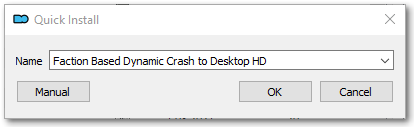
For more advanced scenarios, you will eventually want to graduate to more powerful installer formats, but for simpler addons, the least you can do for your users is naming your archive package in a way that can be parsed easily by MO2.
Follow these simple rules and your MO2-using audience will be thankful for it:
- Give a descriptive name to your addon.
- Do not separate words with the dash (
-) character. Use underscores (_) or spaces. 1. - Do not use numbers or special characters in the name.
- Separate extra information such as the version number with a dash (
-). - Do not change the name part in subsequent updates. Only change the “version” part.
1 We recommend underscores because spaces have other issues in file names and URLs. You can also consider using PascalCase.
MO2 will scan the file name for numbers, special characters and dashes. Everything after the first special character will be stripped by MO2, leaving behind only the name part. If you use any special characters in the middle of your addon name, MO2 Quick Installer will fail to parse the name nicely and your users will end up having to edit the name manually.
Here is a sample file name that includes extraneous information such as a version number:
ToggleScope-v1.5.zip
This is how MO2 will parse the name during installation:
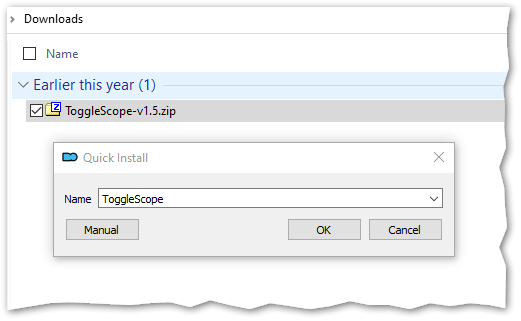
See that everything after and including the dash is stripped away, leaving only the base name.
Note: MO2 will not use the version part at all. The version displayed in the application will be the addon installation date. If you want to explicitly specify a version number, you will have to use BAIN or FOMOD formats.
As long as you adhere to a similar format and keep the same base name, MO2 will recognize your update as belonging to the same addon and offer to upgrade it in place:
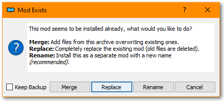
The End.
Author's note: The original version of this guide was motivated by annoyance and frustration, so it ended up missing its mark.
For Anomaly Modding Book, we decided to put the actual advice up front in a sarcasm-free manner. You now know the Right Way™ to name your packages.
If you are not interested in the rationale behind this advice or if you do not appreciate snark, feel free to stop reading here.
For a tongue-in-cheek accounting of commonly made mistakes and their grave consequences, proceed to the next section where we have guidance on...
How to Annoy MO2 Users
A Reverse Naming Guide for Mod Authors
Most people do not know about this, but some players prefer to use an obscure piece of software called Mod Organizer 2. In this section, we outline some simple mistakes you can make while naming your addon packages for maximum annoyance of those wimpy persons.
Please note that this guide does not cover how to annoy Chads™ who extract addons directly into gamedata, overwriting whatever is already there. Frankly, we do not think it is even possible to agitate such strong-willed individuals.
MO2 is a tool that enables those who are unable to keep track of several thousand files. It even tries to cleverly extract the addon name from the package name during installation.
Thankfully, there are many ways to subvert this clever mechanism.
Are You an Alpha Modder?
Disclaimer: If your addon has a single-word name such as Addon.zip or a zero-effort name such as New folder.rar, then this guide has nothing to offer you. You are already at the zenith of human annoyingness. You are the ultimate expert in irritation. We bow before your magnifinuisance.
Inconsistent Naming
The fastest takeaway that you can get from this guide is using a different file name for every single release. If you can bring yourself to do this, you don’t need to read the rest of this guide. By default, MO2 will install every new version as a separate addon and the users will have to type out a name for every upgrade if they want a proper installation. It is a surefire way to piss of MO2 virgins:
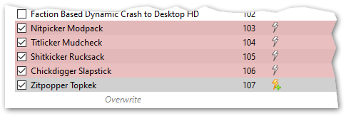
However, if you feel this one is too on the nose and are looking for subtler ways to annoy the unwashed masses, please read on.
All Characters Are Equal but Some Characters Are More Equal than Others
As mentioned previously, MO2 tries to be clever when determining the addon name from the installation package. To do this, MO2 treats some characters differently.
- Alphabetic characters, underscore and space: These are considered “good” characters for addon naming. MO2 will extract all good characters to generate the default name until it finds a junk character. The rest of the file name is ignored.
- Numeric characters, dash and other symbols: These are considered “junk” characters. MO2 does not think an addon name should include these. Anything after (and including) the first junk character is chopped off and thrown to pigs.
Note: MO2 allows the addon names to start with junk characters, but as soon as a good character is encountered, this exception flies out the window for the rest of the name.
Dashes as Word Separators
You will remember that everything after the first dash is simply discarded. As such, you can use dashes to separate words, so that MO2 will mutilate the awesome and catchy name that you picked for your addon:
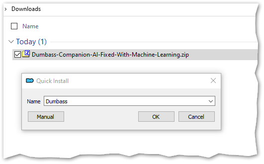
This also goes for other fancy characters such as apostrophes. Go crazy!
Numerals: Up Front!
What if you have a cool nickname such as Blaze420 and want to flaunt it in your addon? What if you like putting release numbers first, such as Version 1 of My Awesome Menu Replacement.zip? That’s right. Your MO2-wielding audience is in for a surprise:
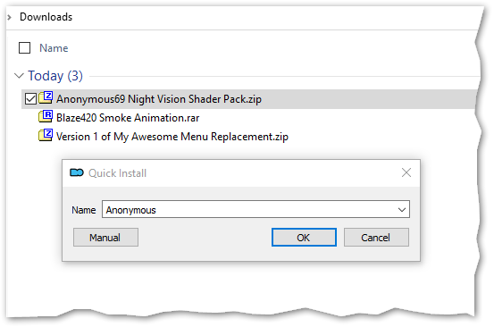
Note that if the file name starts immediately with a number, this trick will not work. But good news! If you can manage to sneak the version number in with a cheaty name like 1.0.3_Brooks_Plagiarized_Audio_Patcher.zip, your anemic MO2 users will now have to edit the name with every. single. update!
Pedantic Versioning
You are releasing a new update for your addon with features, bugfixes and localizations? Do not forget to prepend your version number with the letter “v” so that everybody understands what follows is THE VERSION NUMBER!
This will instantly make your file names look more enterprisey and sophisticated:
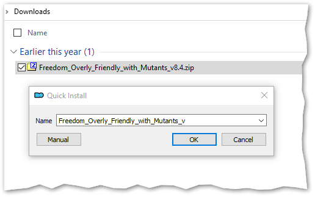
See the little “_v” at the end? It’s there to bug the MO2-weaklings. Mission accomplished!
Bonus: For even more devious fun, try separating your version number with an “underscore”, so it gets treated as part of the name:
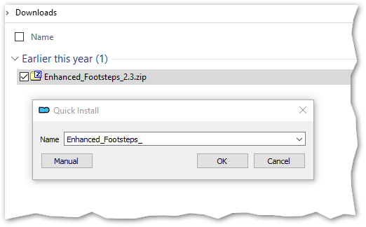
How Not to Smell Like a Filthy UX Hipster
Most importantly, avoid giving descriptive names to your addons and never adhere to a consistent naming format.
If you fail to include one or more of the mistakes above with your every release, those MO2-crybabies will have a minimal-friction upgrade experience, and we don’t want that to happen, do we?
Configuring VSCode-like programs to handle game files
Here will talk about setting up VSCode similar programs to work with game files.
- This article is based on Liner's article on setting up scripts as projects in VSCode
- In this article the setup will be done in VSCodium.
Attention! Not all files can be configured because there are no extensions for their viewing, reading (for example preview .dds textures and others). Some files can only be opened with third-party applications!
Step 1: Installing VSCodium
Just install VSCodium
Step 2. Configuring Extension Associations with a Programming Language
In the settings.json file, in the "files.associations": { specify:
"*.script": "lua",
"*.ps": "hlsl",
"*.cs": "hlsl",
"*.gs": "hlsl",
"*.vs": "hlsl",
"*.s": "lua",
"*.level": "ini",
"*.ltx": "ltx",
"*.seq": "ini",
"*.part": "ini",
"*.part1": "ini"
At the moment these are all the extensions that can be opened in VSCodium
Step 3: Installing extensions
You need to install the following extensions:
-
audio-preview by sukumo28 - provides more detailed data about the sound files. Needed for .ogg files
-
LTX Support by AziatkaVictor - adds support for .ltx files
- extension can be configured, to do this in his settings need to specify the path to the scripts of the game
- More About
-
Two extensions for Lua. Needed for .script files:
-
You need a fully unpacked scripts folder to work. You also need to create a workspace for your project. Some files will always give error warnings (e.g.
lua_help- This can be deleted or added to exceptions in the extension from yinfei)
-
Open in External App by YuTengjing - ability to open the file in other applications. Needed for .ogf, .object, .dm, .omf, .dds, .thm, .ogm files
- The extension can be configured by writing in
settings.jsonin the"openInExternalApp.openMapper": [needed programs. Example:
"openInExternalApp.openMapper": [ // 3D models (ogf, dm, object) { "extensionName": "ogf", "apps": "D:\\Нужное\\Modding Tools\\OGF.Editor\\OGF tool.exe" }, { "extensionName": "object", "apps": "D:\\Нужное\\Modding Tools\\Object.Editor.4.35\\Object tool.exe" }, { "extensionName": "dm", "apps": "D:\\Нужное\\Modding Tools\\OGF.Editor\\OGF tool.exe" }, // Textures (thm, dds) { "extensionName": "thm", "apps": "D:\\Нужное\\Modding Tools\\THM_Editor_by_ValeroK\\THM Editor.exe" }, { "extensionName": "dds", "apps": "C:\\Program Files\\paint.net\\paintdotnet.exe" }, // Video { "extensionName": "ogm", "apps": "C:\\Program Files\\VideoLAN\\VLC\\vlc.exe" }, // Animations { "extensionName": "omf", "apps": "D:\\Нужное\\Modding Tools\\OMF.Editor.1.2\\OMF_Editor.exe" }, ], - The extension can be configured by writing in
-
HLSL support and preview for shaders:
-
TGA Image Preview by lunarwtr - Preview .tga files
DLTX
Written by @nltp_ashes
1. About
Modding STALKER has this annoying tendency to result in conflicts when two different mods overwrite the same .ltx file, but not the same variables and sections within that file.
DLTX aims to mitigate this by allowing a mod author to only override the values that they actually wish to change in a separate file, which should greatly reduce the amount of needless mod conflicts and the need to manually merge mods.
2. Installation
DLTX is built-in the Anomaly Modded Exes.
- Download the file
STALKER-Anomaly-modded-exes.zipfrom this repository; - Back up the contents of your "bin" folder;
- Unpack the contents of the archive on top of your game's root folder.
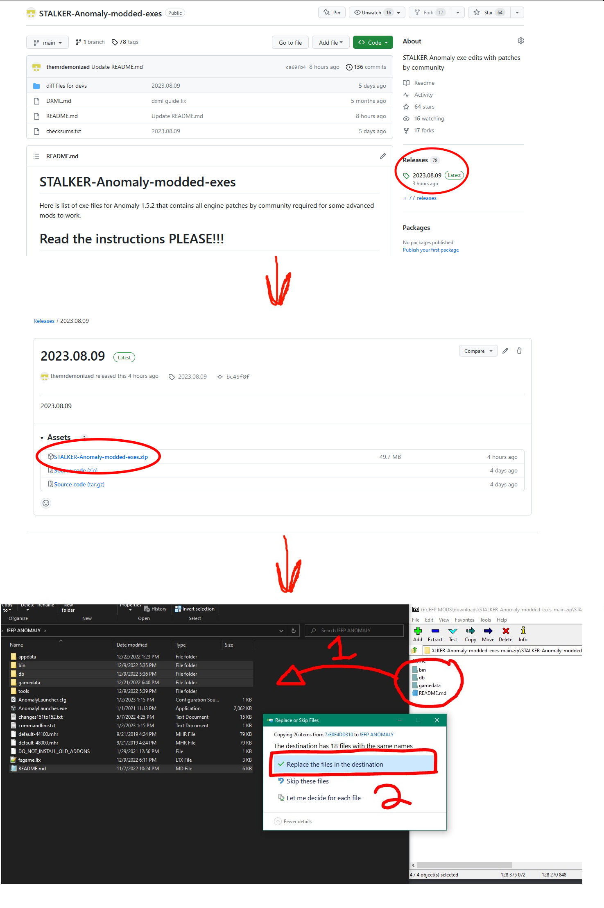
3. Tools
To make the process easier for people uncomfortable with DLTX, or to automatically DLTX-ify older addons, you can use the LTXDiff tool.
LTXDiff findroot
In order to properly DLTX-ify a file, you need to find its root file. For this, you can either manually trace back the chain of #includes, or use the LTXDiff.
In order to make a differential change to the LTX records, you have to follow these steps:
Step 1 : Find the root file
Execute the following command :
Where :
[Base Folder] : A path to the unpacked vanilla files of the game;[Mod Folder] : A path to your mod's folder;[Relative Path to File] : A path relative togamedata/to the file you wish to find the root of.
For example :
Step 2 : Create your DLTX file
Once you have found the root file, create a new file in the same directory with the name :
Where :
[Root File Name] : The name of the root file you identified via Step 1;[Mod Suffix] : A unique name (as to not conflict with other addons) of your liking;
For example :
Step 3 : Write your DLTX edits/additions
Apply the changes or additions of your liking. See syntax chapter for more details.
LTXDiff dltxify
LTXDiff is capable of automatically converting conventional mods into a DLTX-ready format.
If you're lucky, the DLTXify by right click might work for you. Instructions about it are available on the addon's page. Alternatively, you can use LTXDiff dltxify.
Execute the following command :
Where :
[Base Folder] : A path to the unpacked vanilla files of the game;[Mod Folder] : A path to your mod's folder;[Mod Suffix] : The unique name you want to be used for your addon's file.
4. Syntax
The following table connects the different symbols used by DLTX to their corresponding feature(s).
| Symbol | Feature(s) |
|---|---|
! | Section override or Field override |
!! | Section deletion |
@ | Section creation/override |
> | Field CSV list addition |
< | Field CSV list deletion |
Section override
To override a section, you use the ! symbol before the section declaration.
To override the section called some_section :
[some_section]:parent_section
price = 5000
weight = 1.0
friends = me, myself, i
You use :
![some_section]
Please note :
- this alone does nothing, and needs to be used in combination with other things;
- when you override a section, you do not list again the parent sections inheritance.
Section deletion
To delete a section, you delete all the section's fields, and you use the !! symbols before the section declaration.
To delete the section called some_section :
[some_section]:parent_section
price = 5000
weight = 1.0
friends = me, myself, i
You use :
!![some_section]
Section creation/override
To create a section if it doesn't exist, or override it if it already exists, you use the @ symbol before the section declaration.
To create/override the section called some_section :
[some_section]:parent_section
price = 5000
weight = 1.0
friends = me, myself, i
You use :
@[some_section]
Please note :
- this alone does nothing, and needs to be used in combination with other things;
- this only exists in the Anomaly 1.5.2 version of the Modded Exes.
Section inheritance addition
To add a new parent section to another section, you add the new parent as you normally would, without listing all the existing parents again.
To add the some_other_section section as parent of some_section :
[some_section]:parent_section
price = 5000
weight = 1.0
friends = me, myself, i
You use :
![some_section]:some_other_section
Section inheritance deletion
To remove a parent section of a section, you prefix the parent section you wish to remove with the ! symbol in the list of parents.
To remove the parent_section section from the parent of some_section :
[some_section]:parent_section
price = 5000
weight = 1.0
friends = me, myself, i
You use :
![some_section]:!parent_section
Field override
To override a field within a section, you override its section and you redefine the field.
To override the field called price in some_section :
[some_section]:parent_section
price = 5000
weight = 1.0
friends = me, myself, i
You use :
![some_section]
price = 10000
Field deletion
To delete a field within a section, you use the ! symbol before the field declaration.
To delete the field called price in some_section :
[some_section]:parent_section
price = 5000
weight = 1.0
friends = me, myself, i
You use :
![some_section]
!price
Field CSV list addition
To add an item in a CSV list, you use the > symbol before the field declaration, and list the elements you want to add.
To add the item you in the field called friends in some_section :
[some_section]:parent_section
price = 5000
weight = 1.0
friends = me, myself, i
You use :
![some_section]
>friends = you
Please note :
- do not list again the elements already present in this list;
- this only exists in the Anomaly 1.5.2 version of the Modded Exes.
Field CSV list deletion
To remove an item from a CSV list, you use the < symbol before the field declaration, and list the elements you want to remove.
To remove the item myself in the field called friends in some_section :
[some_section]:parent_section
price = 5000
weight = 1.0
friends = me, myself, i
You use :
![some_section]
<friends = myself
Please note :
- do not list again the elements already present in this list;
- this only exists in the Anomaly 1.5.2 version of the Modded Exes.
Sources
DXML
Intro
DXML by demonized#1084
DXML is a part of modded exes repo
DXML allows to manipulate XML files before they loaded into the engine or scripts by utilizing Lua The engine sends XML string to Lua where it is transformed into DOM-like object (from now on lets call it xml_obj) that can be manipulated by Lua methods and then it is converted back to XML string and sent back to engine
To use it in your mods, you have to create a new script file that is called modxml_<yourname>.script. The yourname can be any string, it doesnt matter. The "modxml_" part must be in the filename.
Then, in this file, type:
function on_xml_read()
RegisterScriptCallback("on_xml_read", function(xml_file_name, xml_obj)
-- XML file i want to change
local xml_to_change = [[text\eng\_game_version.xml]]
-- Check if its the file i want to change
if xml_file_name == xml_to_change then
-- Here is my code to change XML
end
end)
end
What this does is creating a function on_xml_read that will be auto-called from dxml_core.script. This function will register function for new callback "on_xml_read", which accepts two arguments:
- xml_file_name - current XML filename that engine is processing (for example: text\eng_game_version.xml)
- xml_obj - the object described above
WARNING: DXML won't process translation strings other than from eng/rus folders and gameplay\character_desc_general.xml file. For how to manipulate that file check "Additional functions" paragraph below.
To understand, what can be done with xml_obj and what functions it provides, let's take a look at typical usecases:
Case 1: inserting new XML data
Examples: insert new dialog into gameplay\dialogs.xml, insert new scope texture into ui\scopes.xml
This is the simplest case of using DXML, where you just want to insert new data, much like #include directive in XML files
To do this, you can use xml_obj:insertFromXMLString function as in example below:
function on_xml_read()
RegisterScriptCallback("on_xml_read", function(xml_file_name, xml_obj)
-- XML file i want to change
local xml_to_change = [[ui\scopes.xml]]
-- Check if its the file i want to change
if xml_file_name == xml_to_change then
-- Here is my code to change XML
local my_new_scope =
[[
<wpn_crosshair_bino x="0" y="0" width="2048" height="1536">
<auto_static x="0" y="0" width="1024" height="768" stretch="1">
<texture>wpn_crosshair_bino</texture>
#include "gameplay\character_criticals.xml"
</auto_static>
</wpn_crosshair_bino>
]]
xml_obj:insertFromXMLString(my_new_scope)
end
end)
end
This example adds new scope texture into scopes.xml.
DXML supports #include directive to include other xml files into string. #include must start from the beginning of the line like in the example.
(BTW: For actually adding new scope you don't need include anything, its just an example. The #include is necessary when working with adding new special npcs or such)
insertFromXMLString method has these arguments:
- "xml_string" - XML string to process
- "where" - the element in xml_obj in which new data will be inserted argument is optional and specifies an element subtable of self.xml_table to insert (default - root element)
- "pos" argument is optional and specifies position to insert (default - to the end)
- "useRootNode" argument is optional and will hint DXML to insert contents inside the root node if it has one instead of whole string
The function returns the position of first inserted element in "where"
Case 1.1: inserting new XML data from file
Examples: insert new dialog into gameplay\dialogs.xml from file plugins\new_dialog.xml
This case will insert new data from a xml file plugins\new_dialog.xml into gameplay\dialogs.xml.
To do this, you can use xml_obj:insertFromXMLFile function, where you specify the path to the file and the arguments, which are exactly the same as in xml_obj:insertFromXMLString function.
The path argument should be a path to the file WITH EXTENSION (example: [[plugins\new_dialog.xml]]).
The base folder for xml files to read is gamedata/configs, for example if the path provided is plugins\new_dialog.xml, then the file should exist in gamedata/configs/plugins/new_dialog.xml.
If the file has failed to read, the game will crash with the error message displaying what happened.
function on_xml_read()
RegisterScriptCallback("on_xml_read", function(xml_file_name, xml_obj)
-- XML file i want to change
local xml_to_change = [[gameplay\dialogs.xml]]
-- Check if its the file i want to change
if xml_file_name == xml_to_change then
-- Here is my code to change XML
xml_obj:insertFromXMLFile([[plugins\new_dialog.xml]])
end
end)
end
Case 2: inserting new XML data in specified element
Example: insert new menu item into ui\ui_mm_main.xml
In order to correctly insert new main menu item, we need to find the <menu_main> element first.
To find an element, you can utilize CSS-like selectors in query function. An example of finding <menu_main> element would be:
local res = xml_obj:query("menu_main")
The function returns a table with all found elements matching this query.
The element is represented by table with following fields:
- el = element type, consists of type symbol, name and attributes. The type symbols are:
- "<" - node element
- "#" - text element
- parent = pointer to a table that contains this element
- kids = table that contains all children of this element
Then we check if table is not empty (the element exists) and insert our xml string with new menu item in position before the end
if is_not_empty(res) then
local el = res[1]
xml_obj:insertFromXMLString([[<btn name="btn_mcm" caption="ui_mm_menu_mcm"/>]], el, #el.kids)
Full code would be:
function on_xml_read()
RegisterScriptCallback("on_xml_read", function(xml_file_name, xml_obj)
-- XML file i want to change
local xml_to_change = [[ui\ui_mm_main.xml]]
-- Check if its the file i want to change
if xml_file_name == xml_to_change then
-- Here is my code to change XML
local mcm_menu = [[<btn name="btn_mcm" caption="ui_mm_menu_mcm" />]]
local res = xml_obj:query("menu_main")
if is_not_empty(res) then
local el = res[1]
xml_obj:insertFromXMLString(mcm_menu, el, #el.kids)
end
end
end)
end
But, if there is already an MCM menu, then you might get duplicated element inside. So we have to check if its already exists before insertion. We can check if element <btn name="btn_mcm"> exists before proceeding by utilizing query again.
Here, similar to CSS, we want to find <btn> element with attribute name="btn_mcm" first. if its found - then make early return from the function
if is_not_empty(xml_obj:query("menu_main btn[name=btn_mcm]")) then
printf("MCM button already exists")
return
end
Full list of available CSS-like selectors are:
- " " (space) - find children of elemenents (can be any depth inside)
- ">" - find direct children
- "+" - find first sibling of element
- "~" - find all siblings
- "[attr1=value1]" - describes attribute
attr1with valuevalue1. To find element that matches multiple attributes you can use[attr1=value1][attr2=value2]and so on
Case 3: Change text inside element
Example: change text of game version in text\eng\_game_version.xml
Getting and setting text is possible if element contains raw text inside, like <text attr1="value1">My Text</text>.
To get text, you can use getText(element) function and to set it use setText(element).
Example below of appending text to existing text in element
function on_xml_read()
RegisterScriptCallback("on_xml_read", function(xml_file_name, xml_obj)
if xml_file_name == [[text\eng\_game_version.xml]]
or xml_file_name == [[text\rus\_game_version.xml]]
then
-- Find string element with "id=ui_st_game_version" text inside it
local res = xml_obj:query("string[id=ui_st_game_version] > text")
if res[1] then
local el = res[1]
local el_text = xml_obj:getText(el)
if el_text then
-- Set new text
xml_obj:setText(el, el_text .. ". Modified exes (DLTX, DXML, Shader Scopes, SSS)")
end
end
end
end)
end
Case 4: changing attribute of element
Example: change position of money display in ui\ui_inventory.xml
First, find <money> element inside <player> element and then change its x, y attributes by using setElementAttr function
setElementAttr(el, args)
- el - element found using
query - args - table of attributes ({attr1 = value1, attr2 = value2})
To get attributes of element, use getElementAttr function, it returns a table of attributes described above
getElementAttr(el)
- el - element found using
query
To remove attributes of element, use removeElementAttr function
removeElementAttr(el, args)
- el - element found using
query - args - list of attributes to remove ({attr1, attr2})
function on_xml_read()
RegisterScriptCallback("on_xml_read", function(xml_file_name, xml_obj)
if xml_file_name == [[ui\ui_inventory.xml]]
then
local res = xml_obj:query("player > money")
if res[1] then
local el = res[1]
xml_obj:setElementAttr(el, {x=20, y=60})
end
end
end)
end
Full list of methods is described in dxml_core.script in COnXmlRead function
Additional functions
For now, it is impossible to use xml_obj from DXML to process gameplay\character_desc_general.xml. This file includes all information about generic NPCs you see in the Zone (name, bio, community, etc). As an alternative, DXML provides additional callbacks in this case.
on_specific_character_init
on_specific_character_init callback provides possibility to change NPCs' data. An example on how to use it:
function on_game_start()
RegisterScriptCallback("on_specific_character_init", function(character_id, data)
--character_id is the id attribute of <specific_character> tag (ie. "sim_default_csky_0_default_0")
if character_id == "sim_default_csky_0_default_0" then
-- change appearance of this npc to Beard
data.visual = "actors\stalker_neutral\stalker_neutral_3_face_1"
end
end)
end
Full list of fields available in "data" table:
- name
- bio
- community
- icon
- start_dialog
- panic_threshold
- hit_probability_factor
- crouch_type
- mechanic_mode
- critical_wound_weights
- supplies
- visual
- npc_config
- snd_config
- terrain_sect
- rank_min
- rank_max
- reputation_min
- reputation_max
- money_min
- money_max
- money_infinitive
on_specific_character_dialog_list
on_specific_character_dialog_list callback provides possibility to change available dialogs for NPCs. The callback sends character id and dialog list class object, that can be used to manupulate available dialogs. An example on how to use it:
function on_game_start()
RegisterScriptCallback("on_specific_character_dialog_list", function(character_id, dialog_list)
--character_id is the id attribute of <specific_character> tag (ie. "sim_default_csky_0_default_0")
if character_id == "sim_default_csky_0_default_0" then
-- Add dialog about playing Blackjack
local res = dialog_list:add("cit_killers_minigame")
if res then
printf("adding dialog %s for %s, pos %s", "cit_killers_minigame", character_id, res)
end
end
end)
end
Full list of methods in dialog_list
- find(regex) - find existing dialog by regex, returns last found dialog matching regex and its position in the list
- has(string) - check if dialog by string exists, returns the position of found dialog in the list
- add(string, pos) - adds new dialog in specified position (by default adds before break dialog string if it exists)
- add_first(dialog) - adds dialog in the beginning of the list
- add_last(dialog) - adds dialog in the end of the list
- remove(string) - removes dialog by the string
- get_dialogs() - returns the list of all dialogs available
PS
See dxml_core.script for all methods and callbacks available
MCM
"The greatest victory is that which requires no battle." - Sun Tzu
Ask Raven to write about it, not my mod. - Igigog 2022
His handle is RavenAscendant#7504 just in case you need it for... things ^^
Program Debug Database (PDB)
Written by @nltp_ashes
1. About
When using addons, it is frequent that the game will crash without showing any information in the log. This is a problem, because people that are not familiar with modding will often call for help and post their logs, except it contains virtually no useful information.
Program Debug Database (PDB, for short) files are useful in this scenario, because they allow the engine to print, in the log, the callstack (i.e. where in the engine) at the time of the crash.
When using PDB files, you can expect this kind of logs :
SymInit: Symbol-SearchPath: '.;I:\ProgramFiles\S.T.A.L.K.E.R. Anomaly 1.5.2 Modded\bin;I:\ProgramFiles\S.T.A.L.K.E.R. Anomaly 1.5.2 Modded\bin;C:\WINDOWS;C:\WINDOWS\system32;', symOptions: 530, UserName: 'ASHES'
OS-Version: 6.2.9200 () 0x100-0x1
I:\ProgramFiles\S.T.A.L.K.E.R. Anomaly 1.5.2 Modded\bin\AnomalyDX11AVX.exe:AnomalyDX11AVX.exe (0000000140000000), size: 18108416 (result: 0), SymType: 'PDB', PDB: '.\AnomalyDX11AVX.pdb'
I:\Projects\STALKER\xray-monolith\src\xrCore\xrDebugNew.cpp (123): LogStackTrace
I:\Projects\STALKER\xray-monolith\src\xrCore\xrDebugNew.cpp (811): UnhandledFilter
I:\Projects\STALKER\xray-monolith\src\xrPhysics\PHSimpleCharacterInline.h (128): CPHSimpleCharacter::UpdateDynamicDamage
I:\Projects\STALKER\xray-monolith\src\xrPhysics\PHSimpleCharacter.cpp (1620): CPHSimpleCharacter::InitContact
I:\Projects\STALKER\xray-monolith\src\xrPhysics\PHActorCharacter.cpp (362): CPHActorCharacter::InitContact
I:\Projects\STALKER\xray-monolith\src\xrPhysics\Physics.cpp (245): CollideIntoGroup
I:\Projects\STALKER\xray-monolith\src\xrPhysics\Physics.cpp (289): NearCallback
I:\Projects\STALKER\xray-monolith\src\xrPhysics\PHObject.cpp (140): CPHObject::CollideDynamics
I:\Projects\STALKER\xray-monolith\src\xrPhysics\PHObject.cpp (128): CPHObject::Collide
I:\Projects\STALKER\xray-monolith\src\xrPhysics\PHSimpleCharacter.cpp (2126): CPHSimpleCharacter::Collide
I:\Projects\STALKER\xray-monolith\src\xrPhysics\PHWorld.cpp (346): CPHWorld::Step
I:\Projects\STALKER\xray-monolith\src\xrPhysics\PHWorld.cpp (294): CPHWorld::OnFrame
I:\Projects\STALKER\xray-monolith\src\xrEngine\device.cpp (184): mt_Thread
at address 0x0000000140C0C69E
Instead of this when you do not use PDB files :
SymInit: Symbol-SearchPath: '.;I:\ProgramFiles\S.T.A.L.K.E.R. Anomaly 1.5.2 Modded\bin;I:\ProgramFiles\S.T.A.L.K.E.R. Anomaly 1.5.2 Modded\bin;C:\WINDOWS;C:\WINDOWS\system32;', symOptions: 530, UserName: 'ASHES'
OS-Version: 6.2.9200 () 0x100-0x1
I:\ProgramFiles\S.T.A.L.K.E.R. Anomaly 1.5.2 Modded\bin\AnomalyDX11AVX.exe:AnomalyDX11AVX.exe (0000000140000000), size: 18108416 (result: 0), SymType: 'PDB', PDB: '.\AnomalyDX11AVX.pdb'
at address 0x0000000140C0C69E
2. Important
- PDB files must be used for the exact version of the executable you are running. So if you update the .exe file, you must also update the .pdb file.
- PDB files are have a very large disk size, so only use them for the version of the engine you are using (more on that later).
3. Installation
Download the Anomaly Modded Exes from here.
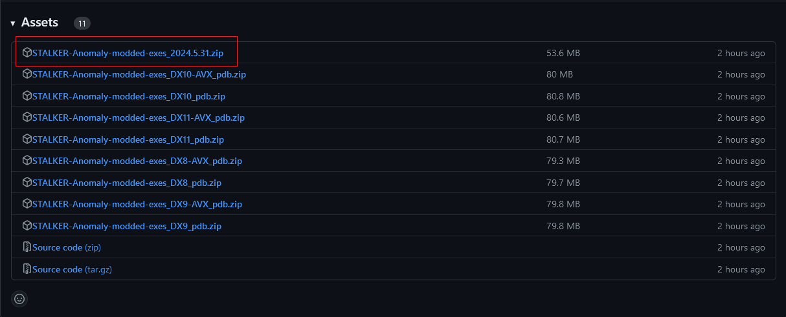
Download the first archive in the list, and install them in your game's bin folder.

Download the PDB archive that corresponds to the version of DirectX you are using.
If you use DX11-AVX, download the DX11-AVX_pdb.zip, if you use DX10, download the DX10_pdb.zip, etc.
| 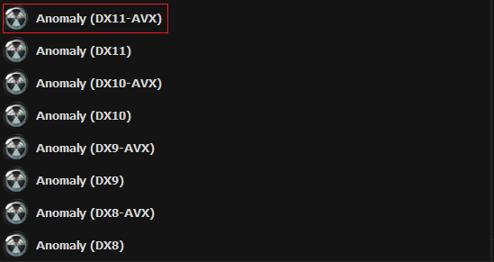 | 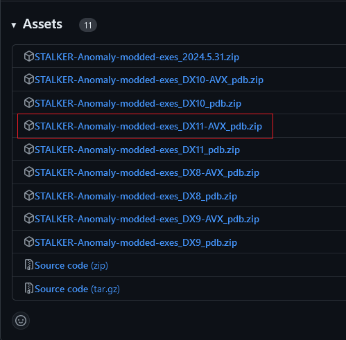 |
Place the PDB files in the same folder as the executable you are using (i.e. in your game's bin folder).
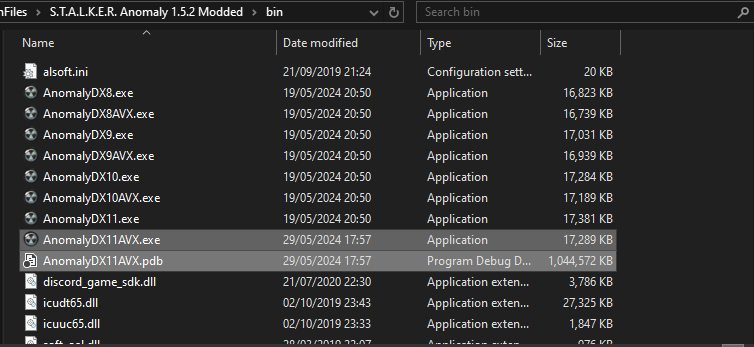
Lua variables unlocalizer
Intro
by demonized#1084
Lua variables unlocalizer is a part of modded exes repo, version 2023.03.09+
This addons allows to unlocalize variables for lua environment, making them global to the script namespace
Usage
-
In brackets you define the script file name as a section, without ".script" part
-
Under the section put all variables that should be unlocalized, just their names
-
Below is the example for actor_effects.script file. RENDERER and STATIC_LIGHT variables are local there, and this file will make them global
-
all unlocalizers .ltx files should be put into gamedata/configs/unlocalizers folder
-
unlocalizer .ltx'es can be named as you wish, there are no rules there
-
Supported local definitions (if local is declared like in the list below, it is possible to unlocalize it)
- local
= (will be transformed to = ) - local
(will be transformed to = nil) - local
, , (if any of name1, name2, name3 is in unlocalizers' lists, they all will be unlocalized) (will be transformed to , , = nil) - local
, , = , ... (will be transformed to , , = , ...) - local function <function_name>... (will be transformed to function <function_name>...)
- local
-
Unsupported local definitions
- local x; local y (will be ignored)
- local x local y (will be ignored)
- any variations of multiple local keywords on a single line (will be ignored)
Example in gamedata/configs/unlocalizers/unlocalizer_text.ltx
[actor_effects]
RENDERER
STATIC_LIGHT
Useful addons, scripts and utils
DRAGGABLE HUD EDITOR
Allows you to change hud values in weapon hud editor by dragging your mouse
Source
Anomaly Dependencies
Various autoinject script modules for use by other scripts
Source
Anomaly Demonized Scripts
Source of not so truthy repo for all uncommon anomaly dependencies
Source
Anomaly Addon Dependencies
Various utility scripts of objectionable quality for STALKER: Anomaly
Sources
Stalker Anomaly Resources by Oiltanker
Include:
-
ITEM GENERATOR - used as item drops, or other stuff, will generate other items, useful for disassembly to generate custom amounts of stuff
-
WORKBECH TOOL AUTO INJECTION + FIXES - fixes some default behaviour and can be used to create recipes with same resulting item or 1 ingredient recipes or add other items as a tool to a recipe
-
TERRAIN ENUMERATOR - enumerates spawnable points and caches them into files
Sources
Monitor Mod DB
Mod DB comment monitor for addon authors
Source
Structure of Files
The files may differ from each other, depending on their purpose, but they all have properties in common.
Note this article describes the structure from CoP or SoC and may not apply to Anomaly!
Section definition
For starters, any information is stored in "sections". These are a kind of objects with a set of parameters, which are usually predefined either by the game engine, if it is some kind of config, or by the scripts, if it is a file responsible for game logic.
Let's take the stalker_sim_squad_novice section of the squad_desct.ltx configuration file as an example:
[stalker_sim_squad_novice]:online_offline_group
faction = stalker
npc_random = sim_default_stalker_0, sim_default_stalker_1, sim_default_stalker_2
npc_in_squad = 2, 3
In this case we can notice the following:
- Definition of the
stalker_sim_squad_novicesection. Works like a normal variable with similar properties:- The name cannot be repeated in the scope.
- Can have different scopes, depending on the context.
- It can be referenced if needed to change the section or simply put the information in a separate section (e.g., the meet section).
- Declaring the
faction,npc_randomandnpc_in_squadparameters online_offline_groupinheritance. Like any other inheritance, it inherits the parent's information, which can be overwritten if desired. In this case it inherits from the filem_online_offline_group.ltx:
[online_offline_group]
GroupControlSection = spawn_group
class = ON_OFF_S
;$spawn = "scripts\online_offline_group"
Parameter definition
As we discussed above, any section can have parameters. Until now, however, these were just static, simple parameters of the config file. I now propose to parse a slightly more structurally complex parameter from the game logic file:
on_info = {-dont_have_info} %+add_info =play_sound(sound_name)% sr_idle@end
The structure may be confusing at first, but it is quite logical and simple. Let's start by breaking it down:
- Parameter name
on_info - Separator
= - The so-called "Condlist", which will be discussed later,
{-dont_have_info} %+add_info =play_sound(sound_name)% sr_idle@end
Definition of Condlist
As written above, the developers have made such a thing as "Condlist". What is it? In essence, it is a kind of block, in which there can be 3 things:
- Condition
- Action
- Value or reference
Example:
{Condition} %Action% Reference
Condition
It is written in {} brackets and is needed to create a condition check so that actions only take place when the condition is met. That is, actions will be executed only when the condition returns True when the "AND" operator is logically executed. You can specify things like:
- Check the presence of infoportion
+info_name - Check for absence of infoportion
-info_name - Checking for a chance of up to 100 in percent
~20 - Function call from
xr_conditions.script.- If the function name is preceded by
=, it is expected to returnTrue. This is exactly the same asfunction() == True. - If the function name is preceded by
!, it is expected to returnFalse. This is exactly the same asfunction() == False.
- If the function name is preceded by
Example entry, in this case we have this condition:
- Lack of info under the name
info1 - Availability of info called
info2 - Player has an item called
item_name - Checking that it is not day
{-info1 +info2 =actor_has_item(item_name) !is_day}
Action
It is written in %% brackets and can hold such things as:
- Adding infoportion
+info_name - Removing infoportion
-info_name - Function call from
xr_effects.sctript, unlike condition, can only be called with=
Example entry, in this case we have this action:
- Delete info called
info1 - Add info called
info2 - Issue
task_name - Retrieve
item_name
%-info1 +info2 =give_task(task_name) =remove_item(item_name)%
Value or reference
And at the end, a reference or a value. There are no special features here. You can specify things like:
- Reference to the
sr_idle@testsection. Necessary for some configs and logic. How it works will be described below. - The value of
st_text,true,10and so on. Can be used in some configs, when you want to dynamically change the value of parameters. For example, as it is done with tasks intask_manager.ltx - The keyword is
nil. Means "nothing", analogous to null from programming languages. Can be used to specify a value or to end logic.
Feature of use
The main feature of Condlist is that you can specify several Condlists in one parameter. For example:
[hit]
on_info = {=hit_by_actor =hitted_on_bone(head_boss:boss_jaw:brow:ear_r:eye_l:eye_r:) -zat_b106_one_shot} %+zat_b106_one_shot +zat_b108_actor_damaged_chimera +zat_b106_ahtung%, {=hit_by_actor !hitted_on_bone(head_boss:boss_jaw:brow:ear_r:eye_l:eye_r:) -zat_b108_actor_damaged_chimera} %+zat_b108_actor_damaged_chimera%
This is the section from the file zat_b106_chimera.ltx. As we can see, there are two Condlists in the on_info parameter. They are separated by a comma and do the following:
- First Condlist:
- Condition.
=hit_by_actor- damage dealt by the player?=hitted_on_bone(head_boss:boss_jaw:brow:ear_r:eye_l:eye_r:)- damage done to these bones?-zat_b106_one_shot- no info with this name?
- Action.
+zat_b106_one_shot- gives out info with this name+zat_b108_actor_damaged_chimera- gives out info with this name+zat_b106_ahtung- gives out info with this name
- Condition.
- Second Condlist:
- Condition.
=hit_by_actor- damage dealt by player?=hitted_on_bone(head_boss:boss_jaw:brow:ear_r:eye_l:eye_r:)- damage is NOT done to these bones?-zat_b108_actor_damaged_chimera- no info with this name?
- Action.
+zat_b108_actor_damaged_chimera- gives info with this name
- Condition.
In this example, we have no references or variables, because the section implies that we only react when we take damage. So we have only actions and checks here.
Sources
Condition Lists Tutorial
Courtesy of tdef#6225 Transfered to modding book by demonized#1084
Condition list or condlist is one way to write dynamic configuration files and have this structure:
somefile.ltx
[some_section]
my_condlist = {=A(a1:a2) !B +C -D ~30} X %=E(e1) +F -G%, Y
and are used like this:
somescript.script
local ini = ini_file("path\\to\\somefile.ltx")
local condlist = ini:r_string_to_condlist("some_section","my_condlist")
local result = xr_logic.pick_section_from_condlist(game_object_1, game_object_2, condlist)
the code above is the equivalent of:
if -- {
xr_conditions.A(game_object_1, game_object_2, {"a1","a2"}) and -- =A(a1:a2)
not xr_conditions.B(game_object_1, game_object_2) and -- !B
db.actor:has_info("C") and -- +C
not db.actor:has_info("D") and -- -D
math.random(1,100) > 30 -- ~30 (not a typo, ~30 means 70% chance, ~80 means 20% and so on)
then -- }
result = "X" -- X
-- %
xr_effects.E(game_object_1, game_object_2, {"e1"}) -- =E(e1)
db.actor:give_info_portion("F") -- +F
db.actor:disable_info_portion("G") -- -G
-- %
else -- ,
result = "Y" -- Y
end
Condlist can have more than one condition block:
my_condlist = {-A -B} X, {-A +B} Y, Z
this is the equivalent of:
if
not db.actor:has_info("A") and
not db.actor:has_info("B")
then
result = "X"
elseif
not db.actor:has_info("A") and
db.actor:has_info("B")
then
result = "Y"
else
result = "Z"
end
All condlist elements are optional, these are all valid condlist:
cond1 = ;returns nil
cond2 = true ;returns "true"
cond3 = %=f% ;returns nil and executes xr_effects.f(a,b) --> remember that a and b depend on the arguments of pick_section_from_condlist
cond4 = {-info1} , %=f1% ;if actor doesn't have info1 then returns nil, else returns nil and executes xr_effects.f1(a,b)
cond5 = {+info1} %=f1% ;same effect of previous one but easier to read
The return value can be ignored to use condlist as a way to run functions listed from a config file, one example are the on_complete lines in task manager files:
on_complete = %=reward_stash(true)%
this condlist has no condition (the part inside {}) and no return value, so calling
xr_logic.pick_section_from_condlist()
on this is the equivalent of just calling
xr_effects.reward_stash(x, x, {"true"})
Remember that both the return on pick_section_from_condlist and arguments passed to xr_conditions and xr_effects functions are strings and not boolean/numbers
Some config lines are condlist even if they aren't obvious, for example one line can be
something = true
but in reality it's a condlist that always returns "true", the only way to know for sure it's to search for "something" in all scripts and see if that config line is parsed as condlist anywhere.
Condlist can be also be parsed from a string
local condlist1 = ini:r_string_to_condlist("some_section","my_condlist")
local somestring = ini:r_string_ex("some_section","my_condlist")
local condlist2 = xr_logic.parse_condlist(game_object, string1, string2, somestring)
condlist1 and condlist2 are the same, the first 3 arguments of xr_logic.parse_condlist are used only to print a message if the 4th (the actual condlist string) is nil, or just use alun_utils.parse_condlist(string)
Now we examine some condlist in Anomaly, what they mean and some examples of edits we can make.
Example 1
near the end of tm_dynamic.ltx in configs/misc
[simulation_task_52]
icon = ui_inGame2_PD_Torgovets_informatsiey
storyline = false
prior = 120
sim_communities = army, bandit, csky, dolg, ecolog, freedom, killer, stalker
repeat_timeout = 14400
precondition = {=random_chance(100)} true, false
title = simulation_task_52_name
descr = simulation_task_52_text
descr_functor = general_fate_desc
job_descr = simulation_task_52_about
task_complete_descr = simulation_task_52_finish
stage_complete = 4
target_functor = general_fate
status_functor = fate_task
condlist_0 = {!task_giver_alive(simulation_task_52)} fail
on_job_descr = %=on_init_fate_task(simulation_task_52:detector_radio:broken_pda:k01_darkscape:k02_trucks_cemetery:y04_pole:l06_rostok:zaton:jupiter:pripyat)%
on_complete = %=inc_goodwill_by_tasker_comm(simulation_task_52:50) =reward_stash(true) =reward_random_money(10500:18500) =reward_random_item(beer:vodka:vodka2:cigarettes_lucky_3:cigarettes_russian_3) -simulation_task_52_dead_spawned -simulation_task_52_item_spawned -simulation_task_52_target_found =remove_quest_item(simulation_task_52) =forget_dead_npcs(simulation_task_52) =pstor_reset(simulation_task_52)%
on_fail = %=remove_quest_item(simulation_task_52) -simulation_task_52_dead_spawned -simulation_task_52_target_found -simulation_task_52_item_spawned =forget_dead_npcs(simulation_task_52) =pstor_reset(simulation_task_52)%
if we change precondition line to
precondition = {=is_rain} true, false
then npc will propose this quest only if you ask them while it's raining
if we change it to
precondition = false
then npc will never give this quest
true and false dont have any special meaning in the condlist on their own, in this case they matter only because the code that parses the condlist spelled out by the precondition line does different things depending on the pick_section_from_condlist return value
if we change on_complete to
on_complete = aslkdjslakd %=inc_goodwill_by_tasker_comm(simulation_task_52:50) =reward_stash(true) =reward_random_money(10500:18500) =reward_random_item(beer:vodka:vodka2:cigarettes_lucky_3:cigarettes_russian_3) -simulation_task_52_dead_spawned -simulation_task_52_item_spawned -simulation_task_52_target_found =remove_quest_item(simulation_task_52) =forget_dead_npcs(simulation_task_52) =pstor_reset(simulation_task_52)%
everything will still work as before, because the code that runs the pick_section_from_condlist on on_complete does nothing with the return value, so if it's nil, random text, true/false or whatever doesn't matter
Example 2
inside devushka.ltx in configs/scripts/escape
[walker@devushka]
path_walk = guard_2_walk
path_look = guard_2_look
on_info = {=surge_started} walker@surge
on_info2 = {=is_night} walker@sleeper_1
on_info3 = {=is_rain} walker@rain
combat_ignore_cond = {=actor_enemy =check_enemy_name(actor)} false, false
combat_ignore_keep_when_attacked = {=is_warfare} false, true
reach_distance = 10
gather_items_enabled = false
help_wounded_enabled = false
corpse_detection_enabled = false
invulnerable = {=is_warfare} false, {!actor_enemy} true, false
on_game_timer = 2400 | remark@smoking_stand
we change on_info3 to
on_info3 = {=is_rain =is_actor_enemy_to_faction(freedom)} walker@rain
now Hip will seek shelter from rain only if we are enemy to Freedom, women be like that sometimes
Custom conditions
if you want to make custom conditions either create new functions inside xr_conditions or make your own script file defining functions inside xr_conditions scope
my_conditons.script
function xr_conditions.has_more_money_than(a,b,c)
-- a and b will be the game objects given as arguments to the xr_logic.pick_section_from_condlist call that evaluates this condlist
-- most of the times a will be the actor game object and b one npc game object, but unless you're 100% sure of that (after testing or looking which pick_section_from_condlist parses it and with which arguments)
-- dont ever rely on those, i've seen cases where b is a server object or even nil
local amount = c and c[1] and tonumber(c[1])
-- c is a table where condlist arguments for the function are passed
-- so has_more_money_than(10000) means c[1] == "10000" (a string!)
-- so we need to convert it to a number to be able to compare it to another
if amount then
return db.actor:money() > amount
end
return false
end
now we have has_more_money_than available as conditions for condlist, now we can do
on_info = {=has_more_money_than(50000)} walker@surge
so Hip will stay outside during blowouts unless we have more than 50k rubles
you can do the same with xr_effects
my_effects.script
function xr_effects.give_tuna_to_actor(a,b,c)
alife():create('conserva',vector(),0,0,0)
end
then change on_info2 to
on_info2 = {=is_night} walker@sleeper_1 %=give_tuna_to_actor%
and when Hip goes to sleep you'll get a tuna can
Inventory Icons
Written by @nltp_ashes
Table of content :
- I. Item config
- I.A. Defining an icon sheet
- I.B Placement on the icon sheet
- II. Icon sheet
- II.A. Generalities
- II.B. Setting up icons within the sheet
Items in S.T.A.L.K.E.R. have icons. They are used in the inventory, when picking them off the ground, on the main HUD when attached to the belt, and so on.
This guide aims to help you understand how icons are assigned to an item, how the icon system works, and ultimately, how to properly create your own icons.
I. Item config
Let's start from the end : the item's config. To assign an icon to an item, you need to consider two things. Which icon sheet to use, and where your icon is on this sheet.
I.A. Defining an icon sheet
First, icons textures are contained in icon sheets : textures containing multiple icons. In your item's config, you must (or not) define the icon sheet to use :
File : gamedata\configs\items\items\items_my_item.ltx
[my_item]
icons_texture = ui\icons\my_icon_sheet
...
In this example, the icons_texture field contains a path, relative to gamedata\textures\ where the game to look for the icon sheet at gamedata\textures\ui\icons\my_icon_sheet.dds.
If you do not define this field, the game will default back to the vanilla icon sheet : gamedata\textures\ui\ui_icon_equipment.dds.
I.B Placement on the icon sheet
Like will be later explained, your icon will be somewhere on this icon sheet. Thus, you need to define the coordinates of the icon on the sheet, and the size of the icon.
File : gamedata\configs\items\my_item.ltx
[my_item]
...
inv_grid_width = 2 ; how many slots wide it should be
inv_grid_height = 1 ; how many slots tall it should be
inv_grid_x = 4 ; where on the grid the icon is on the x axis
inv_grid_y = 2 ; where on the grid the icon is on the y axis
II. Icon sheet
Now that we understand how the icon sheet is used, it's time to... well, create an icon sheet.
II.A. Generalities
To create and edit your icon sheet, you'll need a specialized software program. Many exist, and it's really up to your personal preferences. I personally use Paint.NET (Free), but you can use GIMP (Free), ImageMagick (Free), Adobe Photoshop (Paid), etc.
First, you will need to create a DirectDraw Surface (.dds) file at the location you defined in the item's config. Here, following the same example, that will be gamedata\textures\ui\icons\ with a file called my_icon_sheet.dds.
For your icons to look good, and have maximum compatibility, you should :
- Have the x and y resolution of your texture must be a power of 2 :
128x256or256x256, etc.; - Save the icon sheet, using
ARGB8(also calledA8R8G8B8) format; - Make the background of your icon sheet should be transparent.
You can think of your sheet as a grid of "slots". Each slot is 50px by 50px. So if you want your icon to be 1 slot, it should be 50px by 50px, two slots vertically 100px by 50px, etc.
Your icon(s) should :
- Be at least 1 slot wide and 1 slot tall (otherwise there isn't really an icon you know?);
- Be at most 10 slots wide (that's the width of vanilla's inventory).
II.B. Setting up icons within the sheet
Let us take the following icon sheet as an example.
Note : The black grid is here to help in the explanation, and is of course to be removed before using the icon sheet in-game !
Note 2 : The white background is here to help you see the grid. Your icon sheet should not have a white background !
File : gamedata\textures\ui\icons\my_icon_sheet.dds

You can imagine each slot having a coordinate on this grid. Coordinates start a (0, 0).
File : gamedata\textures\ui\icons\my_icon_sheet.dds

The coordinates for the box of Mon Cheri (the red box in the middle) are for example (4, 2).
File : gamedata\configs\items\my_item.ltx
[my_item]
...
inv_grid_x = 4 ; where on the grid the icon is on the x axis
inv_grid_y = 2 ; where on the grid the icon is on the y axis
File : gamedata\textures\ui\icons\my_icon_sheet.dds
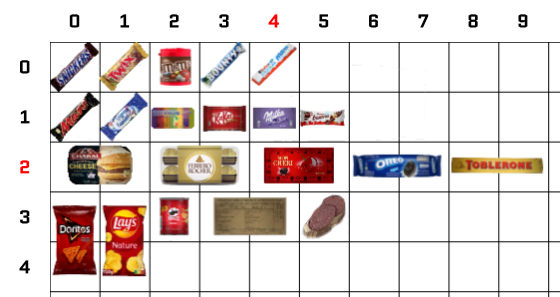
The size of the icon is 2 for the width, and 1 for the height.
File : gamedata\configs\items\my_item.ltx
[my_item]
...
inv_grid_width = 2 ; how many slots wide it should be
inv_grid_height = 1 ; how many slots tall it should be
File : gamedata\textures\ui\icons\my_icon_sheet.dds

Algoritm of Logic
"Executable" files, game logic files, unlike config files, have an algorithm that, if I'm not mistaken, is based on scripts. The peculiarity of such files is that they have a "Current Section", which defines reactions to interactions with it. Let's look at an example:
[logic]
active = sr_idle@wait
[sr_idle@wait]
on_actor_inside = sr_idle@inside
[sr_idle@inside]
on_info = {=actor_has_item(item)} sr_idle@has_item
[sr_idle@has_item]
on_info = {!actor_has_item(item)} sr_idle@inside
on_actor_outside = nil
The implementation is not the most correct, there are better options, but it is made specifically for demonstration purposes. If we visualize it, it will happen:
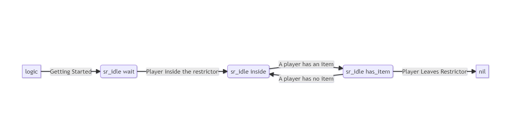
Depending on the condition, the object will change the current section. Thus, if the current section is sr_idle@has_item then parameters such as sr_idle@inside will be ignored, because information about other sections besides the current one will be unknown.
Important! Information about the current section is stored in game saves. So if you change your logic, you should check if it works in a new game, because the object will keep its state during the save, and this means the previous sections before the current one will not be called (as shown above, from the
sr_idle@has_itemsection the object will never return to thesr_idle@waitsection). This is implemented in the load_obj script fromxr_logiс.script.
Now let's look at more complex logic:
[logic]
active = sr_idle@start
[sr_idle@start]
on_actor_inside = {!black_screen} sr_no_weapon@wait
[sr_idle@wait]
on_actor_inside = {=check_smart_alarm_status(pri_a16:normal) !actor_has_weapon} sr_no_weapon@wait
on_info = {=actor_in_zone(pri_a16_sr_light)} sr_no_weapon@wait
on_info2 = {+pri_a28_update_task_cover_strelok -pri_a28_actor_in_zone_stay} sr_idle@wait_stalkers
on_info3 = {+pri_b305_third_cam_go -pri_b305_quest_completed} sr_idle@wait_b305
[sr_no_weapon@wait]
on_actor_outside = sr_idle@wait
on_info = {+pri_a28_update_task_cover_strelok -pri_a28_actor_in_zone_stay} sr_idle@wait_stalkers
[sr_idle@wait_stalkers]
on_info = {+pri_a28_actor_in_zone_stay} sr_idle@wait
[sr_idle@wait_b305]
on_info = {+pri_b305_fifth_cam_end} sr_idle@wait
This logic is already bigger than the previous one, but it is not complicated at all, if you understand it. Now let's visualize it:
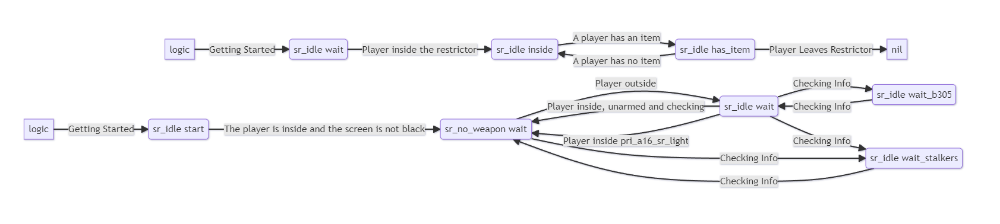
I think some have already noticed that there is no action here at all, just changing sections. I dare to suggest that it is about the type of section sr_no_weapon, which prohibits the player to get the weapon. Depending on the condition, the restrictor prohibits or allows the player to take out a weapon, based on the current section.
Sources
Scripting
Hey, you. You're finally awake! You were trying to cross the border, right?
So, well, scripting.
Writing scripts for this game is hard, really. You will want to start with Lua book to learn the basics of Lua programming language. I don't know how good it is at teaching general programming concepts, but you surely are brave enough to not concede before a mere programming skill? Right?)
Anyway, the whole programming thing is kinda hard, so feel free to ask questions in Anomaly Discord. Channel #modding-coding is just for you.
Starting here I will assume you know lua. You read the book from start to end and became a master of this programming language. Or at least you know the difference between if and while.
Oh, by the way, code editor. I like Codium, but I know RavenAscendant uses Notepad++ like some old man. For the first couple of scripts you'll be fine with either, choose for yourself.
Introduction to codebase
Prepare for the worst. You'll be either right, or pleasantly surprised.
Codebase. What a nice word for a folder filled with Poorly-But-Sometimes-Good written code. Say hello to our little friend /gamedata/scripts - here you will find every script in the game, and you will even be able to read some of them. Here are the important ones:
-
_g.script- your global namespace. Everything defined here can be accessed in any script. If you don't understand where a function comes from, it's probably here. For example, here liesCreateTimeEvent. -
lua_help.script- engine imports. It's not really a lua file, but it's important nevertheless. Every namespace defined here is globally accessible, and you better avoid name collisions with it - otherwise death is imminent. Documentation is... Not there, but some names are understandable, so you might be able to use it anyway. -
axr_main.script- a table with all callbacks is defined there. Don't register your callbacks there, useRegisterScriptCallbackfrom_ginstead.
These are the ones you need to know about. Every other functionality is found through global search. Ctrl-Shift-F in your favorite editor. You're welcome.
Codestyle
Every opinion on code style is valid. Mine is not only valid, but also right.
Hehe, I'm joking. Please don't hate me :<
In short, you're free to write your code however you are able to. But there are some guidelines for people to not hate you:
-
Use local functions very sparingly. Local functions are not patchable and represent a major pain in the ass for future maintenance without good benefits. No-no-no, don't start this But Man Locals Give A Performance Boost talk, the difference is marginal and there is no real reason to depend on it.
-
Try to make your functions as understandable as possible - someone will read it. You will, probably, and you will hate yourself in a week after writing bad code. And the whole community will meme on you, so... Don't. Make your variable names give context, make your functions small enough they remain readable and patchable. Feel free to ask in discord, I will slam dunk on your code any day of the week.
-
Try to use monkey patching and callbacks instead of rewriting the main game files. It is possible 90% of time, and addon users will be living their best lives without addon conflicts. Cool? Cool.
That's it. Feel free to be a good boy/girl and write your code so that we'll understand. Good boy. Or girl.
Wetting our hands
At the end of this guide you'll grow enough to be a modder. Just kidding, lol.
Nothing better for a start than actually starting, don't you think?
Who
cares
about
boring
theory.
I sure don't, especially while teaching people.
Let's finally take our script into the game! Go to your favorite Anomaly installation and navigate into gamedata/scripts. Don't have it? Create it. There, create a file my_ingenuous_script.script any way you want. All script files in the folder will be automatically included in the game - cool, right?
Hello, World?
Let's start by showing the player some nice message. Function news_manager.send_tip does wonders in this regard - let's use it! Here is a text for the script:
my_ingenuous_script.script
function on_game_start()
RegisterScriptCallback("actor_on_first_update", actor_on_first_update)
end
function actor_on_first_update()
news_manager.send_tip(db.actor, "Your mum gay", nil, nil, 30000)
end
By loading your favorite saved game you will now be shown the state of affairs in the world. You don't see the message? Welp, idk, try again, works on my end.
Let's see how it works:
- Function
on_game_startis always called after loading all the scripts inscriptsfolder. That happens really early in the loading screen, and the game is not initialised at this point, so we need another time to show the message. - Callback
actor_on_first_updateis fired exactly once after the game is loaded. This is the point in time where the game shows you the "Press any key to continue" in the loading screen, but game session already started, so it's fine. - Now we actually send the message in function
actor_on_first_update.db.actoris player,30000is for how long the message will be shows, everything else is irrelevant.
A little cheating incident
Just showing stuff is no fun, we need Game Mechanics, of course. Lets give player a RPG-8 every time you press "O". Delete everything in your script and write this:
my_ingenuous_script.script
function on_game_start()
RegisterScriptCallback("on_key_press", on_key_press)
end
function on_key_press(key)
if key == DIK_keys.DIK_O then
alife_create_item("underwear", alife():object(0))
end
end
Try it out.
Your mighty soaked underwear RPG-8 is waiting for you, you dirty cheater.
You should already know how it goes. Here are the important stuff:
- Callback
on_key_pressgives you a key from DIK_keys table. DIK_keys is imported from engine, checklua_help.scriptfor other keys. 0is the id of actor.alife():object(0)gives you the server object of actor.alife_create_itemcreates an item inside the inventory of a given server object.
Easy? Easy.
gg go next
Server and game objects
Computers are stupid! But so are we, so it's actually okay.
So, in short, we don't want our single-threaded XRay Engine to implode...
That's why we have server objects and game objects! A-Life is inherently complex and has up to 65535 objects in the game, each having a ton of computations. We kinda don't want a ton of computations, so we only compute interesting things around player and everything else is simplified.
Server objects
All objects in the game have two faces: server and level objects. Server object exists always, and has all the really basic stuff about the object: what it is, its coordinates, its parent object and some more basic info. Server objects are also called offline objects, but mainly just server objects.
You can get a server object for something in the game using alife():object(id). Because the engine functions are Really Fucking Fragile we also have a function in _G called alife_object which does the same, but also checks that your id is what everyone expects it to be (a number). Better use it, mostly no overhead.
Special case: id of player (or actor) is 0, and player server object can be obtained with alife():object(0).
Level objects
Unsurprisingly, there also are online objects, or game objects, or level objects. Interesting parts about them: they only exist around player and they have more functionality than server objects. Online radius setting defines what exactly is "around".
You can get a level object for something using level.object_by_id(id). All the level objects are also saved in db.storage table, which is pure lua and won't randomly break. As with server objects, we have a function in _G called get_object_by_id which will perform a sanity check and give you the object either from db.storage or from level.object_by_id. Use it, it's good.
Special case: level object of actor is always online and is saved in db.actor.
:3
| - | Server object | Level object |
|---|---|---|
| Exists | Always | Only around player |
| Functionality | Basic | Everything You Need |
| To obtain | alife_object(id) | get_object_by_id(id) |
| Common identifier | se_obj | obj |
| Id | se_obj.id | obj:id() |
| Section | se_obj:section_name() | obj:section() |
Callbacks
I. INTRODUCTION
Callbacks are a convenient and performant way to execute code when certain events occur.
The idea is: you want a function of yours to be executed when something happens in-game, so you subscribe to a callback, and give it your function so that when the event does happen, it can call it back.
There are many callbacks. Most are defined statically in axr_main.script, but some are added by addons dynamically at runtime.
The "main" callbacks (i.e. the most often used ones) are :
actor_on_update- A callback called really frequently (almost every frame). In some cases, this is the only way to do what you need, but there is almost always a better option. This callback really isn't performance friendly, so it should be used with extreme caution;save_state(and respectivelyload_state) - A callback fired when the player saves (and respectively loads) their game. This callback is fired with an argument :m_data, a table in which you can store (and respectively load) any information you want so that it persists in the save game;on_key_press- A callback allowing you to listen to key presses and react accordingly.
There are three functions that exists allowing you to manipulate callbacks :
RegisterScriptCallback(string, function)- used to register one of your functions to a given callback;AddScriptCallback(string)- used to create a new callback at runtime;SendScriptCallback(string, ...)- used to fire a callback with arguments.
You must register your functions to callbacks in on_game_start. This function will be called automatically by the game (if it exists in your script) after all scripts are loaded. This is because callbacks need to be created before you can register functions to them. The problem is that, when scripts are still loading, it is possible that not all the dynamic callbacks have been created yet.
function on_game_start()
RegisterScriptCallback("actor_on_update", my_func)
end
function my_func()
printf("we are in actor_on_update")
end
II. CREATING CALLBACKS
As previously explained, callbacks can be added dynamically. This means you can create your own callbacks.
To do that, use the AddScriptCallback(string) function (exclusive to Anomaly 1.5.2) to add your new callback. You must do so at the root level of your script, so that other scripts can register callbacks later.
Important : Callback names have a risk of collision, so it is highly recommended you prefix/suffix your callbacks with a unique identifier (like a codename for your addon, or even your nickname - anything that can guarantee no-one else will name their callback the same).
AddScriptCallback("modding_book_something_happened")
Once you have created your callback, you can fire it whenever you want using SendScriptCallback(string, ...). You must specify the callback's name, but after this, you can pass as many arguments as you want. They will be transited to the functions listening for that callback.
In the following example, we will create a callback that fires when the key F is pressed. To make the example more descriptive, it will be split in two files.
File : gamedata\scripts\script_a.script
-- A counter of how many times the player has paid respects
local respects_counter = 0
-- Create the new callback
AddScriptCallback("modding_book_on_pay_respects")
-- Register callbacks
function on_game_start()
RegisterScriptCallback("on_key_press", some_key_was_press)
end
-- Function called when a key is pressed
function some_key_was_press(dik)
-- If the key that was pressed is F
if dik == DIK_keys.DIK_F then
-- Increase the counter
respects_counter = respects_counter + 1
-- Send the newly created callback with the current value of the counter
SendScriptCallback("modding_book_on_pay_respects", respects_counter)
end
end
File : gamedata\scripts\script_b.script
-- Register callbacks
function on_game_start()
RegisterScriptCallback("modding_book_on_pay_respects", is_paying_respects)
end
-- Function called when the player pays respects
function is_paying_respects(respects_count)
-- print some message in the console showing how many times the player has paid respects
printf("player has paid respects " .. respects_count .. " times")
end
III. CALLBACKS LIST
The following is a non-exhaustive list of callbacks available in Anomaly 1.5.2.
Technically, this should cover all the callbacks available in vanilla, but remember that addons (like the modded exes) can add additional callbacks too.
Player :
* on_before_level_changing Params: ()
* on_level_changing Params: ()
* actor_on_before_death Params: (<number>,<table>)
* actor_on_net_destroy Params: (<binder>)
* actor_on_first_update Params: (<binder>,<?>)
* actor_on_update Params: (<binder>,<?>)
* actor_on_weapon_fired Params: (<game_object>,<game_object>,<number>,<number>,<number>,<number>)
* actor_on_weapon_jammed Params: (<game_object>)
* actor_on_weapon_no_ammo Params: (<game_object>,<number>)
* actor_on_weapon_lower Params: (<game_object>)
* actor_on_weapon_raise Params: (<game_object>)
* actor_on_weapon_reload Params: (<game_object>,<number>)
* actor_on_weapon_zoom_in Params: (<game_object>)
* actor_on_weapon_zoom_out Params: (<game_object>)
* actor_on_item_take Params: (<game_object>)
* actor_on_item_take_from_box Params: (<game_object>,<game_object>)
* actor_on_item_put_in_box Params: (<game_object>,<game_object>)
* actor_on_item_drop Params: (<game_object>)
* actor_on_item_use Params: (<game_object>,<string>)
* actor_on_item_before_use Params: (<game_object>,<table>)
* actor_on_item_before_pickup Params: (<game_object>,<table>)
* actor_item_to_belt Params: (<game_object>)
* actor_item_to_ruck Params: (<game_object>)
* actor_item_to_slot Params: (<game_object>)
* actor_on_trade Params: (<game_object>,<?>,<number>)
* actor_on_init Params: (<binder>)
* actor_on_reinit Params: (<binder>)
* actor_on_info_callback Params: (<game_object>,<number>)
* actor_on_hit_callback Params: (<game_object>,<number>,<vector>,<game_object>,<number>)
* actor_on_attach_vehicle Params: (<game_object>)
* actor_on_detach_vehicle Params: (<game_object>)
* actor_on_use_vehicle Params: (<game_object>)
* actor_on_hud_animation_play Params: (<table>,<game_object>)
* actor_on_hud_animation_end Params: (<game_object>,<string>,<?>,<?>,<number>)
* actor_on_hud_animation_mark Params: (<number>,<string>)
* actor_on_sleep Params: (<number>)
* actor_on_foot_step Params: (<game_object>,<number>,<?>,<?>,<?>)
* actor_on_interaction Params: (<string>,<game_object>,<string>)
* actor_on_before_hit Params: (<game_object>,<SHit>,<number>,<table>)
* actor_on_before_hit_belt Params: (<table>,<number>,<number>)
* actor_on_weapon_before_fire Params: (<table>)
* actor_on_feeling_anomaly Params: (<game_object>,<table>)
* actor_on_leave_dialog Params: (<number>)
* actor_on_stash_create Params: (<table>)
* actor_on_stash_remove Params: (<table>)
* actor_on_frequency_change Params: (<number>,<number>)
* actor_on_achievement_earned Params: (<string>,<string>)
* actor_on_movement_changed Params: (<number>)
* actor_on_footstep Params: (<string>,<number>,<boolean>,<table>)
* actor_on_jump Params: ()
* actor_on_land Params: (<number>)
NPCs :
* npc_on_use Params: (<game_object>,<game_object>)
* npc_on_choose_weapon Params: (<game_object>,<game_object>,<table>)
* npc_on_item_take Params: (<game_object>,<game_object>)
* npc_on_item_take_from_box Params: (<game_object>,<game_object>,<game_object>)
* npc_on_item_drop Params: (<game_object>,<game_object>)
* npc_on_net_spawn Params: (<game_object>,<server_object>)
* npc_on_net_destroy Params: (<game_object>)
* npc_on_update Params: (<game_object>,<table>)
* npc_on_before_hit Params: (<game_object>,<SHit>,<number>,<table>)
* npc_on_hit_callback Params: (<game_object>,<number>,<vector>,<game_object>,<number>)
* npc_on_death_callback Params: (<game_object>,<game_object>)
* npc_on_fighting_actor Params: (<game_object>)
* npc_on_weapon_strapped Params: (<game_object>,<game_object>)
* npc_on_weapon_unstrapped Params: (<game_object>,<game_object>)
* npc_on_weapon_drop Params: (<game_object>,<game_object>)
* npc_on_hear_callback Params: (<game_object>,<number>,<?>,<number>,<number>,<vector>)
* npc_on_get_all_from_corpse Params: (<game_object>,<game_object>,<game_object>,<boolean>)
* npc_on_eval_danger Params: (<game_object>,<table>)
* anomaly_on_before_activate Params: (<game_object>,<game_object>)
Mutants :
* monster_on_update Params: (<game_object>,<table>)
* monster_on_before_hit Params: (<game_object>,<SHit>,<number>,<table>)
* monster_on_hit_callback Params: (<game_object>,<number>,<vector>,<game_object>,<number>)
* monster_on_net_spawn Params: (<game_object>,<server_object>)
* monster_on_net_destroy Params: (<game_object>)
* monster_on_death_callback Params: (<game_object>,<game_object>)
* monster_on_actor_use_callback Params: (<game_object>,<game_object>)
* monster_on_loot_init Params: (<game_object>,<table>)
* burer_on_before_weapon_drop Params: (<game_object>,<game_object>)
Physical objects :
* physic_object_on_hit_callback Params: (<game_object>,<number>,<vector>,<game_object>,<number>)
* physic_object_on_use_callback Params: (<game_object>,<game_object>)
Vehicles :
* heli_on_hit_callback Params: (<game_object>,<number>,<nil>,<game_object>,<nil>)
* vehicle_on_death_callback Params: (<number>)
Squads :
* squad_on_npc_creation Params: (<server_object>,<server_object>,<server_object>)
* squad_on_enter_smart Params: (<server_object>,<server_object>)
* squad_on_leave_smart Params: (<server_object>,<server_object>)
* squad_on_npc_death Params: (<server_object>,<server_object>,<server_object>)
* squad_on_update Params: (<server_object>)
* squad_on_first_update Params: (<server_object>)
* squad_on_add_npc Params: (<server_object>,<server_object>,<string>,<vector>,<number>,<number>)
WARNING!
the following 2 callbacks will ALWAYS fire on level change/loaded save because the old data isn't saved for compatibility purpose
it's up to the user to check for the case in which old level name/old game vertex is nil in their code if they want to use this
* squad_on_after_game_vertex_change Params: (<server_object>,<number>,<number>,<boolean>)
* squad_on_after_level_change Params: (<server_object>,<string>,<string>)
Smart terrains :
* smart_terrain_on_update Params: (<server_object>)
* on_try_respawn Params: (<server_object>,<table>)
Server objects :
* server_entity_on_register Params: (<server_object>,<string>)
* server_entity_on_unregister Params: (<server_object>,<string>)
* fill_start_position Params: ()
* se_stalker_on_spawn Params: (<server_object>)
* se_actor_on_STATE_Write Params: (<server_object>)
* se_actor_on_STATE_Read Params: (<server_object>)
GUI :
* ActorMenu_on_before_init_mode Params: (<string>,<table>,<game_object>)
* ActorMenu_on_mode_changed Params: (<number>,<number>)
* ActorMenu_on_item_drag_drop Params: (<game_object>,<game_object>,<number>,<number>)
* ActorMenu_on_item_focus_receive Params: (<game_object>)
* ActorMenu_on_item_focus_lost Params: (<game_object>)
* ActorMenu_on_item_before_move Params: (<table>,<number>,<game_object>,<string>,,<number>)
* ActorMenu_on_item_after_move Params: (<number>,<game_object>,<string>,,<number>)
* ActorMenu_on_trade_started Params: ()
* ActorMenu_on_trade_closed Params: ()
* GUI_on_show Params: (<string>,<string>)
* GUI_on_hide Params: (<string>,<string>)
* map_spot_menu_add_property Params: (<CUIWindow>,<number>,<string>,<string>)
* map_spot_menu_property_clicked Params: (<CUIWindow>,<number>,<string>,<string>)
* main_menu_on_keyboard Params: (<number>,<number>,<CUIScriptWnd>,<boolean>)
* main_menu_on_init Params: (<CUIScriptWnd>)
* main_menu_on_quit Params: (<CUIScriptWnd>)
* on_screen_resolution_changed Params: ()
Technical :
* on_game_load Params: (<binder>)
* on_key_press Params: (<number>)
* on_key_release Params: (<number>)
* on_key_hold Params: (<number>)
* on_before_key_press Params: (<number>,<number>,<boolean>,<table>)
* on_option_change Params: ()
* on_localization_change Params: ()
* on_console_execute Params: (<string>,<string>,<string>,...)
* on_before_save_input Params: (<number>,<number>,<table>)
* on_before_load_input Params: (<number>,<number>,<table>)
Files :
* save_state Params: (<table>)
* load_state Params: (<table>)
* on_pstor_save_all Params: (<game_object>,<?>)
* on_pstor_load_all Params: (<game_object>,<?>)
Others :
* on_enemy_eval Params: (<game_object>,<game_object>,<table>)
* on_before_surge Params: (<table>)
* on_before_psi_storm Params: (<table>)
* on_get_item_cost Params: look at bottom of utils_item.script for details
Time Events
Written by @nltp_ashes
I. INTRODUCTION
Time events are a mechanism that exist to run a function after a given number of seconds. Before we even start, here are two important things you need to know :
- Time events do not persist through saves : if you start a 60 seconds time event, save/load before the time event runs, the function will never be executed;
- When a time event fires (aka, its delay is reached), the function associated with it will be executed indefinitely at each update until the function returns
true.
II. CREATING A TIME EVENT
To create a time event, use the CreateTimeEvent function. It takes four arguments :
-
event_id
A unique identifier of your choice (could be your name, or something related to what is happening). -
action_id
A second unique identifier of your choice (what matters is that two time events should not have the sameevent_id&action_idpair). -
delay
The time to wait (in seconds) before running the function. -
function
The function to execute when the delay has passed.
With all that, you can for example create three time events that will execute three different functions with a 5 seconds gap.
CreateTimeEvent("modding_book_event", "delay_func_a", 5, func_a)
CreateTimeEvent("modding_book_event", "delay_func_b", 10, func_b)
CreateTimeEvent("modding_book_event", "delay_func_c", 15, func_c)
Note that there exist two ways to pass information to a function within a time event.
First, you can pass information through the closure. It works, but you should only do it for non-userdata types. Passing userdata (alife_objects, game_objects, vectors, etc) exposes you to pure virtual function calls if the object was destroyed by the engine while the time event was pending.
local my_var = 5
CreateTimeEvent("modding_book_event", "delay_func", 5, function()
printf("My var is %s", my_var)
return true
end)
Another way to do it is to pass arguments through the time event function. You can give an indefinite amount of them. Each argument that you give to CreateTimeEvent will be transited to the function you passed.
local my_var_a = 5
local my_var_b = 10
CreateTimeEvent("modding_book_event", "delay_func", 5, function(some_var_a, some_var_b)
printf("My var A is %s and B is %s", some_var_a, some_var_b)
return true
end, my_var_a, my_var_b)
If you are having troubles reading the previous bit of code, note that it is equivalent to the following one.
function my_func(some_var_a, some_var_b)
printf("My var A is %s and B is %s", some_var_a, some_var_b)
return true
end
local my_var_a = 5
local my_var_b = 10
CreateTimeEvent("modding_book_event", "delay_func", 5, my_func, my_var_a, my_var_b)
A frequent use case of time events is waiting for a game_object to come online after an alife_object hs been created.
local se_obj = alife_create("my_sec", pos, gvid, lvid)
CreateTimeEvent("wait_for_spawn", se_obj.id, 0, function(id) -- 0 as a delay means it'll be ran on the next frame
if level.get_object_by_id(id) then
-- do something
return true -- if the object has spawned, kill the time event
else
return false -- if not, we'll run it again next frame
end
end, se_obj.id)
III. RESETTING A TIME EVENT
It is possible to reset the delay after a time event has been created. For this purpose, use the ResetTimeEvent function. It takes three arguments :
-
event_id
A unique identifier of your choice (similarly toCreateTimeEvent). -
action_id
A second unique identifier of your choice (similarly toCreateTimeEvent). -
delay
The new time to wait (in seconds) before running the function (starting from the momentResetTimeEventis called).
CreateTimeEvent("modding_book_event", "delay_func", 10, some_func)
-- after 5 sec
ResetTimeEvent("modding_book_event", "delay_func", 10)
-- time event will end up running after 15 seconds
IV. REMOVING A TIME EVENT
Lastly, it is possible to remove a time event with the help of the RemoveTimeEvent function. There isn't a lot to say about this one, its name says it all. It takes two arguments :
-
event_id
A unique identifier of your choice (similarly toCreateTimeEvent). -
action_id
A second unique identifier of your choice (similarly toCreateTimeEvent).
RemoveTimeEvent("modding_book_event", "delay_func")
Monkey patching
Courtesy of RavenAscendant#7504
All code snippets used in the guide are licensed under a Creative Commons Attribution-NonCommercial-ShareAlike 3.0 Unported License
This guide is specifically written for modding Anomaly. Much of it will apply with minor changes to any STALKER modding. The concept is not limited to STALKER or even lua, Minecraft modding makes extensive use of monkey patching in Java.
Monkey patching is the practice of modifying code at run time. Instead of modifying the script file directly the modifications are done in memory by a second script. The primary reason for doing this in Anomaly is compatibility. If two addons are distributed with an edited version of the same Anomaly game script the two addons will be incompatible without patch. Worse than incompatible they will most likely cause crashes if installed together. Monkey patching doesn’t guarantee compatibility, if two addons change the same thing in different ways it is unlikely to behave properly, however the likelihood of crashing is significantly reduced.
First a caution, it is always better to simply use call backs. There are a significant number of call backs that allow you to change the way Anomaly plays. Editing Anomaly scripts directly or by monkey patching should only be done if there is no other way. Once one script starts changing the flow of another it becomes significantly harder to figure out what is actually going on.
In general Anomaly scripts are loaded in alphabetical order. When you monkey patch a script that hasn’t loaded you force it to load. If two monkey patches are applied the script that comes last wins. Starting the name of your script with a z means that it will load after most other scripts. While only sometimes necessary and very rarely problematic, the strong suggestion to do so in an earlier version of this guide has resulted in a convention of starting monkey patch scripts with z or zzz.
If a function or variable in a script is declared as local other scripts can’t manipulate it. None of the below techniques will work on local functions or variables.
Patching Variables
The simplest monkey patch only changes variables. Instant tooltip does this. It uses a callback to watch for the inventory UI being opened and when it is changes the delay for the tool tip:
function on_game_start()
RegisterScriptCallback("GUI_on_show", delay_change)
end
function delay_change(name, path)
--return quickly if not the GUI we want
if not (name ~= "UIInventory") then return end
ui_inventory.GUI.item_info.delay = 80
ui_inventory.GUI.upgr_info.delay = 80
end
The changes can be far more complex, an example of reaching into a complex nested table is how SidHud adds itself into the game settings UI with its inject_options_UI() function.
Patching existing Callbacks
The next method is unregistering a Callback. The most obvious use of this is to stop a game script Callback from being run at all so that you can completely replace its functionality, however there are some more fine tuned uses. The order in which Callbacks from various scripts are run is not something that can be relied upon. If you have something that needs to happen before or after a game script Callback the most reliable method is to unregister the games Callback and then call the function directly from your own Callback at the correct timing. Similarly you can use this method to prevent a Callback from running in particular cases. Such as preventing itms_manager.script from creating a half eaten chocolate bar when a chocolate bar is used:
function on_game_start()
UnregisterScriptCallback("actor_on_item_use", itms_manager.actor_on_item_use)
RegisterScriptCallback("actor_on_item_use", test)
end
function test(obj)
if (obj:section() == "chocolate") then return end
itms_manager.actor_on_item_use(obj)
end
The above code has an example of the fact that functions are variables like any other, they can be passed to a function just like a number. They can also be assigned to another variable name just like a number and a function name can be assigned a new value, new code. It is this feature of lua that allows the most powerful monkey patching to work.
Patching Functions
The same way that scriptname.function can be used to call a function in another script it can also be used to save a copy of that function, this can be used to shorten a long function name
ga = utils_item.get_ammo
ga(section, id) -- this is the same as utils_item.get_ammo(section, id)
The scriptname.function syntax can also be used to assign new code (example from first version of Headlamp Animation Fix).
base_Hit_TorchToggle = actor_effects.Hit_TorchToggle
function actor_effects.Hit_TorchToggle()
local animation_setting = axr_main.config:r_value("options","video/player/animations", 1)
if animation_setting then
base_Hit_TorchToggle()
else
item_device.toggle_torch()
end
end
The order there is important. It is necessary to save a copy of the old function first, before you modify it, if you plan on using it later.
Now when any script calls actor_effects.Hit_TorchToggle() it will call the above function instead.
It is important to understand that no matter what name you give a function it can only access local variables in the script it is written in.
Patching xray/luajit “classes”
TL;DR: lua oop doesn’t use classes, but, for reasons, X-Ray’s lua does and we can patch either or both the classes or the instance objects. What the : (colon) operator really does. The : operator in lua is simply a shortcut. Any function defined with a : can be called without it.
foo:start()
foo.start(foo)
Those are equivalent.
Similarly a function can be defined without it.
function foo:start()
…
end
function foo.start(self)
…
end
When calling a function the : acts like . but also passes the table to it’s left as an invisible first parameter to the function on the right.
When defining a function : acts like . but also inserts the variable self at the beginning of the parameter list. This syntax allows lua oop to have a familiar syntax.
LUAJit Classes TODO
Some closing notes.
Dealing with local.
Sometimes you can get lucky if you dig a bit deeper. Actor_effects.actor_on_item_use is declared local. Not only can you not change it, you also cannot unregister the callback that it is assigned to. However all Actor_effects.actor_on_item_use does is call Actor_effects.play_item_fx(obj:section()) which is not local. Actor_effects.actor_on_item_use can be modified or disabled by patching Actor_effects.play_item_fx. (Be careful tho, that particular function is called from other places as well, and if you don’t want to disable them then you may need to get very creative or are out of luck.)
When it comes to local variables it may be possible to calculate them yourself in your script, this is very easy for constants, harder for things that change, but if you really need to monkey patch yourself into every function that changes that variable and duplicate the calculations before calling the original function, this should keep your copy in step with the original. Watch out for side effects.
If any Anomaly Devs are reading this I strongly recommend that all Callback functions be made not local to allow for unregistering them. TBH i’d like to see local only used for function scoped variables with all globals and functions available from outside the script.
Scripted animations
Theory
The first thing to know is that animations can be divided into a few categories:
Motions
- They represent actual hands, NPCs or actor movements
- Stored in .omf files
- Unique to an object
In this article we’ll focus on hands animations which are, for example, sprinting or weapons reloading. FDDA items animations are also motions. Motions are usually unique to a specific object. For example, AK74 reload animation will only look nice when used with AK74 or any other gun that is set up for this specific motion. That means you can still play it in your script with empty hands, but if you play it while holding a PKM the machine gun won’t play any reload animation at all.
Why so many details, you may wonder? Point is, a motion can have interesting use cases. For example, you can play a pistol holstering animation to temporarily hide one or both hands. Or you can use it for gestures as well as other unarmed animations, items animations - there's quite enough room for creativity.
Also, an .omf file itself is not a motion. .omf files usually store multiple motions. If you want to add a new motion, you’ll need to either
- put your motion into an existing .omf file or
- make a new .omf file that will store your motions.
.anm animations
In turn, these can be divided into two subcategories:
Camera animations
These are much simpler due to their nature. Camera animations represent a screen effect - for example, leaning when an actor equips a helmet or a suit, ‘kickback’ effect when enhanced recoil effects are enabled, camera animations when reloading (mostly used by weapon mods like Boomsticks and Sharpsticks; not to be confused with hands motions) etc.
‘Universal’ animations
This is not an official name, of course, it’s just something I came up with to distinguish these from the simple screen effects. They're also called 'Blend animations' in engine. I’d better describe them with an example.
In Anomaly, there’s a ‘misfire’ animation. Try to shoot a gun without any ammo, and you’ll see slight hands movement. This is ‘misfire.anm’ animation.
Point is, this is not exactly a screen effect type of .anm file, and yet this is not an .omf-type motion. It can be used with any object the actor is holding, i.e. it’s not tied to a specific gun.
So technically, these are both .anm files. I just decided there needs to be some sort of distinction. As of now this documentation focuses on playing 'blend' animations.
.anm are separate files unlike motions from .omf files, and every single .anm file can be just placed into anims/ folder in gamedata and used directly.
.ppe effects
These are camera animations with more possibilities: besides camera movements, they can also include, for example, duality effect (when drinking vodka or when there was an explosion next to the actor), grain effect in radiation zones etc. Vanilla night vision is also a .ppe effect.
.ppe files work similarly to .anm files - they’re separate and go to anims/ folder as well.
Practice
Now let’s have a look at what we need to play animations in scripts.
Motions
To play a motion, we need a few components:
- An .ltx file containing the basic parameters of the motion we’re going to use.
- A script function to play it.
Setting up motion parameters
- Create a config .ltx file in configs/items/items and give it any name, but make sure it starts with items_. Example: items_my_anims.ltx.
- Set the parameters. We’ll examine them by looking at this example.
[anim_my_sec]
hands_position = 0.033, -0.155, 0.1
hands_orientation = 0, 0, 0
hands_position_16x9 = 0.033, -0.155, 0.1
hands_orientation_16x9 = 0, 0, 0
anm_my_anim = name_of_motion_that_will_be_played
[anim_my_sec] is an animation section name. It’ll be used in the script.
hands_position, hands_orientation, hands_position_16x9 and hands_orientation_16x9 are hands position/orientation parameters. They work similarly to weapon position parameters.
anm_my_anim is a motion name. From what I saw, it should always be started with anm_ in such a config. Not to be confused with an .omf file name. For example, if your .omf file is called my_new_file.omf and it stores a motion called my_motion_1, specify my_motion_1 here.
To make a test placeholder, you can also open any weapon config file and choose any of the motions specified there (like, anm_ak74_reload, anm_svd_sprint etc.)
Script function
The function that lets you play a motion is:
game.play_hud_motion(hands, anim_section_name, motion_name, bMixIn, speed)
Now let’s have a closer look at its arguments.
- (int) hands
- Specifies what hands will be used to play an animation. 1 - left hand only, 0 - right hand only, 2 - both hands.
- Note that it's not possible to play a left-handed (like detector draw) animation for the right hand. But you still can play any two-handed animation with only one of the hands.
- (string) anim_section_name
- This is the name of the animation section specified in the config file.
- In our example this is [anim_my_sec].
- (string) motion_name
- This is the name of the motion within the specified section in the config file.
- In our example this is anm_my_anim.
- (bool) bMixIn
- This one is a bit unclear - it’s missing from
lua_help.script, and I’m not sure if I understood how it works correctly. This is how this argument is named in the engine, probably it has something to do with mixing or transition from one motion to another.
- This one is a bit unclear - it’s missing from
- (float) speed
- Sets the playback speed of an animation. Example: 0.5, 1.2, 5.5 etc.
Supplementary functions
game.hud_motion_allowed()
Checks if a hands motion can be played at the moment. Useful as an additional safety check. Returns True or False.
game.get_motion_length(anim_section_name, motion_name, speed)
Gets the specified motion length. The parameters are identical to those in play_hud_motion.
Note that it returns time in milliseconds, so in order to get the actual length you’ll need to divide the result by 1000. Useful to know when the motion is over.
game.stop_hud_motion()
It will stop any hands motion that is currently playing (since it can’t accept a specific motion as an argument), not only the one you’re playing in your script. Example: you have an animation from FDDA that is currently being played. This function is called from your script, intentionally or not. It will stop the current FDDA animation as well, despite the fact that it wasn't called from any of the FDDA scripts.
Things to consider
- It’s safer to always stop the looped animations explicitly. This can be done by:
- playing a non-looped and non-restart animation - the previous one will be stopped.
- calling
game.stop_hud_motion().
- Consider adding more protection from breaking something.
- Know when to stop an animation and how not to make it looped when it’s not wanted. Remember to check the necessary conditions to make sure it makes sense to play it at all at the current moment.
- Know the callbacks you’re using to play animations. This may affect the animation behavior. Incorrect callback usage may lead to unwanted results, softlocks or sometimes even crashes.
- Call
game.only_allow_movekeys(true)if you don’t want the user to break an animation by pressing any action keys (like item quick use), and then restore the controls withgame.only_allow_movekeys(false). hide_hud_inventory()anddb.actor:activate_slot(0)can be used to close the backpack inventory or force hide an active weapon if needed. Detectors can be manipulated in a similar way with:
local det = db.actor:active_detector() or nil
det:switch_state(2)
and then restored with:
det:switch_state(1)
.anm animations
It’s simpler to play these. Here we don’t need any configs. The files are played directly. The function is game.play_hud_anm(path, hands, speed, power, looped, restart).
In this case I assume the played animation is “misfire.anm” mentioned earlier - I used this function for it in my addon. You can try it with different animations.
The arguments are:
- (string) path
- Path to the .anm file.
- It is predefined that a file is in the gamedata/anims folder. That being said, the path should look like this, for example:
"camera_effects\\actor_move\\strafe_left.anm". - The real path in this case is
gamedata/anims/camera_effects/actor_move/strafe_left.anm. - If the file is in the root anims/ folder, just specify the file name.
- (int) hands
- Specifies what hands will be used to play an animation. 1 - left hand only, 0 - right hand only, 2 - both hands.
- (float) speed
- Sets the playback speed of an animation. Example: 0.5, 1.2, 5.5 etc.
- (float) power
- Sets the ‘amplitude’ of an animation. The more it is, the more noticeable the animation will be. When set too low, it may be too ‘faint’. Example: 0.51, 1.65, 5.1 etc.
- (bool) looped
- Defines if an animation will loop until stopped by any means. Can be True or False.
- (bool) restart
- Specified whether or not an animation can be restarted after it was finished, or it should only play once. Can be True or False.
Supplementary functions
game.stop_hud_anm(path, force
Stops a specific .anm from playing. path is identical to the one above. force is a boolean parameter which makes it possible to force stop it - a bit more ‘harsh’ method.
game.stop_all_hud_anms(boolean)
Stops all .anm’s that are currently played.
game.set_hud_anm_time(path, time)
This function alters the playback speed of the specified .anm file. path is still the same as it was mentioned earlier, and time is actually a speed value (float).
The name may be a bit confusing, but judjing by the engine code it actually manipulates the .anm speed:
float speed = (anm->anm->anim_param().max_t - anm->anm->anim_param().t_current) / time;
And a descriptive example in actor_effects.script:
game.play_hud_motion(1, mc_anm_sec, "anm_hide_hand", true, hide_hand_speed)
new_speed = game.set_hud_anm_time(anm_name, ((mc_anm_time_1 + mc_anm_time_2) / 1000) + anm_additional_length)
Things to consider
- Unlike motions, .anm’s can be stopped directly by calling
game.stop_hud_anm. It makes it possible to stop a specific .anm only. - .anm’s can be ‘layered’ - i.e. it’s possible to play two or more .anm files at the same time. This can provide interesting and good-looking results.
- However, it may be tricky to play a few .anm’s with the same name at the same time because the function relies on the file name (which is already played in this case). If you want to play the same effect but with different parameters, consider making a copy of the .anm you use, give it another name and play them with two functions with different arguments according to the desired result.
- In practice, .anm playing parameters often require fine-tuning by testing it in-game. The same set of parameters for different .anm's may often lead to substantially different results. Achieving a good looking result may require patience.
- Though .anm's usually can't cause a softlock or break something substantially, it's still advised to stick to the safety recommendations described in the 'Motions' section.
.ppe effects
These are the functions for them:
level.add_pp_effector(path,id,looped)level.set_pp_effector_factor(id,power)level.remove_pp_effector(id)
The first one is used to start a .ppe effect. Arguments:
- (string) path
- It works absolutely the same way the path argument from
game.play_hud_anmdoes.
- It works absolutely the same way the path argument from
- (int) id
- An ID of the effect. Can be any number.
- Used for removal of the effect later on.
- (bool) looped
- Defines if the effect will loop until stopped by any means. Can be True or False.
The second one is used to alter an already existing effect added by add_pp_effector. Arguments:
- (int) id
- The ID of the previously created effect.
- (float) power
- Effect intensity factor from 0 to 1.
The third one stops and removes the added effect. The only argument is id - use the same one you specified when adding the effect with add_pp_effector.
Creating and setting up a model in Blender
This article is about creating a model and setting its parameters
Beginning
- First, familiarize yourself with the limitations and capabilities of the format .object (because you may export to it more often than to .ogf) to avoid errors.
- This article will talk about textures, read an article about creating and preparing them.
Start
Create or download the model you like. Do a UV if you don't have one.
The model itself:

UV:

Texturing
Textures can be created in any program designed for this purpose, or you can simply download them.
Texture:

Important note about texture maps
In STALKER, due to its outdated engine, only the following texture maps are used:
- Color Map (.dds)
- Normal Maps (For Stalker they are used as .bump and .bump#) (The Blender X-Ray addon does not support the .bump format at this time (June 2022).)
So extra texture maps will have to be removed.
Here you need to add your created texture in .dds format
As a result, in the Shader Editor ( ) our textures should look something like this:
) our textures should look something like this:

So after creating the model, the UV and the texture, the setup within Blender begins.
Setting up
First, the model itself will be set up.
You can start by positioning the model over the origin in this way (The "Drop It" addon for Blender is highly recommended for such actions):

Then apply the coordinates with Ctrl + A > All Transform. This will allow us (if you make for example a model library or work in the SDK) to drag and drop the model on the surface.
Next, we need to adjust our model to normal size (so that in the game it will not be big or small). If you have already set up the addon to use and set up the necessary paths to your folders, you need to import into the scene model of some person from the game.
In the N-panel there should be a tab "X-Ray" in it unfolds the list "Viewer" and we click "Open Folder" ( ).
).
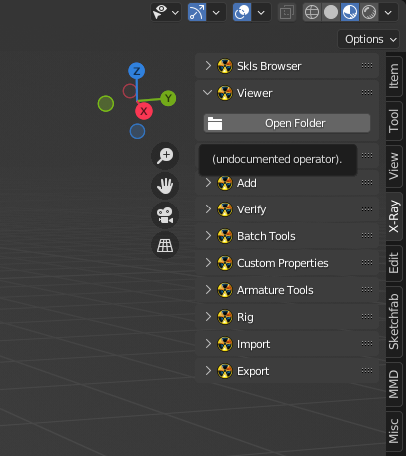
The Blender explorer window opens. Go to our unpacked folder with the game files (namely the folder "meshes").
The character models you need are in the "actors" folder, where the faction models are sorted into folders. (More about the structure of folders, main folders and files you can learn here)

Select the desired folder with the models and click on the "Open Folder" button.
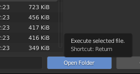
Depending on the size of the models in the "Viewer" folder may take longer to open than you would like. So, "Viewer" is open. It shows all the models in the selected folder. Click on any model and a character model appears in front of us. 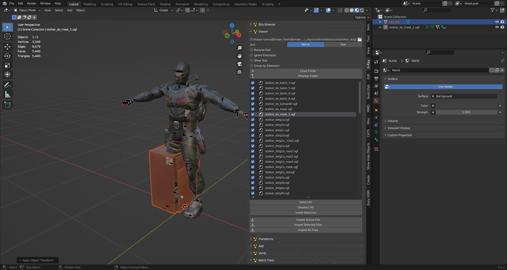
Next, we just adjust our model to acceptable proportions. After fitting, apply transformations to our object. 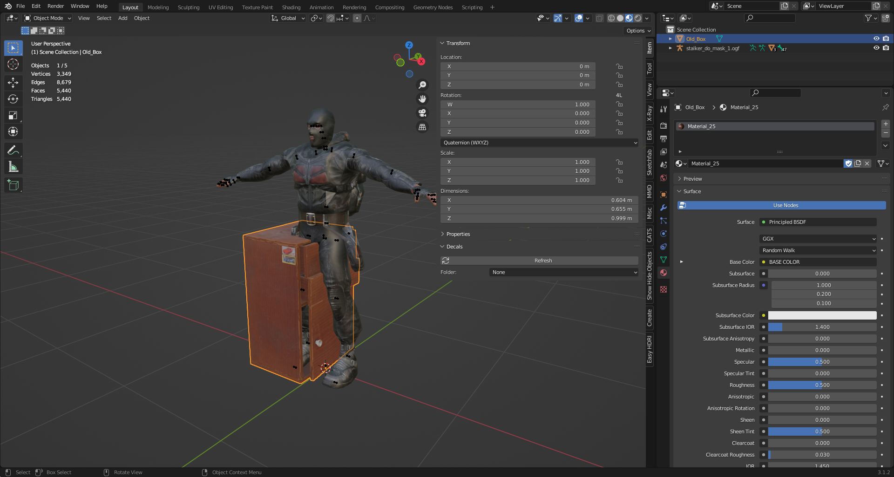
In the "Viewer" list, we can click on "Close Folder ( )" to close the list of models and the model imported to us in the scene, too.
)" to close the list of models and the model imported to us in the scene, too.
Creating a dynamic model
At this point we have to decide what type of model we want to use (static, dynamic, or something else). (About the types of objects you can learn here)
It was decided to make our object dynamic.
To do this, you need to create a bone and a vertex group (so that the bone can affect exactly the vertices you choose).
Select the model and go to the "Object Data Properties" ( ) tab
Image here
) tab
Image here
Under "Vertex Groups" click on the plus sign (a "Vertex Group" with the name "Group" ( ) will be added) and double-click to rename it (the same name will be needed later for the bone).
) will be added) and double-click to rename it (the same name will be needed later for the bone).

The next step is to create a bone (Shift + A > Armature > Single Bone).

To make our model move like the bone in the future, we need to rename the bone to the name that was given to "Vertex Groups" ( ).
).
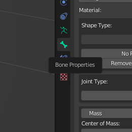
And rename the bone.

Select our object and switch to "Wireframe" mode ( ) ("Z" Button) (this is optional).
Place the bone approximately in the center of the model.
) ("Z" Button) (this is optional).
Place the bone approximately in the center of the model.

After that, apply the bone transformations (Ctrl + A > All Transform).
Select our model and go to the "Modifier Properties" ( ) tab.
) tab.

In the "Modifier Properties" ( ) tab, add the "Armature" modifier (
) tab, add the "Armature" modifier ( ) (Add Modifier > Armature (under Deform)).
) (Add Modifier > Armature (under Deform)).
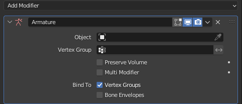
The modifier has the following necessary items:
- Object (
 )
) - Bind to () Vertex Groups
In the "Object" ( ) field, select our bone (you can select it with the pipette ()).
Also make sure that the checkbox next to "Vertex Groups" () is marked.
These actions allowed us to bond our object and bone, but not yet to the fullest extent.
) field, select our bone (you can select it with the pipette ()).
Also make sure that the checkbox next to "Vertex Groups" () is marked.
These actions allowed us to bond our object and bone, but not yet to the fullest extent.
Next step: First select the bone after selecting the model, press Ctrl + P. A list appears, select "Bone" (or other settings, because sometimes selecting "Bone" may not help). 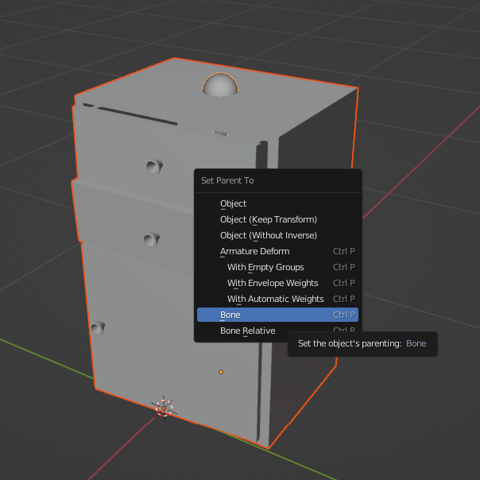
This allowed the bone and the model to be fully bonded together. Now when the bone moves or rotates, the model will move with it.
Now you have to set the bone properties for X-Ray.
Bone
Select the bone and go to the "Bone Properties" ( ) tab.
) tab.
We see the "X-Ray Engine: Bone" section.

The desired field is "Shape Type" (where you choose the type of shape (for collision)).
From the whole list, our object is more suitable for the "Box" type. Let's choose it.
Next, click the "Edit Shape" button to check and edit the Shape itself.
The Shape of the bone appears and it does not match the model.
The Shape that just appeared is automatically selected and the "Object Properties" ( ) tab is selected.
) tab is selected.

In the same tab we see the "X-Ray Engine: Edit Helper" section with three buttons:
 Apply Shape (accepts changes to the bone shape)
Apply Shape (accepts changes to the bone shape) Fit Shape (Blender will automatically try to fit the Shape to the size of the object)
Fit Shape (Blender will automatically try to fit the Shape to the size of the object) Cancel (closes Shape editing mode)
Cancel (closes Shape editing mode)

Apply Shape may help in some cases, but not in this one (nothing happens after clicking), so you need to adjust the Shape manually.
Without going into Edit mode, press "S" and start fitting the Shape to the model. Going through the combinations, changing the shape of the Shape, we finally create an acceptable Shape.

Accept the transformation by clicking on "Apply Shape" ( ). Everything will apply and the Shape will disappear.
To check the correctness of the shape and adjust the center of mass for the bone, go to the "Object Data Properties" () panel.
). Everything will apply and the Shape will disappear.
To check the correctness of the shape and adjust the center of mass for the bone, go to the "Object Data Properties" () panel.

Here we see the "X-Ray Engine: Skeleton" section and the two buttons we need:
- Display Bone Shape
- Display Bone Mass Centers
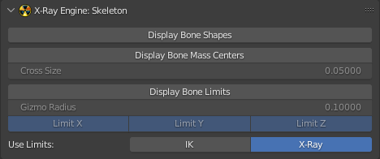
Click on "Display Bone Shape" to check the bone shape

And by clicking on "Display Bone Mass Centers" a Cross will appear, from which you can understand where the center of mass is located (its mass and location can be edited in the tab "Bone Properties").

Go to the "Object Properties" ( ) tab.
Here you will find the "X-Ray Engine: Object" section.
) tab.
Here you will find the "X-Ray Engine: Object" section.

Remember that our object, by design, will be dynamic, so click on the button "Object", where we select the type "Dynamic".
The editing of the bone parameters is finished, the next step is Materials.
Select our object and go to the "Material Properties" () tab.
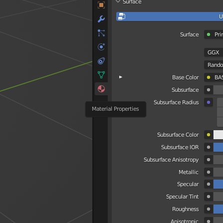
Here we see the name of our material and a list of "X-Ray Engine: Material" with lots of items.

There is no point in telling about each point here. (there is a separate section in the book)
The items we need for the model now are:
- Shader (This setting is responsible for the appearance of the surface.)
- Compile (Here are descriptions of the settings that the level geometry compiler uses)
- Material (Here you can select surface materials)
Select the shaders you want.
Well, the model setup in Blender is done. Congratulations!
The final stage
To check the model you can go the following ways:
- Load the model into the SDK and check
- Export the model in .ogf format and add it directly to the game.
- Check the model and parameters through third-party programs
Creating an animation in Blender for a HUD object
Related Videos
Creating animations for the camera in Blender
Beginning
- First, familiarize yourself with the .anm file format.
Creating animations
Create or enter a Blender scene.
In the N-panel in the X-Ray panel in the Add rollout, click on the "Add X-Ray Camera"() button.
Choose a empty and animate it!
Export
To export the animation you need to select the empty through the export operator in .anm and export
Editing existing animations
You want to edit existing animations of a weapon or other item? You're insane.
Begining
Before you begin, familiarize yourself with the animation files:
Editing hud animations
- import a hand hud model
- import a model of a weapon or something else
- import the hand and object animations you want
- (Optional) You attach the main bone of the object to the lead_gun bone (Using Copy Transform)
- Edit
Editing camera animations
- import the camera animation
- Edit
Texturing
About:
This section will deal with the creation of textures, their preparation and formalities
Creating and preparing textures
Related Videos
Beginning (Via Paint.net)
First, familiarize yourself with the supported texture compression (.dds .bump .bump#)
Start
First we have to create a texture, or we have to download one. Next, we need to convert our texture into .dds format. To do this, you can use any program of yours that can do such a thing. (or you can take a program from this list)
The most commonly used program for this is Paint.net. We download the texture and save it as .dds. The Save Settings window appears.

We have to choose the texture compression that suits us.

Save our texture. All of this may come in handy, for example for creating a model.
Working correctly with icon atlases
Greetings, this is comrade Hrusteckiy - UI-programmer, whose work can be seen in the New Project, Last Fallout Overhaul, Oblivion, Hike, and many others, also made 100x100 icons for the original game. Noticed that many modders suffer from improper saving textures and work with them. This guide will make their life easier and teach them to do without mistakes (by the way, came to this myself through their own messes).
Let's start with software
- First of all, use Photoshop CS5/CS6 or CC (I use 2019)
- Second, forget about the Stalker Icon Editor
- Third, we need Paint.net. That is, we use only two programs to work with the icons themselves, not counting the program for rendering them
Next, you need to work with the source - .tga ideal buffer format for these two programs, save it in 32-bit format.
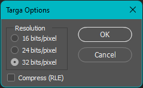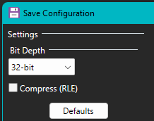
To add new icons, use Paint.net. We make a new layer, paste on it the picture we need and adjust to the size (bilinear method), select the area, cut and paste to the main layer, thereby erasing the previous icon, if any. We save and go to Photoshop. Here we turn on the grid (Ctrl+'), its size is adjusted here, by default it is 50 pixels.
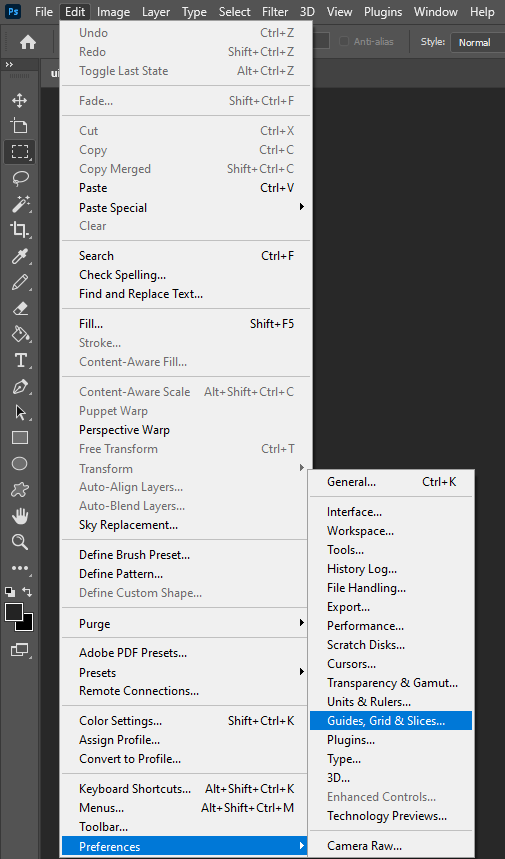 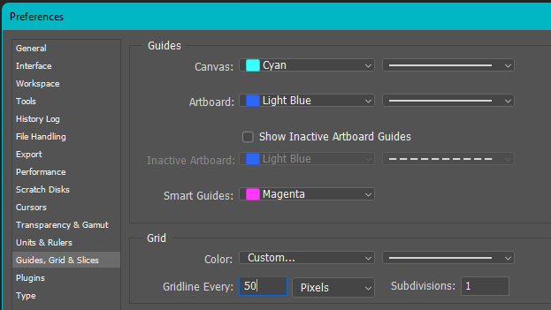
IMPORTANT!!! DO NOT USE THE RIGHTMOST AND BOTTOMMOST CELLS, THEY ARE NOT WHOLE AND ARE SMALLER THAN THE REST BY A FEW PIXELS.
We select with shift color+alpha, and, if necessary, adjust the icon within a cell, save it. To copy icons from one atlas to another, select the icon on one, copy and paste on the other - it's best to do it with the color and alpha selected, so you don't have to transfer separately. Next, we go to "layers" and unlock the layer - this opens us information in the properties about the selected element and its position. This is where we will find out the coordinates, for 50x50 we have to use a calculator, and for 100x100 we just cut off two zeros each.
UPD: in CS5/CS6 you can get coordinates on F8 (in the new versions have simplified access and it is on the properties fold).
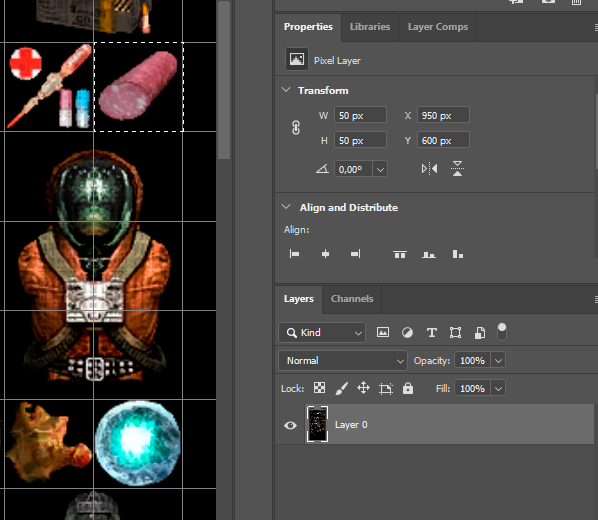
Here is the position of the X - 950, divide by 50 and we get 19 - this is the number written in inv_grid_x. Similar story with the player. W - Width 50, divide by 50, we get inv_grid_width equal to one. It's the same with height.
AFTER UNLOCKING THE LAYER, DON'T SAVE THE ATLAS, JUST CLOSE IT!
Open the atlas in Paint.net or in Photoshop (you need the .dds plugin).
To save in Photoshop
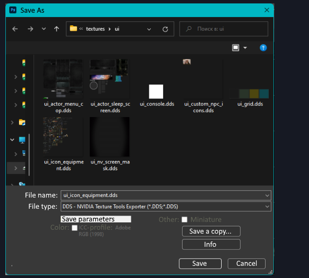 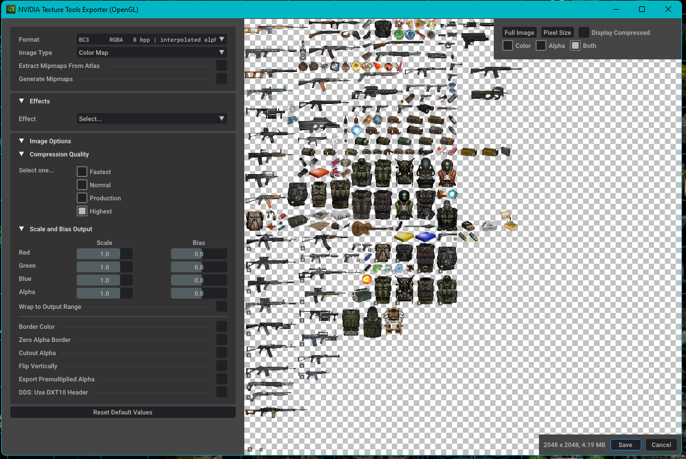
To save in Paint.net
.png)
.png)
Sources
Hrust Contacts
Mapping
In short: Don't work with maps. You can compile and run new maps in the game, but it is not a pleasant experience in any way. You cannot change existing maps. Anomaly devs are working hard to fix this, and we expect the situation to get better with Anomaly 1.6.
But, if you really are adventurous:
To compile, you need to make a location build. To do this, open or create a location in the Level Editor in the SDK.
For location build this is the minimum set:
- 1 light source
- 1 spawn element
- 1 glow
If the location will have stalkers, you need to create ai grid
Location building
Created a folder with the name, which was specified in the scene properties. It contains all the data about the location.
Compiling the location
In order to compile a location, you need to put it in the:
- game_maps_single.ltx
- game_levels.ltx
After that you can use compilers that are included directly in SDK, or use third party compilers (such as Universal x64 level compilers).
Creating a location in Blender
Beginning
- download the SDK (A list of SDKs can be found here)
- Familiarize yourself with the formats for levels (.lights, level, .ai, .cform, .details, .env_mod, .fog_vol, .game, .geom, .geomx, .hom, .ltx, .ps_static, .spawn, .wallmarks, .som (List here))
At the moment in the addon for Blender it is not possible to create a full-fledged location (no compiler, creating ai-nodes, etc.), so you need to use it with the SDK.
Creating Level
Simply create a level. To do this, you can use, for example, Stalker Asset Library (all objects from the trilogy).
Then you can assign certain flags to objects, such as
- Sectors
- Portals
- HOM
- SOM
And so on.
Those objects that were created by yourself need to be exported in .obj format to the object folder in your SDK and put export path to that file in the model properties.
Next you need to export the scene in the format .level
Next, you need to build and compile the location
Multimaterial Terrain Guide
Written by the New Project mod team
So first, let's try to understand how the rendering system works in general
A terrain is a regular 3d model consisting of many polygons. They can have different materials that will determine the type of their surface: grass, earth, asphalt, etc. In the X-Ray engine, a material has two important parameters that determine its type:
- Game Mlt - actually the material itself, which determines the sounds of footsteps on the given surface, bullet hits, etc.
- Shader – determines the appearance of this material

Terrane settings in SDK Actor Editor
Also, a terrane has a texture, but it defines nothing more than its color in the game - it doesn't even have a bump. And, of course, this texture is common for all the materials in a given terrane. So there is no sense to dwell on it for a long time. Also in our analysis we will skip the Compile parameter.
The material, texture and shader of the terrane can be changed in both SDK Actor Editor and SDK Level Editor in the Library Editor tab. Or even in Blender itself, whichever is more convenient for you.
Let's talk more about the material shader. As already mentioned, it is responsible for the appearance of the material, namely, it defines its detail-texture. No, not the one we wrote about above. Detail-texture is responsible for the pattern of the material - grass, sand, pebbles, etc. This texture has a bump and it is around these textures that we are talking about today.
Customization of shaders and their detail-textures is done in SDK Shader Editor. Opening any terrane shader in it (so-called level-shaders) we will see that all of them have... Wait, why do they need 4 textures? Which of them will be displayed in the game?

RGBA channels of one of the level shaders
To understand this, let's take a close look at these textures. Each of them is assigned in some one of the channels - R (red), G (green), B (blue) or A (alpha). You have already guessed that these are the channels of the RGBA color model, namely - the channels of the terrane mask, with the help of which the game engine understands which texture of a given shader should be shown in the game. Let's look into this in more detail.
The terrane mask uses only four colors - red, green, blue and black - the very same RGBA channels. How does it all work? Let's try to explain it on the example of how the game engine understands it:
- the game sees the terrane with all its many polygons
- From each polygon it reads its material and shader
- In the shaders the game sees the same 4 textures.
- Next, the game reads the mask of the terrane and the color of each polygon
- And finally, the game, according to the color of the mask of a particular polygon, selects from its shader the texture that corresponds to the color channel of the mask.
For example, the game sees a polygon with the material "grass". At the same time, the game sees that this polygon is painted with a green color mask. Based on this, the game decides that in the shader of this material it should take a texture from the G channel. Of course, in a properly configured shader, the grass texture we want should be assigned to this channel. Same with the red, blue and black colors of the mask.

Green grass meets red earth (Blender)
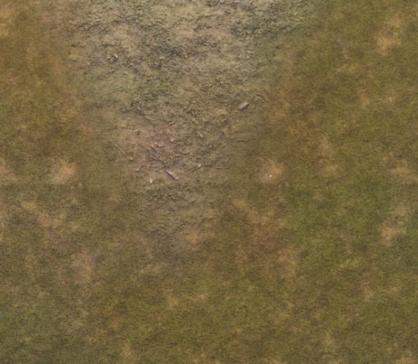
The same stretch of terrane in the game
The principle of shader operation seems to be clear. But why do you need other texture channels in the shader, if only one is used for rendering? They are responsible for smooth transition of this material to other ones. We decided for ourselves that channel G on our mask is grass, channel R is earth, channel B is asphalt, and channel A is sometimes sand, sometimes something else. In fact, we could do it the other way around - give R to grass, B to earth, etc. But it doesn't matter at all, because we decide in the shader settings what texture to feed through what color.
So, let's assume that our green grass polygons met with red earth polygons. You have already guessed about the ground material, that in the R-channel of its shader the ground texture must be assigned - it is this texture that will be rendered. What do we need to do to make a smooth transition between the ground and the grass? The obvious solution comes to mind - to make a smooth transition between red and green on the mask, i.e. just blur the boundary between the colors. However, this will do nothing, there will be no smooth transition in the game anyway. The engine has another mechanism for that.

Example of properly configured channels for transition
Let's remember the unused channels in shaders. For grass, the G channel is responsible for texture rendering - RBAs remain free. For the ground, the R channel is responsible for rendering the texture - GBAs remain free. In order to make a smooth transition between grass and earth, you need to do a very simple action - in the grass in channel R to assign the texture of the earth, and in the earth in channel G - the texture of grass. And indeed, if polygons of green grass meet polygons of red earth, the grass begins to change to the texture that is assigned to it in the channel R, and the earth begins to change the texture to the texture that is assigned to it in the channel G. As a result, both grass and earth from their sides generate a smooth transition to the neighboring material, and at the junction of these materials you can't see a seam (unless, of course, we made a mistake and assigned the same textures in the corresponding shader channels).
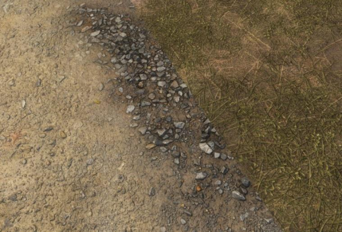
The ground in channel G was mistakenly labeled gravel
All this is difficult to understand from the first time, but try. You can clearly see the principle of smooth transition generation if you assign wrong textures to shaders. For example, let's try to assign sand to the grass in channel R and gravel to the ground in channel G. In the game it will look like this: in the place where the transition of grass to earth should have taken place, a smooth transition of grass to sand will be generated on the grass side, and on the earth side - the transition of earth to pebbles. And at the junction of sand and pebbles, logically, there would be a visible seam. On the one hand, because the textures are not the same, and on the other hand - because the generation of a smooth transition has already occurred earlier.

The ground in channel G was mistakenly labeled gravel
As you have already guessed, the same is true for combining channel B with channel G, channel A with channel R, etc. In any combinations, one thing is important - all shaders must have the same detail-textures in their respective channels. The only difference is that for one shader, for example, our earth, channel R will be responsible for rendering a texture, and for others - for transitioning to this texture. The same is true for the other G, B and A channels.
Thus we conclude that there are no unnecessary mask channels in the shader, all of them are used either in rendering or in transition generation. Of course, we should not forget that all declared detail-textures must have bump, bump# and thm for correct display.
And now we're ready to understand why the X-Ray engine allows you to assign only 4 materials to a terrane - because one material can only smoothly transition into 3 other materials. After all, if the grass is rendered through the G channel, it can only transition to the the remaining RBA channels - there are no others. And if we could set the color of the mask through which the detail-texture will be rendered (for example, yellow or blue), then we could use more materials and create more combinations of them with each other. But in the classic version we are limited to only four mask channels and, accordingly, four terrane materials. And these are already, apparently, limitations independent of the engine. And in general, this is a story from a parallel universe....
Now let's try to understand how we can "legally" bypass this limitation. To understand the text below you must understand exactly how the standard terrane rendering system works and how terrane shaders are organized.

Scheme 1. The most complex in this document
Take a look at scheme 1. We see the familiar grass (green), earth (red) and asphalt (blue). All of these materials, as we know, can be combined with each other in any form. Notice the red square inside the blue square. What kind of material is that? In the standard scheme of building terrane shaders, it should be a ground, because we have agreed that all terrane shaders must have a ground in the red channel, otherwise the generation of a smooth transition between materials will be disturbed. But there is one important trick in this scheme - the left red square does not intersect with the blue square, nor with the second red square. Now strain yourself, it's going to be tricky.
The grass in channel R is tuned to ground, and in channel B to asphalt, so it can generate a smooth transition to the left red square and right blue square. It's business as usual, it seems like nothing special. But if the blue square (asphalt) does not intersect with the left red square (ground) - are we obliged to assign a ground to its R channel? In the standard scheme, yes, because they will intersect somewhere. They will, won't they...?
What if, on our terrane, asphalt never actually intersects with earth, what does that give us? It allows us to free up the R channel from the asphalt and set it up to work with some other material that just like the ground will be fed through the R channel. Got it?
Take another look at Scheme 1. Let the left red square be earth as usual, and the right one be sand. For everything to work, the blue square must have sand in the R channel - only then will it be able to generate a smooth transition to sand. And the sand, in turn. channel B must be set to asphalt.
Can the blue square intersect with the left red square? No, because they have different textures in the R channel, and crossing them will render the wrong transition (see example above). So if asphalt will never make contact with the ground, then we don't have to set asphalt to ground and ground to asphalt. Take a few minutes to think about what you've read. When the idea becomes more or less clear - keep reading.
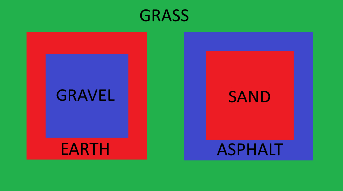
Scheme 2. Slightly easier, but much more interesting
Let's complicate the task - add a new blue square inside the red square. If you have understood the new idea of shader customization, you can guess that this new blue square does not have to be asphalt - let it be, for example, gravel (see Scheme 2).
So, I hope the idea of squares is clear and now we are ready to make one important conclusion - mask channels can be used more than once in different shaders. In other words, we can have two shaders that use blue or any other channel to render their texture. The main thing is that these two shaders must not touch each other anywhere, otherwise they will not generate a proper transition between them. The other channels will still be used to generate transitions. This is the most important thing we need to understand at this point.
But even though this approach theoretically allows you to create more than 4 materials, in practice it turns out to be useless. Seriously, take another look at Scheme 2 and think, in what real situation will you have to put one material inside another like a matryoshka doll? In practice, we most often want a terrane that is 60-70% grass to have 5-6 other materials in various combinations. For example, we want to make a lake. It should be surrounded by grass with specks of earth. Then the grass together with earth should pass into sand, and sand - and bottom silt, which will already be covered with water. Alas, but the above "matryoshka doll method" will not allow to create such complex transitions. However, let's repeat what we have learned from this method - one mask channel can be used for rendering many times.
Now we'll look at a method that will really help us create an unlimited number of materials in any combinations.
First of all, let's take the most common terrain again with 4 materials, which are combined with each other in various combinations. It will be better if this is some kind of test level. Let the materials of the terrane have these shader settings:
- green - grass
- red - earth
- blue - asfalt
- alpha - sand
In such a situation, all channels of the mask are occupied, there is nowhere to go. And we want to make a gravel section on the terrane. What can we do? We have already found out that even if all the mask channels are occupied, we can reuse any of them with another material. But how do we use them when our source materials are already combined in all combinations and we don't want to disrupt them? In other words, what if, in Scheme 2, the red and blue squares do overlap with each other and their shaders are fully tuned to each other?
This is where the "fake transition method" comes to our rescue. This is the same "sorcery" that we were able to discover after months of experimenting with shaders. Now work hard, it's about to get hard again.
Just adding new material for now:
- In the 3d editor create a new gravel material and assign it to some test polygons that are surrounded by grass.
- In Shader Editor create a new gravel shader (gravel). In its channel R we assign gravel texture (it will be rendered), and in channel G - grass texture (with it we will make a transition). In channels B and A you can assign anything you want, we don't need them yet.
- In the mask terrane draw a red color in place of the new test polygons of gravel
- Assign a new shader to the new material
If we leave it like this now and put the level on compilation, we will see the following in the game. Gravel will be rendered, but at the place of its correct transition to grass it will encounter an incorrectly generated transition of grass to ground - because the ground has the channel R channel is set to ground. And at the junction of transitions we will see a clear seam. Thus we are once again convinced that it is impossible to insert new material just like that. But we will go further:
- In 3d editor surround the gravel polygons with a "frame of polygons". Speaking professionally - extrude (extrude) the edges of the polygons of gravel outside. You should get something like a square from the scheme 2.
- There in the 3d editor create a new material and assign it to the polygons of the frame, which now surrounds the gravel. Looking ahead, this frame will generate a smooth transition of grass to gravel, so for convenience, name the new material "grass_to_gravel".
- In Shader Editor create another material, name it the same "grass_to_gravel". In its G channel assign grass (this is the render channel), and in its R channel assign gravel (this is the transition channel).
- Assign the new shader to the new transition material
- Do not do anything in the mask terrane, because if you squeezed the edges outward, they now diverge in the area of green color. And we need it, because the frame texture will be fed through the green channel.
And now if you have done everything as described above, you can compile the test level and see that you have just added a fifth working material to your terrane, which generates the transition to grass without any problems. The operation of the original 4 materials is not disturbed in any way. Impressive? Now let's take a closer look at what we've just done.
As you have already realized, the essence of witchcraft lies in the "frame" that we have created around the new material. It acts as a kind of buffer or channel settings switch, with the help of which we ourselves determine what material our grass will change into.
Note again the grass shader, in its G channel we assigned grass, and this channel according to the terrane mask is used to render the texture, and the other channels are used to generate transitions to other materials. But what if we create a shader that also has grass in its G channel and something else other than grass in the other channels? That's exactly the kind of material we just made, because the grass in the R channel has earth, and the transition has gravel.
As a result, we have two different materials, with the same texture in the render, but with different textures in the "transition" channels. At the junction of grass and frame, the original grass purely technically generates a "transition to itself", but in fact we do not see this transition in the game. Thus, the G channel of both the grass and the fake is simultaneously used for rendering and transition. And the other channels remain free, and we can use them as we want. In the case of the original grass, all channels are already occupied, but in the case of the fake transition they are free. And this is what allows us to assign any new material to it. We have chosen gravel, so we can assign gravel to any of the remaining channels (we have chosen channel R, but you can use any free channel), and then we just need to set the appropriate gravel texture in the shader of our new material.
Thus, having created a fake transition, we can place in it as in a matryoshka doll the new material we need. And such matryoshka dolls on the terrane can be as many as you want.
Quests
Introduction TO REDO
Courtesy of tdef#6225
A quest is defined by adding a section inside \configs\misc\task\task_manager.ltx or any of the files included by it.
task_manager.ltx
[mytask]
status_functor = mytask_status_f
target_functor = mytask_target_f
; there are more things but these are the essentials to have it running
The status functor is a function that gets called every few seconds while the task is active, used to progress the task logic. The target functor is used to decide where to show the quest marker while the task is active.
The status functor needs to be defined inside task_status_functor.script, while the target functor inside task_functor.script To avoid bloating those two scripts you can define those functions in a separate file.
mytask.script
function task_status_functor.mytask_status_f(tsk,task_id)
-- your code
-- return "fail" or "complete" to fail/complete the task
-- change the value of tsk.stage to change the stage of the task
end
function task_functor.mytask_target_f(task_id,field,p,tsk)
-- your code
-- the return value must be a number or nil
-- engine will place a task marker on the object
-- with the id returned by this function or delete it if nil
end
-- this below is not required, adds a "start_mytask" command
-- in debug menu to start the task
_cmd = debug_cmd_list.command_get_list()
function _cmd.start_mytask()
task_manager.get_task_manager():give_task('mytask')
end
Now by calling "start_mytask" in debug menu you will get a task with default task icon (the compass) and a ugly TITLE_DOESNT_EXIST title and DESCR_DOESNT_EXIST description, also nothing happens.
Title and description can be defined in two ways: static (not really, it's actually a condlist which is a can of worms, so for now pretend it's a static value) task_manager.ltx
[mytask]
status_functor = mytask_status_f
target_functor = mytask_target_f
title = st_mytask_title
descr = st_mytask_descr
With st_mytask_descr and st_mytask_title defined inside a xml file in configs/text/eng or rus/
With functors task_manager.ltx
[mytask]
status_functor = mytask_status_f
target_functor = mytask_target_f
title_functor = mytask_title_f
descr_functor = mytask_descr_f
Title and task functors must belong to task_functor namespace so you need to add.
mytask.script
function task_functor.mytask_title_f(task_id,field,p,tsk)
-- title of the task will be the text returned
-- you will have to define your strings in an xml and "translate" the string id
return game.translate_string('st_mytask_title')
end
function task_functor.mytask_descr_f(task_id,field,p,tsk)
-- description of the task will be the text returned
return game.translate_string('st_mytask_descr')
end
After doing either task should show the title and description you set.
Now you need to decide a rough outline of the task, dividing them by stage makes organizing code easier, but nothing prevents you to hangle all the logic in a single stage, however stage matters if you want the task to be part of the random tasks given by npc that will be explained later.
-
Stage 0: kill the soldiers
-
Stage 1: return to fanatic
Edit the status and target functor to spawn a soldier squad at the fallen bridge and make the task target them, and the target fanatic after the soldiers have been killed.
mytask.script
local squad_id
function task_status_functor.mytask_status_f(tsk,task_id)
-- if it's stage 1, then we're done
if tsk.stage > 0 then return end
-- if it's stage 0 and it hasn't been done yet, spawn the army squad at the fallen bridge and make them stay there
if not squad_id then
-- spawn the squad 'army_sim_squad_novice' at the smart 'esc_smart_terrain_TODO'
-- you can check smart terrain names with debug hud on pda map
-- TODO: alun_utils are outdated
local se_squad = alun_utils.create_squad('army_sim_squad_novice', 'esc_smart_terrain_TODO')
-- force the squad to go and stay at the smart 'esc_smart_terrain_TODO'
-- this is done already by alun_utils.create_squad but i write here too to make it clear how to
se_squad.scripted_target = 'esc_smart_terrain_TODO'
-- memorize the squad id to be used later to retrieve the squad object to check if still exists and for the target functor
-- also since now squad_id has a valid value it will no longer be "falsy" so this block won't be executed on the next status functor run
squad_id = se_squad.id
end
-- get the server object of the squad
local se_squad = alife():object(squad_id)
-- if no object is found with that id, it means the squad has been destroyed (happens automatically when all of its members are killed)
-- in other words, the stage is complete and we can go to the next one
if not se_squad then
tsk.stage = 1
end
end
function task_functor.mytask_target_f(task_id,field,p,tsk)
-- if stage 0 (army squad alive), target it
-- warning, this may run before the squad has been created, however since nil is a valid value for target functor (no marker) it's ok
-- but be careful and never expect the functions to be called in a specific order
if tsk.stage == 0 then
return squad_id
end
-- if stage 1 (army squad dead), target fanatic
-- some npc and items have defined a "story_id" to make easier getting their objects in script, in fanatic case it's "esc_2_12_stalker_fanat"
-- as you can see in his spawn section define in \configs\creatures\spawn_sections_escape.ltx
if tsk.stage == 1 then
return story_objects.object_id_by_story_id('esc_2_12_stalker_fanat')
end
end
Now when you start the task, the squad will appear at the bridge and after killing it you will get a quest update notification and now you have a quest marker on fanatic.
To make quests be available at specific npc and allow completion when talking to them back you'll have to edit the task section definition.
First of all the npc must have a special task manager dialog, then the task must be named "npc_section_task_XXX" where XXX is whatever you want (in vanilla coc and most other mods it must actually be a number sequential to other tasks by same npc, so if you have X_task_1, X_task_2 and X_task_3 already, you new task MUST be named X_task_4, in anomaly you can use whatever name you want as long the prefix "X_task_" is respected). To add the task to the pool available at fanatic (he already has the task manager dialog):
task_manager.ltx
[esc_2_12_stalker_fanat_task_mytask]
status_functor = mytask_status_f
target_functor = mytask_target_f
title = st_mytask_title
descr = st_mytask_descr
; the dialog used by npc to introduce the task, must be defined in xml
job_descr = st_mytask_job_descr
; the dialog used by npc when turning the quest in, must be defined in xml
; can be omitted and npc will use a generic "good job" response
task_complete_descr = st_mytask_task_complete_descr
; for task manager handled quests, the stage does matter, it is needed by the npc to know if he should show the "the job is done" dialog to turn it in
; in our case, we want it only after the army squad is dead, so stage 1
stage_complete = 1
Also now that the task is handled by the task manager, inside functors you can access the value tsk.task_giver_id which is the id of the npc that gave you the task, so for example the target functor can be changed to:
mytask.script
function task_functor.mytask_target_f(task_id,field,p,tsk)
if tsk.stage == 0 then
return squad_id
elseif tsk.stage == 1 then
return tsk.task_giver_id
end
end
Now if you go talk to fanatic and ask for jobs, it will propose also the new task, you can go now kill the army and come back to turn it the task, you have now a fully working task, but the reward is missing, since fanatic is not sidorovich he would pay you, to do this we write the on_complete line, which defines what happens when task is completed.
task_manager.ltx
[esc_2_12_stalker_fanat_task_mytask]
status_functor = mytask_status_f
target_functor = mytask_target_f
title = st_mytask_title
descr = st_mytask_descr
job_descr = st_mytask_job_descr
task_complete_descr = st_mytask_task_complete_descr
stage_complete = 1
on_complete = %=reward_random_money(5000:10000) =reward_stash(true) =complete_task_inc_goodwill(50:stalker)%
on complete is a condlist, which is basically a "dynamic" config line but with tons of gotchas, so when in doubt just copypaste from exisitng ones and edit values accordingly
on_complete = %=reward_random_money(5000:10000) =reward_stash(true) =complete_task_inc_goodwill(50:stalker)%
actually means that when the condlist is parsed (in this case when task is completed) it will execute the functions:
-- give player from 5000 to 10000 cash (modified by economy settings)
xr_effects.reward_random_money(nil, nil, {"5000","10000"})
-- give a stash location
xr_effects.reward_stash(nil, nil, {"true"})
-- give 50 goodwill with "stalker" (loners) faction
-- (modified by economy settings)
xr_effects.complete_task_inc_goodwill(nil, nil, {"50","stalker"})
To find all possible functions check xr_effects.script, but you can make your own too as long you edit xr_effects (not recommended) or add functions from your script into it a and b depend on how the condlist is parsed, so unless you know what you're doing (and if you need to read this guide you probably don't) ignore them.
NPC Creation
Written by GhenTuong#1278 Formatted and edited by @nltp_ashes
Table of content :
- Chapter 1 : Configuration
- Chapter 1.A : Creating your own mod files for character creation
- Chapter 2 : NPC section
- Chapter 3 : NPC profile
- Chapter 4 : Squad and smart terrain
- Chapter 5 : Spawn
- Chapter 5.A : Spawn by script
- Chapter 5.B : Spawn by adding to simulation.ltx
Chapter 1 : Configuration
What is stalker configuration:
All dynamic objects are configured in _unpacked\configs\system.ltx.
To not overcrowd the file, different configurations are grouped into multiple files, and they are included in system.ltx.
What files to pay attention to:
_unpacked\configs\creatures\*_unpacked\configs\gameplay\*_unpacked\configs\misc\squad_descr\*_unpacked\configs\scripts\*
Chapter 1.A: Creating your own mod files for character creation
While it's possible to configurate the files already present, for independent addons it's advisable to create your own files.
One of the methods is by including your files:
NB: "my_mod_name" will stand for whatever name you choose. - for example if you want to call your mod "revolution", the file names would be: - spawn_sections_revolution.ltx - character_desc_revolution.xml - dialogs_revolution.xml - npc_profile_revolution.xml - squad_descr_revolution.ltx
File : _unpacked\configs\creatures\spawn_section.ltx
- you add: #include "spawn_sections_my_mod_name.ltx"
Folder : _unpacked\configs\creatures\
- you add a file called: spawn_sections_my_mod_name.ltx
File : _unpacked\configs\system.ltx
- you add in the line of [dialogs]: dialogs_my_mod_name
- you add in the line of [profiles]:
- in the line of "files": npc_profile_my_mod_name
- in the line of "specific_characters_files": character_desc_my_mod_name
Folder : _unpacked\configs\gameplay\
- you add the files:
- character_desc_my_mod_name.xml
- dialogs_my_mod_name.xml
- npc_profile_my_mod_name.xml
Folder : _unpacked\configs\misc\squad_descr
- you add a file: squad_descr_my_mod_name.ltx (This one you doesn't need an include, squad_descr.ltx does it automatically)
For your own custom files, you can copy-paste already exisiting ones and rename them. In that case, be careful to delete everything in your copied file from the old file, except the opening and closing node. For exemple, in dialogs file, <game_dialogs> and </game_dialogs> have to remain, and your code has to be inbetween of these two nodes.
Chapter 2 : NPC section
File : _unpacked\configs\creatures\spawn_sections_bar.ltx
[bar_visitors_barman_stalker_trader]:stalker_silent
$spawn = "respawn\bar_visitors_barman_stalker_trader"
character_profile = bar_visitors_barman_stalker_trader
story_id = bar_visitors_barman_stalker_trader
This is an example of a section.
-
[bar_visitors_barman_stalker_trader]:stalker_silent
Section name isbar_visitors_barman_stalker_trader, and inherits sectionstalker_silent.
bar_visitors_barman_stalker_traderhas all the lines ofstalker_silent.
It's useful for making multiple sections having similar lines and only have a few different lines to avoid mistakes and tediousness when modifying. -
$spawn
This on is not important, ignore. -
character_profile
You will later create a profile for the character in _unpacked\configs\gameplay. -
story_id
Used for scripting. Instead of searching every object in the game to find this character, you can get him from story objects storage.
Now you make your section. Let's call your new character "han_yue_ling". We create it right in this file.
File : _unpacked\configs\creatures\spawn_sections_bar.ltx
[han_yue_ling]:stalker
character_profile = han_yue_ling
story_id = han_yue_ling
I set it up to inherit "stalker" because I don't need the additional configuration in "stalker_silent" (see "stalker_silent" in _unpacked\configs\creatures\spawn_sections_general.ltx).
Chapter 3 : NPC profile
File : _unpacked\configs\gameplay\npc_profile_mlr.xml
<!-- Bar -->
<character id="bar_visitors_barman_stalker_trader">
<class>bar_visitors_barman_stalker_trader</class>
</character>
Very simple. Just make your NPC profile in a similar way.
File : _unpacked\configs\gameplay\npc_profile_mlr.xml
<character id="han_yue_ling">
<class>han_yue_ling</class>
<specific_character>han_yue_ling</specific_character>
</character>
Now we create a character description.
File : _unpacked\configs\gameplay\character_desc_bar.xml
<!-- Barkeep -->
<specific_character id="bar_visitors_barman_stalker_trader" team_default = "1">
<name>bar_barmen_name</name>
<icon>ui_inGame2_barman</icon>
<map_icon x="1" y="4"></map_icon>
<bio>bar_barmen_bio</bio>
<class>bar_visitors_barman_stalker_trader</class>
<community>trader</community>
<terrain_sect>stalker_terrain</terrain_sect>
<money min="1000000" max="1000000" infinitive="1"></money>
<rank>18490</rank>
<reputation>2408</reputation>
<visual>actors\barman\barman</visual>
<!-- <snd_config>characters_voice\human\stalker_1\</snd_config> -->
<crouch_type>-1</crouch_type>
<supplies></supplies>
<start_dialog>bar_visitors_barman_stalker_trader_start_dialog</start_dialog>
<actor_dialog>dm_init_batender</actor_dialog>
<!-- LTTZ -->
<actor_dialog>barkeep_living_legend</actor_dialog>
<actor_dialog>barkeep_100rads</actor_dialog>
...
</specific_character>
-
<!-- Barkeep -->
This is how you make comment in xml files.<!-- -->. -
<specific_character id="bar_visitors_barman_stalker_trader" team_default = "1">
Character description id. -
<name>bar_barmen_name</name>
Stalker name. The game will try to map this id with the strings in_unpacked\configs\text\*. -
<icon>ui_inGame2_barman</icon>
Same as<name></name>but in_unpacked\configs\ui\textures_descr\*. -
<bio>bar_barmen_bio</bio>
Not important. Can just leave it<bio></bio>. -
<class>bar_visitors_barman_stalker_trader</class>
Character profile. Not to confuse with character description.
Multiple character descriptions can be linked to one character profile.
When a stalker is spawned, it will randomly pick one of the character descriptions.
So although they are the same "stalker_level_4" they have different names, icons, models, voices. -
<community>trader</community>
Faction. dolg,freedom,stalker,army, etc. -
<terrain_sect>stalker_terrain</terrain_sect>
Not important. Just keep it as is. -
<visual>actors\barman\barman</visual>
Stalker model. -
<crouch_type>-1</crouch_type>
No idea. Maybe it's because Barman has unique animations? I don't create this line in my character description. -
<supplies></supplies>
Items that are guaranteed to be given to the stalker when he is spawned. -
<start_dialog>bar_visitors_barman_stalker_trader_start_dialog</start_dialog>
Stalkers will speak this dialog when initiating dialog. -
<actor_dialog>dm_init_batender</actor_dialog>
One of the dialog options that actor can choose after<start_dialog></start_dialog>.
So we make our character description like this. Don't forget to create a name string id, an icon id, making your unique model actors\han_yue_ling.ogf.
File : _unpacked\configs\gameplay\character_desc_bar.xml
<specific_character id="han_yue_ling" team_default = "1">
<name>han_yue_ling_name</name>
<icon>han_yue_ling_icon</icon>
<map_icon x="1" y="4"></map_icon>
<bio></bio>
<class>han_yue_ling</class>
<community>dolg</community>
<terrain_sect>stalker_terrain</terrain_sect>
<money min="1000000" max="1000000" infinitive="1"></money>
<rank>18490</rank>
<reputation>2408</reputation>
<visual>actors\han_yue_ling</visual>
<snd_config>characters_voice\human\stalker_1\</snd_config>
<supplies></supplies>
<!-- No dialog. For now. -->
</specific_character>
Chapter 4 : Squad and smart terrain
You don't spawn a stalker object alone. Stalkers and monsters always come with squads. Even when there is only one NPC, you still have to put him in a squad.
Squad configuration is in _unpacked\configs\misc\squad_descr\*.
File : _unpacked\configs\misc\squad_descr\squad_descr_bar.xml
[bar_visitors_barman_stalker_trader_squad]:online_offline_group
faction = stalker
npc = bar_visitors_barman_stalker_trader
target_smart = bar_visitors
spawn_point = bar_barman_spawn
story_id = bar_visitors_barman_stalker_trader_squad
always_arrived = true
-
[bar_visitors_barman_stalker_trader_squad]:online_offline_group
No need to explain again. See Chapter 1. -
faction = stalker
Squad faction. -
npc = bar_visitors_barman_stalker_trader
NPCs that are guaranteed to be spawned in the squad. You put object section here. See Chapter 1. -
target_smart = bar_visitors
The squad will try to reach this smart terrain and will stay here forever. Can use a condlist to change target. -
spawn_point = bar_barman_spawn
Where squad members appear when they are online. I don't find it useful so never use it. -
story_id = bar_visitors_barman_stalker_trader_squad
Squad story id. See Chapter 1. -
always_arrived = true
I don't know, never use it.
So we make our squad:
File : _unpacked\configs\misc\squad_descr\squad_descr_bar.xml
[han_yue_ling_squad]:online_offline_group
faction = dolg
npc = han_yue_ling
target_smart = bar_dolg_general
story_id = han_yue_ling_squad
You can always find smart terrain name in here. _unpacked\configs\scripts\<level name>\smart\<smart terrain name>.
Example: _unpacked\configs\scripts\bar\smart\bar_dolg_bunker.ltx
Chapter 5 : Spawn
There are two ways to spawn your NPC : by script, or by adding your NPC to the correct smart terrain in simulation.ltx.
Chapter 5.A : Spawn by script
Make a new file in _unpacked\scripts\ like this:
File : _unpacked\scripts\han_yue_ling.script
-- Bind function actor_on_first_update() to callback "actor_on_first_update"
function on_game_start()
RegisterScriptCallback("actor_on_first_update",spawn_han_yue_ling)
end
function spawn_han_yue_ling()
-- Check if having info "han_yue_ling_init"
if not has_alife_info("han_yue_ling_init") then
-- Check if squad does not exist.
if not get_story_se_object("han_yue_ling_squad") then
-- Get smart terrain "bar_dolg_general"
local smart = SIMBOARD.smarts_by_names["bar_dolg_general"]
-- Spawn squad "han_yue_ling_squad"
local squad = SIMBOARD:create_squad(smart,"han_yue_ling_squad")
end
-- Check if squad exist (spawned successfully).
if get_story_se_object("han_yue_ling_squad") then
-- Give info so the game won't spawn another squad every time loading a save file.
give_info("han_yue_ling_init")
end
end
end
--[[ some comment ]]or-- some comment
Is how you make comment lines in lua script.
Start a new game or load your save files and the npc will be spawned and stay around the campfire in duty headquarters yard.
NB: Potential bug
If you have multiple spawns of the same NPC, make sure that you gave the squad a story ID - the script checks for this story ID and if it can't find the ID it will spawn endlessly the same NPC.
Chapter 5.B : Spawn by adding to simulation.ltx
Locate the file simulation.ltx, in _unpacked\configs\misc\. Inside of that file, you can locate the smart terrain where you want your NPC to spawn, and add your NPC to the list.
File : _unpacked\configs\misc\simulation.ltx
...
[bar_dolg_general]
bar_dolg_general_petrenko_stalker_squad
bar_dolg_general_zoneguard_stalker_squad
duty_sim_squad_advanced = 1
duty_sim_squad_novice = 1
duty_sim_squad_veteran = 1
dolg_medic_squad
han_yue_ling_squad ; add your NPC to the list
...
Note that this method of spawning the NPC will not force the NPC to stay there, and you might need a script, or a logic scheme to force the NPC to stay at that smart terrain.
I will make more advanced guides if there are enough modders who are interested.
TASK GUIDE
Written by @nltp_ashes
Table of content :
- I. INTRODUCTION
- II. TASK CONFIG
- II.A. GENERALITIES
- II.B.1. TASK LIFECYCLE (IN CONFIG)
- II.B.2. TASK LIFECYCLE (IN SCRIPT)
- II. TASK CONFIG
- III. STARTING THE TASK
- III.A. USING THE GAME'S DYNAMIC RANDOM TASKS
- III.B. USING YOUR OWN FUNCTIONS
- IV. TASK FUNCTORS
- IV.A. TASK TITLE FUNCTOR
- IV.B. TASK DESCRIPTION FUNCTOR
- IV.C. TASK TARGET FUNCTOR
- IV.D. TASK STATUS FUNCTOR
I. INTRODUCTION
Before we start, keep in mind tasks often take part at the junction of a lot of the game's systems : dialogs, NPCs, squads, smart terrains and what not.
This guide aims to address how to work on tasks, and specifically tasks, while sometimes making connections to other things. You'll most likely need to get familiar (either before, or along the way) with those other systems in order to create your task, depending on how complex you want it.
Make sure to check the Anomaly Modding Book to see if guides exists for these other aspects not detailed here.
Without going into details, to create a task, you will at least need to play with the following files.
-
gamedata/configs/misc/task/task_manager.ltx:
where your task config will be; -
gamedata/configs/text/eng/st_my_task.xml:
where the translation strings for your task will be; -
gamedata/scripts/my_task.script:
where your task functors will be.
For more complex tasks, you may also need to create custom squads of NPCs, for which you will need to create the following file.
-
gamedata/configs/misc/squad_descr/squad_descr_my_task.ltx:
where your custom squads configs will be. -
gamedata/configs/gameplay/dialogs_my_task.xml:
where your custom dialogs will be.
Note that, to ensure maximum compatibility, it is highly discouraged to edit and redistribute modified vanilla files. Instead, you can use DLTX and DXML to modify those files at runtime, ensuring high compatibility with other addons.
II. TASK CONFIG
Your task is in reality composed of two things. A config side, and a script side. First, we'll take a look at the config side.
II.A. GENERALITIES
Here is a complete task config, or section. It contains all the information to allow the game to use your task. Some of these fields are optional, but I highly recommend you use all of them to ensure a good experience for the player.
File: gamedata/configs/misc/task/task_manager.ltx
[my_task]
title_functor = my_task_title_f
descr_functor = my_task_descr_f
target_functor = my_task_target_f
status_functor = my_task_status_f
...
icon = ui_inGame2_Skat_1
storyline = false
stage_complete = 1
...
-
title_functor
Name of a function (defined intask_functornamespace). This function will be used to display the name of your task in the PDA. See more in IV.A.. -
descr_functor
Name of a function (defined intask_functornamespace). This function will be used to display a description of the player's current objective in the PDA. See more in IV.B.. -
target_functor
Name of a function (defined intask_functornamespace). This function will be used to place a marker on the player's objective in the PDA. See more in IV.C.. -
status_functor
Name of a function (defined intask_functornamespace). This function will manage your task logic as a whole. It will be responsible for spawning objects, checking objective completion, progressing the task, etc. See more in IV.D.. -
icon
ID of a texture description. This is the icon for the task that will be displayed in the PDA and in the dialogs. -
storyline
Boolean.trueif your task is a main mission (golden marker on the PDA) orfalseif your task is a secondary mission (gray marker on the PDA). -
stage_complete
Number. Stage at which the task is considered completed. A task starts at stage0and can have any number of stages you want.
II.B.1. TASK LIFECYCLE (IN CONFIG)
Worth a special attention are on_init, on_complete and on_fail. Those are three condlists executed at key moments of your task.
At these events, you might want to give the player a reward, or take an item away from the player, etc. There honestly a lot you can do here, so I'll just breeze over the commonly used things.
File: gamedata/configs/misc/task/task_manager.ltx
[my_task]
...
on_init = %+my_task_is_active%
on_complete = %-my_task_is_active +my_task_is_finished =reward_random_money(5000:10000) =reward_stash(true)%
on_fail = %-my_task_is_active%
-
on_init
Condlist. List of functions to execute when the player has just taken the task. -
on_complete
Condlist. List of functions to execute when the player has just completed the task. -
on_fail
Condlist. List of functions to execute when the player has just failed the task.
You can replace the content of % ... % by any arrangement of the following :
-
+some_info_portion
This will give an info portion calledsome_info_portionto the player.
You need to replacesome_info_portionwith the name of an info portion of your liking. -
-some_info_portion
This will remove an info portion calledsome_info_portionfrom the player.
You need to replacesome_info_portionwith the name of an info portion of your liking. -
=reward_random_money(min:max)
This will reward the player with a sum of money betweenminandmax.
You need to replaceminandmaxwith number values. -
=reward_stash(true)
This will reward the player with a stash location. -
=reward_item(sec)
This will reward the player with a specific item that hassecfor a section.
You need to replacesecwith the name of an existing section. -
=reward_random_item(sec_1:sec_2)
This will give the player one item among the list of sections passed (you can list as many sections as you want, separated by a:.
You need to replacesec_1,sec_2, etc. with the name of an existing section. -
=remove_item(sec)
This will remove one item that hassecfor a section from the player's inventory. No effect if the player does not have the item.
You need to replacesecwith the name of an existing section. -
=complete_task_inc_goodwill(value:faction)
This will give the playervaluepoints of goodwill withfactionfaction.
You need to replacevaluewith a number value andfactionwith the name of a faction. -
=fail_task_dec_goodwill(value:faction)
This will remove from playervaluepoints of goodwill withfactionfaction.
You need to replacevaluewith a number value andfactionwith the name of a faction.
This list is not exhaustive, and there is plenty more you can do. As you'll soon read in II.B.2., you can even define your own functions to use in these condlists.
II.B.2. TASK LIFECYCLE (IN SCRIPT)
The condlists we just had a look at will try to call the functions they contain in the xr_effects namespace.
Because of how S.T.A.L.K.E.R. scripts are set up, this means you can define your own functions (in your script) to handle those events :
File: gamedata/configs/misc/task/task_manager.ltx
[my_task]
...
on_init = %=my_task_init()%
on_complete = %=my_task_complete()%
on_fail = %=my_task_fail()%
File: gamedata/scripts/my_task.script
function xr_effects.my_task_init(actor, npc, params)
give_info("my_task_is_active")
-- some other code you might want can be added here
end
function xr_effects.my_task_complete(actor, npc, params)
disable_info("my_task_is_active")
give_info("my_task_is_finished")
xr_effects.reward_random_money(actor,npc,{"5000","10000"})
xr_effects.reward_stash(actor,npc,{"true"})
-- some other code you might want can be added here
end
function xr_effects.my_task_fail(actor, npc, params)
disable_info("my_task_is_active")
-- some other code you might want can be added here:
end
This allows you for a finer control over what happens at the events, though this has the downside of putting config-related stuff in script, which isn't ideal.
III. STARTING THE TASK
It is important to note that there are multiple ways to make the player start your task.
III.A. USING THE GAME'S DYNAMIC RANDOM TASKS
You can utilize the game's dynamic random tasks system. For this, you need to :
- name your task according to the following contract
<npc_name>_task_<task_name> - add
<actor_dialog>dm_ordered_task_dialog</actor_dialog>to the task giver's dialogs (if the NPC doesn't already have it) - add
<actor_dialog>dm_ordered_task_completed_dialog</actor_dialog>to the task giver's dialogs (if the NPC doesn't already have it)
Once that's done, you will be able to add a few things to your task config to allow you more control.
File: gamedata/configs/misc/task/task_manager.ltx
[<npc_name>_task_my_task]
...
job_descr = st_my_task_job_descr
task_complete_descr = st_my_task_complete_descr
repeat_timeout = 0
precondition = {-my_task_is_finished} true, false
...
-
job_descr
ID of a translation string. This translation string will be the task description displayed before taking the task. -
task_complete_descr
ID of a translation string. This translation string will be the text displayed after the player says "The job is done.". -
repeat_timeout
Number. Time before the player can complete that same task again. -
precondition
Condlist. If the condlist is evaluated astrue, the player can take the task, if it is evaluated asfalse, then the task won't show up.
By default, those tasks are repeatable, but if you check for an info portion in the precondition, and give that info when the player completes the task, you can make sure the task is played only once (useful for storyline tasks).
III.B. USING YOUR OWN FUNCTIONS
Alternatively to using the dynamic random tasks, you can define your own dialog, that will eventually call a function you defined, which will be responsible for starting the task. This will complexify your code, it'll also increase the amount of code to maintain, but it'll allow you more control over the dialogs leading to taking up a tasks, and how the tasks themselves are started.
There are many ways to start the task using that technique, but the two important things you should know are :
- To execute a script function in a dialog, you use
<action>namespace.function</action>inside a phrase of a dialog.
File:gamedata/configs/gameplay/my_task_dialogs.xml<dialog id="my_dialog_id"> <phrase_list> <phrase id="0"> <!-- actor --> <text>st_my_string_id</text> <action>my_task.start_task</action> </phrase> </phrase_list> </dialog> - You define that function in your script :
File:gamedata/scripts/my_task.scriptfunction start_task(actor, npc) -- You can check conditions or do anything before giving the task if you want -- Get the server object of the NPC giving the task -- If you can that function from a dialog, 'npc' will be the person the player is talking to, which can be used as a task giver local task_giver = get_story_se_object("my_task_giver") -- Start the task called 'my_task' with 'task_giver' as the NPC giving the task task_manager.get_task_manager():give_task("my_task", task_giver:id()) end
IV. TASK FUNCTORS
On the script side of your task, as previously explained, you will need a few functions to get your task rolling. Those are :
task_functor.my_task_title_f(...)task_functor.my_task_descr_f(...)task_functor.my_task_target_f(...)task_status_functor.my_task_status_f(...)
I recommend you use a table to manage what has been done in your task. You can define this table at the beginning of your my_task.script.
File: gamedata/scripts/my_task.script
MY_TASK_CACHE = {}
Note that you'll need to persist this table, otherwise your task will break with loading a save-game :
File: gamedata/scripts/my_task.script
--- Function used to store information in the save file.
--- @param m_data table
--- @return nil
function save_state(m_data)
m_data.my_addon_name_my_task_cache = MY_TASK_CACHE
end
--- Function used to load information stored in the save file.
--- @param m_data table
--- @return nil
function load_state(m_data)
MY_TASK_CACHE = m_data.my_addon_name_my_task_cache or {}
end
IV.A. TASK TITLE FUNCTOR
This function manages the task's title. In the end, this function must return a string, a string that will be displayed in the PDA (among other places) as the task's name.
While generally, the name of the task itself won't change, having it as a functor allows you to have a dynamic title, in case you'd like to change it in the middle of the task for some reason.
File: gamedata/scripts/my_task.script
--- Function used to retrieve the title of the mission (displayed in the PDA).
--- @param task_id number
--- @param field string
--- @param p any
--- @param tsk CGameTask
--- @return string
function task_functor.my_task_title_f(task_id,field,p,tsk)
return game.translate_string("st_my_task_title")
end
Alternatively, since the task's title isn't really meant to change, you can hard-code it in the task's config.
File: gamedata/configs/misc/task/task_manager.ltx
[my_task]
...
title = st_my_task_title
...
IV.B. TASK DESCRIPTION FUNCTOR
In the PDA, the task's description will be whatever string is returned by this function.
A few recommendations :
- write your description in a passive way, and assume doesn't know what it did before and what it needs to do
- always give a bit of context as to what the player has done :
You have found and retrieved the documents. - describe what is the new objective the player has to achieve :
Return the item to Dushman, in Deadcity.
You can have the description evolve anyway you want, either by checking the task's stage, or by checking info portions, etc.
File: gamedata/scripts/my_task.script
--- Function used to retrieve the description of the mission (displayed in the PDA).
--- @param task_id number
--- @param field string
--- @param p any
--- @param tsk CGameTask
--- @return string
function task_functor.my_task_descr_f(task_id,field,p,tsk)
if has_alife_info("the_player_has_done_something_really_bad") then
return game.translate_string("st_send_player_to_brazil")
end
if tsk.stage == 0 then
return game.translate_string("st_my_task_stage_0_description")
end
if tsk.stage == 1 then
return game.translate_string("st_my_task_stage_1_description")
end
end
Similarly to the task's title, the description can also be hard-coded in the task's config. Although this isn't recommended, since your task will rarely have only one stage, and each stage should have its own description.
File: gamedata/configs/misc/task/task_manager.ltx
[my_task]
...
descr = st_my_task_description
...
IV.C. TASK TARGET FUNCTOR
This function will be used to place a marker on the player's objective in the PDA. You can code this function as you see fit.
All you have to keep in mind is, if the function returns nil, no marker will be shown on the PDA, if it returns a number, the game will try to find an object with an ID matching the number, and it'll place a marker on it.
Unfortunately, this means that you cannot just place markers anywhere, and that markers can exclusively be placed on top of game objects.
File: gamedata/scripts/my_task.script
--- Function used to retrieve the target of the mission (marker displayed (or not) in the PDA).
--- @param task_id number
--- @param field string
--- @param p any
--- @param tsk CGameTask
--- @return number
function task_functor.my_task_target_f(task_id,field,p,tsk)
if tsk.stage == 0 then
-- Stage 0 target : the quest item
local quest_item_se = get_story_se_object("my_task_quest_item")
return quest_item_se and quest_item_se.id
end
if tsk.stage == 1 then
-- Stage 1 target : the NPC that gave the task
return tsk.task_giver_id
end
end
IV.D. TASK STATUS FUNCTOR
The task status functor is a function that is automatically called every few seconds, by the game's task manager. This is where the heart of your task will be. Spawning objects, check if they still exist, if they have been killed, progressing the task, etc. Everything lies here.
There isn't really a convention for how to write tasks, but as a personal recommendation, I suggest you write your code using a sort of "return early" pattern. That means you write your code from top and downwards, and return as soon as a condition to progress isn't met.
File: gamedata/scripts/my_task.script
--- Function used to manage the mission logic as a whole.
--- @param tsk CGameTask
--- @param task_id number
--- @return string
function task_status_functor.my_task_status_f(tsk,task_id)
if tsk.stage == 0 then
-- logic of the first stage
end
if tsk.stage == 1 then
-- logic of the second stage
end
end
There are a few important things you need to manipulate in this function :
-
The task stage : you can use
tsk.stageas both a getter and a setter for the stage :local stage = tsk.stageto get the current stage;tsk.stage = 2to set the current stage to stage 2;
-- We get the current stage of the task local stage = tsk.stage -- If we're in the correct stage, and the player has a certain info portion if stage == 0 and has_alife_info("the_player_has_done_something") then -- We progress the task to stage 1 tsk.stage = 1 end -
The return value :
- use
return(akareturn nil) to stop the execution of the function "for now"; - use
return "complete"to force-complete the task; - use
return "fail"to force-fail the task;
If you use "return" or "return nil" (which is the same), the task manager will not execute the rest of the code for now - but it will have no effect on the status of the task. Remember the task manager calls your status functor every few seconds, so it will quickly call it again.
-- While the player hasn't done anything, we return (aka we wait) if not has_alife_info("the_player_has_done_something_great") and not has_alife_info("the_player_has_done_something_really_bad") then return -- If the player has done something great, the task is complete elseif has_alife_info("the_player_has_done_something_great") then return "complete" -- If the player has done something bad, the task is failed elseif has_alife_info("the_player_has_done_something_really_bad") then return "fail" end - use
Dialogues
Written by ComradeCatilina
Chapter 1 : Concerned Files
The files you need are:
File : _unpacked\configs\gameplay\character_desc_*.xml
In this file you have to add your dialogue to the concerned NPC. This is done by adding the line: <actor_dialog>XXX</actor_dialog>
File : _unpacked\configs\gameplay\dialogs_*.xml
In this file you construct the dialogue tree.
File : _unpacked\configs\gameplay\text\eng\st_dialogs_*.xml
In this file you write the text of your dialogue.
NB: If you're doing a custom NPC, it's advisable to not use preexisting files but to add your own. You can check under "NPC creation" how to include your own files. IF you're adding dialogue to a preexisting NPC, you will have to add your <actor_dialog>XXX</actor_dialog> in his file, but you can use a 'custom dialogs_*.xml' file for the dialogue tree.
File : _unpacked\configs\gameplay\text\eng\st_dialogs_*.xml doesn't need to be included.
Chapter 2 : Basic dialogue tree
As an example, we will use a preexisting NPC - the barman in Rostok.
You will find him in
File : _unpacked\configs\gameplay\character_desc_bar.xml
under the name "bar_visitors_barman_stalker_trader".
Step 1
Add <actor_dialog>my_custom_dialogue_1</actor_dialog>
"my_custom_dialogue_1" is an example, you can use whatever you want as long as it's unique.
Step 2
We create the dialogue tree:
In this example we will use a preexisting dialogs file, although it's strongly recommended to add your own file to your mod.
File : _unpacked\configs\gameplay\dialogs_bar.xml
The basic structure of a dialogue tree is the following:
<dialog id="my_custom_dialogue_1">
<phrase_list>
<phrase id="0">
<text>my_custom_dialogue_1_0</text>
<next>1</next>
</phrase>
<phrase id="1">
<text>my_custom_dialogue_1_1</text>
</phrase>
</phrase_list>
</dialog>
<dialog id="my_custom_dialogue_1">
This is the link between <actor_dialog>my_custom_dialogue_1</actor_dialog> and the dialogue tree.
<phrase_list>
Your whole dialogue tree has to be inbetween these nodes.
<phrase id="0">
This is one branch of the tree. Note that 0 is the first line of the actor and 1 is the NPC's answer.
The exception is <start_dialog> - the dialogue shown if you talk to the NPC the first time. In this case 0 is the NPC and 1 is the actor.
<text>my_custom_dialogue_1_0</text>
my_custom_dialogue_1_0 is the text string which will get translated by the game.
<next>1</next>
This handles which dialogue branch will be shown next.
NB: notice that every node starts with
This is essential - take care to always close your nodes or the game will crash on boot.
Step 3
Now we need to add the text of the dialogue.
In order to do that, add in your
File : _configs\gameplay\text\eng\st_dialogs_*.xml
<string id="my_custom_dialogue_1_0">
<text>Hy barkeep, I made my own dialogue.</text>
</string>
<string id="my_custom_dialogue_1_1">
<text>Very impressive.</text>
</string>
Now, if you load your mod, you whould see an dialogue option for the barkeep in Rostok "Hy barkeep, I made my own dialogue." and he will answer "Very impressive."
Chapter 3 : Advanced dialogue tree
Now we will add multiple choice answers for the player:
<dialog id="my_custom_dialogue_1">
<phrase_list>
<phrase id="0">
<text>my_custom_dialogue_1_0</text>
<next>1</next>
</phrase>
<phrase id="1">
<text>my_custom_dialogue_1_1</text>
<next>2</next>
<next>3</next>
</phrase>
<phrase id="2">
<text>my_custom_dialogue_1_2</text>
<next>4</next>
</phrase>
<phrase id="3">
<text>my_custom_dialogue_1_3</text>
<next>5</next>
</phrase>
<phrase id="4">
<text>my_custom_dialogue_1_4</text>
</phrase>
<phrase id="5">
<text>my_custom_dialogue_1_5</text>
</phrase>
</phrase_list>
</dialog>
Now after the first exchange, the player will have two options to answer: either option 2 or 3.
If the player chooses option 2, the NPC will answer with branch 4, and if the player chooses option 3, the NPC will answer with branch 5.
Note that if the dialogue is over, there is no
Chapter 4 : The four horsemen of dialogue and the executor
The four major tools to handle a dialogue tree are the following:
<has_info>XXX</has_info>
Dialogue tree or dialogue branch will only show if the actor has the XXX info.
<dont_has_info>XXX</dont_has_info>
Dialogue tree or dialogue branch will only show if the actor doesn't have the XXX info.
<give_info>XXX</give_info>
Gives the actor the XXX info during a dialogue.
Alternatives are:
- on_death = %+XXX%
This has to be added in the squad_descr file, and gives the info on the death of the squad it is linked to.
- give_info("XXX")
This gives the info during the execution of a script.
<precondition>my_script_for_mod.my_condition</precondition>
Dialogue tree or dialogue branch will only show if the condition is met.
"my condition" is the name of a function which has to be defined in the script file "my_script_for_mod.script".
This tool is quite versatile, and is only limited by your coding skills (and the limitations of lua).
Last but not least, we have:
<action>my_script_for_mod.my_action</action>
This will trigger a function "my_action" defined in the script file "my_script_for_mod.script".
This can be used to give a quest or to give the player an item, money etc.
Chapter 5 : Putting everything together
Let's imagine the actor has a quest consisting in bringing a tuna can "conserva" to the barkeep.
So we have to write two functions, the first for the
Create the file "my_script_for_mod.script"
File : _gamedata\scripts\my_script_for_mod.script
First we create the precondition:
function my_condition()
if db.actor:object("conserva") then
return true
end
return false
end
"my_condition" can be named as you like, take care to use the same name in the script file and in the precondition.
We can see that the script works as follows: it returns "false" by default, except if the condition is met: if (inside the actors inventory is an item called conserva) then return true
Now we create the transfer
function my_action(first_speaker, second_speaker)
dialogs.relocate_item_section_from_actor(first_speaker, second_speaker, "conserva")
dialogs.relocate_money_to_actor(first_speaker, second_speaker, 7500)
end
This will remove the tuna can from the player's inventory (but not add it to the NPC) and give the player 7500 roubles.
Now that we added these two tools we can write the dialogue:
Example 1: Curtailing the dialogue tree
We will use the dialogue tree in Chapter 2 as an example.
In this example, you want the dialogue tree to be available to the player only if he has a tuna can in his inventory.
But, you also want to show the dialogue tree only if the player accepted a mission beforehand (imagine another dialogue tree before this one in which the dialogue branch gave the mission and the info):
- this is done by adding <has_info>my_tuna_mission_given</has_info>
Now this option will only show if the player also has the info "my_tuna_mission_given".
But you also want to show the dialogue only once to the player, or else he will repeatatly be able to exchange tuna for money.
- this is done by adding <dont_has_info>my_tuna_mission_done</dont_has_info> and later in the dialogue <give_info>my_tuna_mission_done</give_info>
Now this dialogue will only be shown until the player resolves the quest.
In order to affect the dialogue tree, and not specific branches, the conditions, has_info, dont_has_info have to be before before <phrase_list>.
<dialog id="my_custom_dialogue_1">
<precondition>my_script_for_mod.my_condition</precondition>
<has_info>my_tuna_mission_given</has_info>
<dont_has_info>my_tuna_mission_done</dont_has_info>
<phrase_list>
<phrase id="0">
<text>my_custom_dialogue_1_0</text>
<next>1</next>
</phrase>
<phrase id="1">
<text>my_custom_dialogue_1_1</text>
<action>my_script_for_mod.my_action</action>
<give_info>my_tuna_mission_done</give_info>
</phrase>
</phrase_list>
</dialog>
Example 2: Curtailing the dialogue branches
In the precedent example we saw how to hide the dialogue option until the conditions are met. Now we will do the same, but with a dialogue branch.
Again, we want this dialogue tree to be open only after the quest has been given and only until the quest has been resolved. This means we keep has_info and dont_has_info.
But this time, precondition will be used to show the dialogue option / branch only if the player has the tuna in his inventory.
In this example, the text is written directly inside the tree to ease the comprehension.
<dialog id="my_custom_dialogue_1">
<has_info>my_tuna_mission_given</has_info>
<dont_has_info>my_tuna_mission_done</dont_has_info>
<phrase_list>
<phrase id="0">
<text>ABOUT YOUR TUNA MISSION</text>
<next>1</next>
</phrase>
<phrase id="1">
<text>YES, WHAT ABOUT IT?</text>
<next>2</next>
<next>3</next>
</phrase>
<phrase id="2">
<precondition>my_script_for_mod.my_condition</precondition>
<text>I HAVE YOUR TUNA</text>
<next>4</next>
</phrase>
<phrase id="3">
<text>I NEED MORE TIME TO FIND YOUR TUNA</text>
<next>5</next>
</phrase>
<phrase id="4">
<text>THANK YOU VERY MUCH</text>
<action>my_script_for_mod.my_action</action>
<give_info>my_tuna_mission_done</give_info>
</phrase>
<phrase id="5">
<text>NO PROBLEM</text>
</phrase>
</phrase_list>
</dialog>
Now every instrument is playing together. After initiating the dialogue by saying "about your tuna mission", the NPC will reply "what about it?"
Now the player has two options: branch 2 which will only show if he has a tuna can in his inventory and branch 3 which will always show.
If the player uses branch 2 - it will lead to branch 4 which triggers the tuna - money exchange and gives the info which will prevent the code to show the dialogue again (as we added <dont_has_info>my_tuna_mission_done</dont_has_info>)
Of course you can use has_info and dont_has_info also in the different dialogue branches in order to make the dialogue tree more complex.
NB: I never tried it, but I believe you cannot use precondition, has_info and dont_has_info to curtail the NPC replies. The NPC should always have only one
Reference
Reference chapters are lists of things. Have fun.
Terminology
Engine
ODE
ODE (Open Dynamics Engine) - is an open physics engine distributed for free as a dynamically linked library. Its main components are an Absolute-Solid Dynamics system and a collision detection system.
A-Life
A-Life (Artificial Life) - artificial intelligence system. More About
Smart Terrain
A smart-terrain is a specific script class in the game, which is used to populate locations. Smarts organize jobs for NPS, implement logic for certain exclusive characters, respawn NPS and monsters, and organize emission shelters for NPS.
OpenAL
OpenAL (Open Audio Library) - cross-platform application programming interface (API) for working with audio data. A key feature is working with sound in 3D space and using EAX effects.
Object Types
Dynamic object
Any movable object (which can be displaced from its place regardless of the scripts)
Example:
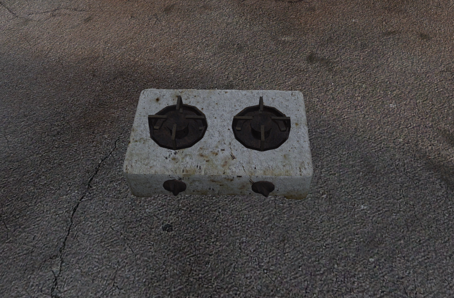
Distinguishing features:
- Has a bone collision
Static object
Any static object at the level
Example (in this case, part of the collision level):
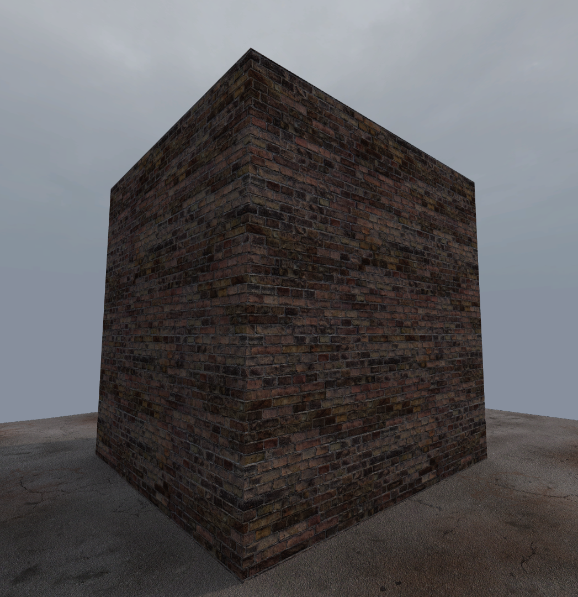
Distinguishing features:
- Does not have a bone collision
Progressive Meshes
One of the methods of dynamic level of detail
MU (Multiply Usage) Objects
Needed for automatic creation of LOD at compilation stage
HOM (Hierarchical Occlusion Mapping)
Sector
Sectors are a connected empty closed area bounded by static geometry and portals. In X-Ray 3D Engine, level geometry is not involved in sector creation, it uses HOM objects for this purpose.
Portal
Portals are "windows" through which (and only through which) an observer can see the insides of other sectors.
object_hud
HUD (Head-Up Display) - is a set of graphical interfaces and decorative elements located in the foreground and/or in the game world, which are designed to clearly and quickly convey to the player the necessary information from the game at a given point in time, without interfering with the gameplay experience.
In stalker modding, object_hud is a model in front of the player in the hands of the character. Usually it is a model of a weapon, grenades, etc.
Example:
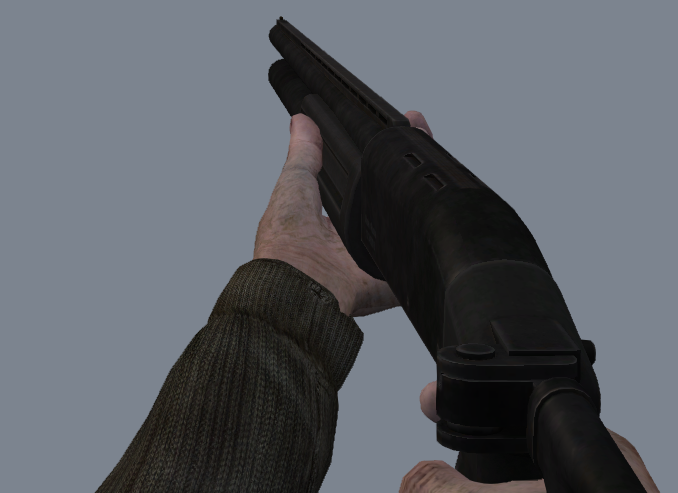
Distinguishing features:
- Does not have a bone collision
object_world
Model, in-game world (NPC weapons, 3rd-person view). The difference from the _hud model is that the _world must have a collision to calculate the interaction with the game.
Example:

Distinguishing features:
- Has a bone collision
- Dynamic object
Animations
object_hud animations
Animations for the _hud object
Material
Material
In the X-Ray engine, game material is a set of surface properties, namely:
- texture
- shader used in the game
- shader used by the level compiler
- set of sounds of interaction with objects
Main Folders And Files
Root folder
fsgame.ltx
Contains paths to folders with the necessary files
appdata
logs
This is where the game logs are created and stored (log of loading objects, textures, etc.)
savedgames
This is where game saves are created and stored. Inside are files with the extensions .scop and .scoc.
screenshoots
This is where game screenshots are created and stored
shaders_cache
This is where the game shader cache is created and stored
"username".ltx
This file describes the game settings.
bin
Contains the .exe files of the game renders, the configuration for OpenAL and .dll libraries
db
Contains packaged game files. This folder has a higher priority of files, which means that if there is no file in the gamedata folder, the game will look for it here
gamedata
Folder with game files
Folders
ai
Contains the .efd files needed for the AI
anims
Contains .anm, .anms files for camera animation and .ppe files for postprocessing
configs
levels
Contains the necessary files for the levels
meshes
Contains .ogf, .dm, .omf file needed for models and skeleton animation
scripts
Contains .script files for game scripts
shaders
Contains various files for shaders
sounds
Contains .ogg files for various music, sounds, ambient, etc.
spawns
Contains a file
all.spawn- it describes all spawn spots on locations
textures
Contains .dds textures
Files
gamemtl.xr
Contains game materials
lanims.xr
Contains animations of lights
particles.xr
Contains Particles
senvironment.xr
Contains settings for sound environment zones
shaders.xr
Database of the shaders used by the graphics engine
shaders_xrlc.xr
Database of shaders used by the level compiler
textures.ltx
Contains pathes to all textures
tools
Contains some resources for modding, like a version icon for addons, a resource converter and .bat files for unpacking .db files
File Formats
This section describes the extensions that are found in the game files and the SDK.
General
| Extension | Description |
|---|---|
| .log | Event log. It contains records of program start, operation and termination |
| .scop | Save file |
| .scoc | Save file |
| .xrdemo | Recording camera flyover (demo). Created in the game with a console command. |
| .ogm | The video format used by the game engine. |
| .ogg | The sound format used by the game engine. |
Configuration and script files
| Extension | Description |
|---|---|
| .ltx | Configuration file, custom ini-like format |
| .script | Game script |
| .xml | Carry in text format data related to in-game text, UI element placement, and characters and information within the game world |
| .seq | Text file containing a description of the frame sequence in the 2D animation |
| .efd | Table of AI heuristic parameters, contains constants for fine-tuning A-Life. They are used as input parameters in scripts. |
Textures
| Extension | Description |
|---|---|
| .bump | Normal map in A(BGR) format |
| .bump# | File that fixes DXT compression errors in .bump |
| .dds | Graphic file used by DirectX to store textures |
| detail_map.dds | Same as a regular .dds texture, needed as an extra map in a .thm |
| .tga | A bitmap graphics format with support for color depth of 1-32 bits per pixel, alpha channels, and RLE compression. Used as a source format. |
| .thm | They are used to set the parameters of textures - bump, detail, and more. |
Shaders
| Extension | Description |
|---|---|
| .cs | Compute shader |
| .gs | Geometry shader |
| .vs | Vertex shader |
| .ps | Pixel shader |
| .s | Script shader. LUA version of engine blenders |
| .ppe | Postprocess file format. Color-noise effects of the actor's screen |
Models
| Extension | Description |
|---|---|
| .dm | Effect of a dynamic weather environment (e.g., rain or lightning) |
| .object | These files are intended for the X-Ray SDK to store 3D content in its original, uncompressed, lossless form. They are source files that store information before compilation into other game compressed formats. |
| .ogf | Compiled objects |
| .bones | Skeleton bone data files |
| bone_parts.* | Bone part description file for an object/NPC |
Animations
| Extension | Description |
|---|---|
| .anm | A set of coordinates, which works as an animation of the actor's camera movement. It is also used for anomalies, which need to be given a path. |
| .skl | Skeletal animation |
| .skls | Skeletal animations(.skl) in a container |
| .omf | A specialized S.T.A.L.K.E.R. game format containing animations. This is a separate dedicated file used in conjunction with .ogf models. Was created in order to optimize process when some different models use the same list of animations. |
Archives and Resource Packages
| Extension | Description |
|---|---|
| .db | archive of game resources. Used in late builds and the final version of the game, has several options (db."number", db."letter"). |
| .xr | resource library. Contains resources such as particles, shaders, etc. in a packed format. |
Game level
| Extension | Description |
|---|---|
| .err | Contains information about geometry errors during level compilation |
| level | File with general information about the game location (light sources, object names, texture and shader names, sectors and portals). Created by xrLC during compilation. Opened only by the game. |
| .prj | Level precompilation file |
| .ai | AI location grid. Created by xrAI when compiling. Opened only by the game. |
| .cform | Geometry for calculating collisions. Calculated by the level compiler. Contains a solid map structure. All tangible objects with materials live here. Because of this, the game knows with what sound and property objects should react when they are hit by bullets or walked on |
| .details | Detailed objects (grass, cigarette butts, construction debris) on the level. Created through LevelEditor SDK at compile time. |
| .env_mod | local environment modifiers (environment), set areas on the location with lighting different from the main weather cycle. |
| .fog_vol | Volumetric fog |
| .game | Coordinates of the player's spawn in the multiplayer game. Outdated file. |
| .geom | Contains vertices (position, normals, texture coordinates, etc.), indices, and information for smooth geometry detail. |
| .geomx | It contains only geometry. In the renderer it is used in the shadow rendering passes, due to the fact that there is less information - loading data into the buffers - faster. |
| .gtc | Cross table of correspondence between the location graph and the AI grid. It is created when compiling the map in LE KFK (xrAI). |
| .hom | Mapping of hierarchical cutoffs |
| .level | List of SDK scene objects |
| .lights | Light sources for xrLC |
| .ps_static | Particle systems. Flies, steam from pipes, etc. |
| .graph | Global graph of AI navigation. Used, among other things, for moving AI objects outside the active level. |
| .spawn | A file storing spawn data. |
| .snd_env | Volumetric sound sources. |
| .snd_static | Static point sources of sound. Sound of flies, etc. |
| .som | Geometry for calculating sound propagation. |
| .wallmarks | Decals. Bloodstains, faction emblems on walls, etc. Used for the compiled level. |
Starting here, the details of the formats are written. You are encouraged to use links from the tables above to jump directly to the format you are interested in
Binary files
About
This article is an introduction to binary files.
Before reading the other articles in the "File Formats" category, you should read this one first.
Structure
In binary files, bytes are represented in reverse order.
For example, the number 0x12345678 in a file would look like this: 78 56 34 12.
Data types
Let's introduce the notation of data types.
These notations will be used in other articles.
| Designation | Type | Range | Size (bytes) |
|---|---|---|---|
| B | Integer | 0 ... 255 | 1 |
| H | Integer | 0 ... 65535 | 2 |
| I | Integer | 0 ... 4294967295 | 4 |
| i | Integer | -2147483648 ... 2147483647 | 4 |
| f | Fractional number | - | 4 |
| s | String | - | - |
In some files a value may not be stored in the whole byte, but only part of it (e.g. 4 bits).
As a result, one byte will store two values.
In articles about binary files, sizes will be specified either in bits or in bytes.
Strings necessarily have a null byte at the end, which indicates that the string has ended. For example: "test_string0x0".
As a result, the length of the string is equal to the number of characters in it + 1 (null byte).
Blocks
In X-Ray, some binary files are in RIFF format.
Such files have blocks (also called chunks or sections).
A block is binary data with a header.
Block structure
| Data | Type |
|---|---|
| Identifier | H |
| Compression | H |
| Content size (bytes) | I |
| Content | Binary data |
You can see from the identifier what is stored in a particular block.
If the compression is set to 0x0000, the block is uncompressed, and if it is set to 0x8000, the block is compressed by the Huffman method.
You can use a program from xray_re_tools (trunk\garbage\lzhuf\lzhuf.c) to decompress compressed blocks.
In the files of the final version of the game most blocks are uncompressed.
The size of the block content indicates only the number of bytes of data (not including identifier, compression and size bytes).
Binary block data can be represented by nested blocks.
Sources
.anm (Animated paths)
About
A set of coordinates, which works as an animation of the actor's camera movement. It is also used for anomalies, which need to be given a path.
Technical information
- Order of rotation: YXZ
Interpolation types
- TCB
- BEZIER_2D
- BEZIER_1D
- LINEAR
- HERMITE
Programs editing this file
bump#.dds
About
Corrects DXT compression errors in .bump
Technical information
Format
- RGB - Error correction for normal map (bump.dds) - Not necessary if you're using good quality normal map. It's generated with SDK
- A - height map; used for parallax, if the use of it was turned on when setting up the texture
The engine currently supports the following compressions
- DXT5
- BC7
Can be generated by
bump.dds
About
The bump map is a regular normal map in A(BGR) format (typical for DXT5_nm compression format). The developers used this order for a very simple reason - DXT compression "spoils" the texture much less, since the alpha channel is not subjected to compression and remains almost in its original form.
Technical information
Format
- R - Glossiness (Glossiness, aka inverted roughness. It works best in stalker, and allows for using better BRDF)
- G - Normal Z (Unused in Anomaly 1.6.0)
- B - Normal Y (DIRECTX format.)
- A - Normal X
The engine currently supports the following compressions
- DXT5
- BC7
Can be generated by
.cform (Collision Form)
About
Contains a solid map structure. All tangible objects with materials live here. Because of this, the game knows with what sound and property objects should react when they are hit by bullets or walked on
Technical information
- Format version: 4
The file consists of one block, which contains the following
| Value | Size | |
|---|---|---|
| Version | 4 for build 1537 and higher | DWord(4) |
| Number of vertices | - | DWord(4) |
| Number of triangles | - | DWord(4) |
| BBox diagonal | - | 24 bytes |
| vertices | - | - |
| triangles | - | - |
BBox
BBox describes the entire map, including absolutely all static objects. The BBox diagonal is represented by two vertices that have the same format as the others:
| Coordinates | Offset | Size |
|---|---|---|
| X coordinate | 0 | Single(4) |
| Z coordinate | 4 | Single(4) |
| Y coordinate | 8 | Single(4) |
Triangle
| Offset | Size | |
|---|---|---|
| First Index | 0 | DWord(4) |
| Second index | 4 | DWord(4) |
| Third index | 8 | DWord(4) |
| Material ID (14 bits) and flags in the two highest bits | 12 | Word(2) |
| Sector number | 14 | Word(2) |
Programs editing this file
Sources
.dds (DirectDraw Surface)
About
DDS is most often used to store textures and is used in many 3D applications, as well as in modern 3D games. It allows you to store textures both in compressed and uncompressed form.
Technical information
Format
- RGB - Diffuse colour
- A - Alpha (Used for translucent/transparent shaders like glass/grass)
The engine currently supports the following compressions
- DXT1
- DXT5
Programs editing this file
- Any program that works with .dds files (Example: Paint.net or GIMP)
detail_map_name_(with bump or bump#).dds
About
Same as a regular .dds texture, needed as an extra map in a .thm
Technical information
The same as the .dds. But overlaid on top of an existing texture, for more detail
Example:
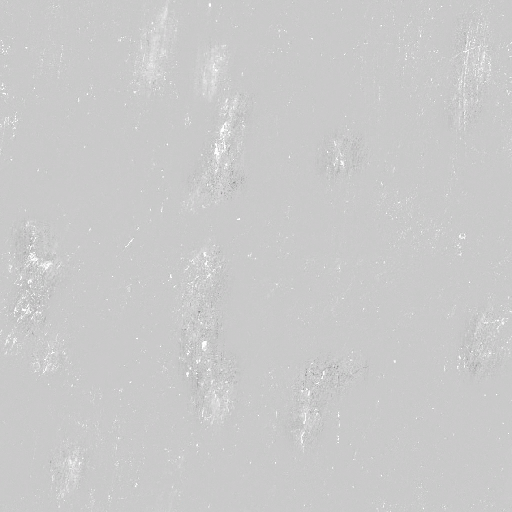
Programs editing this file
- Any program that works with .dds files (Example: Paint.net or GIMP)
.details
About
Detailed objects (grass, cigarette butts, construction debris) on the level
Technical information
- Format version: 3
General structure - file blocks
It consists of three RIFF sections (blocks):
| Block ID | Size (bytes) | Description |
|---|---|---|
| 0x0 | 24 | headline |
| 0x1 | - | object models (in .dm format) |
| 0x2 | - | table of 2x2 meter cells, setting the density and species diversity of objects on the map |
Block order in version 3: 0x1, 0x2, 0x0
One cell (slot) is a parallelepiped.
The dimensions of all cells along the X and Z axes are the same and equal to 2 meters.
The height of the slot (the dimensions of the parallelepiped along the Y axis) in all the slots is individual.

slot in the Level Editor
Blocks
Block 0x0 (header)
| Type | Description |
|---|---|
| I | format version |
| I | number of dm models in the file |
| i | offset of the table cells along the X axis |
| i | offset of the table cells along the Z axis |
| I | the number of table cells on the X axis |
| I | the number of table cells on the Z axis |
Block 0x1 (meshes)
A block consists of nested blocks.
The nested block identifier is the mesh index of the detailed object.
Nested block data is a mesh in .dm format
Block 0x2 (slots/cell table)
The block stores cells (slots).
The slots in this block are written alternately.
Up to four meshes of detailed objects can be attached to each slot.
The mesh index of a detailed object can be in the range [0 ... 62] (63 is no mesh).
One slot's data is stored in 16 bytes (128 bits), which store the following:
| Size (in bits) | Description |
|---|---|
| 12 | Coordinate of the bottom edge of the slot on the Y axis (this value should be multiplied by 0.2 meters) |
| 8 | Height of the slot (this value should be multiplied by 0.1 meter) |
| 6 | Identifier of the first mesh of vegetation |
| 6 | Identifier of the second mesh of vegetation |
| 6 | Identifier of the third mesh of vegetation |
| 6 | Identifier of the fourth mesh of vegetation |
| 4 | Shade from the sun |
| 4 | Hemi lighting |
| 4 | Red component of static light sources |
| 4 | Green component of static light sources |
| 4 | Blue component of static light sources |
| 4 | Density of the first mesh in the left front corner of the slot |
| 4 | Density of the first mesh in the right front corner of the slot |
| 4 | Density of the first mesh in the left rear corner of the slot |
| 4 | Density of the first mesh in the right rear corner of the slot |
| 4 | Density of the second mesh in the left front corner of the slot |
| 4 | Density of the second mesh in the right front corner of the slot |
| 4 | Density of the second mesh in the left rear corner of the slot |
| 4 | Density of the second mesh in the right rear corner of the slot |
| 4 | Density of the third mesh in the left front corner of the slot |
| 4 | Density of the third mesh in the right front corner of the slot |
| 4 | Density of the third mesh in the left rear corner of the slot |
| 4 | Density of the third mesh in the right rear corner of the slot |
| 4 | Density of the fourth mesh in the left front corner of the slot |
| 4 | Density of the fourth mesh in the right front corner of the slot |
| 4 | Density of the fourth mesh in the left rear corner of the slot |
| 4 | Density of the fourth mesh in the right rear corner of the slot |
As you can see from the table, each slot has 16 density values.
Each of the four meshes has four density values (for the four corners of the slot).
The density values within a slot are interpolated from the density values of the slot corners.
Let us denote the densities as follows:
-
a0 - density for the left front corner of the slot
-
a1 - density for the right front corner of the slot
-
a2 - density for the left rear corner of the slot
-
a3 - density for the right rear corner of the slot
If you look at the slot from above, the densities will look like this:
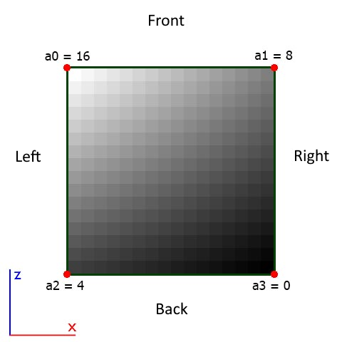
Mesh density, slot view from above
Restrictions are imposed on the position of slots along the Y axis.
The lower limit is -200 meters.
And the allowed range: from -200 meters to 619 meters (0.2 * 4095 - 200).
The maximum height of the slot (parallelepiped) is: 25.5 (0.1 * 255).
The upper boundary of the slot is equal to: the lower boundary + the height of the slot.
Programs editing this file
Sources
.dm (Detail Model)
About
Effect of a dynamic weather environment (e.g., rain or lightning)
Technical information
It works like this: UV descends down the Y coordinates to the texture

Format limitations
- Must have one material
- Does not support antialiasing
General structure
| Data |
|---|
| shader name |
| texture name |
| flags |
| minimum size |
| maximum size |
| number of vertices |
| number of indexes |
| vertices |
| indexes |
Structure description
Shader name
| Data | Type | Description | Example |
|---|---|---|---|
| shader name | s | The line that specifies the name of the shader from the shaders.xr file | effects\lightning0x00 |
Texture name
| Data | Type | Description | Example |
|---|---|---|---|
| texture name | s | A string that specifies the path and the name of the texture | fx\fx_rainsplash10x00 |
Flags
| Data | Type | Description | Example |
|---|---|---|---|
| flags | I | These are options. Used in the file level.details | If 0x0, the vegetation swings in the wind (bushes), and if 0x1, it is stationary (leaves) |
Minimum size
| Data | Type | Description | Example |
|---|---|---|---|
| minimum size | f | The minimum size of the model. These values are used in the level.details files | - |
Maximum size
| Data | Type | Description | Example |
|---|---|---|---|
| maximum size | f | Maximum model size. These values are used in the level.details files | - |
Number of vertices
| Data | Type | Description | Example |
|---|---|---|---|
| number of vertices | I | Number of vertices in a mesh | - |
Number of indexes
| Data | Type | Description | Example |
|---|---|---|---|
| number of indexes | I | Number of indexes by which triangles are built | - |
Vertices
The vertices are stored sequentially.
The structure of a single vertex:
| Data | Type |
|---|---|
| 3D coordinate x | f |
| 3D coordinate y | f |
| 3D coordinate z | f |
| texture coordinate u | f |
| texture coordinate v | f |
Restrictions are imposed on the vertices:
- one vertex may have only one texture coordinate. When saving the model in *.dm, a vertex that has two (or more) texture coordinates is converted into two (or more) vertices.
- Their number should not be more than 65536, because their triangle indices are stored in 2 bytes.
Indexes
The indices of the vertices by which triangles are formed.
The indexes are stored sequentially.
The index structure:
| Data | Type |
|---|---|
| vertex index | H |
Programs editing this file
Sources
.efd (Evaluation Function Data)
About
Table of AI heuristic parameters, contains constants for fine-tuning A-Life. They are used as input parameters in scripts.
Example
anomalydetectprobability.efd
[values]
offset_0: value_0 = 1
offset_4: value_1 = 1
offset_8: value_2 = 2
offset_12: value_3 = 8
offset_16: value_4 = 3
offset_20: value_5 = 49
offset_24: value_6 = 9
offset_28: value_7 = 79
offset_32: value_8 = 20
offset_36: value_9 = 100
offset_40: value_10 = 1
offset_44: value_11 = 2
offset_48: value_12 = 0
offset_52: value_13 = 1
offset_56: value_14 = 19.9940643310547
offset_60: value_15 = 59.9821968078613
offset_64: value_16 = 99.9703216552734
offset_68: value_17 = 19.9940643310547
offset_72: value_18 = 59.9821968078613
offset_76: value_19 = 99.9703216552734
offset_80: value_20 = 29.9910984039307
offset_84: value_21 = 59.9821968078613
offset_88: value_22 = 89.9732894897461
offset_92: value_23 = 69.9792251586914
offset_96: value_24 = 74.9777450561523
offset_100: value_25 = 84.9747772216797
offset_104: value_26 = 89.9732894897461
offset_108: value_27 = 89.9732894897461
offset_112: value_28 = 89.9732894897461
offset_116: value_29 = 79.9762573242188
offset_120: value_30 = 79.9762573242188
offset_124: value_31 = 79.9762573242188
offset_128: value_32 = 79.9762573242188
offset_132: value_33 = 79.9762573242188
offset_136: value_34 = 79.9762573242188
offset_140: value_35 = 39.9881286621094
offset_144: value_36 = 49.9851608276367
offset_148: value_37 = 79.9762573242188
Programs editing this file
- Evaluation Function Consctructor
Sources
.err
About
Contains information about geometry errors during level compilation with xrLC.exe
Technical information
It consists of three blocks:
| Block ID | Size (bytes) | Description |
|---|---|---|
| 0x0 | number of vertices * 12 + 4 | vertices |
| 0x1 | number of edges * 24 + 4 | edges |
| 0x2 | number of triangles * 36 + 4 | triangles |
Blocks
All vertices in the file are stored in the following structure:
| Type | Description |
|---|---|
| f | 3D coordinate X |
| f | 3D coordinate Y |
| f | 3D coordinate Z |
Block 0x0 (vertices)
Contains vertices that were glued during compilation.
Block structure:
| Type | Description |
|---|---|
| I | number of vertices |
| vertices |
Block 0x1 (edges)
Contains edges that were deleted during compilation.
Block structure:
| Type | Description |
|---|---|
| I | number of edges |
| edges |
Structure of a single edge
| Type | Description |
|---|---|
| first vertex | |
| second vertex |
Block 0x2 (triangles)
Contains broken triangles (the area of which is close to 0.0).
Block structure:
| Type | Description |
|---|---|
| I | number of triangles |
| triangles |
Structure of a single triangle
| Type | Description |
|---|---|
| first vertex | |
| second vertex | |
| third vertex |
Programs editing this file
Sources
.geom
The format was disassembled by Haper (not completely disassembled, adjustments are needed)
About
Contains all visible map geometry. It contains all vertices with normals and coordinates for textures and indexes for building geometry, as well as synchronization.
Technical information
The file consists of the following blocks
| Block code | |
|---|---|
| Map compiler version | 1 |
| Vertex description | 9 |
| Indexes description | 10 |
| Synchronization description | 11 |
Types of variables
| Type code | Value |
|---|---|
| 1 | DWord(4) + DWord(4) |
| 4 | Byte(1) + Byte(1) + Byte(1) + Byte(1) |
| 6 | Word(2)/32768 + Word(2)/32768 |
| 7 | (Byte(1)-128)/128 + (Byte(1)-128)/128 + (Byte(1)-128)/128 + (Byte(1)-128)/128 |
Map compiler version (the block is the same for all maps)
| Value | Size | |
|---|---|---|
| Block code | 1 | Word(2) |
| Data compression (0 - no, 32768 - yes) | 0 | Word(2) |
| Block size (bytes) | 4 | DWord(4) |
| Version number (same for all) | 13 | DWord(4) |
Vertex description
| Value | Size | |
|---|---|---|
| Block code | 9 | Word(2) |
| Data compression (0 - no, 32768 - yes) | 0 | Word(2) |
| Block size (bytes) | 4 | DWord(4) |
| Number of vertex description blocks | - | DWord(4) |
| Vertex description block | - | - |
Vertex description block
| Value | Size | |
|---|---|---|
| Beginning of a new block | 0 | DWord(4) |
| Beginning of the vertex format description | 2 | DWord(4) |
| Vertex format | - | - |
| End of vertex format description | 255 | DWord(4) |
| Beginning of the vertex description | 17 | DWord(4) |
| Number of vertices | - | DWord(4) |
| Vertexes | - | - |
A few words about the vertex format. As you already know, there are several vertex description blocks in the file. Not all objects in the game are the same: you have to specify coordinates of lightmaps for brushes, and coordinates of textures for trees can be simplified. Therefore, vertices specified in different blocks may be different. The vertex format is specified using several structures - this is the standard D3D vertex buffer format. That is, the file contains ready assembled vertex buffers for D3D:
| Value | Size | |
|---|---|---|
| ???(always zero) | 0 | Word(2) |
| Offset | - | Word(2) |
| Type of variables | - | Word(2) |
| What the variables describe | - | Word(2) |
At the very beginning of any vertex are the coordinates of its placement, so the vertex format does not include a description of the coordinates. There are only three vertex formats in the 2215 maps:
Vegetation
| Value | Size | |
|---|---|---|
| zero | 0 | Word(2) |
| Offset | 12 | Word(2) |
| Type of variables | 4 | Word(2) |
| Normals | 3 | Word(2) |
| Light factor(?) | ? | Word(2) |
| Offset | 16 | Word(2) |
| Type of variables | 4 | Word(2) |
| Tangents | 6 | Word(2) |
| Texture corrector X coordinate | 0/1 | Word(2) |
| Offset | 20 | Word(2) |
| Type of variables | 4 | Word(2) |
| Bi-Tangents | 7 | Word(2) |
| Texture corrector Y coordinate | 0/1 | Word(2) |
| Offset | 24 | Word(2) |
| Type of variables | 7 | Word(2) |
| Texture coordinates | 5 | Word(2) |
Thus, the total length of one vegetation vertex equals 32 bytes.
Brush
| Value | Size | |
|---|---|---|
| zero | 0 | Word(2) |
| Offset | 12 | Word(2) |
| Type of variables | 4 | Word(2) |
| Normals | 3 | Word(2) |
| Light factor(?) | ? | Word(2) |
| Offset | 16 | Word(2) |
| Type of variables | 4 | Word(2) |
| Tangents | 6 | Word(2) |
| Texture corrector X coordinate | 0/1 | Word(2) |
| Offset | 20 | Word(2) |
| Type of variables | 4 | Word(2) |
| Bi-Tangents | 7 | Word(2) |
| Texture corrector Y coordinate | 0/1 | Word(2) |
| Offset | 24 | Word(2) |
| Type of variables | 1 | Word(2) |
| Texture coordinates | 5 | Word(2) |
| zero | 0 | Word(2) |
| Offset | 32 | Word(2) |
| Type of variables | 6 | Word(2) |
| Lightmap coordinates | 261 | Word(2) |
The total length of one brash vertex is 36 bytes.
Entity
| Value | Size | |
|---|---|---|
| zero | 0 | Word(2) |
| Offset | 12 | Word(2) |
| Type of variables | 4 | Word(2) |
| Normals | 3 | Word(2) |
| Light factor(?) | ? | Word(2) |
| Offset | 16 | Word(2) |
| Type of variables | 4 | Word(2) |
| Tangents | 6 | Word(2) |
| Texture corrector X coordinate | 0/1 | Word(2) |
| Offset | 20 | Word(2) |
| Type of variables | 4 | Word(2) |
| Bi-Tangents | 7 | Word(2) |
| Texture corrector Y coordinate | 0/1 | Word(2) |
| Offset | 24 | Word(2) |
| Type of variables | 4 | Word(2) |
| ??? | 10 | Word(2) |
| zero | 0 | Word(2) |
| Offset | 28 | Word(2) |
| Type of variables | 1 | Word(2) |
| Texture coordinates | 5 | Word(2) |
The total length of one vertex of an entity is 36 bytes. Based on this, we get, for example, this view of the vertex:
Brush
| Value | Offset | Size | |
|---|---|---|---|
| Coordinate X | 30.76 | 0 | DWord(4) |
| Coordinate Z | 0.2 | 4 | DWord(4) |
| Coordinate Y | 51.4 | 8 | DWord(4) |
| Normal at X | 127 | 12 | Byte(1) |
| Normal at Z | 255 | 13 | Byte(1) |
| Normal at Y | 127 | 14 | Byte(1) |
| Light factor(?) | 1 | 15 | Byte(1) |
| Tangent at X | 127 | 16 | Byte(1) |
| Tangent at Z | 255 | 17 | Byte(1) |
| Tangent at Y | 255 | 18 | Byte(1) |
| Texture corrector X coordinate | 0 | 19 | Byte(1) |
| Bi-Tangent at X | 0 | 20 | Byte(1) |
| Bi-Tangent at Z | 127 | 21 | Byte(1) |
| Bi-Tangent at Y | 127 | 22 | Byte(1) |
| Texture corrector Y coordinate | 0 | 23 | Byte(1) |
| Texture coordinate X | 3.1802 | 24 | Single(4) |
| Texture coordinate Y | 2.2143 | 28 | Single(4) |
| Lightmap coordinate X | 0.4023 | 32 | ShortSingle(2) |
| Lightmap coordinate Y | 0.000097 | 34 | ShortSingle(2) |
Indexes description
| Value | Size | |
|---|---|---|
| Block code | 10 | Word(2) |
| Data compression (0 - no, 32768 - yes) | Word(2) | |
| Block size (bytes) | - | DWord(4) |
| Number of index description blocks | - | DWord(4) |
| Index description block | - | - |
Index description block
| Value | Size | |
|---|---|---|
| Number of indexes in a block | - | DWord(4) |
| Indexes | - | DWord(4) |
Index: Word(2) . The number of indexes must always be a multiple of three, because triangles are constructed using indexes.
Synchronization description
(what they synchronize is still a mystery to scientists)
| Value | Size | |
|---|---|---|
| Block code | 11 | Word(2) |
| Data compression (0 - no, 32768 - yes) | 0 | Word(2) |
| Block size (bytes) | - | DWord(4) |
| Number of synchronization units | - | DWord(4) |
| Synchronization units | - | - |
Synchronization block
| Value | Size | |
|---|---|---|
| ??? | 0 | DWord(4) |
| ??? | 0 | DWord(4) |
| ??? | 0 | DWord(4) |
| ??? | 0 | DWord(4) |
| Number of synchronization units | - | DWord(4) |
| Synchronization units | - | - |
Synchronization unit
| Value | Size | |
|---|---|---|
| ??? | DWord(4) | |
| ??? | Word(2) | |
| ??? | Word(2) |
Sources
.hom (Hierarchical Occlusion Mapping)
About
HOM is a geometry cutter, which is a mesh and is needed to increase performance. This file is created during level compilation.
Technical information
Blocks
Consists of two blocks:
| Block ID | Size (bytes) | Description |
|---|---|---|
| 0x0 | 4 | header (contains information about the format version) |
| 0x1 | number of polygons * 40 | vertex coordinates and polygon properties |
Block description
Block 0x0 (header)
| Type | Description |
|---|---|
| I | format version |
Block 0x1 (mesh data)
Contains the data of the triangles, which are written one by one.
The data is for one triangle:
| Type | Description |
|---|---|
| fff | 3D coordinates of the first vertex of the triangle |
| fff | 3D coordinates of the second vertex of the triangle |
| fff | 3D coordinates of the third vertex of the triangle |
| I | two sided option |
Possible values of the "two sided" option: 0x0, 0x1
The polygon indices are not saved, but they can easily be generated, since all vertices are saved so that the polygon indices are in ascending order.
The first triangle will be: 0, 1, 2, second: 3, 4, 5, third: 6, 7, 8, etc.
Programs editing this file
Sources
level
About
Contains all the essentials. This contains light sources, object descriptions, names of their corresponding textures and shaders, portals, and sectors.
Technical information
- Format version: 14
General structure - file blocks
| Block code | |
|---|---|
| Map compiler version | 1 |
| Description of portals | 4 |
| Light sources | 6 |
| Coronas of light sources | 7 |
| Objects | 3 |
| Textures | 2 |
| Sectors | 8 |
Map compiler version (the block is the same for all maps)
| Value | Size | |
|---|---|---|
| Block code | 1 | Word(2) |
| Data compression (0 - no, 32768 - yes) | 0 | Word(2) |
| Block size (bytes) | 4 | DWord(4) |
| Version number (the same for all) | 13 | DWord(4) |
Description of portals (the block for all maps is the same and contains no data)
| Value | Size | |
|---|---|---|
| Block code | 4 | Word(2) |
| Data compression (0 - no, 32768 - yes) | 0 | Word(2) |
| Block size (bytes) | 0 | DWord(4) |
Light sources
| Value | Size | |
|---|---|---|
| Block code | 6 | Word(2) |
| Data compression (0 - no, 32768 - yes) | 0 | Word(2) |
| Block size (bytes) | - | DWord(4) |
| Light Source | - | (108*х) |
Light Source
| Offset | Size | |
|---|---|---|
| Type of light source (only 1 or 2 were encountered) | 0 | DWord(4) |
| (only 1 or 3 were encountered) | 4 | DWord(4) |
| Color Red | 8 | Single(4) |
| Color Green | 12 | Single(4) |
| Color Blue | 16 | Single(4) |
| 20 | DWord(4) | |
| 24 | DWord(4) | |
| 28 | DWord(4) | |
| 32 | DWord(4) | |
| 36 | DWord(4) | |
| 40 | DWord(4) | |
| 44 | DWord(4) | |
| 48 | DWord(4) | |
| 52 | DWord(4) | |
| Coordinate X | 56 | Single(4) |
| Coordinate Z | 60 | Single(4) |
| Coordinate Y | 64 | Single(4) |
| Angle of rotation by X | 68 | Single(4) |
| Angle of rotation by Z | 72 | Single(4) |
| Angle of rotation by Y | 76 | Single(4) |
| 80 | DWord(4) | |
| 84 | DWord(4) | |
| 88 | Single(4) | |
| 92 | Single(4) | |
| 96 | Single(4) | |
| 100 | DWord(4) | |
| 104 | Single(4) |
Coronas of light sources
| Value | Size | |
|---|---|---|
| Block code | 7 | Word(2) |
| Data compression (0 - no, 32768 - yes) | 0 | Word(2) |
| Block size (bytes) | - | DWord(4) |
| Corona of the light source | - | (18*х) |
Corona of the light source
| Value | Size | |
|---|---|---|
| Coordinate X | 0 | Single(4) |
| Coordinate Z | 4 | Single(4) |
| Coordinate Y | 8 | Single(4) |
| ??? | 12 | Single(4) |
| ??? | 16 | Word(2) |
Textures
| Value | Size | |
|---|---|---|
| Block code | 2 | Word(2) |
| Data compression (0 - no, 32768 - yes) | 0 | Word(2) |
| Block size (bytes) | - | DWord(4) |
| Number of textures | - | DWord(4) |
| Textures | - | - |
Texture
| Value | Size | |
| Shader (with path) | - | String |
| Separator | "/" | Byte(1) |
| Texture (with path) | - | String |
| Beginning of the optional part | ||
| Separator | "," | Byte(1) |
| Lightmap 1 | - | String |
| Separator | "," | Byte(1) |
| Lightmap 2 | - | String |
| End of the optional part | ||
| The zero symbol is the end of the texture name | #0 | Byte(1) |
Note: the zero texture is specified without the file name and consists only of the symbol #0. So, after the field "number of textures" right after the symbol #0, do not be alarmed :)
Sectors
| Value | Size | |
|---|---|---|
| Block code | 8 | Word(2) |
| Data compression (0 - no, 32768 - yes) | 32768 | Word(2) |
| Block size (bytes) | - | DWord(4) |
| Uncompressed block size (in bytes) | - | DWord(4) |
| Description of Sectors | - | ???? |
Programs editing this file
Sources
LTX files
About
LTX files are basically ini files with some custom additions. They are located all over the gamedata/configs and are used for, well, configs.
Here's how ltx config might look like:
#include "tables/gun_*.ltx"
[some_nice_gun]
recoil = 0.8
boosts = a, b, c, d ; list
fancy_feature = {=is_night()} true, false
[some_other_gun]
...
From this example we can see some fancy ltx features:
#includepreprocessor command. This command basically merges the file into this config. Many of the configs are included intosystem.ltxthis way, so you can access almost all sections throughini_syshandler.- Wildcard imports -
*in include statement corresponds to any text, so the given include will include bothgun_ak.ltxandgun_m4.ltx. This feature was developed for Anomaly, so you may not find it in other mods. - Name of the section in square brackets - this is referred in scripts as
section_nameor justsection. - Key-value pairs. Values may include comma-separated lists.
- Comments start with
;. fancy_featureuses something called "condlist". Refer to condlists manual to understand this bs.
Programs editing this file
- Any text editor
- There are also extensions for VSCode for .ltx (LTX Support Extension by AziatkaVictor)
.object
About
These files are intended for the X-Ray SDK to store 3D content in its original, uncompressed, lossless form. They are source files that store information before compilation into other game compressed formats.
Technical information
The format can store the following basic data (the list is not complete)
- meshes
- materials
- bones
- skeleton animations
Possibilities and limitations of the .object format
One *.object file can store:
- one or more meshes if it has no skeleton and only one meshes if it has a skeleton
- one or more materials
- a skeleton can be absent, or it can hold at least one
- a skeleton can store a minimum of 1, a maximum of 64 bones (for X-Ray SDK 0.4)
- skeleton animations may not be present, or one or more animations may be stored
- skeleton animations do not support Scale keys
- each mesh can have one or more materials
- each mesh must have one UV scan
- each material can store only one texture
Programs editing this file
- Blender (X-Ray Addon)
- X-Ray Export Tool (Object Tool)
- Ogf Editor by ValeroK - (Only as a converter!)
- SDK 0.7
Sources
.ogg
About
The sound format used by the game engine
Technical information
- Supports up to 44.100 Hz
- Audio format:
- Mono audio format (For the game world)
- Stereo audio format (To play in the player's head)
- Audiocodek: Vorbis
Programs editing this file
- Any sound editor that supports .ogg (But it won't write comments into the chunks!)
- Sound Attribute Viewer And Tweaker or OGG Editor
- SDK Sound Editor - Only source .wav file
.omf (Open Motions Format)
About
A specialized S.T.A.L.K.E.R. game format containing animations. This is a separate dedicated file used in conjunction with .ogf models. Was created in order to optimize process when some different models use the same list of animations.
Technical information
They are in RIFF format. That is, the file is divided into chunks. The omf file consists of two chunks:
-
0xE - stores animations (rotation, movement of bones)
-
0xF - stores the Bone Parts and animation parameters.
These chunks can be found inside the ogf files. In other words, an omf file is a slice of an ogf file that is moved to an external file. The structure of the 0xE and 0xF chunks in ogf is identical to those in omf.
The structure of the 0xE chunk
This chunk consists of nested chunks. The first nested chunk is the one with the identifier 0x0. The zero chunk stores an unsigned 32-bit integer number. This number indicates the number of animations in the omf file. The identifier of each subsequent chunk is one more than the previous one. That is, 0x0 is followed by 0x1, then 0x2, 0x3, etc. All the chunks following 0x0 contain animations. Description of the nested chunk that stores the animations The animation name comes first, which is a string ending with a null byte. Next is an unsigned 32-bit integer, which specifies the number of animation frames. The following data is the dice transforms. For each bone, rotation, movement, and flags are stored. Flags come first. Flags is an unsigned 8 bit integer. The first bit of this byte indicates if the movement is modifiable. If the bit is 1, then the movement has values throughout all frames. If the bit is 0, then the movement has only one value for the entire animation interval. This is done to optimize it so that it doesn't store a bunch of identical keys, but instead has a single value. The second bit of this byte indicates whether the rotation is static (not changing throughout the animation). The third bit is the High Quality flag. If it is 0, then the position has an 8-bit representation, otherwise it is 16-bit. Next comes the information about the rotation. What will be written to the file next depends on the flags. If the second bit of the flag is 0, the file will contain the following: One rotation value as a quaternion with two-byte signed components. That is, QXYZ, each 2 bytes, for a total of 8 bytes. And if the second bit of the flag is 1, then the following follows: crc32 sum as a 4 byte unsigned integer. And after that come the rotation quaternion values for each frame. The format of rotation is the same as described above (the same 8 bytes). Now comes the movement information. If the first bit of the flag is 1, then follows a 32-bit unsigned integer, which is the crc32 sum. This is followed by three eight-bit numbers, which indicate the position of the bone on the x, y, z axes. These positions are written for each frame. That is, the positions should be read in a loop, which is repeated as many times as the number of frames contains the animation. After all these positions are data about the initial conditions of movement: Amplitude or size of movement. These are three float numbers (4 bytes each). And then there is the initial value of movement. These are also 3 float numbers. These initial conditions are stored in a single instance for each bone in this animation. That is, these values do not change throughout the animation. If the first bit of the flag is 0, there is one move value for all frames. This movement is stored in 3 float numbers (4 bytes each).
Below is a pseudocode that describes one animation:
name = string
length = uint32
for bone in bones {
flags = uint8
translate_present = flags(0) // get bit 0
rotate_absent = flags(1) // get bit 1
high_quality = flags(2) // get bit 2
if rotate_absent {
quaternion = int16, int16, int16, int16 // Q, X, Y, Z
} else {
motion_crc32 = int32
for (i=0, i<length, i++) {
quaternion = int16, int16, int16, int16 // Q, X, Y, Z
}
}
if translate_present {
motion_crc32 = int32
if high_quality {
for (i=0, i<length, i++) {
translation = int16, int16, int16 // X, Y, Z
}
} else {
for (i=0, i<length, i++) {
translation = int8, int8, int8 // X, Y, Z
}
}
translate_size = float, float, float // X, Y, Z
translate_init = float, float, float // X, Y, Z
} else {
translate = float, float, float // X, Y, Z
}
Chunk structure 0xF
Stores bone parts and animation parameters. The code that describes this chunk is shown below:
params_version = uint16 // parameter format version
partition_count = uint16 // number of bone parts
for (i=0, i<partition_count, i++) {
partition_name = string // name of the bone part
bone_count = uint16 // number of bones in this bone part
for (j=0, j<bone_count, j++) {
if params_version == 3 {
bone_name = string // bone name
bone_id = uint32 // bone ID
}
}
motion_count = uint16 // number of animations
for (j=0, i<motion_count, j++) {
// animation parameters
motion_name = string
motion_flags = uint32
bone_or_part = uint16
motion = uint16 // animation identifier from the 0xE chunk
speed = float32
power = float32
accrue = float32
falloff = float32
}
}
Programs editing this file
Sources
.seq (Sequence)
About
Text file that is used to create a simple animation texture, by recording a sequence of "frames" and a playback speed.
Example
15
ui\ui_ani_cursor_01
ui\ui_ani_cursor_02
ui\ui_ani_cursor_03
ui\ui_ani_cursor_04
ui\ui_ani_cursor_05
Order in which the textures are played will be 1234512312312345
cycled
15
ui\ui_ani_cursor_01
ui\ui_ani_cursor_02
ui\ui_ani_cursor_03
ui\ui_ani_cursor_04
ui\ui_ani_cursor_05
In this case, because of "cycled" the playback order will be 1234543212345432123454321 Speed of texture change is set in numerical format before the enumeration
The number of textures in the list is arbitrary, but the more frames, the greater the load on the engine, respectively. The name of the file is set by the name of the assigned texture (without taking the extension into account). If there is a *.dds file in the folder with the same name as the *.seq file, the engine ignores the original texture, giving priority to the *.seq file. The priority of file search by extension is as follows:
- .ogm
- .avi
- .seq
- .dds
Parameters
- The "cycled" parameter is optional if you want to loop from the first texture to the last texture and from the last texture to the first texture. If you don't write it, it will play in a normal circular loop.
- Playback speed (frames per second) (written before the list of textures)
Programs editing this file
- Any text editor
Sources
.som (Sound Occluder Mesh)
About
Geometry for calculating sound propagation. Used to allow sound to pass through walls, ceilings, floors, etc. with varying strength.
Technical information
- Format version: 0
Blocks
It consists of two blocks:
| Block ID | Size (bytes) | Description |
|---|---|---|
| 0x0 | 4 | header (contains information about the format version) |
| 0x1 | polygon count * 44 | vertex coordinates and polygon properties |
The structure of the file is similar to .hom
Block 0x0 (header)
| Type | Description |
|---|---|
| I | format version |
Block 0x1 (mesh data)
| Тип | Description | Note | Note 2 |
|---|---|---|---|
| fff | 3D coordinates of the first vertex of the triangle | - | - |
| fff | 3D coordinates of the second vertex of the triangle | - | - |
| fff | 3D coordinates of the third vertex of the triangle | - | - |
| I | "two sided" option | Possible values of the "two sided" option: 0x0, 0x1 | If 0x1, the polygon will cut off sound from both sides, and if 0x0, it will only cut off sound from the front side |
| f | "Sound Occlusion" parameter | The "Sound Occlusion" parameter specifies how much of the sound volume will be heard. The value depends on the material of the SOM object before compilation. | The value of this parameter is prescribed in the materials and can be found in Shader Editor>Material>Item Properties>Factors>Sound Occlusion (Possible values are 0.0 - 1.0) |
Polygon indices are not saved, but they can be easily generated, because all vertices are saved so that polygon indices are in ascending order.
The first triangle will be: 0, 1, 2, second: 3, 4, 5, third: 6, 7, 8, etc.
Programs editing this file
Sources
.thm
About
They are used to set the parameters of .dds textures - bump, detail, and more. Without them the game does not give textures the necessary parameters, and therefore they are obtained "flat", worse than the static lighting.
Programs editing this file
XML files
About
XML files are used to save text strings used for translation. All XML files are located in gamedata/configs/text/*lang*. XML files have these properties:
- They are saved in encoding Windows-1251. English translation won't break if you're using UTF, but russian will.
- Every string must have an unique id assigned to it.
- There is a single namespace for all xml files of one language. That means, no matter in which file you are saving your strings, they will be available in one place, namely
game.translate_string(*id*).
XML file will look something like this:
<?xml version="1.0" encoding="windows-1251"?>
<string_table>
<string id="nice_text_id">
<text>Cool text inside text tags</text>
</string>
<string id="another_text_id">
<text>...</text>
</string>
...
</string_table>
Programs editing this file
- Any text editor
Crashes List
Error description
- Expression - Expression in the engine code, which gives an error
- Function - Name of the function where the error occurred
- File - File where the error occurred
- Line - Line in File where the error occurred
- Description - Possible problem description
- Arguments - Argument causing the error
Warning! This list is only for the vanilla version of the game! If you use engine edits, the logs of crashes may be different!
Models
Line 120
[error]Expression : \<no expression>
[error]Function : CModelPool::Instance_Load
[error]File : ..\xrRender\ModelPool.cpp
[error]Line : 120
[error]Description : fatal error
[error]Arguments : Can't find model file "path and file name".
-
Clarification: No 3D .ogf model was found
-
Error fixing:
- Check that the model exists
- Check that the paths to it are correct
Animations
Line 784
[error]Expression : \<no expression>
[error]Function : CKinematicsAnimated::Load::<lambda_1d323dfa2c5eacee46e042904e528af6>::operator ()
[error]File : ..\xrRender\SkeletonAnimated.cpp
[error]Line : 784
[error]Description : fatal error
[error]Arguments : Can't find motion file "path and file name".
-
Clarification: No .omf animation was found
-
Error fixing:
- Check that the animation exists
- Check the correct paths to it in the Motions Reference of the model
Line 857
[error]Expression : m_Motions.size()
[error]Function : CKinematicsAnimated::Load
[error]File : ..\xrRender\SkeletonAnimated.cpp
[error]Line : 857
section '(null)'
model 'path to model'
-
Clarification:
-
Error fixing:
Animated Paths
Line 47
[error]Expression : \<no expression>
[error]Function : CObjectAnimator::LoadMotions
[error]File : ObjectAnimator.cpp
[error]Line : 47
[error]Description : fatal error
[error]Arguments : Can't find motion file "path and file name".
-
Clarification: No .anm file was found
-
Error fixing:
- Check that the .anm file exists
- Check that the paths to it are correct
A-Life
Line 49
[error]Expression : false
[error]Function : CPatternFunction::vfLoadEF
[error]File : ef_pattern.cpp
[error]Line : 49
[error]Description : assertion failed
-
Clarification: No .efd file was found
-
Error fixing:
- Check that the .efd file exists
Line 60 This is a theoretical crash (needs checking!)
[error]Expression : false
[error]Function : CPatternFunction::vfLoadEF
[error]File : ef_pattern.cpp
[error]Line : 60
[error]Description : assertion failed
-
Clarification: Not supported version of the Evaluation Function Contructor
-
Error fixing:
- The .efd file must be generated with a supported version of the Evaluation Function Contructor (?)
Line 27
[error]Expression : !NET.empty()
[error]Function : CBaseMonster::net_Export
[error]File : ai\Monsters\BaseMonster\base_monster_net.cpp
[error]Line : 27
[error]Description : assertion failed
-
Clarification: Probably the wrong type of AI in the mutant configuration file
-
Error fixing: ?
Spawn
Line 86
[error]Expression : FS.exist(file_name, "$game_spawn$", *m_spawn_name, ".spawn")
[error]Function : CALifeSpawnRegistry::load
[error]File : alife_spawn_registry.cpp
[error]Line : 86
[error]Description : Can't find spawn file:
[error]Arguments : "file name"
-
Clarification: No .spawn file was found
-
Error fixing:
- Check that the .spawn file exists
Line 60 This is a theoretical crash (needs checking!)
[error]Expression : R_ASSERT2(file_stream.find_chunk(SPAWN_CHUNK_DATA)
[error]Function : CALifeSpawnRegistry::load
[error]File : alife_spawn_registry.cpp
[error]Line : 60
[error]Description : Cannot find chunk SPAWN_CHUNK_DATA!
-
Clarification: No chunk
SPAWN_CHUNK_DATAwas found in .spawn file -
Error fixing:
Line 111 This is a theoretical crash (needs checking!)
[error]Expression : R_ASSERT2(!save_guid || (*save_guid == header().guid()) || ignore_save_incompatibility()
[error]Function : CALifeSpawnRegistry::load
[error]File : alife_spawn_registry.cpp
[error]Line : 111
[error]Description : Saved game doesn't correspond to the spawn : DELETE SAVED GAME!
-
Clarification:
-
Error fixing:
Line 141 or 147 This is a theoretical crash (needs checking!)
[error]Expression : R_ASSERT2(chunk, "Spawn version mismatch - REBUILD SPAWN!"); or R_ASSERT2(m_chunk, "Spawn version mismatch - REBUILD SPAWN!");
[error]Function : CALifeSpawnRegistry::load
[error]File : alife_spawn_registry.cpp
[error]Line : 141 or 147
[error]Description : Spawn version mismatch - REBUILD SPAWN!
-
Clarification:
-
Error fixing:
LTX
Line 96
[error]Expression : FS.exist(fn, "$game_textures$", buf, ".ini")
[error]Function : CGameFont::Initialize
[error]File : GameFont.cpp
[error]Line : 96
[error]Description : "path and ui_font_hud_01.ini"
-
Clarification: No ui_font_hud_01.ini file was found
-
Error fixing:
LUA
Line 204
[error]Expression : \<no expression>
[error]Function : CScriptEngine::lua_pcall_failed
[error]File : ..\xrServerEntities\script_engine.cpp
[error]Line : 204
[error]Description : fatal error
[error]Arguments : LUA error: ...e.r anomaly/bin/..\gamedata\scripts\"script_name".script:62: bad argument #1 to 'pairs' (table expected, got nil)
-
Clarification:
-
Error fixing:
Reference
Reference chapters are lists of things. Have fun.
w_Weapon.ltx Config File
About
Configuration parameters for weapons
Parameters of the weapon are set for each sample in a separate *.ltx file, and consist of two sections (Each contains its own set of parameters):
-
[wpn_name] - Main, it sets most of the parameters (for NPC and 3rd-person view).
-
[wpn_name_hud] - Secondary, where you set first-person view parameters only.
Parameters of the world model
[wpn_name]: Here you can set additional characteristics of weapon from sections for example:
- identity_immunities - a section that contains damage parameters for different game difficulty levels
- weapon_probability
- default_weapon_params
General parameters
General parameters
| Parameter Name | Parameter Description | Example value | Parameter Possible Values and their descriptions |
|---|---|---|---|
| GroupControlSection | spawn_group | ||
| $npc | use NPC of this weapon | on | on (Yes) - off (No) |
| $prefetch | preload queue | 8 | |
| $spawn | the Weapon Directory in the Level Editor | "weapons\ak-74" | "weapons\ wpn_name" |
| scheduled | online/offline switch; Works only for "live" objects with AI | off | on (Yes) - off (No) |
| cform | parameter for dynamic objects; necessary for correct creation of the skeleton model | skeleton | |
| parent_section | wpn_akm | ||
| class | engine weapon class | WP_AK74 | WP_BINOC WP_KNIFE WP_BM16 WP_GROZA WP_SVD WP_AK74 WP_LR300 WP_HPSA WP_PM WP_RG6 WP_RPG7 WP_SHOTG WP_ASHTG WP_MAGAZ WP_SVU WP_USP45 WP_VAL WP_VINT WP_WALTH W_STMGUN |
| animation_slot | animation slot number | 2 | 1 - pistol 2 - automatic rifle 3 - rifle, shotgun 4 - RPG 5 - knife 7 - bolt, grenade 8 - submachine gun with integrated underbarrel grenade launcher 9 - Shotgun 10 - Drum Gun 13 - binoculars |
| hand_dependence | determines whether the weapon will be taken with one or two hands | 1 | 0 - no hands 1 - one hand 2 - two hands |
| single_handed | held with one hand | 0 | 0 - no 1 - yes |
| default_to_ruck | whether the weapon will be moved to the backpack instead of the slot when picked up | false | true (yes) false (no) |
| sprint_allowed | this line means that you can run with the weapon | true | true (Yes) false (No) |
| kind | The type of item to group into the appropriate section in the Item Spawner | w_rifle | w_rifle w_misc w_explosive w_melee w_pistol w_smg w_shotgun w_sniper |
| cost | base price | 28780 | Specified in numbers |
| hud | section with parameters for the hud model of the weapon | wpn_akm_hud | Specifies the name of the section |
| visual | reference to the world model | dynamics\weapons\wpn_akm\wpn_akm.ogf | Specifies the path to the file |
Position and Orientation of Weapons
Position and Orientation of Weapons
| Parameter Name | Parameter Description | Example value | Parameter Possible Values and their descriptions |
|---|---|---|---|
| position | position of the weapon in the hands of the NPC and the headspace when viewed from the 3rd person | -0.026, -0.175, 0.0 | X - (-) left / (+) rightY - ( +) up / (-) downZ - ( -) forward / (+) backward |
| orientation | how the weapon is rotated in the hands of the NPC and headgear, in the 3rd person view | 0, 0, 0 | X - (+) left / (-) rightY - ( +) up / (-) downZ - ( -) roll to the right / (+) roll to the left |
| fire_point | coordinates of the fire particle from the shot, in the 3rd person view | 0, 0.218, 0.656 | X - (-) left / (+) rightY - ( +) up / (-) downZ - ( -) forward / (+) backward |
| fire_point2 | Coordinates of the fire particle from the shot, when viewed from the 3rd person from the holster | 0, 0.161, 0.583 | X - (-) left / (+) rightY - ( +) up / (-) downZ - ( -) forward / (+) backward |
| strap_bone0 | the name of the first NPC model bone where the weapon is located when hidden | bip01_spine2 | Bone Name |
| strap_bone1 | The name of the second NPC model bone that holds the weapon when hidden | bip01_spine1 | Bone Name |
| strap_position | the position of the weapon on the NPC's back, when viewed from the third person | -0.26, -0.11, 0.25 | X - (-) left / (+) rightY - ( +) up / (-) downZ - ( -) forward / (+) backward |
| strap_orientation | how the weapon is rotated on the NPC's back in 3rd person view | -15, -9, 110 | X - (+) left / (-) rightY - ( +) up / (-) downZ - ( -) roll to the right / (+) roll to the left |
Weapon parameters in inventory
Weapon parameters in inventory
| Parameter name | Parameter description | Example value | Possible parameter values and their descriptions |
|---|---|---|---|
| icons_texture | texture where the weapon icon will be taken from | ui\ui_icon_spas | |
| inv_grid_height | icon height | 2 | number of 50x50 pixels cells |
| inv_grid_width | icon width | 5 | number of 50x50 pixels cells |
| inv_grid_x | the coordinate of the upper left corner of the icon on a 50x50 pixel grid on the X axis | 35 | number of cells indented to the right |
| inv_grid_y | The coordinate of the upper left corner of the icon on a 50x50 pixel grid on the Y axis | 0 | number of cells indenting downward |
| inv_name | The name in the inventory | st_wpn_akm | Section name, in *.xml files included in the string_table section of gamedata\configs\text\*localization*\st_items_weapons.xml |
| inv_name_short | short name in the inventory | st_wpn_akm | Section name, in *.xml files included in the string_table section of gamedata\configs\text\*localization*\st_items_weapons.xml |
| inv_weight | the inventory weight of the unloaded weapon | 3.3 | The number is given in kilograms |
| description | Description in inventory | st_wpn_akm_descr | Section name, in *.xml files included in the string_table section of gamedata\configs\text\*localization*\st_items_weapons.xml |
| slot | Inventory slot number | 2 | 0 - knives 1 - pistols 2 - shotguns, machine guns, rifles, grenade launchers 3 - grenades (may be crashing) 4 - binoculars 5 - bolts (may be crashing) 6 - outfits (may be crashing) |
Parameters for multiplayer (there is no multiplayer in the game, so the parameters are useless)
Parameters for multiplayer
| Parameter Name | Parameter Description | Example value | Parameter Possible Values and their descriptions |
|---|---|---|---|
| weapon_class | is used exclusively for the purchase menu in multiplayer | shotgun assault_rifle sniper_rifle heavy_weapon | |
| startup_ammo | startup amount of ammo in multiplayer | The number of rounds of ammunition is indicated | |
| kill_msg_x | the coordinate of the upper left corner of the kill icon on the X axis | ||
| kill_msg_y | top-left corner coordinate of the kill icon on the Y axis | ||
| kill_msg_width | kill icon width | Specified in pixels | |
| kill_msg_height | kill icon height | Specified in pixels |
Particle parameters from the shot
Particle parameters from the shot
| Parameter name | Parameter description | Example value | Possible parameter values and their descriptions |
|---|---|---|---|
| flame_particles | gunshot fire particle | weapons\generic_weapon05 | Specifies the path to the file |
| smoke_particles | shot smoke particle | weapons\generic_shoot_00 | Specifies the path to the file |
| light_disabled | flash off when shot | false | true (Yes) - false (No) |
| light_color | Parameters for changing the color of the shot fire particle | 0.6, 0.5, 0.3 | RGB Color |
| light_range | the radius of the fire partition from the shot | 5 | |
| light_time | time of light playback when shot | 0.2 | |
| light_var_color | Parameter of variation of the color of the fire particle from the shot | 0.05 | RGB Color |
| light_var_range | varies the radius of the fire particle from the shot | 0.5 | Value 60.0 = 10 seconds |
Parameters of the upgrades/repairs
Particle parameters from the shot
| Parameter name | Parameter description | Example value | Possible parameter values and their descriptions |
|---|---|---|---|
| upgrades | up_gr_firstab_akm, up_gr_seconab_akm, up_gr_thirdab_akm, up_gr_fourtab_akm, up_gr_fifthab_akm, up_gr_fifthcd_akm | ||
| installed_upgrades | installed upgrades | ||
| upgrade_scheme | upgrade_scheme | upgrade_scheme_ak74 | |
| repair_type | item type for repair tools | rifle_7 | pistol shotgun rifle_5 rifle_7 |
Icons of the upgrades
Icons of the upgrades
| Parameter name | Parameter description | Example value | Possible parameter values and their descriptions |
|---|---|---|---|
| upgr_icon_x | X coordinate of the upper left corner of the weapon icon in the upgrade window | 300 | Specified in pixels |
| upgr_icon_y | Y coordinate of the upper left corner of the weapon icon in the upgrade window | 0 | Specified in pixels |
| upgr_icon_width | icon width in the upgrade window | 300 | Specified in pixels |
| upgr_icon_height | icon height in the upgrade window | 100 | Specified in pixels |
Parameters of the weapon itself
Parameters of the weapon itself
| Parameter name | Parameter description | Example value | Possible parameter values and their descriptions |
|---|---|---|---|
| fire_modes | firing modes fire modes | 1, -1 | -1 - automatic 1 - single 2 - two-shot 3 - three-shot |
| wallmark_section | section of wallmarks that appear on the ground/geometry | Section name (by default it is in the system.ltx file) | |
| wm_size | texture size of the mark left on the ground after the explosion | The bigger the number, the bigger the mark | |
| allow_inertion | whether inertia is enabled | true (Yes) - false (No) | |
| ph_mass | the weight of the unloaded weapon for the physical engine | 4 | The number is given in kilograms |
Shot parameters
Shot parameters
| Parameter name | Parameter description | Example value | Possible parameter values and their descriptions |
|---|---|---|---|
| hit_impulse | The force that the flying bullet transmits to the victim affects the ragdoll-body behavior | 34 | The more, the farther the body will fly away |
| hit_power | damage dealt | 0.58, 0.58, 0.58, 0.58 | Specifies a value for the level of difficulty in descending order, i.e. from master to beginner |
| hit_type | Type of damage inflicted; used to calculate damage; armor suits (and others) are set to be immune to each type of damage separately | fire_wound | fire_wound - fire damage wound - stabbing wound_2 - cutting explosion - shrapnel damage |
| fire_distance | effective range of the shot after which the bullet disappears | 900 | Specified in meters |
| bullet_speed | initial bullet speed | 715 | Specified in meters per second |
| rpm | Shooting speed | 600 | Specifies the number of shots per minute |
| rpm_empty_click | Misfire/empty magazine sound frequency | 200 | |
| fire_dispersion_base | The dispersion (angle of the bullets) introduced by the weapon; affects accuracy; added to the disp_base in actor.ltx | 0.45 | Specified in degrees |
| PDM_disp_accel_factor | Multiplier by which fire_dispersion_base is multiplied when the protagonist runs | 2.5 | Specified in numbers |
| PDM_disp_base | Multiplier by which fire_dispersion_base is multiplied when the protagonist is standing at full height | 1.15 | Specified in numbers |
| PDM_disp_crouch | Multiplier by which fire_dispersion_base is multiplied when the protagonist goes crouched | 1.0 | Specified in numbers |
| PDM_disp_crouch_no_acc | Multiplier by which fire_dispersion_base is multiplied when the protagonist stands still while ducking | 1.0 | Specified in numbers |
| PDM_disp_vel_factor | Multiplier by which fire_dispersion_base is multiplied when the protagonist spins a weapon or runs | 2.5 | Specified in numbers |
Ammo parameters
Ammo parameters
| Parameter name | Parameter description | Example value | Possible parameter values and their descriptions |
|---|---|---|---|
| ammo_class | ammo type for this weapon | ammo_7.62x39_fmj, ammo_7.62x39_fmj_bad, ammo_7.62x39_fmj_verybad, ammo_7.62x39_ap, ammo_7.62x39_ap_bad, ammo_7.62x39_ap_verybad | The names of the ammunition sections are indicated, separated by commas |
| ammo_elapsed | magazine capacity at the moment of spawning | 30 | indicate the value equal to ammo_mag_size |
| ammo_mag_size | ammunition capacity | 30 | The number of bullets is indicated |
Particle shell parameters
Particle shell parameters
| Parameter name | Parameter description | Example value | Possible parameter values and their descriptions |
|---|---|---|---|
| shell_point | coordinates of the shell partylock, when viewed from the 3rd person | 0, 0.216, 0.174 | x - left/+right, y + up/down, z - forward/+backward |
| shell_dir | how the shell particle is rotated when viewed from the 3rd person | 0, 0, 0.4 | x - left/+right, y + up/down, z - forward/+backward |
| shell_particles | shell particle | weapons\762x39 | Particles file path relative to particles.xr |
Aiming parameters
Aiming parameters
| Parameter name | Parameter description | Example value | Possible parameter values and their descriptions |
|---|---|---|---|
| scopes | Name of the gun sight section | 1p29, kobra, ps01 | Sections to models with these sights are indicated |
| scope_status | Scope status | 0 | 0 - not available 1 - built-in 2 - removable |
| scope_zoom_factor | scope magnification | 0 | For the sight specified in the parameter scopes, the value can already be more |
Parameters of the silencer
Parameters of the silencer
| Parameter name | Parameter description | Example value | Possible parameter values and their descriptions |
|---|---|---|---|
| silencer_name | Name of the silencer section of the gun | wpn_sil_pbs1 | |
| silencer_status | silencer status | 2 | 0 - not available 1 - built-in 2 - removable |
| silencer_light_color | Parameters for changing the color of the particle of the smoke from the shot from the weapon with silencer | 0.6, 0.5, 0.3 | |
| silencer_light_range | the radius of the particle of the haze when firing | 0.01 | |
| silencer_light_time | light time | 0.2 | |
| silencer_light_var_color | Parameter for varying the color of the particle of smoke from a shot from a weapon with silencer | 0.05 | |
| silencer_light_var_range | variation of the radius of the particle of the smoke from the shot from the weapon with silencer | 0.5 | |
| silencer_smoke_particles | particle smoke effect for a shot with silencer | weapons\generic_shoot_00 | Particles file path relative to particles.xr |
| silencer_x | the coordinates of the silencer icon superimposed on top of the weapon icon on the X coordinate | 235 | Specified in numbers |
| silencer_y | the coordinates of the silencer icon superimposed over the weapon icon in Y coordinate | 10 | Specified in numbers |
Parameters of the underbarrel grenade launcher
Parameters of the underbarrel grenade launcher
| Parameter name | Parameter description | Example value | Possible parameter values and their descriptions |
|---|---|---|---|
| grenade_class | type of underbarrel grenades | ammo_vog-25, ammo_vog-25_bad, ammo_vog-25_verybad | |
| grenade_launcher_name | name of the section of the underbarrel grenade launcher | wpn_addon_grenade_launcher | |
| grenade_launcher_status | the status of the underbarrel grenade launcher | 0 | 0 - not available 1 - built-in 2 - removable |
| launch_speed | launch speed of the underbarrel grenade launcher | 0 | |
| grenade_flame_particles | particle of the fire from the underbarrel grenade launcher | weapons\generic_weapon01 | Particles file path relative to particles.xr |
| grenade_launcher_x | grenade launcher icon coordinates superimposed over the weapon icon on the X coordinate | 127 | Specified in numbers |
| grenade_launcher_y | grenade_launcher icon coordinates superimposed over the weapon icon on the Y coordinate | 18 | Specified in numbers |
Aiming parameters
Aiming parameters
| Parameter name | Parameter description | Example value | Possible parameter values and their descriptions |
|---|---|---|---|
| use_aim_bullet | whether the first bullet fired after a long period of inactivity will fly exactly into the crosshair | false | true (Yes) - false (No) |
| time_to_aim | the time of inactivity after which the use_aim_bullet is triggered | 0.0 | |
| zoom_dof | 0.5, 1.0, 180 | ||
| zoom_enabled | the ability to aim | true | true (Yes) - false (No) |
| zoom_rotate_time | the speed at which the weapon goes to the "aiming" state, in seconds | 0.25 | Specified in seconds |
| reload_dof | 0.0, 0.5, 5, 2 | ||
| control_inertion_factor | Usability; aka inertia; affects how easily the weapon can be controlled with the mouse | 1.0f | |
| crosshair_inertion | 5.8 |
Misfire parameters
Misfire parameters
| Parameter name | Parameter description | Example value | Possible parameter values and their descriptions |
|---|---|---|---|
| misfire_probability | misfire_probability | maximum wear probability | 0.005 |
| misfire_start_condition | the wear at which there is a chance of misfire | 0.7 | |
| misfire_start_prob | misfire chance of misfire when wear is greater than misfireStartCondition | 0.007 | |
| misfire_end_condition | the chance of misfire when worn out is greater than misfireEndCondition | 0.05 | |
| misfire_end_prob | wear rate at which the chance of misfire becomes constant | 0.11 |
Wear parameters
Wear parameters
| Parameter name | Parameter description | Example value | Possible parameter values and their descriptions |
|---|---|---|---|
| condition_queue_shot_dec | condition_shot_dec | 0.0008 | |
| condition_shot_dec | increase wear on each shot | 0.0008 | 0 - no wear 1 - maximum wear |
| fire_dispersion_condition_factor | the effect of wear on the variance of the weapon as a percentage | 0.001 |
Сamera parameters
Сamera parameters
| Parameter name | Parameter description | Example value | Possible parameter values and their descriptions |
|---|---|---|---|
| cam_return | Whether to return the camera to its original position | 0 | |
| cam_relax_speed | camera return speed | 10 | |
| cam_dispersion | angle increase with each shot | 0.762 | |
| cam_dispersion_frac | barrel will rise by cam_dispersioncam_dispersion_frac +- cam_dispersion(1-cam_dispersion_frac) | 1.0 | |
| cam_dispersion_inc | increase cam_dispersion with each shot | 0.0725 | |
| cam_max_angle | maximum vertical recoil angle | 50.0 | |
| cam_max_angle_horz | maximum horizontal recoil angle | 50.0 | |
| cam_step_angle_horz | barrel shift horizontally during firing | 1.38 |
Parameters of the camera when aiming
Parameters of the camera when aiming
| Parameter name | Parameter description | Example value | Possible parameter values and their descriptions |
|---|---|---|---|
| zoom_cam_relax_speed | similar to the return speed of the camera in the aiming mode | 10 | |
| zoom_cam_dispersion | Similar to cam_dispersion in the aiming mode | 0.732 | |
| zoom_cam_dispersion_frac | Similar to cam_dispersion_frac in aiming mode | 0.7 | |
| zoom_cam_dispersion_inc | Similar to cam_dispersion_inc in aiming mode | 0.0625 | |
| zoom_cam_max_angle | Similar to cam_max_angle in aiming mode | 50.0 | |
| zoom_cam_max_angle_horz | Similar to cam_max_angle_horz in aiming mode | 50.0 | |
| zoom_cam_step_angle_horz | Similar to cam_step_angle_horz in aiming mode | 1.28 |
Parameters for AI
Parameters for AI
| Parameter name | Parameter description | Example value | Possible parameter values and their descriptions |
|---|---|---|---|
| ef_main_weapon_type | NPC weapon type | 2 | 0 - pistol 1 -shotgun 2 - assault rifle 3 - rifle 4 - grenade launcher |
| ef_weapon_type | NPC fire mode | 8 | 5 - fire single shots 6 - fire in bursts 7 - aim and fire single shots 8 - aim and fire (sniper) 9 - grenade launcher |
| cam_relax_speed_ai | 360 | ||
| zoom_cam_relax_speed_ai | 360 | ||
| holder_fov_modifier | NPC angle of view multiplier (eye_fov) with this weapon | 1.0 | Specified in numbers |
| holder_range_modifier | NPC range multiplier (eye_range) with this weapon | 1.0 | Specified in numbers |
| min_radius | |||
| max_radius |
Weapon HUD parameters
General weapon HUD parameters
[wpn_weapon name_hud]:
| Parameter name | Parameter description | Example value | Possible parameter values and their descriptions |
|---|---|---|---|
| item_visual | Weapon hud model | anomaly_weapons\wpn_akm\wpn_akm_hud.ogf | File path relative to the gamedata\meshes folder |
| attach_place_idx | 0 | ||
| zoom_hide_crosshair | whether to remove the crosshair when aiming | true | true (Yes) - false (No) |
Strafe/Inertion
Strafe/Inertion
Strafe works when moving the character (WASD)
Inertia works by moving the mouse
| Parameter name | Parameter description | Example value | Possible parameter values and their descriptions |
|---|---|---|---|
| strafe_enabled | Enabling Strafe | true | true (Yes) - false (No) |
| strafe_aim_enabled | Enabling Aim Strafe | true | true (Yes) - false (No) |
| strafe_hud_offset_rot | HUD rotation | 1,-0.75,4.5 | X - (+) left / (-) rightY - ( +) up / (-) downZ - ( -) roll to the right / (+) roll to the left |
| strafe_hud_offset_pos | HUD position | 0,0.002,0 | X - (-) left / (+) rightY - ( +) up / (-) downZ - ( -) forward / (+) backward |
| strafe_hud_offset_rot_16x9 | HUD rotation 16x9 | 1,-1,5 | X - (+) left / (-) rightY - ( +) up / (-) downZ - ( -) roll to the right / (+) roll to the left |
| strafe_hud_offset_pos_16x9 | HUD position 16x9 | 0,0.0023,0 | X - (-) left / (+) rightY - ( +) up / (-) downZ - ( -) forward / (+) backward |
| strafe_aim_hud_offset_rot | HUD rotation while aiming | 0,-0.3,1.25 | X - (+) left / (-) rightY - ( +) up / (-) downZ - ( -) roll to the right / (+) roll to the left |
| strafe_aim_hud_offset_pos | HUD position while aiming | 0,0.002,0 | X - (-) left / (+) rightY - ( +) up / (-) downZ - ( -) forward / (+) backward |
| strafe_aim_hud_offset_rot_16x9 | HUD rotation while aiming 16x9 | 0,-0.5,1.75 | X - (+) left / (-) rightY - ( +) up / (-) downZ - ( -) roll to the right / (+) roll to the left |
| strafe_aim_hud_offset_pos_16x9 | HUD position while aiming 16x9 | 0,0.0023,0 | X - (-) left / (+) rightY - ( +) up / (-) downZ - ( -) forward / (+) backward |
| strafe_transition_time | time to return to the original weapon position (the longer the time, the slower the return) | 0.75 | |
| strafe_aim_transition_time | time to return to the original weapon position (the longer the time, the slower the return) | 0.35 | |
| strafe_cam_limit_aim_factor | 0.9 | ||
| strafe_cam_min_angle | 0 | ||
| inertion_min_angle_aim | 0 | ||
| inertion_offset_LRUD_aim | HUD inertion when aim | 0.011, 0.011, 0.01, 0.005 | L - (-) left / (+) rightR - ( -) right / (+) leftU - ( -) up / (+) downD - ( -) down / (+) up |
Visual Recoil
Visual Recoil
| Parameter name | Parameter description | Example value | Possible parameter values and their descriptions |
|---|---|---|---|
| shooting_hud_effect | Enable Visual Recoil | true | true (Yes) - false (No) |
| shooting_max_LRUD | Maximum LRUD position when firing | 0.005,0.005,0.005,0 | L - (-) left / (+) rightR - ( -) right / (+) leftU - ( -) up / (+) downD - ( -) down / (+) up |
| shooting_max_LRUD_aim | Maximum LRUD position when firing while aim | 0.0025,0.0025,0,0 | L - (-) left / (+) rightR - ( -) right / (+) leftU - ( -) up / (+) downD - ( -) down / (+) up |
| shooting_backward_offset | 0.02,0.015 | ||
| shooting_ret_speed | time to return to the original weapon position (the longer the time, the slower the return) | 7.5 | |
| shooting_ret_aim_speed | time to return to the original weapon position (the longer the time, the slower the return) | 15 | |
| shooting_min_LRUD_power | 0.01 |
hud_movement_layers
hud_movement_layers
| Parameter name | Parameter description | Example value | Possible parameter values and their descriptions |
|---|---|---|---|
| movement_layer_0 | aim_walk | movement\aim_walk.anm | path and animation name |
| movement_layer_1 | aim_crouch | movement\aim_walk.anm | path and animation name |
| movement_layer_2 | crouch | movement\newwalk.anm | path and animation name |
| movement_layer_3 | walk | movement\newwalk.anm | path and animation name |
| movement_layer_4 | run | movement\newwalk.anm | path and animation name |
| movement_layer_5 | sprint | movement\newrunreload.anm | path and animation name |
empty_click_anm
empty_click_anm
| Parameter name | Parameter description | Example value | Possible parameter values and their descriptions |
|---|---|---|---|
| empty_click_anm | Weapon animation when attempting to shoot with an empty magazine (camera animation is used) | script\misfire.anm | path and animation name |
| empty_click_anm_speed | 2 | ||
| empty_click_anm_power | 1 |
Parameters of the weapon position
Parameters of the weapon position
| Parameter name | Parameter description | Example value | Possible parameter values and their descriptions |
|---|---|---|---|
| item_position | weapon position in relation to the arms | 0, 0, 0 | X - (-) left / (+) rightY - ( +) up / (-) downZ - ( -) forward / (+) backward |
| item_orientation | weapon orientation in relation to the arms | 0, 0, 0 | X - (+) left / (-) rightY - ( +) up / (-) downZ - ( -) roll to the right / (+) roll to the left |
HUD parameters with weapon
HUD parameters with weapon
| Parameter name | Parameter description | Example value | Possible parameter values and their descriptions |
|---|---|---|---|
| hands_position | Hands and weapon position | -0.072, -0.15, 0.1 | X - (-) left / (+) rightY - ( +) up / (-) downZ - ( -) forward / (+) backward |
| hands_position_16x9 | Hands and weapon position for 16x9 monitors | -0.072, -0.15, 0.1 | X - (-) left / (+) rightY - ( +) up / (-) downZ - ( -) forward / (+) backward |
| hands_orientation | direction (orientation) of the hands and arms | 0.55, 2.39, 0.15 | X - (+) left / (-) rightY - ( +) up / (-) downZ - ( -) roll to the right / (+) roll to the left |
| hands_orientation_16x9 | direction (orientation) of arms and weapons for 16x9 monitors | 0.55, 2.39, 0.15 | X - (+) left / (-) rightY - ( +) up / (-) downZ - ( -) roll to the right / (+) roll to the left |
HUD parameters when aiming
HUD parameters when aiming
| Parameter name | Parameter description | Example value | Possible parameter values and their descriptions |
|---|---|---|---|
| aim_hud_offset_pos | aiming shift | -0.0818, 0.05494, -0.25 | X - (-) left / (+) rightY - ( +) up / (-) downZ - ( -) forward / (+) backward |
| aim_hud_offset_pos_16x9 | aiming hand shift for 16x9 monitors | -0.0818, 0.05494, -0.25 | X - (-) left / (+) rightY - ( +) up / (-) downZ - ( -) forward / (+) backward |
| aim_hud_offset_rot | orientation of the arms with the weapon when aiming | 0.0407, 0.00886, -0.00495 | X - (+) left / (-) rightY - ( +) up / (-) downZ - ( -) roll to the right / (+) roll to the left |
| aim_hud_offset_rot_16x9 | aiming hand orientation for 16x9 monitors | 0.0407, 0.00886, -0.00495 | X - (+) left / (-) rightY - ( +) up / (-) downZ - ( -) roll to the right / (+) roll to the left |
HUD parameters when UGL is active
HUD parameters when UGL is active
| Parameter name | Parameter description | Example value | Possible parameter values and their descriptions |
|---|---|---|---|
| gl_hud_offset_pos | gun arm displacement when aiming from the holster | -0.0491, 0.005, -0.155 | X - (-) left / (+) rightY - ( +) up / (-) downZ - ( -) forward / (+) backward |
| gl_hud_offset_pos_16x9 | gun hand offset when aiming from the arming cradle for 16x9 monitors | -0.0491, 0.005, -0.155 | X - (-) left / (+) rightY - ( +) up / (-) downZ - ( -) forward / (+) backward |
| gl_hud_offset_rot | the orientation of the arms with the weapon when aiming from the arming cube | -0.067, 0.0063, -0.02 | X - (+) left / (-) rightY - ( +) up / (-) downZ - ( -) roll to the right / (+) roll to the left |
| gl_hud_offset_rot_16x9 | orientation of the arms with weapon when aiming from the arming cube for 16x9 monitors | -0.067, 0.0063, -0.02 | X - (+) left / (-) rightY - ( +) up / (-) downZ - ( -) roll to the right / (+) roll to the left |
HUD parameters when weapon lowered
HUD parameters when weapon lowered
| Parameter name | Parameter description | Example value | Possible parameter values and their descriptions |
|---|---|---|---|
| safemode_anm | Weapon animation when weapon goes to safe mode (camera animation is used) | script\to_lower.anm | path and animation name |
| safemode_anm_speed | 1.2 | ||
| safemode_anm_power | 1 | ||
| safemode_anm2 | Weapon animation when weapon comes out of safe mode (camera animation is used) | script\from_lower.anm | path and animation name |
| safemode_anm_speed2 | 1.3 | ||
| safemode_anm_power2 | 0.6 | ||
| lowered_hud_offset_pos | Position of arms and hands when the weapon is lowered | 0, 0, 0 | X - (-) left / (+) rightY - ( +) up / (-) downZ - ( -) forward / (+) backward |
| lowered_hud_offset_rot | Rotation of arms and hands when the weapon is lowered | 0, 0, 0 | X - (+) left / (-) rightY - ( +) up / (-) downZ - ( -) roll to the right / (+) roll to the left |
| lowered_hud_offset_pos_16x9 | Position of arms and hands when the weapon is lowered | 0, 0, 0 | X - (-) left / (+) rightY - ( +) up / (-) downZ - ( -) forward / (+) backward |
| lowered_hud_offset_rot_16x9 | Rotation of arms and hands when the weapon is lowered | 0, 0, 0 | X - (+) left / (-) rightY - ( +) up / (-) downZ - ( -) roll to the right / (+) roll to the left |
HUD parameters when leaning
HUD parameters when leaning
| Parameter name | Parameter description | Example value | Possible parameter values and their descriptions |
|---|---|---|---|
| lean_hud_offset_pos | Weapon and arm positions when the character is leaning | 0, 0, 0 | X - (-) left / (+) rightY - ( +) up / (-) downZ - ( -) forward / (+) backward |
| lean_hud_offset_rot | Weapon and arm rotation when the character is leaning | 0, 0, 0 | X - (+) left / (-) rightY - ( +) up / (-) downZ - ( -) roll to the right / (+) roll to the left |
| lean_hud_offset_pos_16x9 | Weapon and arm positions when the character is leaning | 0, 0, 0 | X - (-) left / (+) rightY - ( +) up / (-) downZ - ( -) forward / (+) backward |
| lean_hud_offset_rot_16x9 | Weapon and arm rotation when the character is leaning | 0, 0, 0 | X - (+) left / (-) rightY - ( +) up / (-) downZ - ( -) roll to the right / (+) roll to the left |
Parameters of sounds
You can read about the parameters of the sounds here
HUD parameters of the shells sprite
HUD parameters of the shells sprite
| Parameter name | Parameter description | Example value | Possible parameter values and their descriptions |
|---|---|---|---|
| shell_bone | bone which will be considered the origin of coordinates for the shell sprite in 1st person view | wpn_body | Bone Name |
| shell_dir | the offset parameter of the shells after departure, in 1st person view | 0, 1, 0 | X - (-) left / (+) rightY - ( +) up / (-) downZ - ( -) forward / (+) backward |
| shell_point | Coordinates of the bullets ejection point in 1st person view | 0, 0.064, 0.19 | X - (-) left / (+) rightY - ( +) up / (-) downZ - ( -) forward / (+) backward |
HUD parameters of particle sprite
HUD parameters of particle sprite
| Parameter name | Parameter description | Example value | Possible parameter values and their descriptions |
|---|---|---|---|
| fire_bone | the name of the fire particle bone of the weapon hud-model | wpn_body | Bone Name |
| fire_bone2 | UGL fire particle bone | wpn_body | Bone Name |
| fire_point | coordinates of the fire particle, when viewed from the 1st person | 0, 0.051841, 0.535482 | X - (-) left / (+) rightY - ( +) up / (-) downZ - ( -) forward / (+) backward |
| fire_point2 | Coordinates of the fire particles, when viewed from the 1st person when firing the underbarrel grenade launcher | 0, -0.011, 0.553 | X - (-) left / (+) rightY - ( +) up / (-) downZ - ( -) forward / (+) backward |
Camera
Camera
| Parameter name | Parameter description | Example value | Possible parameter values and their descriptions |
|---|---|---|---|
| freeelook_z_offset_mul | Сamera displacement along the z-axis when the camera moves freely | 0.4 | Z - (-) forward / (+) backward |
HUD animations parameters
Idle animations
| Parameter name | Parameter description | Example value | Possible parameter values and their descriptions |
|---|---|---|---|
| anm_idle | Idle animation | ||
| anm_idle_empty | Idle animation of an empty magazine | ||
| anm_idle_aim | Idle animation in aiming mode | ||
| anm_idle_g | Idle animation of a grenade launcher | ||
| anm_idle_g_aim | grenade launcher targeting animation | ||
| anm_idle_w_gl | Idle animation with grenade launcher attached to the weapon | ||
| anm_idle_w_gl_aim | Idle animation with a grenade launcher attached to the weapon when aiming |
Motion animations
| Parameter name | Parameter description | Example value | Possible parameter values and their descriptions |
|---|---|---|---|
| anm_idle_aim_moving | animation in the aiming mode when moving | Animation Name | |
| anm_idle_aim_moving_crouch | Animation in the aiming mode when moving in a crouch | Animation Name | |
| anm_idle_moving | motion animation | Animation Name | |
| anm_idle_moving_empty | motion animation with an empty magazine | Animation Name | |
| anm_idle_moving_crouch_g_aim | crouch walking animation with a grenade launcher attached to the weapon | Animation Name | |
| anm_idle_moving_crouch_w_gl_aim | animate walking while crouching with a grenade launcher attached to the weapon while aiming | Animation Name | |
| anm_idle_moving_g | Animation Name | ||
| anm_idle_moving_g_aim | Animation Name | ||
| anm_idle_moving_w_gl | the walking animation with a grenade launcher attached to the weapon | Animation Name | |
| anm_idle_moving_w_gl_aim | animate walking with a grenade launcher attached to the weapon while aiming | Animation Name | |
| anm_idle_sprint | Running animation | Animation Name | |
| anm_idle_sprint_empty | Running animation with an empty magazine | Animation Name | |
| anm_idle_sprint_g | Animation Name | ||
| anm_idle_sprint_w_gl | running animation with a grenade launcher attached | Animation Name | |
| anm_hide | hiding animation | Animation Name | |
| anm_hide_empty | Hiding animation with an empty magazine | Animation Name | |
| anm_hide_g | Animation Name | ||
| anm_hide_w_gl | a hiding animation with an attached grenade launcher | Animation Name | |
| anm_show | show animation | Animation Name | |
| anm_show_empty | Show animation with an empty magazine | Animation Name | |
| anm_show_g | Animation Name | ||
| anm_show_w_gl | show animation of pulling out a weapon with a grenade launcher attached | Animation Name | |
| anm_bore | Boredom animation | Animation Name |
Weapon animations
| Parameter name | Parameter description | Example value | Possible parameter values and their descriptions |
|---|---|---|---|
| anm_reload | Reloading (When there is still a bullet in the chamber) | Animation Name | |
| anm_reload_empty | Reloading | Animation Name | |
| anm_reload_g | grenade launcher reload | Animation Name | |
| anm_reload_w_gl | reloading of the weapon with a grenade launcher attached | Animation Name | |
| anm_shots | Shot animation | Animation Name | |
| anm_shot_l | Last shot animation | Animation Name | |
| anm_shots_g | underbarrel grenade launcher shot animation | Animation Name | |
| anm_shots_w_gl | underbarrel grenade launcher shot animation | Animation Name | |
| anm_switch | Animation of switching to alternate firing mode | Animation Name | |
| anm_switch_g | Animation of switching to underbarrel grenade launcher firing mode | Animation Name |
Sources
Weapon_Ammo Config File
General parameters
General parameters
| Parameter Name | Parameter Description | Example value | Parameter Possible Values and their descriptions |
|---|---|---|---|
| GroupControlSection | spawn_group | ||
| discovery_dependency | |||
| $spawn | the ammo directory in the Level Editor | "weapons\ammo\ammo_11.43x23_hydro" | |
| class | engine ammo class | AMMO_S | AMMO_S - S_VOG25 - S_OG7B - S_M209 |
| cform | parameter for dynamic objects; necessary for correct creation of the skeleton model | skeleton | |
| visual | World-model ammo box | dynamics\weapons\wpn_ammo\ammo_1143x23_fmj.ogf | Specifies the path to the file |
| $prefetch | preload queue | 64 | |
| kind | The type of item to group into the appropriate section in the Item Spawner | w_ammo | |
| cost | Base price | 910 | Specified in numbers |
| box_size | number of bullets in a pack | 16 | Specified in numbers |
Ammo parameters in the inventory
Ammo parameters in the inventory
| Parameter Name | Parameter Description | Example value | Parameter Possible Values and their descriptions |
|---|---|---|---|
| inv_name | The name in the inventory | ammo-11.43x23-fmj | |
| inv_name_short | short name in the inventory | ammo-11.43x23-fmj_s | |
| inv_weight | inventory weight | .29 | The number is given in kilograms |
| description | Description in inventory | ammo-11.43x23-fmj_descr |
Ammo icon parameters
Ammo icon parameters
| Parameter Name | Parameter Description | Example value | Parameter Possible Values and their descriptions |
|---|---|---|---|
| inv_grid_width | icon width | 2 | number of 50x50 pixels cells |
| inv_grid_height | icon height | 1 | number of 50x50 pixels cells |
| inv_grid_x | the coordinate of the upper left corner of the icon on a 50x50 pixel grid on the X axis | 55 | number of cells indented to the right |
| inv_grid_y | The coordinate of the upper left corner of the icon on a 50x50 pixel grid on the Y axis | 11 | number of cells indenting downward |
Parameters of ammo coefficients
Parameters of ammo coefficients
| Parameter Name | Parameter Description | Example value | Parameter Possible Values and their descriptions |
|---|---|---|---|
| k_disp | Coefficient of accuracy of the bullet | 0.66 | |
| k_impulse | Pulse coefficient transmitted to the ragdoll-body | 0.55 | |
| k_ap | 0.1 | ||
| k_air_resistance | Bullet air resistance coefficient | 0.8 | |
| k_hit | Bullet kill rate | 1.0 | |
| k_bullet_speed | Bullet velocity coefficient | 1.15 | |
| k_cam_dispersion | Camera dispersion coefficient | 1.0 | |
| k_pierce | Penetration power of a bullet | ||
| k_dist | Range coefficient | 0.75 |
Other parameters
Other parameters
| Parameter Name | Parameter Description | Example value | Parameter Possible Values and their descriptions |
|---|---|---|---|
| tracer_color_ID | 2 | ||
| wm_size | texture size of the mark left on the ground after the explosion | 0.072 | The bigger the number, the bigger the mark |
| impair | Barrel wear coefficient from the bullet | 1.4 | |
| tier | 2 | ||
| buck_shot | Number of components in a bullet, e.g. fractions | 9 | |
| tracer | Is the bullet a tracer | off | on (Yes) - off (No) |
| 4to1_tracer | Will four tracers be combined into one | true | true (yes) - false (no) |
| explosive | Will there be an explosion when touched | false | true (yes) - false (no) |
| disassemble_parts | prt_i_ammo,prt_i_ammo |
Sound parameters
Sound parameters
| Parameter Name | Parameter Description | Example value | Parameter Possible Values and their descriptions |
|---|---|---|---|
| snd_on_take | The sound when taking | ammo |
Weapon Sounds Config File
Parameter writing formula
| Sound | Name of the sound | Volume | Delay |
|---|---|---|---|
| Sound | Name of the sound | Volume (0.0 - 1.0) | Delay in seconds |
General parameters
General parameters
| Parameter Name | Parameter Description | Example value |
|---|---|---|
| snd_draw | Draw Sound | weapons\bino_draw |
| snd_holster | Holster Sound | weapons\bino_holster |
| snd_gyro | sound reduction/increase of zoom | weapons\binoculars_gyro |
| snd_zoomin | the sound of entering the scope | weapons\binoculars_zoomin |
| snd_zoomout | the sound of exiting the scope | weapons\binoculars_zoomout |
| snd_switch | sound of switching firing mode | weapons\ak74\ak74_switch |
| snd_close | weapons\generic_close |
Gunshot sounds
Gunshot sounds
| Parameter Name | Parameter Description | Example value |
|---|---|---|
| snd_shoot | shot sound | weapons\as50\as50_shoot |
| snd_shoot1 | sound of shot 1 | weapons\as50\as50_shoot |
| snd_shoot2 | shot sound 2 | weapons\as50\as50_shoot |
| snd_silncer_shot | silencer shot sound | wpn_m98b_snd_silncer_shot |
| snd_shoot_duplet | The sound of a duplicate shot | wpn_toz34_snd_shoot_duplet |
| snd_shoot_grenade | the sound of the underbarrel grenade launcher | weapons\explo\grenade_launch_explo |
| snd_empty | sound when the magazine is empty | weapons\gen_empty |
Sounds for the detector
Sounds for the detector
| Parameter Name | Parameter Description | Example value |
|---|---|---|
| found_snd | detectors\DA-2_beep1 | |
| catch_snd | detectors\DA-2_beep1 |
Sounds for grenades/grenade launchers
Sounds for grenades/grenade launchers
| Parameter Name | Parameter Description | Example value |
|---|---|---|
| snd_explode | the sound of an explosion | grenade_f1_snd_explode |
| snd_checkout | the sound of pulling the pin from a grenade | weapons\generic_checkout |
| snd_open_weapon | the sound of opening the drum/weapon magazine | |
| snd_close_weapon | the sound of closing the drum/weapon magazine | weapons\rg6\rg6_reload_end |
| snd_fly_sound | sound of rocket flight | weapons\rocket_fly |
Reload sounds
Reload sounds
| Parameter Name | Parameter Description | Example value |
|---|---|---|
| snd_reload | Sound of not fully reloading | weapons\abakan\abakan_reload |
| snd_reload_empty | the sound of a full reload | weapons\abakan\abakan_reload_empty |
| snd_reload_grenade | sound of underbarrel grenade launcher reload | weapons\gp30\gp30_grenload |
| snd_reload_w_gl | the sound of reloading with the underbarrel grenade launcher on | weapons\ak74\ak74_reload_w_gl |
| snd_add_cartridge | the sound of adding a cartridge | weapons\rg6\rg6_reload |
| snd_bore | the sound of boring | weapons\generic\eastern_bore |
| snd_bore1 | bore 1 sound | weapons\mp5_bore |
Different levels of sound
Different levels of sound
| Parameter Name | Parameter Description | Example value |
|---|---|---|
| snd_1_layer | weapons\9a91\9a91_shoot | |
| snd_1_layer1 | weapons\9a91\9a91_shoot1 | |
| snd_1_layer2 | weapons\9a91\9a91_shoot2 | |
| snd_1_layer3 | weapons\9a91\9a91_shoot3 | |
| snd_1_layer4 | weapons\9a91\9a91_shoot4 | |
| snd_1_layer5 | weapons\9a91\9a91_shoot5 | |
| snd_1_layer6 | weapons\9a91\9a91_shoot6 | |
| snd_1_layer7 | weapons\9a91\9a91_shoot7 | |
| snd_1_layer8 | weapons\9a91\9a91_shoot8 | |
| snd_2_layer | weapons_distance_shooting_mid\g3sg1_distant | |
| snd_3_layer | weapons_distance_shooting_far\g3sg1_distant | |
| snd_4_layer | weapons_distance_shooting_far\saiga_distant |
o_Outfit.ltx Config File
About
Configuration parameters for outfits
General parameters
General parameters
| Parameter Name | Parameter Description | Example value | Parameter Possible Values and their descriptions |
|---|---|---|---|
| GroupControlSection | spawn_group | ||
| $spawn | the Outfit Directory in the Level Editor | "outfit\cs_light_novice_outfit" | |
| cform | parameter for dynamic objects; necessary for correct creation of the skeleton model | skeleton | skeleton |
| discovery_dependency | Outdated parameter used in early SoC builds. Needed for discovery or improvement after working with scientists | ||
| class | engine outfit class | EQU_STLK | |
| default_to_ruck | whether the outfit will be moved to the backpack instead of the slot when picked up | true | true (Yes) - false (No) |
| sprint_allowed | Determines whether it is possible to run in this outfit | true | true (Yes) - false (No) |
| kind | The type of item to group into the appropriate section in the Item Spawner | o_light o_medium o_sci o_heavy | |
| cost | base price | 32340 | |
| community | To which faction the suit belongs | dolg | army csky stalker killer dolg bandit freedom monolith isg greh ecolog renegade |
| helmet_avaliable | Is a helmet available for this costume | true | true (Yes) - false (No) |
| backpack_avaliable | Is a backpack available for this suit | true | true (Yes) - false (No) |
| can_trade | true |
Sound parameters
Sound parameters
| Parameter Name | Parameter Description | Example value | Parameter Possible Values and their descriptions |
|---|---|---|---|
| snd_on_take | outfit |
Outfit parameters in inventory
Outfit parameters in inventory
| Parameter Name | Parameter Description | Example value | Parameter Possible Values and their descriptions |
|---|---|---|---|
| full_icon_name | the icon of the protagonist in a full-suit | npc_icon_svoboda_light_outfit | Not used (used only in the SoC inventory) |
| full_scale_icon | Coordinates of the protagonist icon in full suit | 10, 11 | Not used (used only in the SoC inventory) |
| character_portrait | Portrait of the NPC or protagonist wearing the outfit | ui_inGame2_csky_1_2 | |
| inv_grid_height | icon height | 3 | number of 50x50 pixels cells |
| inv_grid_width | icon width | 2 | number of 50x50 pixels cells |
| inv_grid_x | the coordinate of the upper left corner of the icon on a 50x50 pixel grid on the X axis | 116 | number of cells indented to the right |
| inv_grid_y | The coordinate of the upper left corner of the icon on a 50x50 pixel grid on the Y axis | 0 | number of cells indenting downward |
| inv_name | The name in the inventory | csky_light_novice_outfit_name | |
| inv_name_short | short name in the inventory | csky_light_novice_outfit_name | |
| inv_weight | the inventory weight | 5.48 | The number is given in kilograms |
| description | Description in inventory | csky_light_novice_outfit_description | |
| slot | Inventory slot number | 6 | 0 - knives (may be crashing) 1 - pistols (may be crashing) 2 - shotguns, machine guns, rifles, grenade launchers (may be crashing) 3 - grenades (may be crashing) 4 - binoculars (may be crashing) 5 - bolts (may be crashing) 6 - outfits |
Visual parameters
Visual parameters
| Parameter Name | Parameter Description | Example value | Parameter Possible Values and their descriptions |
|---|---|---|---|
| player_hud_section | First-person HUD section | actor_hud_cs1 | |
| visual | Oufit visual | dynamics\outfit\cs_light_outfit | |
| actor_visual | Visual of a character in outfit | actors\stalker_nebo\stalker_nebo_1 | |
| npc_visual | Visual of an NPC in outfit | actors\stalker_nebo\stalker_nebo_1 |
Parameters of the upgrades/repairs
Parameters of the upgrades/repairs
| Parameter Name | Parameter Description | Example value | Parameter Possible Values and their descriptions |
|---|---|---|---|
| upgrades | up_gr_firstab_sunrise_3, up_gr_seconab_sunrise_3, up_gr_thirdab_sunrise_3 | ||
| installed_upgrades | installed upgrades | ||
| upgrade_scheme | upgrade_scheme | up_scheme_sunrise_1 | |
| repair_type | item type for repair tools | outfit | |
| repair_part_bonus | 0.17 | ||
| upgr_icon_x | the X coordinate of the upper left corner of the icon in the repair window | 953 | Specified in pixels |
| upgr_icon_y | top-left corner coordinate of the icon in the Y axis repair window | 365 | Specified in pixels |
| upgr_icon_width | Width of the icon in the repair window | 309 | Specified in pixels |
| upgr_icon_height | icon height in the repair window | 142 | Specified in pixels |
Armor parameters
Armor parameters
| Parameter Name | Parameter Description | Example value | Parameter Possible Values and their descriptions |
|---|---|---|---|
| artefact_count | Number of artifact cells initially available | 1 | |
| immunities_sect | Costume Immunities Section | sect_light_novice_outfit_immunities | |
| control_inertion_factor | inertia in the outfit | 1 | |
| use1_functor | gameplay_disguise.menu_patch | ||
| use1_action_functor | gameplay_disguise.menu_patch_action | ||
| additional_inventory_weight | Maximum weight at which the protagonist can walk and additional carrying weight | 5 | Specified in kilograms |
| additional_inventory_weight2 | Not Used? | 5 | Specified in kilograms |
Parameters that affect the protoganist
Parameters that affect the protoganist
| Parameter Name | Parameter Description | Example value | Parameter Possible Values and their descriptions |
|---|---|---|---|
| bones_koeff_protection | Parameter coefficients of the "persistence" of the protagonist's bones in the suit | actor_armor_cs1 | |
| hit_fraction_actor | General protection | 0.75 | |
| power_loss | Responsible for fatigue | 0.05 | Specified in percent |
| bleeding_restore_speed | Responsible for stopping bleeding | Specified in percent | |
| health_restore_speed | Responsible for restoring health | Specified in percent | |
| power_restore_speed | Responsible for restoring powers | Specified in percent |
Parameters of the wearer's protection against various types of impacts provided by the outfits
Parameters of the wearer's protection against various types of impacts provided by the outfits
| Parameter Name | Parameter Description | Example value | Parameter Possible Values and their descriptions |
|---|---|---|---|
| burn_protection | Protection against fire | 0.145 | |
| shock_protection | Protection against electric shock | 0.96 | |
| radiation_protection | Radiation protection | 0.0025 | |
| chemical_burn_protection | Chemicals Protection | 0.037 | |
| telepatic_protection | Psi Protection | 0 | |
| strike_protection | Strike protection | 0.045 | |
| explosion_protection | Explosion/shrapnel protection | 0.24 | |
| wound_protection | Protection from Wounds | 0.31 | |
| fire_wound_protection | Protection from firearms | 0.25 |
Immunity parameters of the outfits itself
Immunity parameters of the outfits itself
| Parameter Name | Parameter Description | Example value | Parameter Possible Values and their descriptions |
|---|---|---|---|
| burn_immunity | Immunity to fire exposure | 0.25 | |
| chemical_burn_immunity | Immunity to chemical exposure | 0.07 | |
| explosion_immunity | Immunity to effects from explosions/shrapnel | 0.2 | |
| fire_wound_immunity | Immunity to exposure from firearms | 0.075 | |
| radiation_immunity | Immunity to exposure from radiation | 0.0 | |
| shock_immunity | Immunity to exposure to electricity | 0.03 | |
| strike_immunity | Immunity to impact from strikes | 0.0 | |
| telepatic_immunity | Immunity to psi exposure | 0.0 | |
| wound_immunity | Immunity to the effects of wounds | 0.122 |
AI parameters
AI parameters
| Parameter Name | Parameter Description | Example value | Parameter Possible Values and their descriptions |
|---|---|---|---|
| ef_equipment_type | Preference for NPCs | 3 |
m_Mutant.ltx Config File
Default parameters that any mutants have
General parameters
Example value taken from vanilla m_bloodsucker.ltx
General parameters
| Parameter Name | Parameter Description | Example value | Parameter Possible Values and their descriptions |
|---|---|---|---|
| GroupControlSection | spawn_group | ||
| SpaceRestrictionSection | space_restrictor zone_mosquito_bald zone_witches_galantine zone_burning_fuzz1 zone_mincer zone_gravi_zone | ||
| $spawn | "monsters\bloodsuckers\bloodsucker_base" | ||
| $npc | on | ||
| $prefetch | Preload order? | 16 | |
| visual | Model of a living mutant | monsters\krovosos\krovosos | |
| corpse_visual | Dead mutant model | monsters\krovosos\krovosos_dead | |
| destroyed_vis_name | visual, what remains when destroying a monster in an anomaly | ||
| cform | parameter for dynamic objects; necessary for correct creation of the skeleton model | skeleton | skeleton |
| class | engine mutant class | SM_BLOOD | SM_BLOOD - |
| script_binding | bind_monster.bind | ||
| rank | 16 | ||
| spec_rank | Monster rank displayed in statistics | normal | |
| community | What type of monster belongs to | bloodsucker | Taken from game_relations.ltx |
| species | biological species | bloodsucker | |
| monster_type | |||
| can_spawn_phantom | Can spawn phantoms | true | |
| spawn_phantom | m_phantom_bloodsucker | ||
| killer_clsids | Game classes of objects from which a mutant can die in offline | Z_MINCER Z_GALANT ZS_BFUZZ ZS_MBALD ZS_GALAN ZS_MINCE | |
| material | Mutant material specified in Materials | creatures\medium | |
| selector_approach | |||
| terrain | bloodsucker_terrain | ||
| step_params | Step parameters | m_bloodsucker_step_params | |
| LegsCount | Legs count | 2 |
AI
AI
| Parameter Name | Parameter Description | Example value | Parameter Possible Values and their descriptions |
|---|---|---|---|
| DayTime_Begin | Beginning of a mutant's day | 22 | Game Time |
| DayTime_End | End of a mutant's day | 5 | Game Time |
| Min_Satiety | Minimum hunger value | 0.000055 | |
| Max_Satiety | Maximum hunger value | 0.9 | |
| ef_creature_type | Mutant AI type (Evaluation Function) | 13 | -1 - No AI? 1 - ? 2 - Rat 3 - Zombie 4 - Zombified Man? 5 - Poltergeist 6 - Blind Dog 7 - Flesh 8 - ? 9 - ? 10 - ? 11 - Boar 12 - Controller 13 - Bloodsucker 14 - Soldier? 15 - ? 16 - Military Stalker? 17 - Stalker 18 - Burer 19 - Psevdogiant 20 - Chimera 21 - Fracture |
| ef_weapon_type | 2 | ||
| ef_detector_type | Type of detector used (Evaluation Function) | 1 | 1 - no detector 2 - simple detector 3 - visual detector |
| panic_threshold | The threshold below which there will be panic | 0.01 | |
| weapon_usage | Ability to use weapons(?) | 0 |
Bones
Bones
| Parameter Name | Parameter Description | Example value | Parameter Possible Values and their descriptions |
|---|---|---|---|
| bone_head | bip01_head | bone name | |
| bone_fire | bip01_head | bone name | |
| bone_eye_left | bip01_ponytail1 | bone name | |
| bone_eye_right | bip01_ponytail2 | bone name | |
| bone_spin | bip01_spine1 | bone name |
Invertory
Invertory
| Parameter Name | Parameter Description | Example value | Parameter Possible Values and their descriptions |
|---|---|---|---|
| icon | Icon in inventory | ui_npc_monster_krovosos | |
| Spawn_Inventory_Item_Section | What can be found during the search | mutant_krovosos_jaw | Taken from the file monster_items.ltx |
| Spawn_Inventory_Item_Probability | The chance of a body part falling out | 0.0 | if you set it to 1.0, it will always fall out. If set to 2.0, two pieces will fall out. |
Influences
Fire
Fire
| Parameter Name | Parameter Description | Example value | Parameter Possible Values and their descriptions |
|---|---|---|---|
| fire_max_distance | 0 | ||
| fire_max_power | 5 | ||
| fire_linear_factor | 0 | ||
| fire_quadratic_factor | 0.025 |
Psy
Psy
| Parameter Name | Parameter Description | Example value | Parameter Possible Values and their descriptions |
|---|---|---|---|
| psy_max_distance | 0 | ||
| psy_max_power | 5 | ||
| psy_linear_factor | 0.05 | ||
| psy_quadratic_factor | 0 |
Radiation
Radiation
| Parameter Name | Parameter Description | Example value | Parameter Possible Values and their descriptions |
|---|---|---|---|
| radiation_max_distance | 0 | ||
| radiation_max_power | 0.01 | ||
| radiation_linear_factor | 1 | ||
| radiation_quadratic_factor | 1 | ||
| radiation_pp_effector_name | postprocess_rad | ||
| radiation_pp_highest_at | 0.02 |
Offline Alife
Offline Alife
| Parameter Name | Parameter Description | Example value | Parameter Possible Values and their descriptions |
|---|---|---|---|
| Scheduled | on | ||
| Human | off | ||
| Health | amount of lives in offline | 700 | |
| MinSpeed | minimum speed to move in offline | 2.0 | |
| MaxSpeed | maximum speed to move in offline | 4.5 | |
| going_speed | 3.0 | ||
| current_level_going_speed | 3.0 | ||
| search_speed | |||
| smart_terrain_choose_interval | 00:15:00 |
Physics
Physics
| Parameter Name | Parameter Description | Example value | Parameter Possible Values and their descriptions |
|---|---|---|---|
| ph_box0_center | 0.0, 0.9, 0.0 | ||
| ph_box0_size | 0.35, 0.9, 0.35 | ||
| ph_box1_center | 0.0, 0.6, 0.0 | ||
| ph_box1_size | 0.40, 0.6, 0.40 | ||
| ph_foot_size | 0.20, 0.23, 0.20 | ||
| ph_crash_speed_min | 100 | ||
| ph_crash_speed_max | 200 | ||
| ph_collision_damage_factor | 0.1 | ||
| ph_mass | 150 | ||
| ph_skeleton_airr_lin_factor | 2.0 | ||
| ph_skeleton_airr_ang_factor | 0.0 | ||
| ph_skeleton_hinger_factor1 | 1.0 | ||
| ph_skeleton_ddelay | Time of change in the value of friction in the joint since the creation of the shell | 15.0 | |
| ph_skel_fatal_impulse_factor | 12.0 | ||
| ph_after_death_velocity_factor | 0.75 | ||
| ph_skel_shot_up_factor | 0.25 |
Movement
Velocities
Velocities
| Parameter Name | Parameter Description | Example value | Parameter Possible Values and their descriptions |
|---|---|---|---|
| Velocity_Stand | |||
| Velocity_RunFwdNormal | running speed | ||
| Velocity_RunFwdDamaged | running speed when wounded | ||
| Velocity_WalkFwdNormal | step velocity | ||
| Velocity_WalkFwdDamaged | step velocity when wounded | ||
| Velocity_Drag | velocity when dragging an object | ||
| Velocity_Steal | sneak velocity |
Accelerations
Accelerations
| Parameter Name | Parameter Description | Example value | Parameter Possible Values and their descriptions |
|---|---|---|---|
| Accel_Generic | Total mutant speed | 1.5 | |
| Accel_Calm | Mutant acceleration at calm | 2.5 | |
| Accel_Aggressive | Mutant acceleration in an aggressive state | 20.0 |
Attack parameters
Attack parameters
| Parameter Name | Parameter Description | Example value | Parameter Possible Values and their descriptions |
|---|---|---|---|
| MinAttackDist | Minimum attack distance | 2.0 | |
| MaxAttackDist | Maximum attack distance | 2.8 | |
| EffectDistance | 20.0 | ||
| hit_type | Type of damage to the target | wound | |
| as_min_dist | 2.0 | ||
| as_step | 0.0 | ||
| Run_Attack_Dist | 3.5, 4.5 | ||
| Run_Attack_Delay | 1000, 3000 | ||
| attack_params | m_bloodsucker_attack_params | ||
| attack_effector | m_bloodsucker_attack_effector | ||
| Melee_Rotation_Factor | Angular velocity during melee | 2.0 |
Attack On Move
Attack On Move
| Parameter Name | Parameter Description | Example value | Parameter Possible Values and their descriptions |
|---|---|---|---|
| aom_enabled | Whether the ability to attack on the move is enabled | 1 | |
| aom_only_jump | Ability to attack only when jumping? | 1 | |
| aom_animation_left | Attack animations on the move left? | stand_run_attack_left_ | |
| aom_animation_right | Attack animations on the move right? | stand_run_attack_right_ | |
| aom_far_radius | 15 | ||
| aom_max_go_close_time | 8 | ||
| aom_prepare_time | 5 | ||
| aom_attack_radius | 1 | ||
| aom_update_side_period | 4 | ||
| aom_prediction_factor | 1.2 |
Entity Conditions
Entity Conditions
| Parameter Name | Parameter Description | Example value | Parameter Possible Values and their descriptions |
|---|---|---|---|
| satiety_v | Rate of decrease in satiety over time | 0.0001 | |
| radiation_v | Radiation reduction rate | 0.00001 | |
| satiety_power_v | Increasing stamina with decreasing satiety | 0.005 | |
| satiety_health_v | Increasing health with decreasing satiety | 0.001 | |
| satiety_critical | The critical satiety value at which health begins to decrease | ||
| radiation_health_v | Reduced health when exposed to radiation | 0.0 | |
| morale_v | Rate of Moral Restoration | 0.01 | |
| health_hit_part | the percentage of the hit that goes to take away health? | 1.0 | |
| power_hit_part | the percentage of the hit that goes to take away power? | 1.0 | |
| psy_health_v | Speed of psy health recovery | 0.1 | |
| health_restore_v | Restoring health over time? | 0.0001 | |
| immunities_sect | Mutant immunities section | bloodsucker_immunities | |
| protections_sect | Mutant protections section | bloodsucker_protections | |
| bleeding_v | Blood loss at nominal wound per second | 0.008 | |
| wound_incarnation_v | the steepness of the healing curve (what percentage of the wound remains after healing in a game second)? | 0.02 | |
| min_wound_size | Minimum value at which bleeding will start | 0.0226 | |
| DamagedThreshold | The value at which the wound animation starts to play | 0.36 |
Sleep settings
coefficients of parameter change rates during sleep
Sleep settings
| Parameter Name | Parameter Description | Example value | Parameter Possible Values and their descriptions |
|---|---|---|---|
| sleep_health | Restoring health when sleeping? | 1.0 | |
| sleep_power | Recovering strength when sleeping | 1.0 | |
| sleep_satiety | Decreased strength when sleeping | 1.0 | |
| sleep_radiation | damage from radiation while sleeping in a radioactive zone | 1.0 | |
| sleep_psy_health | Restoring psi health when sleeping? | 1.0 |
Eat settings
Eat settings
| Parameter Name | Parameter Description | Example value | Parameter Possible Values and their descriptions |
|---|---|---|---|
| eat_freq | bite frequency | 5.0 | Specified in seconds |
| eat_slice | increase in satiety at one bite | 0.05 | |
| eat_slice_weight | reduction of food from a corpse in one bite | 10.0 | |
| satiety_threshold | If the value is lower than specified, the monster becomes hungry | 0.8 | |
| distance_to_corpse | Distance to corpse to start playing eating animation | 0.8 |
Morale settings
Morale settings
| Parameter Name | Parameter Description | Example value | Parameter Possible Values and their descriptions |
|---|---|---|---|
| Morale_Hit_Quant | 0.1 | ||
| Morale_Attack_Success_Quant | increase in morale during a successful attack | 0.1 | |
| Morale_Take_Heart_Speed | 0.1 | ||
| Morale_Despondent_Speed | 0.01 | ||
| Morale_Stable_Speed | 0.01 | ||
| Morale_Despondent_Threashold | 0.5 |
Sounds and sound parameters
Sounds
| Parameter Name | Parameter Description | Example value | Parameter Possible Values and their descriptions |
|---|---|---|---|
| sound_idle | Idle sound | monsters\bloodsucker\idle_ | |
| sound_eat | sound of eating | monsters\bloodsucker\eat_ | |
| sound_aggressive | sound of aggression | monsters\bloodsucker\sucker_breath_mix_ | |
| sound_attack_hit | Sound of attack | monsters\bloodsucker\attack_hit_ | |
| sound_take_damage | sound of taking damage | monsters\bloodsucker\hit_ | |
| sound_die | Sound of death | monsters\bloodsucker\die_ | |
| sound_panic | Sound of panic | monsters\bloodsucker\hit_ | |
| sound_die_in_anomaly | Sound when dying in an anomaly | ||
| sound_distant_idle | The sound of idling in the distance? | monsters\bloodsucker\die_ |
Sounds parameters
Sounds parameters
| Parameter Name | Parameter Description | Example value | Parameter Possible Values and their descriptions |
|---|---|---|---|
| distant_idle_sound_delay | 80000 | ||
| distant_idle_sound_range | 100.0 | ||
| idle_sound_delay | random delay between sound playback at idle | 95000 | 0 to N |
| eat_sound_delay | random delay between playing the sound of eating | 3000 | 0 to N |
| attack_sound_delay | random delay between sound playback on attack | 1000 | 0 to N |
| SoundThreshold | 0.05 | range [0 - 1] | |
| max_hear_dist | Distance at which sounds are heard | 60 |
Damages
Damages
| Parameter Name | Parameter Description | Example value | Parameter Possible Values and their descriptions |
|---|---|---|---|
| damage | m_bloodsucker_damage | ||
| critical_wound_threshold | Critical wound threshold | -1 | |
| critical_wound_decrease_quant | 0 | ||
| critical_wound_anim_head | critical_hit_torso_0 | ||
| critical_wound_bones_head | bloodsucker_critical_wound_bones_head | ||
| critical_wound_anim_torso | critical_hit_torso_0 | ||
| critical_wound_bones_torso | bloodsucker_critical_wound_bones_torso | ||
| critical_wound_anim_legs | critical_hit_torso_0 | ||
| critical_wound_bones_legs | bloodsucker_critical_wound_bones_legs |
Abilitys
Unique abilitys for mutants. Each mutant may have its own individual abilities, or none at all.
Vision
Vision
| Parameter Name | Parameter Description | Example value | Parameter Possible Values and their descriptions |
|---|---|---|---|
| eye_fov | Field of view | 180 | |
| eye_range | Visibility range | 150 | |
| DynamicObjectsCount | Determines how many objects the mutant can remember seeing | 32 | |
| vision_free_section | bloodsucker_vision_free | ||
| vision_danger_section | bloodsucker_vision_danger | ||
| min_view_distance | Minimum visibility distance | 0.8 | coefficient, which is multiplied by eye_range, depending on the angle |
| max_view_distance | Maximum visibility distance | 1.0 | coefficient, which is multiplied by eye_range, depending on the angle |
| visibility_threshold | value, when the sum is reached, the object is considered visible | 190.0 | |
| always_visible_distance | 0.05 | ||
| time_quant | Used when calculating the visibility of one creature to another (the formula involves time, time quantum, illumination, speed of an object, and distance to it) | 0.0005 | |
| decrease_value | the value by which the weight is reduced if the object is caught in the frustum, but is detached for some reason | 0.01 | |
| velocity_factor | 0.2 | ||
| luminocity_factor | light factor (for Actor only) | 0.6 | |
| transparency_threshold | 0.1 | ||
| feel_enemy_who_just_hit_max_distance | the distance at which the monster will sense the shooter in any case | 350 |
Special Effectors
Special Effectors
| Parameter Name | Parameter Description | Example value | Parameter Possible Values and their descriptions |
|---|---|---|---|
| duality_h | 0.08 | ||
| duality_v | 0.06 | ||
| blur | 0.71 | ||
| gray | 0.5 | ||
| noise_intensity | 0.5 | ||
| noise_grain | 0.3 | ||
| noise_fps | 30 | ||
| color_base | 0.255,0.0,0.0 | ||
| color_gray | 0.333,0.333,0.333 | ||
| color_add | 0,0,0 | ||
| time | 0.65 | ||
| time_attack | fade in | 0.1 | |
| time_release | fade out | 0.45 | |
| ce_time | 0.6 | ||
| ce_amplitude | 10 | ||
| ce_period_number | 1.0 | ||
| ce_power | 2.0 | ||
| skin_armor | 0.3 | ||
| hit_fraction_monster | 0.5 |
Unique parameters of different engine classes
AI_Crow
AI_Crow
| Parameter Name | Parameter Description | Example value | Parameter Possible Values and their descriptions |
|---|---|---|---|
| speed | 6.0 | ||
| angular_speed | 0.1 | ||
| goal_change_delta | 5.0 | ||
| min_height | 30 | ||
| goal_variability | 50.0, 10.0, 50.0 | ||
| idle_sound_delta | 400.f |
SM_BLOOD (Bloodsucker)
SM_BLOOD
Sounds
| Parameter Name | Parameter Description | Example value | Parameter Possible Values and their descriptions |
|---|---|---|---|
| Sound_Growl | monsters\bloodsucker\sucker_growl_ | ||
| Sound_Alien | monsters\bloodsucker\sucker_breath_ | ||
| Sound_Invisibility_Change_State | monsters\bloodsucker\invisible | ||
| Sound_Vampire_Grasp | monsters\bloodsucker\vampire_grasp | ||
| Sound_Vampire_Sucking | monsters\bloodsucker\vampire_sucking | ||
| Sound_Vampire_Hit | monsters\bloodsucker\vampire_hit | ||
| Sound_Vampire_StartHunt | monsters\bloodsucker\vampire_grasp |
Velocities
| Parameter Name | Parameter Description | Example value | Parameter Possible Values and their descriptions |
|---|---|---|---|
| Velocity_Invisible_Linear | 5.0 | ||
| Velocity_Invisible_Angular | 4.62 |
Abilitys
Invisible Ability
| Parameter Name | Parameter Description | Example value | Parameter Possible Values and their descriptions |
|---|---|---|---|
| Particle_Invisible | anomaly2\bloodsucker_shield | ||
| Particles_Invisible_Tracks | monsters\bloodsucker_step | ||
| Particles_Invisible_Tracks_Freq | 70 | ||
| Invisibility_BlinkTime | 300 | ||
| Invisibility_BlinkMicroInterval | 30 | ||
| Invisibility_EnergySpeed | 0.05 | ||
| full_visibility_radius | 5 | ||
| partial_visibility_radius | 9 | ||
| no_visibility_radius | 14 | ||
| visibility_state_change_min_delay | 1000 |
Vampire Ability
| Parameter Name | Parameter Description | Example value | Parameter Possible Values and their descriptions |
|---|---|---|---|
| Vampire_Delay | 5000 | ||
| Vampire_Want_Speed | 0.1 | ||
| Vampire_Wound | 0.2 | ||
| Vampire_GainHealth | how many hp to restore? | 0.65 | |
| Vampire_Sufficient_Hits | 5 | ||
| Vampire_Distance | 1 | ||
| vampire_effector | m_bloodsucker_vampire_effector |
Predator Ability
| Parameter Name | Parameter Description | Example value | Parameter Possible Values and their descriptions |
|---|---|---|---|
| Predator_Visual | Visual in invisibility | monsters\krovosos\krovosos_xray |
SM_BOARW (Boar)
SM_BOARW
| Parameter Name | Parameter Description | Example value | Parameter Possible Values and their descriptions |
|---|---|---|---|
| actor_restrictor | medium_monster |
Abilitys
Squad seperation behaviour Ability
| Parameter Name | Parameter Description | Example value | Parameter Possible Values and their descriptions |
|---|---|---|---|
| separate_factor | pushing force | 0.8 | |
| separate_range | radius in which the pushing acts | 3 |
SM_BURER (Burer)
SM_BURER
Sounds
| Parameter Name | Parameter Description | Example value | Parameter Possible Values and their descriptions |
|---|---|---|---|
| sound_tele_hold | monsters\burer\burer_tele_hold | ||
| sound_tele_throw | monsters\burer\burer_tele_throw | ||
| sound_gravi_wave | |||
| sound_tele_attack | |||
| scan_sound | monsters\burer\burer_scan_affect_0 |
Abilitys
Shield Ability
| Parameter Name | Parameter Description | Example value | Parameter Possible Values and their descriptions |
|---|---|---|---|
| shield_cooldown | 3000 | ||
| shield_time | 3000 | ||
| shield_keep_particle | artefact\af_thermal_hide | ||
| shield_keep_particle_period | 300 | ||
| Particle_Shield | artefact\af_thermal_hide |
Anti-aim Ability
| Parameter Name | Parameter Description | Example value | Parameter Possible Values and their descriptions |
|---|---|---|---|
| anti_aim_timeout | 2 | sec | |
| anti_aim_effectors | effector_monster_hit_1, effector_monster_hit_2, effector_monster_hit_3, effector_monster_hit_4 | ||
| anti_aim_animation | stand_stamina_attack_ | ||
| anti_aim_max_angle | 0.3 | ||
| anti_aim_detection_gain_speed | 10 | ||
| anti_aim_detection_loose_speed | 0.1 | ||
| weapon_drop_velocity | 8 | ||
| weapon_drop_stamina_k | 0.6 | IF player stamina < stamina_hit*inv_weight(weapon param)*weapon_drop_stamina_k THEN weapon is dropped | |
| weight_to_stamina_hit | 0.11 | kg to stamina % |
Gravi Ability
| Parameter Name | Parameter Description | Example value | Parameter Possible Values and their descriptions |
|---|---|---|---|
| Gravi_Cooldown | 6840 | milisec | |
| Gravi_MinDist | 1 | meter | |
| Gravi_MaxDist | 18 | meter | |
| Gravi_Speed | 33 | meter/sec | |
| Gravi_Step | 2 | meter | |
| Gravi_Time_To_Hold | 1940 | milisec | |
| Gravi_Radius | 3.0 | ||
| Gravi_Impulse_To_Objects | 70.0 | ||
| Gravi_Impulse_To_Enemy | 330.0 | ||
| Gravi_Hit_Power | 0.61 |
Tele Ability
| Parameter Name | Parameter Description | Example value | Parameter Possible Values and their descriptions |
|---|---|---|---|
| Tele_Max_Handled_Objects | 3 | ||
| Tele_Max_Time | max time to be in telekinesis | 6200 | s |
| Tele_Time_To_Hold | 340 | ||
| Tele_Object_Min_Mass | 10 | ||
| Tele_Object_Max_Mass | 1000.0 | ||
| Tele_Find_Radius | 25.0 | ||
| Tele_Min_Distance | 5 | ||
| Tele_Max_Distance | 60 | ||
| Tele_Raise_Speed | 7 | ||
| Tele_Fly_Velocity | 50 | ||
| Tele_Object_Height | 3 |
Scanner Ability
| Parameter Name | Parameter Description | Example value | Parameter Possible Values and their descriptions |
|---|---|---|---|
| scan_critical_value | threshold value | 25.0 | |
| scan_radius | scanning radius | 50.0 | |
| scan_velocity_threshold | the boundary speed up to which the actor's movement is ignored | 4.0 | |
| scan_decrease_value | decrease in the current amount per second | 0.3 | |
| scan_trace_time_freq | speed trace frequency | 2 | |
| scan_effector_section | m_burer_scan_effector |
SM_CAT_S (Cat)
SM_CAT_S
Movement
Jump Parameters
| Parameter Name | Parameter Description | Example value | Parameter Possible Values and their descriptions |
|---|---|---|---|
| jump_delay | random delay between jumps | 2500 | |
| jump_factor | jump factor | 2.0 | |
| jump_ground_trace_range | 1.5 | ||
| jump_hit_trace_range | 2.0 | ||
| jump_build_line_distance | 5.0 | ||
| jump_min_distance | minimum jump distance | 2.0 | |
| jump_max_distance | maximum jump distance | 8.0 | |
| jump_max_angle | maximum angle between the direction of the monster's body and the victim | 0.33 | |
| jump_max_height | 5.0 | ||
| jump_auto_aim_factor | 0.6 |
SM_CHIMS (Chimera)
SM_CHIMS
Attack specific
| Parameter Name | Parameter Description | Example value | Parameter Possible Values and their descriptions |
|---|---|---|---|
| prediction_factor | 0.1 | ||
| attack_radius | run around radius | 1 | |
| prepare_jump_timeout | 0 | Specified in milliseconds | |
| attack_jump_timeout | 0 | Specified in milliseconds | |
| stealth_timeout | 0 | Specified in milliseconds | |
| num_attack_jumps | 1 | ||
| num_prepare_jumps | 0 |
SM_CONTR (Controller)
SM_CONTR
| Parameter Name | Parameter Description | Example value | Parameter Possible Values and their descriptions |
|---|---|---|---|
| selector_free_hunting | |||
| selector_cover | |||
| selector_hear_sound | |||
| selector_getaway | |||
| selector_approach | |||
| selector_walk_around |
| Parameter Name | Parameter Description | Example value | Parameter Possible Values and their descriptions |
|---|---|---|---|
| tube_condition_see_duration | 10 | ||
| tube_condition_min_delay | 2000 | ||
| tube_damage | 1.0 | ||
| tube_condition_min_distance | 3.5 | ||
| tube_at_once | false |
| Parameter Name | Parameter Description | Example value | Parameter Possible Values and their descriptions |
|---|---|---|---|
| control_fx_texture | act\act_controller_hit | ||
| control_fx_texture2 | act\act_controller_hit1 |
Abilitys
Controlling Ability
| Parameter Name | Parameter Description | Example value | Parameter Possible Values and their descriptions |
|---|---|---|---|
| Max_Controlled_Count | 10 | ||
| control_effector | controller_control_effector | ||
| Friend_Community_Overrides | monolith | ||
| Control_Hit | weapons\generic_weapon_controller |
Anti-aim Ability
| Parameter Name | Parameter Description | Example value | Parameter Possible Values and their descriptions |
|---|---|---|---|
| anti_aim_timeout | 4 | sec | |
| anti_aim_effectors | effector_monster_hit_1, effector_monster_hit_2, effector_monster_hit_3, effector_monster_hit_4 | ||
| anti_aim_animation | stand_attack_ | ||
| anti_aim_max_angle | 0.5 | ||
| anti_aim_detection_gain_speed | 1 | ||
| anti_aim_detection_loose_speed | 0.1 |
SM_DOG_S (Dog)
SM_DOG_S
Mob-home parameters
Parameters of a dog's behavior in the area designated for him home
| Parameter Name | Parameter Description | Example value | Parameter Possible Values and their descriptions |
|---|---|---|---|
| anim_factor | 50 | Specified in percent (from 1 to 100) | |
| corpse_use_timeout | timeout on using a corpse | 10 | Specified in seconds |
| min_life_time | minimum waking time | 10 | сек (расчитывается min_life_time + rand(10) * min_life_time) |
| min_sleep_time | minimum sleep time | 5 | сек. (расчитывается min_sleep_time + rand(5) * min_sleep_time) |
| drive_out_time | the time during which the dog will try to chase the enemy away | 5 | |
| min_move_dist | the minimum length of the patrol section | 4 | Specified in minutes |
| max_move_dist | maximum length of the patrol section | 6 | Specified in minutes |
SM_FLESH (Flesh)
SM_FLESH
Squad seperation behaviour
| Parameter Name | Parameter Description | Example value | Parameter Possible Values and their descriptions |
|---|---|---|---|
| separate_factor | pushing force | 0.8 | |
| separate_range | radius in which the pushing acts | 3 |
SM_IZLOM (Fracture)
SM_GIANT (Psevdogaint)
SM_GIANT
step effector
| Parameter Name | Parameter Description | Example value | Parameter Possible Values and their descriptions |
|---|---|---|---|
| step_effector_time | 0.5 | ||
| step_effector_amplitude | 1.5 | ||
| step_effector_period_number | 5.0 |
AI
| Parameter Name | Parameter Description | Example value | Parameter Possible Values and their descriptions |
|---|---|---|---|
| Anomaly_Detect_Radius | 15.0 | ||
| Anomaly_Detect_Time_Remember | 10000 |
Huge Kick Ability
| Parameter Name | Parameter Description | Example value | Parameter Possible Values and their descriptions |
|---|---|---|---|
| HugeKick_Damage | 1.4 | ||
| HugeKick_Particles | monsters\gigant_wave | ||
| HugeKick_MinMaxDist | 1,20 | ||
| HugeKick_MinMaxDelay | 7000, 12000 | ||
| HugeKick_Time_SlowDown | 2000 |
AI_PHANT (Phantom)
AI_PHANT
| Parameter Name | Parameter Description | Example value | Parameter Possible Values and their descriptions |
|---|---|---|---|
| speed | 0.5 | ||
| angular_speed | 3.5 | ||
| contact_hit | 0.05 |
Sounds
| Parameter Name | Parameter Description | Example value | Parameter Possible Values and their descriptions |
|---|---|---|---|
| sound_birth | monsters\poltergeist\attack_hit_0 | ||
| sound_fly | monsters\poltergeist\die_0 | ||
| sound_contact | monsters\poltergeist\hit_0 | ||
| sound_shoot | monsters\biting\def_0 |
Particles
| Parameter Name | Parameter Description | Example value | Parameter Possible Values and their descriptions |
|---|---|---|---|
| particles_birth | monsters\phantom_birth | ||
| particles_fly | monsters\phantom_fly | ||
| particles_contact | monsters\phantom_death | ||
| particles_shoot | monsters\phantom_death |
SM_POLTR (poltergeist)
SM_POLTR
| Parameter Name | Parameter Description | Example value | Parameter Possible Values and their descriptions |
|---|---|---|---|
| squad_attack_algorithm | 1 |
| Parameter Name | Parameter Description | Example value | Parameter Possible Values and their descriptions |
|---|---|---|---|
| anger_hunger_threshold | 0.1 | ||
| anger_loud_threshold | 0.7 |
| Parameter Name | Parameter Description | Example value | Parameter Possible Values and their descriptions |
|---|---|---|---|
| Invisible_Energy_Restore_Velocity | 0.1 | ||
| Invisible_Energy_Decline_Velocity | 0.0 | ||
| Invisible_Energy_Critical_Value | 0.01 | ||
| Invisible_Energy_Activate_Value | 0.99 | ||
| Invisible_Energy_Aggressive_Restore_Velocity | 0.1 |
| Parameter Name | Parameter Description | Example value | Parameter Possible Values and their descriptions |
|---|---|---|---|
| Particles_Damage | monsters\polter_damage | ||
| Particles_Death | monsters\polter_death_00 | ||
| Particles_Idle | monsters\polter_idle_00 | ||
| Particles_Hidden | monsters\polter_linza_00 |
;-- Delays ------------------- | Parameter Name | Parameter Description | Example value | Parameter Possible Values and their descriptions | ---|---|---|---| | Delay_Flame_Min | | 30000 | | | Delay_Flame_Normal | | 30001 | | | Delay_Flame_Aggressive | | 30001 | |
| Parameter Name | Parameter Description | Example value | Parameter Possible Values and their descriptions |
|---|---|---|---|
| Delay_Tele_Min | 0 | ||
| Delay_Tele_Normal | 100 | ||
| Delay_Tele_Aggressive | 10 |
| Parameter Name | Parameter Description | Example value | Parameter Possible Values and their descriptions |
|---|---|---|---|
| Delay_Scare_Min | 30000 | ||
| Delay_Scare_Normal | 30001 | ||
| Delay_Scare_Aggressive | 30001 |
SM_P_DOG (pseudodog)
SM_DOG_P(psy_dog_s)
SM_DOG_F (psy_dog_phantom_s)
SM_RAT (Rat)
SM_SNORK (Snork)
SM_SNORK
| Parameter Name | Parameter Description | Example value | Parameter Possible Values and their descriptions |
|---|---|---|---|
| jump_delay | 4000 | ||
| jump_factor | 2.0 | ||
| jump_ground_trace_range | 1.5 | ||
| jump_hit_trace_range | 2.0 | ||
| jump_build_line_distance | 6.0 | ||
| jump_min_distance | 3.0 | ||
| jump_max_distance | 10.0 | ||
| jump_max_angle | 0.6 | ||
| jump_max_height | 12 | ||
| jump_auto_aim_factor | 0 |
Sounds
| Parameter Name | Parameter Description | Example value | Parameter Possible Values and their descriptions |
|---|---|---|---|
| sound_landing | Sound on landing | monsters\biting\def_ |
SM_TUSH (tushkano)
SM_ZOMBI (Zombie)
SM_ZOMBI
| Parameter Name | Parameter Description | Example value | Parameter Possible Values and their descriptions |
|---|---|---|---|
| FakeDeathCount | max count of fake death | 4 | |
| StartFakeDeathHealthThreshold | health threshold after which fake death begins | 0.6 |
Reference
Reference chapters are lists of things. Have fun.
Materials List (gamemtl.xr)
About
This section contains a list and description of the shaders that are available in the gamemtl.xr file. This file stores surface materials.
List
Materials of the creatures
| Shader name and path | Description |
|---|---|
| creatures\actor | person (actor) |
| creatures\hoof | mutant with hooves |
| creatures\human | human (NPS) |
| creatures\human_head | human |
| creatures\large | big mutant |
| creatures\medium | medium mutant |
| creatures\phantom | phantom |
| creatures\small | little mutant |
Static object materials
| Shader name and path | Description |
|---|---|
| default | standard static material |
| material\asphalt | asphalt |
| material\bricks | brick wall |
| material\bush | bushes, tree crowns, reeds, leaves |
| material\bush_sux | bushes, tree crowns, reeds, leaves, but dried out, or dead |
| material\cloth | fabric |
| material\concrete | monolithic concrete |
| material\death | Deadly Earth (non-standard material) |
| material\dirt | wet mud, swamp |
| material\earth | dry, hard earth (standard material) |
| material\earth_death | Dry solid earth (non-standard material) |
| material\earth_slide | dry, hard earth (standard material) |
| material\fake | collision material (no sound, no bullet marks, no shadows) |
| material\fake_ladders | invisible ladder |
| material\fake_ladders_woods | invisible wooden ladder |
| material\fake_slide | |
| material\flooring_tile | tile, ceramic tile |
| material\glass | glass |
| material\grass | fabricground covered with grass |
| material\gravel | gravel |
| material\metal | solid metal, thick piece, tank |
| material\metall_pipe | metal pipe |
| material\metal_plate | metal plate, steps |
| material\occ | occlusion geometry material |
| material\sand | sand, embankment |
| material\setka_rabica | barbed wire |
| material\shifer | slate |
| material\stucco | stucco |
| material\tin | tin, roof of houses |
| material\tree_trunk | wood (trunk) |
| material\water | water |
| material\water_radiation | radiation water |
| material\wood | wooden surface, floor wooden steps |
| material\wooden_board | wooden board, wooden wagon, box |
Dynamic object materials
| Shader name and path | Description |
|---|---|
| default_object | standard dynamic material |
| objects\barrel | barrel |
| objects\bolt | |
| objects\bottle | bottle |
| objects\bullet | bullet, grenade fragment |
| objects\car_cabine | car body |
| objects\car_wheel | car wheels |
| objects\clothes | rag, clothes |
| objects\concrete_box | concrete block |
| objects\dead_body | dead human body |
| objects\fuel_can | gasoline canister |
| objects\glass | broken glass |
| objects\knife | knife |
| objects\large_furnitura | large furniture (chairs, tables, cabinets) |
| objects\large_metal_trash | large pieces of junk metal (fittings, pieces of iron) |
| objects\large_weapon | heavy weapons (assault rifle, grenade launcher, rifle) |
| objects\metal_box | metal box |
| objects\monster_body | dead mutant body |
| objects\shell | |
| objects\small_box | small box (ammo, PDA, first aid kit) |
| objects\small_metal_trash | small metal trash (tubes, pieces, nuts, bolts) |
| objects\small_weapon | small weapon (pistol) |
| objects\tin_can | tin can |
Shaders List (shaders.xr)
About
This section contains a list and description of the shaders that are available in the shaders.xr file. This file contains descriptions of shader settings.
List
Shaders for static objects
| Shader name | Description |
|---|---|
| zfill | |
| xwindow | Old unused glass shader |
| selflight | self-lighting material |
| glass | |
| friendly_indicator | |
| font | |
| default_pn_hm | |
| default_pn | |
| default_hm | |
| default | basic lightmap shader |
| clouds |
ufp Shaders
| Shader name | Description |
|---|---|
| ufp_blend |
Test Shaders
| Shader name and path | Description |
|---|---|
| test\aaaaaaaa__ | |
| test\aass |
Sky Shaders
| Shader name and path | Description |
|---|---|
| sky\background | |
| sky\clouds | |
| sky\clouds_old | |
| sky\skydome |
Particles Shaders
| Shader name and path | Description |
|---|---|
| particles\add | |
| particles\alpha_add | |
| particles\blend | |
| particles\dark | |
| particles\set | |
| particles\xadd | |
| particles\xblend | |
| particles\xdistort |
Shaders for dynamic objects
| Shader name and path | Description | Preview |
|---|---|---|
| models\antigas_glass | CubeMap reflection shader (variant 1) | |
| models\artefact | CubeMap reflection shader (variant 2) |  |
| models\artefact2 | CubeMap reflection shader (variant 3) | 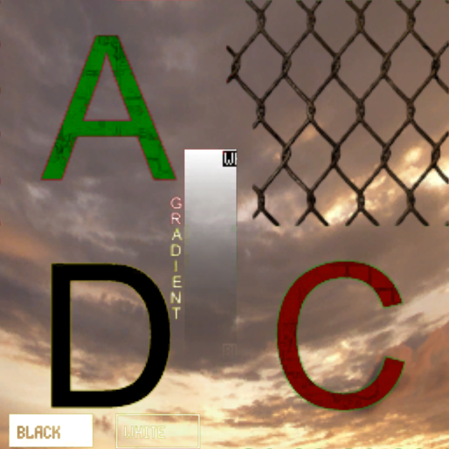 |
| models\artifact-anim-env | ||
| models\glass_stalker_refl | ||
| models\lfo_black_lens_weapons | ||
| models\lfo_black_soft_lens_weapons | ||
| models\lfo_glass_lens_weapons | ||
| models\lfo_light_dot_weapons | ||
| models\lightplanes | self-lighting material with translucent and falloff effect | |
| models\mirror | 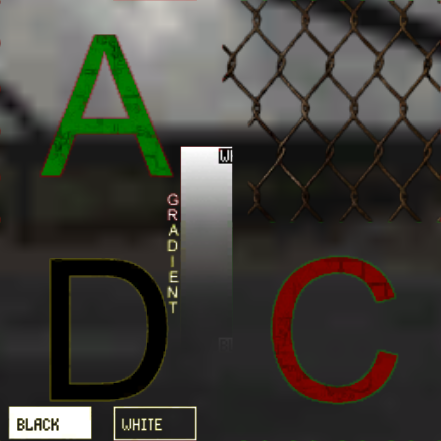 | |
| models\model | basic shader |  |
| models\model_aref | transparency. alpha test - trans (with gradients) |  |
| models\model_fur | transparency. alpha test - aref (no gradients) |  |
| models\hm |  | |
| models\pn |  | |
| models\pn_hm | enable tesselation on models (DX11 only) |  |
| models\pautina | material with transparency and falloff effect |  |
| models\selflight | basic self-lighting material |  |
| models\seftlight_det | uses an engine shader variable. For example, it is possible to make the detector screen turn off when the battery level is too low |  |
| models\selflightl | self-lighting material with lower intensity |  |
| models\transparent | transparency |  |
| models\water | ||
| models\water_ryaska | ||
| models\weapons | CubeMap reflection shader (variant 4) |  |
| models\window | semi-transparent shader with CubeMap reflection | |
| models\xanomaly |  | |
| models\xdistor |  | |
| models\xdistorcolor |  | |
| models\xdistorcolorl |  | |
| models\xdistorinv |  | |
| models\xmonolith |  | |
| models\xwindows |  |
Levels Shaders
| Shader name and path | Description |
|---|---|
| levels\agroprom_asfalt | terrain shader (asphalt) |
| levels\agroprom_grass | terrain shader (grass) |
| levels\agroprom_gravel | terrain shader (gravel) |
| levels\bar_asfalt | |
| levels\bar_asphalt | |
| levels\bar_grass | |
| levels\bar_gravel | |
| levels\darkcape_asfalt | |
| levels\darkcape_grass | |
| levels\darksc_asfalt | |
| levels\darksc_grass | |
| levels\darkvalley_asfalt | |
| levels\darkvalley_grass | |
| levels\darkvalley_sand | |
| levels\dead_city_asfalt | |
| levels\dead_city_grass | |
| levels\dead_city_ground | |
| levels\deadcity_asfalt | |
| levels\deadcity_earth | |
| levels\dead_city_grass | |
| levels\escape_asfalt | |
| levels\escape_asfalt_noblend | |
| levels\escape_grass | |
| levels\escape_sand | |
| levels\garbage_asfalt | |
| levels\garbage_earth | |
| levels\garbage_grass | |
| levels\generator_asfalt | |
| levels\generator_earth | |
| levels\generators_art | |
| levels\hospital_grass | |
| levels\hospital_sand | |
| levels\jupiter_asfalt | |
| levels\jupiter_earth | |
| levels\jupiter_grass | |
| levels\jupiter_plates | |
| levels\l01_escape_asfalt | |
| levels\l01_escape_asfalt_noblend | |
| levels\l01_escape_detritus | |
| levels\l01_escape_grass | |
| levels\l01_escape_sand | |
| levels\limansk_asfalt | |
| levels\limansk_earth | |
| levels\limansk_grass | |
| levels\maedow_asfalt | |
| levels\maedow_grass | |
| levels\maedow_sand | |
| levels\marsh_earth | |
| levels\military_asfalt | |
| levels\military_grass | |
| levels\military_sand | |
| levels\pripyat_asfalt | |
| levels\pripyat_earth | |
| levels\pripyat_gras2 | |
| levels\pripyat_grass | |
| levels\radar_asfalt | |
| levels\radar_grass | |
| levels\red_forest_asfalt | |
| levels\red_forest_earth | |
| levels\red_forest_grass | |
| levels\red_forest_leaves | |
| levels\red_forest_sand | |
| levels\stancia | |
| levels\stancia_asfalt | |
| levels\stancia_build_kanal | |
| levels\stancia_kanal | |
| levels\truckscemetery | |
| levels\truckscemetery_asfalt | |
| levels\truckscemetery_grass | |
| levels\yantar_asfalt | |
| levels\yantar_earth | |
| levels\zaton_asfalt | |
| levels\zaton_cracked | |
| levels\zaton_earth | |
| levels\zaton_earth_2 | |
| levels\zaton_grass | |
| levels\zaton_pebbles | |
| levels\zaton_plates | |
| levels\zaton_sand |
HUD Shaders
| Shader name and path | Description |
|---|---|
| hud\add | |
| hud\add-alpha | |
| hud\cursor | |
| hud\default | |
| hud\fog_of_war | |
| hud\hitmarker | |
| hud\p3d | |
| hud\set | |
| hud\seta |
Flora Shaders
| Shader name and path | Description |
|---|---|
| flora\leaf_wave | |
| flora\trunk_wave |
Effects Shaders
| Shader name and path | Description |
|---|---|
| effects\bullet_tracer | |
| effects\flame | |
| effects\flare | |
| effects\fx_refl_pod | |
| effects\glow | |
| effects\lightning | |
| effects\lightplanes | |
| effects\moon | |
| effects\rain | |
| effects\screen_add | |
| effects\screen_blend | |
| effects\screen_noise | |
| effects\screen_set | |
| effects\shadow | |
| effects\shadow_blur | |
| effects\shadow_world | |
| effects\sun | |
| effects\wallmark | |
| effects\wallmarkblend | |
| effects\wallmarkmult | |
| effects\wallmarkset | |
| effects\water | pure water shader |
| effects\waterryaska | crayfish shader |
| effects\waterstuden | swamp shader |
| effects\watertest | |
| effects\watertest-1 |
SDK Shaders
| Shader name and path | Description |
|---|---|
| editor\ai_node | |
| editor\do_base | |
| editor\selection | |
| editor\spawn_icon | |
| editor\wire |
Details Shaders
| Shader name and path | Description | Preview |
|---|---|---|
| details\blend | ||
| details\lod | ||
| details\set |  |
Def_Shaders
| Shader name and path | Description | Preview |
|---|---|---|
| def_shaders\def_add | ||
| def_shaders\def_aref | ||
| def_shaders\def_aref_v |  | |
| def_shaders\def_objects_lod |  | |
| def_shaders\def_objects_lod_trans | ||
| def_shaders\def_refl_alpha |  | |
| def_shaders\def_refl_alpha_heli | ||
| def_shaders\def_refl_trans |  | |
| def_shaders\def_trans |  | |
| def_shaders\def_trans_v |  | |
| def_shaders\def_trans_v_tuchi | ||
| def_shaders\def_vertex | ||
| def_shaders\def_vertex_hm | ||
| def_shaders\def_vertex_pn | ||
| def_shaders\def_vertex_pn_hm | ||
| def_shaders\lod |  | |
| def_shaders\lod_old | |
Debug Shaders
| Shader name and path | Description |
|---|---|
| debug\ai_nodes | |
| debug\wireframe |
Compiler Shaders List (shaders_xrlc.xr)
About
This section contains a list and description of the shaders that are available in the shaders_xrlc.xr file. This file contains descriptions of the settings that are used by the level geometry compiler.
List
| Shader name and path | Description |
|---|---|
| default | basic lightmap shader |
| default_smooth | |
| def_shaders\def_ghost | lightmap shader without collision |
| def_shaders\def_ghost_vertex | geometry shader without collision |
| def_shaders\def_kolizion | geometry shader with collision |
| def_shaders\def_kolizion_lm | |
| def_shaders\def_kolizion_vertex | invisible geometry shader with collision |
| def_shaders\def_normals | |
| def_shaders\def_noshadow | |
| def_shaders\def_noshadow_pol | |
| def_shaders\def_object_lod | |
| def_shaders\def_object_lod_collision | |
| def_shaders\def_object_lod_visual | |
| def_shaders\def_selflight | |
| def_shaders\def_translucensy | geometry shader with transparency |
| def_shaders\def_vertex | basic vertex shader |
| def_shaders\def_vertex_ghost | |
| def_shaders\def_vertex_ghost_no_shadow | |
| def_shaders\def_vertex_invisible_castshadow | |
| def_shaders\def_vertex_no_shadow | |
| def_shaders\default_lm01 | |
| def_shaders\default_lm01_ghost | |
| def_shaders\default_lm03 | |
| def_shaders\default_lm03_ghost | |
| def_shaders\default_lm03_smooth | |
| def_shaders\default_lm05 | |
| def_shaders\default_lm05_ghost | |
| def_shaders\default_lm_hq |
Sound Environmet List (senvironment.xr)
About
Contains settings for different sound zones
List
| Envornment name and path | Preview |
|---|---|
| identity | identity |
| default | default |
| bathroom | bathroom |
| mountains | mountains |
| yard | yard |
| room | room |
| plant | plant |
| long_corridor | long_corridor |
| open_space | open_space |
| house | house |
| forest | forest |
Engine (X-Ray "Monolith" Engine)
About
The X-Ray "Monolith" Engine is an Anomaly mod open for use and modification. It is based on X-Ray 1.6 Engine (CoP), Open X-Ray Call of Chernobyl Edition and some modifications.
To compile the engine open the solution in VS2015, select all projects and configurations in Batch build and start a build.
Some Main Features
- 64-bit Engine
- In-game editing tools
- Support for 21:9 ratio
- Multi threaded sound prefetching
- Discord integration
- Animation Blending/Movement layers
Modded exes
Community fork of the Monolith engine curated by demonized. This engine is encouraged to use by the community and comes with compatibility and stability fixes.
Key Features
- DLTX by MerelyMezz with edits and bugfixes by demonized
- DXML by demonized
- BaS engine edits by Mortan
- Additional edits and bugfixes by demonized
- Shader Scopes by CrookR and enhanced by Edzan
- Screen Space Shaders by Ascii1457
Console commands
About
This section describes all console commands.
All the settings described below are stored in the file "user".ltx. (You can read more about important files here)
Game
| Сommand | Command description | Command's argument | Note |
|---|---|---|---|
| help | Outputs a list of console commands | - | - |
| g_dead_body_collision | Enables collision | full actor_only off | - |
| g_game_difficulty | Selects the game difficulty | gd_novice gd_stalker gd_veteran gd_master | |
| g_god | Enables God Mode | 'on/off' or '1/0' | - |
| g_hit_pwr_modif | Bone damage modifier | 0.500 - 3.000 | - |
| g_ironsights_zoom_factor | Zoom factor of the mechanical sight | 1.000 - 2.000 | - |
| g_unlimitedammo | Enables Infinite Ammo Mode | 'on/off' or '1/0' | - |
| g_use_tracers | 'on/off' or '1/0' | - | |
| g_important_save | Saving at key points | 'on/off' or '1/0' | - |
| g_autopickup | Enables the ability to pick up items automatically | 'on/off' or '1/0' | Not working |
| g_always_active | The game will continue to work if the focus is not on it | 'on/off' or '1/0' | - |
| demo_play | Plays the selected demo_record | "name" of demo | - |
| demo_record | Enables recording of camera overflights | "name" of demo | Space bar sets key points when the camera flies The Enter key exits record mode and takes the player to the exit point from demo_record mode |
| demo_set_cam_position | - | ||
| keypress_on_start | Whether to wait after loading a level to press the key to go into the game | 'on/off' or '1/0' | - |
| load | Load specified save | save_name | - |
| load_last_save | Load last save | - | - |
| main_menu | Exit to the main menu | - | - |
| quit | Exit to the desktop | - | - |
| cl_cod_pickup_mode | Selecting items from the radius around the scope | 'on/off' or '1/0' | - |
| disconnect | Ends the game | - | - |
| time_factor | Ability to change the game time | 0.001 - 1000.0 | - |
| jump_to_level | Moving to the selected level | k00_marsh l01_escape l02_garbage l03_agroprom k01_darkscape l04_darkvalley l05_bar l06_rostok l07_military l08_yantar l09_deadcity l10_limansk l10_radar l10_red_forest l11_hospital l11_pripyat l12_stancia l12_stancia_2 l13_generators l03u_agr_underground l04u_labx18 l08u_brainlab l10u_bunker l12u_sarcofag l12u_control_monolith l13u_warlab zaton jupiter jupiter_underground pripyat labx8 k02_truck_cemetery fake_start y04_pole | - |
Multiplayer
| Сommand | Command description | Command's argument | Note |
|---|---|---|---|
Actor
| Сommand | Command description | Command's argument |
|---|---|---|
| head_bob_factor | Basic head bobbing factor | 0 - 2 |
HUD
| Сommand | Command description | Command's argument |
|---|---|---|
| g_simple_pda | 'on/off' or '1/0' | |
| g_3d_pda | Switching between 2D and 3D PDA modes | 'on/off' or '1/0' |
| hud_weapon | Shows weapons and hands | 'on/off' or '1/0' |
| hud_draw | Shows UI | 'on/off' or '1/0' |
| hud_fov | FOV for HUD | 0.100 - 1.000 |
UI
| Сommand | Command description | Command's argument | Note |
|---|---|---|---|
| cl_dynamiccrosshair | Dynamic Sight | 'on/off' or '1/0' | Not working because of the dot sight |
| g_crosshair_color | Changes the color of the crosshair | (0 - 255, 0 - 255, 0 - 255, 0 - 255) | Argument is taken in RGBA format First value (0 - 255) - Red Second value (0 - 255) - Green Third value (0 - 255) - Blue Fourth value (0 - 255) - Alpha |
| g_feel_grenade | "Sensitivity" grenade | 'on/off' or '1/0' | - |
| hud_crosshair | Show crosshair | 'on/off' or '1/0' | - |
| hud_crosshair_dist | Show distance to target under crosshair | 'on/off' or '1/0' | - |
Debug
| Сommand | Command description | Command's argument |
|---|---|---|
| rs_stats | Display engine statistics on the screen | 'on/off' or '1/0' |
| rs_cam_pos | Display camera coordinates | 'on/off' or '1/0' |
| list_actions | Display a list of active console commands | - |
| bind_list | Display a list of commands assigned to the keys | - |
| hud_info | - | |
| render_memory_stats | Output information about memory usage | - |
| stat_memory | - |
Control
| Сommand | Command description | Command's argument | Note |
|---|---|---|---|
| bind | Assign a command to the button | Action, key prefixed with k (kLeft, etc.) | - |
| mouse_invert | Inverts the mouse | 'on/off' or '1/0' | - |
| mouse_sens | Mouse sensitivity | 0.001 - 0.600 | - |
| mouse_sens_aim | Mouse sensitivity when aiming | 0.500 - 2.000 | - |
| default_controls | Resets key settings to defaults | - | - |
| wpn_aim_toggle | Aiming Mode | 'on/off' or '1/0' | - |
| g_backrun | Backward running mode | 'on/off' or '1/0' | Not working |
| g_crouch_toggle | Sit/stand mode | 'on/off' or '1/0' | - |
| g_sprint_toggle | Sprint mode | 'on/off' or '1/0' | - |
| g_walk_toggle | 'on/off' or '1/0' | - |
Discord
| Сommand | Command description | Command's argument |
|---|---|---|
| discord_status | Displays status in Discord | 'on/off' or '1/0' |
| discord_update_rate | Discord update rate | 0.500 - 5.000 |
Sound
General settings
| Сommand | Command description | Command's argument |
|---|---|---|
| snd_restart | Restart the sound engine | — |
| snd_cache_size | Cache size | 8 - 256 |
| snd_acceleration | APU resource utilization | 'on/off' or '1/0' |
| snd_targets | Maximum number of channels | 32 - 1024 |
| snd_device | OpenAL Soft |
Music
| Сommand | Command description | Command's argument | Note |
|---|---|---|---|
| snd_volume_eff | Volume of sounds | 0.000 - 1.000 | - |
| snd_volume_music | Music volume | 0.000 - 1.000 | - |
| g_dynamic_music | Turns on dynamic music (during firefights) | 'on/off' or '1/0' | In the game the script xrs_dyn_music.script responsible for playing music is corrupted. An addon restoring this script can help to fix it (Example: COMBAT MUSIC RESTORED + EXTENDED) |
Effects
| Сommand | Command description | Command's argument |
|---|---|---|
| snd_efx | EAX sound effects | 'on/off' or '1/0' |
Physics
| Сommand | Command description | Command's argument |
|---|---|---|
| ph_gravity | Gravity | 0.000 - 1000.000 |
| ph_frequency | The more, the better the collision calculations | 50.0000 - 200.0000 |
| ph_iterations | Number of iterations to calculate the dynamics | 15 - 50 |
Camera
| Сommand | Command description | Command's argument |
|---|---|---|
| cam_inert | Camera inertia | 0.000 - 1.000 |
| cam_slide_inert | 0.000 - 1.000 | |
| fov | FOV for camera | 5.000 - 180.000 |
Graphics
Graphics General settings
| Сommand | Command description | Command's argument |
|---|---|---|
| _preset | Selecting a set of quality settings | Minimum Low Default High/Extreme |
| rs_screenmode | Resolution selection mode | Windowed Fullscreen Borderless Windowed |
| rs_v_sync | Vertical Sync | 'on/off' or '1/0' |
| rs_refresh_60hz | Screen refresh rate 60 Hz | 'on/off' or '1/0' |
Renders
Common commands for all renders
| Сommand | Command description | Command's argument |
|---|---|---|
| renderer | Render type (old) | |
| rs_vis_distance | Visibility range | 0.400 - 1.500 |
| r__actor_shadow | Player shadow | 'on/off' or '1/0' |
| r__bloom_thresh | Brightness threshold for 3rd party bloom shader | 0.0 - 1.0 |
| r__bloom_weight | Bloom weights for 3rd party bloom shader | 0.0 - 1.0 |
| r__clear_models_on_unload | 'on/off' or '1/0' | |
| r__color_grading | 0.000000e+00, 0.000000e+00, 0.000000e+00 - 1.000000e+00, 1.000000e+00, 1.000000e+00 | |
| r__detail_density | Grass density | 0.040 - 1.000 |
| r__detail_height | Grass height | 0.5 - 2.0 |
| r__detail_radius | Grass rendering radius | 50.0 - 250.0 |
| r__dtex_range | 5.000 - 175.000 | |
| r__enable_grass_shadow | Enables grass shadows | 'on/off' or '1/0' |
| r__exposure | Scene exposure | 0.500 - 4.000 |
| r__framelimit | FPS limiter | 0 - 500 |
| r__gamma | Scene gamma | 0.500 - 2.200 |
| r__geometry_lod | Geometry level of detail | 0.100 - 1.500 |
| r__lens_flares | The "lens flare" effect | 'on/off' or '1/0' |
| r__nightvision | Controls nightvision shader | 0 - 3 |
| r__no_ram_textures | 'on/off' or '1/0' | |
| r__no_scale_on_fade | 'on/off' or '1/0' | |
| r__optimize_dynamic_geom | 0 - 4 | |
| r__optimize_shadow_geom | 'on/off' or '1/0' | |
| r__optimize_static_geom | 0 - 4 | |
| r__saturation | Color saturation | 0.0 - 2.0 |
| r__supersample | Supersampling (DX8) | 1 - 8 |
| r__tf_aniso | Anisotropic filtering | 0 4 8 16 |
| r__tf_mipbias | bias for initial texture mip level | -3.0 - 3.0 |
| r__use_precompiled_shaders | 'on/off' or '1/0' | |
| r__wallmark_ttl | Wallmark Lifetime | 1.000 - 600.000 |
| r_screenshot_mode | Screenshot in the selected format | jpg png tga |
R1 - SM2.0 (DX9.0)
| Сommand | Command description | Command's argument |
|---|---|---|
| r1_detail_textures | Detailed textures on static lighting | 'on/off' or '1/0' |
| r1_dlights | Dynamic light sources on static lighting | 'on/off' or '1/0' |
| r1_dlights_clip | Sets the display radius (visibility range) of dynamic light sources | 10.000 - 150.000 |
| r1_fog_luminance | Fog brightness | 0.2 - 5.0 |
| r1_glows_per_frame | Controls the maximum number of light sources | 2 - 32 |
| r1_lmodel_lerp | Controls Linear Lighting Interpolation | 0.000 - 0.333 |
| r1_pps_u | Controls Per Pixel Shader value | -1.000 - 1.000 |
| r1_pps_v | Controls Per Pixel Shader value | -1.000 - 1.000 |
| r1_software_skinning | 0 - 2 | |
| r1_ssa_lod_a | Controls the level of detail (LOD) in the game world | 16.000 - 96.000 |
| r1_ssa_lod_b | Controls the level of detail (LOD) in the game world | 16.000 - 64.000 |
R2 - SM3.0 (DX9.0c)
| Сommand | Command description | Command's argument |
|---|---|---|
| r2_aa | "Pseudo-smoothing" on dynamic lighting | 'on/off' or '1/0' |
| r2_aa_break | Distance at which the "Pseudo-smoothing" effect works | 0.000000e+00, 0.000000e+00, 0.000000e+00 - 1.000000e+00, 1.000000e+00, 1.000000e+00 |
| r2_aa_kernel | The basic value of the "Pseudo-smoothing" effect | 0.300 - 0.700 |
| r2_aa_weight | Controls the blurring of the fake AA more accurately | 0.000000e+00, 0.000000e+00, 0.000000e+00 - 1.000000e+00, 1.000000e+00, 1.000000e+00 |
| r2_allow_r1_lights | 'on/off' or '1/0' | |
| r2_detail_bump | Detail textures | 'on/off' or '1/0' |
| r2_dof | ||
| r2_dof_enable | Enables depth of field | 'on/off' or '1/0' |
| r2_dof_radius | Doesn't work. In vanilla game that command controls blur radius | 0.05 - 1.0 |
| r2_dof_sky | Sky depth | -10000.0 - 10000.0 |
| r2_drops_control | Controls rain drops shader | 0.000000e+00, 0.000000e+00, 0.000000e+00 - 1.000000e+00, 2.000000e+00, 1.000000e+00 |
| r2_exp_donttest_shad | 'on/off' or '1/0' | |
| r2_gi | Global illumination | 'on/off' or '1/0' |
| r2_gi_clip | Global illumination effect range | 0.000 - 0.100 |
| r2_gi_depth | Shadow depth of the global illumination effect | 1 - 5 |
| r2_gi_photons | Number of rays to trace the global illumination effect | 8 - 256 |
| r2_gi_refl | Reflectivity of global illumination effect surfaces | 0.001 - 0.990 |
| r2_gloss_factor | Surface gloss level | 0.001 - 10.000 |
| r2_gloss_min | Minimal gloss level | 0.001 - 1.0 |
| r2_ls_bloom_fast | In theory, this should enable faster bloom implementation, yet it doesn't work correctly | 'on/off' or '1/0' |
| r2_ls_bloom_kernel_b | Determines the level of shading (haze) from the HDR and Bloom | 0.010 - 1.000 |
| r2_ls_bloom_kernel_g | Bloom 'radius'. Higher values results in softer bloom | 1.0 - 7.0 |
| r2_ls_bloom_kernel_scale | Bloom scale | 0.05 - 2.0 |
| r2_ls_bloom_speed | 0.000 - 100.000 | |
| r2_ls_bloom_threshold | Brightness threshold | 0.0 - 1.0 |
| r2_ls_depth_bias | Controls the range of light sources | -0.500 - 0.500 |
| r2_ls_depth_scale | Controls the effect of lighting on shadows | 0.500 - 1.500 |
| r2_ls_dsm_kernel | 0.100 - 3.000 | |
| r2_ls_psm_kernel | 0.100 - 3.000 | |
| r2_ls_squality | 0.500 - 1.000 | |
| r2_ls_ssm_kernel | 0.100 - 3.000 | |
| r2_mask_control | Controls gasmask shader | 0.000000e+00, 0.000000e+00, 0.000000e+00, 0.000000e+00 - 1.000000e+01, 3.000000e+00, 1.000000e+00, 1.000000e+00 |
| r2_mblur | Motion blur intensity | 0.0 - 1.0 |
| r2_mblur_enabled | Enables motion blur effect | 'on/off' or '1/0' |
| r2_parallax_h | Parallax strength | 0.0 - 0.5 |
| r2_qsync | 0 - 1 | |
| r2_shadow_cascede_old | Enables 'SoC-like' shadow mapping | 'on/off' or '1/0' |
| r2_slight_fade | 0.200 - 1.000 | |
| r2_smaa | Subpixel Morphological Anti-aliasing | off low medium high ultra |
| r2_soft_particles | Soft particles | 'on/off' or '1/0' |
| r2_soft_water | Soft Water | 'on/off' or '1/0' |
| r2_ss_sunshafts_length | Length of screen-space sun rays | 0.2 - 1.5 |
| r2_ss_sunshafts_radius | 0.500 - 2.000 | |
| r2_ssa_lod_a | Level of detail of dynamic objects | 16.0 - 96.0 |
| r2_ssa_lod_b | Level of detail of static objects | 32.0 - 96.0 |
| r2_ssao | Screen space ambient occlusion effect quality | st_opt_off st_opt_low st_opt_medium st_opt_high st_opt_ultra |
| r2_ssao_blur | Doesn't work. | 'on/off' or '1/0' |
| r2_ssao_half_data | Enables half-resolution depth buffer for AO | 'on/off' or '1/0' |
| r2_ssao_hbao | Horizon-Based Ambient Occlusion | 'on/off' or '1/0' |
| r2_ssao_hdao | High-definition Ambient Occlusion | 'on/off' or '1/0' |
| r2_ssao_mode | Ambient occlusion type | disabled default hdao hbao |
| r2_ssao_opt_data | 'on/off' or '1/0' | |
| r2_steep_parallax | Steep parallax occlusion mapping | 'on/off' or '1/0' |
| r2_sun | Shadows from the sun | 'on/off' or '1/0' |
| r2_sun_depth_far_bias | -0.500 - 0.500 | |
| r2_sun_depth_far_scale | 0.500 - 1.500 | |
| r2_sun_depth_near_bias | -0.500 - 0.500 | |
| r2_sun_depth_near_scale | 0.500 - 1.500 | |
| r2_sun_details | Shadows of grass and other detailed objects | 'on/off' or '1/0' |
| r2_sun_far | 51.000 - 180.000 | |
| r2_sun_focus | Focus of sun shadows | 'on/off' or '1/0' |
| r2_sun_lumscale | Sun light brightness | 0.0 - 3.0 |
| r2_sun_lumscale_amb | Ambient light brightness | 0.0 - 3.0 |
| r2_sun_lumscale_hemi | Sky light brightness | 0.0 - 3.0 |
| r2_sun_near | The location of the sun from the earth | 1.000 - 150.000 |
| r2_sun_near_border | 0.500 - 1.000 | |
| r2_sun_quality | Shadow filter quality | st_opt_low st_opt_medium st_opt_high st_opt_ultra st_opt_extreme |
| r2_sun_tsm | Clarity of sun shadows | 'on/off' or '1/0' |
| r2_sun_tsm_bias | -0.500 - 0.500 | |
| r2_sun_tsm_proj | 0.001 - 0.800 | |
| r2_sunshafts_min | Min. sun rays intensity | 0.0 - 0.5 |
| r2_sunshafts_mode | Sun rays mode | off volumetric screen_space combined |
| r2_sunshafts_quality | Quality of the sun rays | st_opt_low st_opt_medium st_opt_high |
| r2_sunshafts_value | Sun rays intensity | 0.0 - 2.0 |
| r2_terrain_z_prepass | 'on/off' or '1/0' | |
| r2_tnmp_a | 0.0 - 20.0 | |
| r2_tnmp_b | 0.0 - 20.0 | |
| r2_tnmp_c | 0.0 - 20.0 | |
| r2_tnmp_d | 0.0 - 20.0 | |
| r2_tnmp_e | 0.0 - 20.0 | |
| r2_tnmp_exposure | Tonemap exposure | 0.0 - 20.0 |
| r2_tnmp_f | 0.0 - 20.0 | |
| r2_tnmp_gamma | Tonemap gamma | 0.0 - 20.0 |
| r2_tnmp_onoff | Enables custom tonemapping (based on Uncharted 2 curve) | 0.0 - 1.0 |
| r2_tnmp_w | White point | 0.0 - 20.0 |
| r2_tonemap | Enables eye-adaptation | 'on/off' or '1/0' |
| r2_tonemap_adaptation | Eye-adaptation speed | 0.0 - 10.0 |
| r2_tonemap_amount | 0.000 - 1.000 | |
| r2_tonemap_lowlum | Controls the tone mapping effect on dark locations | 0.000 - 1.000 |
| r2_tonemap_middlegray | Controls the overall appearance of the HDR effect | 0.000 - 2.000 |
| r2_volumetric_lights | Volumetric light | 'on/off' or '1/0' |
| r2_wait_sleep | 0 - 1 | |
| r2_water_reflections | 'on/off' or '1/0' | |
| r2_zfill | 'on/off' or '1/0' | |
| r2_zfill_depth | 0.001 - 0.500 | |
| r2em | 0.000 - 4.000 |
R3 - SM4.0 (DX10) or SM4.1 (DX10.1)
| Сommand | Command description | Command's argument |
|---|---|---|
| r3_dynamic_wet_surfaces | Wet surfaces | 'on/off' or '1/0' |
| r3_dynamic_wet_surfaces_far | Max. rendering distance of the effect | 30 - 100 |
| r3_dynamic_wet_surfaces_near | Min. rendering distance of the effect | 10 - 70 |
| r3_dynamic_wet_surfaces_sm_res | Resolution of rain 'shadowmap' | 64 - 2048 |
| r3_minmax_sm | on off auto autodetect | |
| r3_msaa | Multisample Anti-aliasing | st_opt_off 2x 4x 8x |
| r3_msaa_alphatest | Alpha-test used with MSAA | st_opt_off st_opt_atest_msaa_dx10_0 st_opt_atest_msaa_dx10_1 |
| r3_use_dx10_1 | Enables use of DX10.1 | 'on/off' or '1/0' |
| r3_volumetric_smoke | Volumetric smoke | 'on/off' or '1/0' |
R4 - SM5.0 (DX11)
| Сommand | Command description | Command's argument |
|---|---|---|
| r4_enable_tessellation | Tessellation | 'on/off' or '1/0' |
| r4_wireframe | Displays the wireframe of dynamic models (not working) | 'on/off' or '1/0' |
Brightness-Contrast-Gamma
| Сommand | Command description | Command's argument | Note |
|---|---|---|---|
| rs_c_brightness | Brightness | 0.500 - 1.500 | - |
| rs_c_contrast | Contrast | 0.500 - 1.500 | - |
| rs_c_gamma | Gamma | 0.500 - 1.500 | Not working |
Video
| Сommand | Command description | Command's argument |
|---|---|---|
| vid_mode | Screen resolution | 800x600 1024x768 1280x720 1280x1024 1366x768 1600x900 1680x1050 1920x1080 |
| vid_restart | Reboot the video engine | - |
Textures
| Сommand | Command description | Command's argument |
|---|---|---|
| texture_lod | Texture detailing | 0 - 4 |
AI
| Сommand | Command description | Command's argument |
|---|---|---|
| ai_aim_max_angle | The maximum angle at which the angular velocity of the character when aiming is calculated by the formula | 0.000 - 31.416 |
| ai_aim_min_angle | The minimum angle at which the angular velocity of the character when aiming is calculated by the formula | 0.000 - 31.416 |
| ai_aim_min_speed | Minimum angular velocity of the character when aiming at a target | 0.000 - 31.416 |
| ai_aim_predict_time | Time of the character's prediction of a change in target position | 0.000 - 10.000 |
| ai_aim_use_smooth_aim | 'on/off' or '1/0' | |
| ai_die_in_anomaly | Enables NPCs to die in anomalies | 'on/off' or '1/0' |
| ai_use_old_vision | Includes the old model of virtual character vision, in which random points on the surface of an ellipsoid inscribed into an axially oriented rectangular parallelepiped described around the object were taken to determine the visibility of the object. | 'on/off' or '1/0' |
| ai_use_torch_dynamic_lights | Enables the use of flashlights by non-player characters (NPCs) | 'on/off' or '1/0' |
A-Life (AI)
Important note, these articles were written a long time ago (approximately before Shadow of Chernobyl was released) and may not reflect the current state or principles of A-Life in Anomaly. So for example the FSM was only used by mutants in the release version of the game.
About
GOAP
Goal-Oriented Action Planning (GOAP) - an AI design technique in which a chain of behaviors of agents (NPCs, abstract entities, "living" obstacles) is automatically selected in real time to satisfy a goal. Thus, more variability of action and unpredictability is added. It is essentially similar to theorem proving methods, but simpler, because of the specifics of its application in games (see AI Game Programming Wisdom 2 for a detailed description).
For GOAP, we need to define a representation of the world in terms of an object. Each property of the world representation must be evaluated by an evaluator. Each object action has a list of preconditions and effects, i.e., what we expect from the action; in addition, each action has its own weight. Based on this information, having the current state of the world and the target state (i.e., the state of the world in which some of its properties have some values), we can construct a sequence of actions of the shortest weight that will move the world from the current state to the target state. An action can occur several times in the constructed sequence. If at given parameters the sequence cannot be constructed, the previous sequence of actions is executed.
Implementation details
In the GOAP game implementation, the size of the world representation is not limited, since only those properties of the world that are necessary to find the optimal solution are evaluated when constructing the sequence of actions. After the sequence is constructed, only the first action of the sequence will be executed until the goal changes or the current state of the world changes. If the sequence is rebuilt and its first action is not the same as the previous one, the finalize method is called for the previous one and the initialize method for the new one. The execute method is called to perform the action. If with the given parameters the sequence cannot be built, a warning about this is written to the log, along with a dump of the current state of the world (or rather, only those properties of the world that have been evaluated when finding the sequence) and the target one. The action itself may not be atomic. Thus, it is possible to build hierarchical GOAP models
Dmitry Yasenev 02.04.2004
FSM (Finite State Machines)
Finite State Machines (FSM) are a common and convenient technique for programming the behavior of bots (NPCs) in computer games.
The FSM is based on the principle that at any given moment the NPC is in some well-defined state. Such states are a finite number, and all of them are known in advance. For example, the states of the bot can be: doing nothing, walking the route, playing sound or animation. A special state is when the NPC is under the control of the game's AI.
An NPC can go from one state to another after meeting some transition condition. When specifying a transition condition from state A to state B, we actually define under what conditions the transition from one state to another will be performed. At that, transition from B to A requires defining its own transition condition. If the transition condition between any two states is not set, the transition is considered impossible.
The FSM structure can be represented as an oriented graph, whose vertices (circles) are states, and edges (arrows) are transition conditions.

Example
| States | 0 – soldier's state under the control of the AI 1 – the soldier says "stop, I'll shoot!" 2 – the soldier says "gone bastard" |
| Transition conditions | 0-1 – soldier sees actor for the first time 1-0 – soldier finished saying the phrase "stop, I'll shoot!" and sees the actor 1-2 - soldier finished saying the phrase "stop, I'll shoot!" and lost sight of the actor 2-0 - soldier finished saying the phrase "gone bastard". |
Yuri Dobronravin 01.11.2003
MG (Motivational Graphs)
Motivational Graphs is a decision-making method described in AI Game Programming Wisdom 2, which, according to the authors, is something between Decision Trees and Neural Networks.
The essence of the method is that decision-making is based on NPC motivations, including mutually contradictory ones. Let there be several motivations. Each motivation can have sub-motivations. All motivations make up a motivational graph. This graph is oriented and is structurally very similar to a tree. The difference from a tree is that several nodes can have the same children, moreover, several tree roots are possible. The leaves of our graph, i.e. nodes that have no sub-motivations, set goals for NPCs. So the task of MG is to find out WHAT to do, while the task of GOAP is to find out HOW to do it.
So how does MG choose which goal an NPC should fulfill? To do this, we go through all the roots of the graph (i.e. nodes that have no incoming edges), giving them initial weight 1. All other nodes have initial weight 0. Then each root (based on some considerations) distributes its weight to all its submotivations (this may cause "energy" leakage, i.e. the distributed weight may be less in total than the initial weight). We continue this procedure recursively for the children of the root until we get to the leaves of the graph. Each time one of the motivation branches arrives at them, the weight is summed up. Eventually, after the weight propagation procedure is complete, we choose the leaf of the graph that has gained the maximum weight.
Dmitry Yasenev 2004
Sources
Engine Classes List
This article is under construction
Client classes
- CGameTask
- CGameObject
- ANY_CLASS
- DLL_Pure
- ICollidable
- IRenderable
- ISheduled
- ce_smart_zone
- ce_script_zone
- CActor
- CAI_Stalker
- CAI_Trader
- CAI_Bloodsucker
- CAI_Boar
- CAI_Dog
- CAI_Flesh
- CAI_PseudoDog
- CBurer
- CCat
- CChimera
- CController
- CFracture
- CPoltergeist
- CPseudoGigant
- CPsyDog
- CPsyDogPhantom
- CSnork
- CTushkano
- CZombie
- CAntirad
- CBottleItem
- CFoodItem
- CMedkit
- CTorch
- CSimpleDetector
- CAdvancedDetector
- CEliteDetector
- CScientificDetector
- CGrenadeLauncher
- CScope
- CSilencer
- hanging_lamp
- CCar
- CHelicopter
- CPhysicObject
- CDestroyablePhysicsObject
- CExplosiveItem
- CWeaponAmmo
- CInventoryBox
- CPda
- CF1
- CRGD5
- CWeaponAK74
- CWeaponAutomaticShotgun
- CWeaponBinoculars
- CWeaponBM16
- CWeaponFN2000
- CWeaponFORT
- CWeaponGroza
- CWeaponHPSA
- CWeaponKnife
- CWeaponLR300
- CWeaponPM
- CWeaponRG6
- CWeaponRPG7
- CWeaponShotgun
- CWeaponSVD
- CWeaponSVU
- CWeaponUSP45
- CWeaponVal
- CWeaponVintorez
- CWeaponWalther
- CMincer
- CMosquitoBald
- CHairsZone
- CRadioactiveZone
- CTorridZone
- CZoneCampfire
- CLevelChanger
- CSpaceRestrictor
- smart_cover_object
- CStalkerOutfit
- CHelmet
- CArtefact
- CBastArtefact
- CBlackDrops
- CBlackGraviArtefact
- CDummyArtefact
- CElectricBall
- CFadedBall
- CGalantineArtefact
- CGraviArtefact
- CMercuryBall
- CRustyHairArtefact
- CThornArtefact
- CZudaArtefact
Server classes
- cse_abstract
- cse_alife_graph_point
- cse_temporary
- cse_alife_object_climable
- CSE_AbstractVisual
- cse_alife_object
- cse_alife_dynamic_object
- cse_alife_space_restrictor
- cse_alife_level_changer
- cse_alife_team_base_zone
- cse_alife_smart_zone
- cse_alife_online_offline_group
- cse_smart_cover
- cse_custom_zone
- cse_torrid_zone
- cse_anomalous_zone
- cse_zone_visual
- cse_alife_dynamic_object_visual
- cse_alife_car
- cse_alife_helicopter
- cse_alife_inventory_box
- cse_alife_mounted_weapon
- cse_alife_object_breakable
- cse_alife_object_hanging_lamp
- cse_alife_object_physic
- cse_alife_object_projector
- cse_alife_ph_skeleton_object
- cse_alife_trader
- cse_alife_creature_abstract
- cse_alife_item
- cse_alife_item_ammo
- cse_alife_item_artefact
- cse_alife_item_bolt
- cse_alife_item_custom_outfit
- cse_alife_item_detector
- cse_alife_item_document
- cse_alife_item_explosive
- cse_alife_item_grenade
- cse_alife_item_pda
- cse_alife_item_torch
- cse_alife_item_weapon
- cse_alife_item_weapon_auto_shotgun
- cse_alife_item_weapon_magazined
- cse_alife_item_weapon_magazined_w_gl
- cse_alife_item_weapon_shotgun
- cse_alife_item
- cse_alife_space_restrictor
- cse_alife_dynamic_object
Reference
Reference chapters are lists of things. Have fun.
Audio
All soundtracks from the original trilogy
| Artist | Soundtrack name | Preview | Note |
|---|---|---|---|
| MoozE | Theme of Escape | Preview | |
| MoozE | Stalker_extract (Alternative Version of "Theme of Escape") | Preview | Cut from the original game |
| MoozE | Theme of Garbage | Preview | |
| MoozE | Theme of 'Red Forest' | Preview | |
| MoozE | Tunnels | Preview | |
| MoozE | Dark Valley | Preview | |
| MoozE | Fog | Preview | |
| MoozE | Heat | Preview | |
| MoozE | S.A.D. | Preview | |
| MoozE | Junk | Preview | |
| MoozE | Elemental Room | Preview | |
| MoozE | Zone Triggers | Preview | |
| MoozE | Mutation | Preview | |
| MoozE | The Thing | Preview | |
| MoozE | Dead Cities Pt.1 | Preview | |
| MoozE | Dead Cities Pt.2 | Preview | |
| MoozE | Radwind Pt.1 | Preview | |
| MoozE | Radwind Pt.2 | Preview | |
| MoozE | Anomaly Reborn | Preview | |
| MoozE | Cold/Freezing Out | Preview | |
| MoozE | Sleeping in Ashes v.1 | Preview | |
| MoozE | Sleeping in Ashes v.2 | Preview | |
| MoozE | Web Amb#1 | Preview | |
| MoozE | Web Amb#2 | Preview | |
| MoozE | Web Amb#3 | Preview | |
| MoozE | Rads Pt.1 | Preview | |
| MoozE | Wasteland | Preview | Cut from the original game |
| MoozE | Wasteland II | Preview | |
| MoozE | Res | Preview | Cut from the original game |
| MoozE | Epilogue | Preview | |
| MoozE | Battle exp. | Preview | Cut from the original game |
| MoozE | Predator | Preview | Cut from the original game |
| MoozE | Trailer part 1 | Preview | |
| MoozE | Trailer part 2 | Preview | |
| MoozE | Mud | Preview | Cut from the original game |
| MoozE | Mechanized Patrol | Preview | |
| Addaraя | Gurza Dreaming | Preview | |
| Atroxis | Credits | Preview | |
| Atroxis | Intro part 1 | Preview | |
| Atroxis | Intro part 2 | Preview | |
| Kaos | Invisible Dangers. Part 1 (Trailer) | Preview | |
| Kaos | Invisible Dangers. Part 2 (Trailer) | Preview | |
| Alexey Omelchuk | Swamps of Despair | Preview | |
| Alexey Omelchuk | Shadows | Preview | |
| Alexey Omelchuk | Ghost City | Preview | |
| Alexey Omelchuk | Hospital | Preview | |
| Alexey Omelchuk | Intro | Preview | |
| Alexey Omelchuk | Theme of Zaton. Day | Preview | |
| Alexey Omelchuk | Theme of Zaton. Night | Preview | |
| Alexey Omelchuk | Theme of Jupiter. Day | Preview | |
| Alexey Omelchuk | Theme of Jupiter. Night | Preview | |
| Alexey Omelchuk | Theme of Pripyat. Day | Preview | |
| Alexey Omelchuk | Theme of Pripyat. Night | Preview | |
| Alexey Omelchuk | Combat Theme 1 | Preview | |
| Alexey Omelchuk | Combat Theme 2 | Preview | |
| Alexey Omelchuk | Combat Theme 3 | Preview | |
| Alexey Omelchuk | Combat Theme 4 | Preview | |
| Alexey Omelchuk | Outro | Preview |
All soundtracks from Anomaly
| Artist | Soundtrack name | Preview |
|---|---|---|
| Gates of Morheim | Dying Machine | Preview |
| Gates of Morheim | Mechanical Consciousness | Preview |
| Gates of Morheim | Steel Dawn | Preview |
| Gates of Morheim | Skyways | Preview |
| Gates of Morheim | The Above | Preview |
| Gates of Morheim | Fog | Preview |
| Gates of Morheim | Home | Preview |
Blender Stuff
Models
Blender Stalker Asset Library - Library of models to place in Blender
Source objects of the original trilogy
Animations

SDK resources
SDK 0.4 (SoC)
SDK 0.5 (CS)
SDK 0.7 (CoP)
- [gamedata]
- rawdata
Unofficial Anomaly SDK
Reference
Reference chapters are lists of things. Have fun.
Modding Tools
In-game editors
- Item Spawner - Spawn menu for items (Weapons, Outfits, etc)
- Object Spawner - Spawn menu for objects (NPCs, Squads, Anomalys, etc)
- Weather Editor - Editor for setting, saving weather
- Lighting Editor - Weather Lighting Editor
- Weapon HUD Editor - Allows you to customize the HUD of the weapon (position, location of the shot, etc.)
- Outfits/Weapon Stats Editor - Allows you to customize the configuration of the outfits or weapons
- Pocket Workshop - Not an editor, but allows you to check the scheme of improvements.
- NPC Logic/Execute - Allows you to edit NPC logic
QoL Tools
- Stalker Modding Helper - Small utility that allows you to copy the mods you are working on into your dev S.T.A.L.K.E.R. dev installation. Anomaly and either run the game in a non-launched state + automatically load a save, or simply send a command to the game to reload a test save. The utility copies only those files that have been modified using MD5 hash check.
Toolsets
-
AXRToolset - AXRToolset is an AutoHotkey & Lua-based scripting engine that utilizes a Graphical User Interface to display scripted plugins that do various automated tasks. Although the current plugins are designed to aid in the development of S.T.A.L.K.E.R.: Call of Chernobyl, the engine itself can be used to create macros, scripts and other utilities for any application or purpose.
-
Stalker Studio V.0.7 Beta - Different tools in one place
Gamedata Extractors
Software to unpack gamedata
- Universal Extractor 2.0 - Unzips the gamedata from the original trilogy
- db_unpacker.bat (tools/) - Anomaly's internal gamedata extractor, which extracts the scripts and configs files from the .db
- db_unpacker_all.bat (tools/) - An internal gamedata extractor from Anomaly, which extracts all files from .db
Converters
- converter.exe (tools/) - Converts files from one format to another.
- X-Ray Export Tool - Tool for fast editing and exporting raw stalker formats
SDK's
Official SDK with community enhancements:
-
SDK 0.4 (Shadows of Chernobyl)
- SDK 0.4 by Yara - This is a compiled from source SDK 0.4, which has dozens of fixes and improvements.
- SDK 0.4 by YUSHAT
- SDK 0.4 by Political
̀These versions (SDK 0.4 and SDK 0.5/0.6) are not compatible with Anomaly!
-
-
SDK 0.7 (Call of Pripyat)(RePack by DaaGuda V2) - Official SDK 0.7 repack with customized components and various fixes (More About)
-
SDK 0.7 Easy:
- The easiest version, but gamedata and rawdata are excluded from its composition, there are no add-ons.
- For full functionality you will need to unpack gamedata from CoP 1.6.02.
- Weight: 22 MB
-
SDK 0.7 Medium(Win32/Win64):
- The same as Easy, but with rawdata and some additions.
- Just to work fully need to unpack gamedata from CoP 1.6.02.
- Weight: 192.4 MB/190.2 MB
-
SDK 0.7 Full(Win32/Win64):
- The heaviest version, it includes unpacked gamedata, rawdata with sources of CS, CoP objects (excluded objects from rawdata\objects\scenes folder because of its weight)
- Preinstalled add-ons from other suites.
- Weight: 2.64 GB/2.64
-
-
-
GUI for X-Ray SDK - A graphical shell for quickly calling the Actor Editor, Level Editor, and compilers for selected locations.
-
Call of Chernobyl SDK - Contains the basic editors and tools that were used to create Call of Chernobyl
-
Anomaly Unofficial SDK - Unofficial SDK with included fixes
-
SDK 0.8 by Red Panda - This is a port and a small upgrade of the classic 0.7 editor set. A lot of problems with the classic editor were related to the outdated development environment, which did not allow to upgrade it. Imgui was taken as a UI shell, as the easiest ui allowing to create simple forms with one line of code. All 4 editors were taken over.
- HybridXRay - Further improvements to the SDK and X-Ray Engine from RedPanda.
-
SDK 2.6 beta (Lost Alpha) - Contains the basic editors and tools that were used to create Lost Alpha
SDK tools
The versions of the SDK tools may differ depending on the version of the SDK itself
- Actor Editor
- Dialog Editor
- Level Editor
- Particle Editor (Not finished)
- Postprocess Editor
- ShaderEditor
- xrLC_net - Level compiler by machines connected to a local network
Coding
- Notepad
- Notepad++
- Visual Studio Code or VSCodium
- LTX Support Extension by AziatkaVictor - adds support for the logic syntax from S.T.A.L.K.E.R. CoP
3D packages
3D Packages that have compatibility/addons to work with X-Ray:
-
3Ds Max with scripts
-
3ds Maya with scripts
-
MilkShape (With Stalker Plugin)
Textures
-
OXR Texture Tool - This tools purpose is to unpack ui_icon_equipment.dds into separate individual icons so that they can be manipulated individually or merged more easily. This tool is capable of creating a new sprite sheet using the unpacked icons and writing the new geometry values (w,h,x,y) into the system configs. It also allows you to merge up to 4 existing unpacked ui_icon_equipment directories into a single sheet.
-
BumpGenerator - Intended for DXT compression of bumps together with simultaneous generation of bump#maps (the purpose of which is to correct errors introduced by compression). It works similarly to a similar function in KFK. As input textures, both standard ("blue") bump textures and bump textures used directly in the game with rearranged channels are supported.
-
Bump Generator by i-love-kfc - A simple bump and bump# texture generator from normal maps with the ability to use gloss maps, also, is capable of generating bump# for ready-made "green" bumps.
-
THM Editor - Utility for editing .thm files without the need to use the SDK
-
THM Editor by Valerok - ValeroK's version of the original THM Editor
-
ThmValidator - Allows you to check the .thm files in the selected directory and automatically fix the most common bugs that occur during manual editing.
-
xrAutoUI - Auto-transfer UI from 4:3 to 16:9
-
Any program capable of creating textures or opening .dds files (e.g. Paint.net)
Dialogs
-
S.T.A.L.K.E.R. Dialog Editor Extended - Allows you to edit and create dialogs.
-
Dialog Editor - Completely new dialog editor (not compatible with Anomaly)
Parameters\LTX
-
STLKObjectMan - Universal parameters editor. Modifies *.ltx and *.xml files. not compatible with Anomaly due to modified config files
-
StalkerElementFinder - A program for finding elements and resources
-
DLTXIFY BY RIGHT CLICK - This bundle allows to create DLTX version of the mod by simple right click on the folder of the mod and choosing "DLTXify mod" in context menu
Sounds
-
Sound Attribute Viewer And Tweaker - Simple program that can reduce the work needed to view and/or edit STALKER sound file attributes used by all three STALKER games to determine initial volume, volume drop-off, and sensitivity of NPCs to the sounds
-
OGG Editor - This utility is designed to quickly view and edit audio comments
-
StkOggCommentViewer - Allows viewing comments in an .ogg file
-
OggCommentDecompiler - Saves comments in a .ltx file, whose name and path are equivalent to the sound file
Animations
- OMF Editor - Tool for working with .omf format.
- OMF Editor by Valerok - Modified tool for working with .omf format.
Models
-
OGF Editor - Tool for working with .ogf format
-
OGF Editor by Valerok - Tool for working with .ogf and .dm format
-
MeshToolz - Swiss knife for low-level editing of OGF models. Want to copy a piece of one model to another? Easy. Change texture paths and bindings? No problem. Move and scale an item by snapping it to another bone? No problem. Can work both interactively and in script processing mode.
-
OGFViewer - legacy model viewer for .ogf format.
-
ObjectParamsCopier - Allows you to quickly copy surface settings with the same name from one object file to another
-
OgfRefEditor - Editor of the list of OMFs connected to the model. It is intended primarily for changing the list of OMFs used in hand models, for this purpose it is possible to apply the OMF list to all OGFs in the selected folder
-
StalkerWeaponToolKit - Tool for working with weapons
-
StalkerObjectVisual - Viewer for .ogf models
Upgrades
- Upgrades Editor - A visual editor that makes it relatively quick and easy to create weapon upgrade schemes
Postprocess
- ppeEditor - Software for creating and editing files of the postprocessing .ppe files
NPC's
-
NPC creator - Program designed to create NPC's
-
NPC Editor - NPC editing tool (Currently not working for Anomaly!)
-
NpcStalkerToolKit - This program creates NPC in the game (but does not spawn them)
AI
Spawn
- XrSpawner - A program that allows you to edit the .spawn file of the game containing the initial location and some properties of all dynamic objects
Decompilers\Compilers
-
X-Ray Converter - Multifunctional utility for working with game file formats and X-Ray SDK
- X-Ray Converter Extra - Improved components for the converter
- GUI for Converter - GUI for converter
- More
- X-Ray Converter Extra - Improved components for the converter
-
Particle Editor Tools - Decompiling/compiling particle.xr file
-
Universal ACDC - Perl script, to unpack and pack all.spawn
-
- The program requires Old Version Active Perl (at least version 5 and up to about version 5.24) to be installed.
- You also need stkutils (put it in the folder with the script or in C:\Perl\lib)
Level Compilers
- Universal x64 level compilers - Universal level compiler that supports the compilation format for games of all series and has many keys to compile
.db/.xdb archivers
- DB_Compressor by d_μaμ
- xrCompress by i-love-kfc - .db/.xdb archiver
Mod Creating
Formats
- ChunckTool - The utility is intended for low-level work with chunks in files and allows to read, replace and add data.
In-Game Editors
- Item Spawner
- Lightnind Editor
- NPC Logic/Execute
- Object Spawner
- Outfits/Weapon Stats Editor
- Pocket Workshop
- Weapon HUD Edior
- Weather Editor
Item Spawner
General information
In this spawner you can spawn all item sections for the player

In the left column, select the type of item
Further the item can be selected in the list of sections or by clicking on the item icon
Below there is a line with a choice of spawning: in the inventory or at the place of the aiming cursor
The item can also be spawned by typing the name of the item's section in the line
Technical part
Items appear in the list because of the "kind" or engine class parameter in their .ltx file. The spawner script can be found in the file "ui_debug_main.script"
Full list
| Name | Tehnical type (kind or Engine Class) name |
|---|---|
| Artefacts | i_arty i_arty_junk ARTEFACT SCRPTART |
| Artefacts (Conteiner) | i_arty_cont |
| Items (Food) | i_mutant_cooked i_mutant_raw i_food II_FOOD S_FOOD |
| Items (Drink) | i_drink II_BOTTL |
| Items (Medical) | i_medical II_BANDG II_MEDKI II_ANTIR |
| Items (Device) | i_device DET_SIMP DET_ADVA DET_ELIT DET_SCIE |
| Items (Tools) | i_kit i_tool |
| Items (Repair) | i_repair |
| Items (Parts) | i_part |
| Items (Mics.) | i_mutant_part i_misc II_DOC EQ_PATCH II_ATTCH II_BTTCH D_FLALIT S_PDA D_PDA |
| Items (Note) | i_letter |
| Items (Quest) | i_quest |
| Items (Upgrades) | i_upgrade |
| Helmets | o_helmet E_HLMET EQU_HLMET |
| Outfits (Attachments) | i_mutant_belt i_attach i_backpack EQ_BAKPK |
| Outfits (Light) | o_light |
| Outfits (Medium) | E_STLK EQU_STLK o_medium o_sci |
| Outfits (Heavy) | o_heavy |
| Weapons (Ammo) | w_ammo AMMO AMMO_S S_OG7B S_VOG25 S_M209 |
| Weapons (Melee) | w_melee WP_KNIFE |
| Weapons (Pistol) | w_pistol WP_HPSA WP_PM WP_USP45 |
| Weapons (Shotgun) | w_shotgun WP_ASHTG WP_BM16 |
| Weapons (SMG) | w_smg |
| Weapons (Rifle) | w_rifle WP_AK74 WP_GROZA WP_LR300 WP_VAL |
| Weapons (Sniper) | w_sniper WP_SVD WP_SVU |
| Weapons (Explosive) | w_explosive WP_RG6 WP_RPG7 G_F1_S G_RGD5_S G_F1 G_RGD5 |
| Weapons (Misc.) | w_misc WP_SCOPE WP_SILEN WP_GLAUN S_WPN_MISC WP_BINOC II_BOLT |
Lightning Editor
General information
Allows you to change the various lighting settings of the weather preset
First you need to select a weather file from the drop-down list and then edit it.
Keybinds
INSERTto startUpandDownkeys to rotate through the avaiable commandsNUMPAD_8andNUMPAD_2keys to increase/reduce the value of highlighted commandEnterkey to save the adjusted commands to print_table.txt
Technical part
The commands and their settings are assigned in the script "ui_debug_lightning.script"
List of commands (Full list of commands can be found here)
| Сommand | Command description |
|---|---|
| r2_sun_lumscale | |
| r2_sun_lumscale_amb | |
| r2_sun_lumscale_hemi | |
| r2_tonemap_amount | |
| r2_tonemap_lowlum | |
| r2_tonemap_middlegray | |
| r2_gloss_min | |
| r2_gloss_factor | |
| r2_ls_bloom_kernel_b | |
| r2_ls_bloom_kernel_g | |
| r2_ls_bloom_kernel_scale | |
| r2_sun_shafts_min | |
| r2_sun_shafts_value | |
| r__optimize_dynamic_geom | |
| r__optimize_static_geom | |
| r__optimize_shadow_geom | |
| rs_vis_distance | |
| r2_tnmp_onoff | |
| r2_tnmp_a | |
| r2_tnmp_b | |
| r2_tnmp_c | |
| r2_tnmp_d | |
| r2_tnmp_e | |
| r2_tnmp_f | |
| r2_tnmp_w | |
| r2_tnmp_gamma | |
| r2_tnmp_exposure | |
| r3_dynamic_wet_surfaces_near | |
| r3_dynamic_wet_surfaces_far | |
| r3_dynamic_wet_surfaces_sm_res |
Object Spawner
General information
Spawns sections of physical objects or living creatures
Similar to Item Spawner but has its own tools
Spawn at smart terrain- allows you to spawn a selected section at a certain level and smart terrainSpawn at cursor- the same as in Item SpawnerSpawn at player- spawns the selected section directly on the player's coordinates
Technical part
Sections appear in the list because of the specified engine class in their .ltx file. The spawner script can be found in the file "ui_debug_main.script"
Full list
| Name | Engine Class |
|---|---|
| NPC (Mutant) | SM_KAR SM_BLOOD SM_BOARW SM_BURER SM_CAT_S SM_CHIMS SM_CONTR SM_DOG_S SM_FLESH SM_IZLOM SM_GIANT SM_POLTR SM_P_DOG SM_DOG_P SM_DOG_F SM_SNORK SM_TUSHK SM_ZOMBI SM_RAT SM_KARLIK SM_LURKER SM_PSYSUCKER |
| NPC (Stalker) | AI_STL_S AI_TRD_S |
| Squads (Mutant) | ON_OFF_S |
| Squads (Stalker) | ON_OFF_S |
| Squads (Story ID) | ON_OFF_S |
| Vehicles | C_HLCP_S C_NIVA SCRPTCAR |
| Anomaly | ZS_MBALD ZS_GALAN ZS_MINCE ZS_RADIO ZS_TORRD ZS_NGRAV Z_MBALD Z_RADIO Z_CFIRE Z_NOGRAV Z_TORRID Z_RUSTYH ZS_BFUZZ ZS_AMEBA |
| Physic (Misc.) | O_PHYSIC O_DSTRBL O_PHYS_S O_DSTR_S S_INVBOX O_INVBOX S_EXPLO II_EXPLO |
| Phantom | AI_PHANT |
Outfits/Weapon Stats Editor
General information
Allows you to edit outfit and weapon parameters
Attention
- Items configs must be unpacked before working with the editor, they must be in (gamedata/configs/items)
- Don't forget to make a backup of the configs for reference.
Keybinds
Arrow keys- parameters navigation.Numpad 8/2- increase/reduce selected value.Numpad 9/3- increase/reduce all values of selected parameter.LShift (hold)- x10 value step size / jump 2 parameters.LAlt (hold)- x50 value step size / jump 3 parameters.Numpad 5- copy current stats.Numpad 6- paste stored stats.H- Show help window.Esc- turn off editor.
To work it is necessary to put on the outfit or weapon to be edited
Left Colomn
The column on the left shows the items parameters (yellow color highlights the values of the item selected for comparison with the currently worn item)
Copy- copies parametersPaste- pastes parametersApply- applies parametersReset- resets the items parameters to their original values (Modified values are cached temporarly for the item you're working on, you can return to it if you turn the editor off)
Middle Colomn
The column in the middle has items (outfits/weapons) sections for comparison with the current items worn
Right Colomn
The column on the right shows a comparison of items parameters
Technical part
The editor script is located in the file "ui_debug_item.script"
Weapon HUD Editor
Weather Editor
General information
Weather editor allows you to change weather values in real-time. Minute precision
- The GUI is interactive and easy to use, with ability to modify or create new weather files
- Edited values are temporarly cached for the weathers, hours and minutes you worked on. You can return to them in case you turned off the editor (Avoid exiting or reloading when you have unsaved values)
- In Viewer mode, you can witness weather changes by the time slider
Viewer Mode

Keybinds
Up Arrow- select previous parameterDown Arrow- select next parameterLeft Arrow- reduce\rotate value of selected parameterRight Arrow- increase\rotate value of selected parameterLShift (hold)- x10 value stepLAlt (hold)- x50 value stepQ- previous hourA- next hourW- previous minuteS- next minuteE- increase selected parameter valueD- reduce selected parameter valueR- increase selected group value (all parameters within)F- reduce selected group value (all parameters within)T- next momentG- previous momentC- copy select paramter valueC + CTRL- copy current moment settingsV- paste/apply copied parameter valueV + CTRL- paste/apply to current moment settingsZ- viewer modeDelete- Reset current modified momentDelete + CTRL- Reset all modified momentsH- toggle hint windowEscorHome- turn off editor
Buttons
| Icon | Description |
|---|---|
| Copy settings | |
| Paste settings | |
| Viewer Mode | |
| Pause in Viewer Mode | |
| Autoplay in Viewer Mode | |
Save to new file if you indicated the name in box below, otherwise save to current file. Name of custom files must start with "w_". | |
| Clear cached values | |
| Resume weather, and exit | |
| Exit (weather will still paused in engine) | |
| About |
Technical part
The settings of the editor and its parameters can be found in the file "ui_debug_weather.script"
Full parameter list
| Name | Description | Note |
|---|---|---|
| ambient | Ambient | The list is taken from the file "ambients.ltx" |
| ambient_color | Ambient Color | |
| clouds_color | Clouds Color | |
| clouds_texture | Clouds Texture | |
| far_plane | ||
| fog_color | Fog Color | |
| fog_density | Fog Density | |
| fog_distance | Fog Distance | |
| hemisphere_color | Hemisphere Color | |
| rain_density | Rain Density | |
| rain_color | Rain Color | |
| sky_color | Sky Color | |
| sky_rotation | Sky Rotation | |
| sky_texture | Sky Texture | |
| sun | Sun | The list is taken from the file "suns.ltx" |
| sun_color | ||
| sun_longitude | Sun Longitude | Unused |
| sun_altitude | Sun Altitude | Unused |
| sun_shafts_intensity | Sun Shaft Intensity | |
| thunderbolt_collection | The list is taken from the file "thunderbolt_collections.ltx" | |
| thunderbolt_duration | Thunderbolt Duration | |
| thunderbolt_period | Thunderbolt Period | |
| water_intensity | Water Intensity | |
| wind_velocity | Wind Velocity | |
| tree_amplitude_intensity | Tree Amplitude Intensity | |
| wind_direction | Wind Direction |

Extension for Visual Studio Code, which adds support for logic syntax from S.T.A.L.K.E.R. Call of Pripyat. The plugin adds a lot of big and not so big features that should make it easier to work on modifications, as well as help newcomers start making your first mod. Perhaps the most important aspect of the extension is that it tries as much as possible to adapt to projects.

Currently implemented VSCode features such as:
- Completion
- Infos
- Sections Types
- Sections Links
- Functions & Conditions
- Localization
- Squads
- Tasks
- Signals
- Hover
- Syntax Highlighting
- Semantic Highlighting
- Folding Ranges
- Symbols
The list is constantly being updated with new features as each new version is released.
Settings
To enter the extension settings, you must:
- Press
Ctrl+Shift+P => Open Settings (UI). - Open
Extensions => LTXor just search forltx.
Extension assembly
If you're interested in poking around the extension yourself or just helping to develop it, here's a little information on how to build it. To do this, you need to:
- Download the source code using
git clone. - Open the project, run the console
npm installor click onpackage.jsonin the spoilerNPM Scriptsand click on the itemRun install. - After installing all the required libraries, press
Launchin theRun and Debugtab or theF5hotkey. - Done. A new VS Code window should open with 2 test files.
Links
Introduction
This section describes the operation, configuration and various tutorials in the SDK
SDK or Software Development Kit helped the developers of the original trilogy and the modders to develop the game itself
The SDK includes the following editors:
- Actor Editor
- Image Editor
- Dialogue Editor
- Level Editor
- Particle Editor
- Postprocess Editor
- Shader Editor
Depending on the SDK version (Original or modified) this list of editors (and their versions) may differ.
Interface
Depending on the different versions of the SDK and the editors in it, the interface may be different
SDK 0.7

SDK 0.8 by RedPanda

But the basic buttons and their functionality remain in place
Editing Toolbar
Hotkeys in the table are standard (they can be set under Preference > Keyboard > Hotkeys)
| Image | Name | Description | Note |
|---|---|---|---|
| Undo | Undo | - | |
| Redo | Redo | - | |
| Select | Used to select objects | Before the object can be moved, it must be selected with this button | |
| Add | Adds objects | To add an object, select it in the object panel | |
| Move | Allows to move objects | - | |
| Rotate | Allows to rotate objects | - | |
| Uniform Scale | Allows to scale objects | Scale object on all axes | |
| Restrict to X | Locks the object to the X-Axis | allowing movement/rotation only on that axis | |
| Restrict to Y | Locks the object to the Y-Axis | allowing movement/rotation only on that axis | |
| Restrict to Z | Locks the object to the Z-Axis | allowing movement/rotation only on that axis | |
| Restrict to Z/X | Locks the object to the Z and X Axis | allowing movement/rotation only on that axis | |
| Parent CS Toggle | |||
| Non-Uniform Scale | Ignores proportions when scaling | Scale object along the selected axis only | |
| Grid Snap Toggle | Snap the object to the grid when creating or when Move + Ctrl + LMB | - | |
| Object Snap Toggle | Snap an object to an object when creating or with Move + Ctrl + LMB | - | |
| Moving Snap To Object Toggle | Snap an object to an object in Move mode | - | |
| Normal Aligment | Take into account the normal during object snapping | - | |
| Vertex Snap Toggle | Snap the object to the object vertices when creating or when Move + Ctrl + LMB | - | |
| Angle Snap Toggle | Discrete rotation | Works when the Rotate button is pressed | |
| Moving Snap Toggle | Discrete motion | Works when the Move button is pressed | |
| Zoom Extent | Standard zoom of the entire scene | - | |
| Zoom Extents Selected | Standard zoom of the selected object | - | |
| F | Front View | Front View | - |
| B | Back View | Back View | - |
| L | Left View | Left View | - |
| R | Right View | Right View | - |
| T | Top View | Top View | - |
| B | Bottom View | Bottom View | - |
| X | Reset View | Reset View | - |
| P | Zoom Extents | Free Camera Mode | - |
| A | Zoom Extents Selected | Centers the camera view on the origin of coordinates | - |
| F | Zoom Extents Selected | Camera Flight Mode | - |
| Simulate | Simulate | Enables physics simulation | Only in Actor & Level Editor |
| UseSimulatePositions | UseSimulatePositions | Only in Level Editor |
Scene Properties
Options Button
| Render | Description |
|---|---|
| Quality | Render quality |
| Fill Mode | Draw or Fill mode Point Wireframe Solid |
| Shade Mode | Shading mode selection Flat Gouraud |
| Edged Face | Enables displaying edges at polygons |
| HW Render | Enables Hardware Rendering |
| Linear Filter | Enables linear filtering |
| Textures | Enables texture display |
| Options | Description |
|---|---|
| Draw Safe React | |
| Draw Grid | Draw Grid |
| Weather | |
| Fog | |
| Mute Sounds | Mutes sounds from objects that have sound in the SDK |
| Light Scene | Light Scene |
| Real Time | Real Time |
Macro Button
Log Button
Outputs log
Stat Button
Displays scene statistics
Break Button
Break operation
Status Button
Show operation status
Actor Editor
The Actor editor is usually needed to customize objects (NPCs, Objects, etc.)
Interface
Toolbar

Scene
File Button
| Button | Description | Note |
|---|---|---|
| Clear | Clears scene | - |
| Load | Loads an object into a new scene | - |
| Save | Saves object | - |
| Save As | Saves the object as | .object .lwo |
| Make Trumbnail | Creates trumbnail | Creates a thumbnail from the camera view |
| Open Recent | Opens recent | - |
| Import | Imports the model into the scene | - |
| Optimize Motions | ||
| Batch Convert | ||
| Export | Exports the model to formats | .ogf .omf .obj .dm C++ |
| Quit | Exiting the program | - |
Preview Object Button
| Button | Description | Note |
|---|---|---|
| Custom | After selecting an object in the library it loads the model | It cannot be edited |
| Clear | Clears the scene of objects that were loaded via Preview Object | - |
| Preference | Preference | - |
Images Button
| Button | Description |
|---|---|
| Image Editor | Open Image Editor |
| Synchronize Textures | Synchronizes changes |
| Check New Textures |
Sounds Button
| Button | Description |
|---|---|
| Sound Editor | Open Sound Editor |
| Synchronize Sounds | Synchronizes changes |
Preferences Button
Opens a window with preferences
Model
Bone Parts Button
Shows the Bone Parts of the object's skeleton

Example Bone Parts of stalker_animation.object
Render Style
| Render Style | Description |
|---|---|
| Editor | Editor Render Style |
| Engine | Engine (X-Ray 1.6) Render Style |
| Clip Maker |
Object Items
Shows available items at the object (Surface, Object, Motions, Bones, etc.)
Item Properties
Shows parameters of the selected element of the model object
For the object
| Flags | Description |
|---|---|
| Make Progressive | |
| HQ Geometry |
| Transform | Description |
|---|---|
| Position | |
| Rotation | |
| BBox Min | |
| BBox Max |
| LOD | Description |
|---|---|
| Reference | LOD Reference |
Summary
Displays information about the object
| Game options | Description |
|---|---|
| User Data |
For surface
| Surface | Description |
|---|---|
| Name | Texture Name |
| Texture | Path to texture |
| Shader | Shader |
| Compile | Compile Shader |
| Game Mtl | Game Mtl Shader |
| 2 Sided | Double-sided texture |
| Face Count | Face Count |
Image Editor
About
Allows you to edit texture parameters
| Type | Description |
|---|---|
| 2D Texture | |
| Cube Map | Is a method of environment mapping that uses the six faces of a cube as the map shape |
| Bump Map | Bump |
| Normal Map | Normal Map |
| Terrain |
Source
Shows the characteristics of the texture. Width, height and alpha channel.
| Format | Description |
|---|---|
| DXT1 | Compression without alpha channel support |
| DXT1 Alpha | Compression with alpha channel support |
| DXT3 | |
| DXT5 | Compression with alpha channel support |
| 16 bit (1:5:5:5) | |
| 16 bit (5:6:5) | |
| 32 bit (8:8:8:8) | |
| 8 bit (alpha) | 8-bit alpha only DirectX Format |
| 8 bit (luminance) | 8-bit luminance only DirectX Format |
| 16 bit (alpha:luminance) | 16-bit using 8 bits each for alpha and luminance DirectX Format |
| MipMaps | Description |
|---|---|
| Enabled | |
| Filter | Advanced Point Box Triangle Quadratic Cubic Catrom Michell Gaussian Sinc Bessel Hanning Hamming Blackman Kaiser |
| Bump | Description |
|---|---|
| Mode | None Use Use parallax |
| Texture | Path to Bump Textures |
| Details | Description |
|---|---|
| Use As Diffuse | |
| Use As Bump (R2) | |
| Texture | |
| Scale |
| Material | Description |
|---|---|
| Base | OrenNayar <-> Blin Blin <-> Phong Phong <-> Metal Metal <-> OrenNayar |
| Weight |
| Flags | Description |
|---|---|
| Dither | |
| Dither Each MIP | |
| Implicit Lighted |
| Fade | Description |
|---|---|
| Enable Color | |
| Enable Alpha | |
| Delay 'n' MIP | |
| % of colot to fade in | |
| Color | |
| Alpha |
| Border | Description |
|---|---|
| Enable Color | |
| Enable Alpha | |
| Color |
Level Editor
Level Editor is used to create locations
Interface
Toolbar
Scene
File Button
| Button | Description | Note |
|---|---|---|
| Clear | Clear scene | Essentially creates a new scene |
| Open | Opens .level file | - |
| Save | Save file | - |
| Save As | Saves as | .level |
| Open Selection | ||
| Save Selection As | Save Selection As | .level |
| Make pack... | - | |
| Open Recent | Opens recent | - |
| Quit | Exiting the program | - |
Scene Button
| Button | Description | Note |
|---|---|---|
| Options | Opens level options | - |
| Validate | Checks the level for errors | - |
| Summary info | Shows information about objects in the scene | - |
| Highlight Texture... | Highlights the selected texture | - |
| Clear Debug Draw | ||
| Export entire Scene as Obj | .object .lwo .txt .xr .wav .obj .ltx .cpp | |
| Export Selection as Obj | .object .lwo .txt .xr .wav .obj .ltx .cpp |
Compile Button
| Button | Description | Note |
|---|---|---|
| Build | Creates a .prj precompilation file | - |
| Make Game | Creates a .game file | - |
| Make Details | Creates a .details file | - |
| Make HOM | Creates a .hom file | |
| Make Sound Occluder | Creates a .som file | |
| Make Ai-Map | Creates a .ai file | - |
| Import Error List | Import Error List | .err |
| Export Error List | Export Error List | .err |
| Clear Error List | Clear Error List | - |
Objects Button
| Button | Description | Note |
|---|---|---|
| Library Editor | Opens the Object Library | Scene should be before the opening |
| Reload Objects | Reload Objects | - |
| Clear Library | Clear Library | - |
| ClipEditor |
Images Button
| Button | Description | Note |
|---|---|---|
| Image Editor | Open Image Editor | - |
| Reload Textures | Reload Textures | - |
| Synchronize Textures | - | |
| Check New Textures | Check New Textures | - |
| Edit minimap | ||
| SyncTHM |
Sounds Button
| Button | Description | Note |
|---|---|---|
| Sound Editor | Open Sound Editor | - |
| Synchronize Sounds | - | |
| Refresh Environment Library | - | |
| Refresh Environment Geometry |
Light Anim Editor Button
Opens Light Anim Library
Object List Button
Shows the list of objects in the scene
Preference
Shows preferences in the editor
Tools
Various object editing tools
Edit Mode
Object type selection list
Eye (
) - shows these objects in the viewport
Snap List
Commands
Allows you to add multiple items at once with random settings
Reference Select
Current Object
Allows you to select a selected object in Library Objects
Objects
Shows the library (Objects, Particles, etc.) based on the one selected in Edit Mode
Shader Editor
Used to create/edit shaders
Interface
Tools
| Button | Description |
|---|---|
| File | Save Reload |
| Create | Create New Shader |
| Remove | Remove Selected Shaders |
| Clone | Clone Selected Shaders |
Engine Shader Parametres

Shader Types
| Name | Description |
|---|---|
| <none> | |
| EDITOR: selection | Designed to display object selection in the SDK |
| EDITOR: wire | Wireframe shader |
| INTERNAL: blur | Blur effect (dx8) |
| INTERNAL: gray-scale effect | Discoloration effect (dx8) |
| INTERNAL: lighting projecting | Lightening effect (dx8) |
| INTERNAL: shadow projecting | General shadow projection (dx8) |
| LEVEL: (lmap+env*const)*base | A type of shader with a wide range of functions. Through it you can transform ID0 textures, assign Environment map to them and customize them, with changing RGBA constants |
| LEVEL: Implicit | Designed to apply illuminance information to model geometry from light sources such as the sun (Outdated) |
| LEVEL: Implicit**detail | Designed to replace the outdated LEVEL: implicit. Allows to apply several types of detail map to the main texture, supports mask technology |
| LEVEL: detail objects | Designed for detailed objects like grass. Supports alpha channel dissolution |
| LEVEL: diffuse*base | A shader designed to apply vertex lighting to the geometry that will use it |
| LEVEL: diffuse*base.aref | A shader designed to apply vertex lighting to geometry to which alpha channel textures are assigned |
| LEVEL: lmap*(env^base) | Lightmap type of shader with a feature set such as Environment map and Alpha-Blend |
| LEVEL: lmap*base (default) | Default Lightmap shader type. This shader type is used in most of the geometry in the game. It can use tessellation |
| LEVEL: lmap*base.aref | A shader designed to apply lightmap lighting to geometry to which alpha channel textures are assigned |
| LEVEL: trees/bushes | A type of shader for flora and LOD. Supports alpha channel dissolution |
| MODEL: Default | Default shader for dynamic geometry. Supports alpha channel and tessellation |
| MODEL: env^base | Similar to LEVEL: lmap*(env^base), only for dynamic objects |
| basic (simple) | A basic shader, with a wide range of features. Supports transformation, different types of blending, adjusting the effect of lighting on it and Z-buffering. Used for most effects, such as glow |
| particles | Practically identical to basic (simple), except that it does not support a certain set of functions that are needed only for static geometry |
Owner
Your PC Name
Name
Shader Name
General
Priority
?
Strict sorting
?
Base Texture
Name
base texture for test shader?
Transform
?
Compiler Shader Parametres
Name
Shader Name
Translucency
Translucency of object with this shader
Ambient
LM density
Flags
Collision
Enable Collision for object with this shader
Rendering
An object with this shader will not render in the game world
OptimizeUV
?
Vertex Light
?
Cast Shadow
Enable shadow casting for object with this shader
Material Parametres

Name
Material Name
Desc
Material Description
Flags
Dynamic
whether the object is dynamic or not
Passable
passable material (no physical collision)
Bounceable
Enabling bounce from this material
Skidmark
whether it is possible to leave marks on this material
Bloodmark
can the material be splattered with blood
Climable
whether it is possible to climb the material
Liquid
Is the material a liquid?
Suppress Shadows
do not draw shadows on this material
Supress Wallmarks
not to draw marks on this material
Actor Obstacle
An actor's ability to collide with the material?
Bullet No Ricoshet
Will the bullet ricochet off the material
Physics
Friction
friction coefficient
Damping
softness coefficient of the material (collision energy loss)
Spring
material stiffness coefficient (spring stiffness)
Bounce start vel
initial velocity at which the bounce starts to work
Bouncing
bounce coefficient
Factors
Bounce Damage
the damage that is inflicted by bouncing?
Injurius
radiation exposure by contact
Shooting (1-went through)
material penetrability
Shooting MP (1-went through)
material penetrability in Multiplayer?
Transparency (1-full transp)
material transparency for AI
Sound occlusion (1-full hear)
attenuation factor
Flotation (1-full passable)
deceleration coefficient when passing through this material
Density Factor
how many m/s the bullet slows down when passing 1 m of material
Material Pair
Command
?
Parent
?
Breaking Sounds
Breaking Sounds
Step Sounds
Step Sounds
Collide Sounds
Collide Sounds
Collide Particles
Collide Particles
Collide Marks
Collide Marks
Sound Env

Name
Sound Environment Name
Environment
Set
Reset - Resets parameters Identity - Sets the parameters to the parameters from Identity
Preset
| Presets | Description |
|---|---|
| Alley | Alley |
| Arena | Arena |
| Auditorium | Auditorium |
| Bathroom | Bathroom (most likely a tiled room) |
| Carpet Hallway | Corridor (hallway) with carpeting (likely to affect the sound of footsteps?) |
| Cave | Cave |
| City | City |
| Concert Hall | Concert Hall |
| Dizzy | Dizzy |
| Drugged | Drugged |
| Forest | Forest |
| Generic | Generic |
| Hallway | Hallway |
| Hangar | Hangar |
| Livingroom | Livingroom |
| Mountains | Mountains |
| Padded Cell | Padded Cell |
| Parkinglot | Parkinglot |
| Plain | Plain |
| Psychotic | ? |
| Quarry | Quarry |
| Room | Room |
| Sewer Pipe | Sewer Pipe |
| Stone Corridor | Stone Corridor |
| Stone Room | Stone Room |
| Under Water | Under Water |
Size
This setting sets the perceived size of the audio environment. The larger the number, the larger and wider the environmental space will "sound"
Diffusion
Controls the master density of audio reflections and reverbrations, i.e. how thick the reverb and echo effects will be
Room
Room
This controls the initial volume level and amount of reverb and echo effects; "0" equates to full effects, while "-10000" equates to no effects
RoomHF
Sets the high frequency attenuation via a low-pass filter for Room setting and audio reflection; "0" equates to no low-pass filter, while "-10000" equates to no sound refelected
Distance Effects
RoomRolloffFactor
This setting attenuates reflected sound based on how far from the audio source the player is; the higher the value, the more a sound will decay the greater the player's distance from the source of the audio
AirAbsorptionHF
This setting attenuates high frequencies based on the distance between the player and the audio source, but simulates a denser environment. The higher the value, the less absorbent the environement is (e.g. a low value would mimic thick fog, a high value would mimic a dry desert or tundra)
Reflections
Reflections
This sets the amount of initial echoes dependant upon the Room setting. "1000" equates to maximum initial reflections, while "-10000" equates to no initial reflections
ReflectionsDelay
Sets the amount of time (in milliseconds) from the initial perception of the audio source, to the first percieved echo. The higher the value, the longer the amount of time between first hearing a sound, and hearing any echoes of that sound
Reverb
Reverb
This setting controls the amount of late reverbrations dependant upon the Room setting. "2000" equates to maxmium late reverbrations, while "-10000" equates to no late reverbrations
ReverbDelay
This sets the length of time (in milliseconds) from the initial perception of audio reflections, to the first percieved reverbration. The higher the value, the longer the amount of time between the first echo and it's resounding reverbration
Decay
DecayTime
Controls the decay time of the audio reverbration; how quickly the reverbration fades away. The smaller the value, the quicker reverbrations fade out, and the smaller the percieved room size is; the higher the value, the longer it takes for reverbrations to fade out
DecayHFRatio
Sets the ratio of high frequency reverbration decay relative to actual reverbration decay time. The higher the value, the brighter the high frequency reverbration decay; the lower the value, the more dull the high frequency reverbration
Sound Editor
A sound editor is needed to edit sound files in .wav format and convert to .ogg
Interface
Items
Contains track list
Toolbar
| Key | Description | Value |
|---|---|---|
| Quality | Quality | Range is 0.00 - 1.00 |
| Min Dist | indicates the distance in meters from the sound source at which it can still be heard at 100% volume | Range is 0.01 - 1000.00 |
| Max Dist | Distance in meters from the sound source at which you can no longer hear the sound | Range is 0.10 - 1000.00 |
| Max AI Dist | Distance from the sound source (in meters) at which NPCs can no longer hear the sound | Range is 0.10 - 1000.00 |
| Base Sound Volume | Default sound volume in the game at the sound source location | Range is 0.00 - 2.00 |
| Game Type | Determines how the sound will be perceived by NPCs and mutants in the game | undefined anomaly_idle item_dropping item_hiding item_pickup item_taking item_using NPC_attacking NPC_dying NPC_eating NPC_injuring NPC_step NPC_talking object_breaking object_colliding object_exploding weapon_bullet_hit weapon_empty_click weapon_recharging weapon_shooting world_ambient |
| Attenuation | Attenuation Graph | - |
| Auto Att | Automatic attenuation based on minimum and maximum audible distance values | By Min By Max |
| File Length | File Length | - |
| Total Time | Total Time | - |
| Control | Control | Play Stop |
| Auto Play | Auto Play | on |
| MANAGE | Synchronizes changes | SyncCurrent |
Postprocess Editor
Needed to create postprocess files (.ppe)

Interface
File Button
| Button | Description | HotKey |
|---|---|---|
| New ppe file | Ctrl+N | |
| Load ppe file | Ctrl+O | |
| Save ppe file | Ctrl+S |
Add Color
Fills the picture with opaque RGB color on top of everything
| Unit | Description | Buttons |
|---|---|---|
| Point List | Places points on the timeline | + - Adds a point- - Removes a pointClear - Clears the list of pointsCopyForm - Copies points from another selected tab |
| Color | Edits the color of a selected point | Key Time(sec) - the time of the point on the timelineR - RedG - GreenB - Blue- Palette |
Base Color
Fills the picture with a semi-transparent base color
| Unit | Description | Buttons |
|---|---|---|
| Point List | Places points on the timeline | + - Adds a point- - Removes a pointClear - Clears the list of pointsCopyForm - Copies points from another selected tab |
| Color | Edits the color of a selected point | Key Time(sec) - the time of the point on the timelineR - RedG - GreenB - Blue- Palette |
Grey Color
Controls the amount of inverse saturation, that is, the more gray the less saturated the image
| Unit | Description | Buttons |
|---|---|---|
| Point List | Places points on the timeline | + - Adds a point- - Removes a pointClear - Clears the list of pointsCopyForm - Copies points from another selected tab |
| Color | Edits the color of a selected point | Key Time(sec) - the time of the point on the timelineR - RedG - GreenB - BlueInensity - Gray intensity parameter- Palette |
Duality
Doubled screen tab
| Unit | Description | Buttons |
|---|---|---|
| Point List | Places points on the timeline | + - Adds a point- - Removes a pointClear - Clears the list of pointsCopyForm - Copies points from another selected tab |
| Node Data | Edits the selected point | Key Time(sec) - the time of the point on the timelineDuality-H - Vertical image doublingDuality-V - Horizontal image doubling |
Noise
Noise parameters tab
| Unit | Description | Buttons |
|---|---|---|
| Point List | Places points on the timeline | + - Adds a point- - Removes a pointClear - Clears the list of pointsCopyForm - Copies points from another selected tab |
| Node Data | Edits the selected point | Key Time(sec) - the time of the point on the timelineNoise Intensity - Noise intensityNoise Grain - Noise granularityNoise FPS - FPS in noise |
Blur
Blurring
| Unit | Description | Buttons |
|---|---|---|
| Point List | Places points on the timeline | + - Adds a point- - Removes a pointClear - Clears the list of pointsCopyForm - Copies points from another selected tab |
| Color | Edits the color of a selected point | Key Time(sec) - the time of the point on the timelineR - RedG - GreenB - BlueInensity - Intensity- Palette |
Color Mapper
Tab for postprocess gradient
| Unit | Description | Buttons |
|---|---|---|
| Point List | Places points on the timeline | + - Adds a point- - Removes a pointClear - Clears the list of pointsCopyForm - Copies points from another selected tab |
| Node Data | Edits the selected point | Key Time(sec) - the time of the point on the timelineInfluence - Opacity ("influence") of the gradientString - Gradient texture name input field (usually grad/grad_texture) |
Paricle Editor
Used to create particles or groups of particles
fmItemProp
Here the particle parameters are specified
| Key | Value | Value Description | Parameters | Parameteres Description | Extra Parametres | Extra Parametres Description |
|---|---|---|---|---|---|---|
| Transform | Edit | - | - | - | - | |
| Type | Update | - | - | |||
| Set | - | - | ||||
| Effects | Control | Controls particles playback | Play | Play | - | - |
| Stop | Stops playback immediately | - | - | |||
| Stop... | Stops playback after the end of particle playback | - | - | |||
| Name | Particle Name | - | - | - | - | |
| Max Particles | Maximum particle count | - | - | - | - | |
| Time Limit | Sets the lifetime of the particle | Value (sec) | Indicates the lifetime of the particle in seconds | - | - | |
| Sprite | Responsible for the particle sprite | Texture | Texture to be assigned to the particle | - | - | |
| Shader | Shader to be assigned to the particle | - | - | |||
| Culling | Enables culling for particles? | CCW | Enables counterclockwise culling (CCW)? | |||
| Frame | Random Init | |||||
| Count | ||||||
| Size U (0...1) | ||||||
| Size V (0...1) | ||||||
| Animated | Random Playback | |||||
| Speed | ||||||
| Movement | Align To Path | Face Align | ||||
| Default World Align | ||||||
| Default Rotate | ||||||
| Velocity Scale | Value (sec) | |||||
| Collision | Collide With Dynamic | |||||
| Destroy On Contact | ||||||
| Friction | ||||||
| Resilence | ||||||
| Cutoff | ||||||
| Actions | Controls additional particle actions | Edit | - | Append | Adds an extra action for the particle |
Particle Actions
Avoid
Steer particles away from a domain space
| Key | Value | Value Description | Parameters | Parameters Description | Extra Parametres | Extra Parameteres Description |
|---|---|---|---|---|---|---|
| Avoid | Name | - | - | - | - | |
| Position | Point | Center | ||||
| Line | Point 1 | |||||
| Point 2 | ||||||
| Triangle | Vertex 1 | |||||
| Vertex 2 | ||||||
| Vertex 3 | ||||||
| Plane | Origin | |||||
| Normal | ||||||
| Box | Min | |||||
| Max | ||||||
| Sphere | Center | |||||
| Radius Inner | ||||||
| Radius Outer | ||||||
| Cylinder | Point 1 | |||||
| Point 2 | ||||||
| Radius Inner | ||||||
| Radius Outer | ||||||
| Cone | Apex | |||||
| End Point | ||||||
| Radius Inner | ||||||
| Radius Outer | ||||||
| Blob | Center | |||||
| Radius Outer | ||||||
| Disc | Center | |||||
| Normal | ||||||
| Radius Inner | ||||||
| Radius Outer | ||||||
| Rectangle | Origin | |||||
| Basis U | ||||||
| Basis V | ||||||
| Magnitude | - | - | - | - | ||
| Epsilon | - | - | - | - | ||
| Look Ahead | - | - | - | - | ||
| Allow Rotate | - | - | - | - | ||
| Draw | - | - | - | - | ||
| Enabled | Enables Avoid Action | - | - | - | - |
Bounce
Bounce particles off a domain of space
| Key | Value | Value Description |
|---|---|---|
| Bounce | Name | |
| Position | ||
| Friction | ||
| Resilience | ||
| Cutoff | ||
| Allow Rotate | ||
| Draw | ||
| Enabled |
Copy VertexB
Set the secondary position from current position
| Key | Value | Value Description |
|---|---|---|
| Copy VertexB | Name | |
| Copy Position | ||
| Draw | ||
| Enabled |
Damping
Simulate air by slowing down particle velocities
| Key | Value | Value Description |
|---|---|---|
| Damping | Name | |
| Damping | ||
| V Low | ||
| V High | ||
| Draw | ||
| Enabled |
Explosion
An Explosion
To be continued...
Blender X-Ray Addon
Blender X-Ray Addon for S.T.A.L.K.E.R Latest Versions
What is blender-xray?
blender-xray is an addon for the 3D blender package (blender.org) that is designed to import/export 3D models and animations from S.T.A.L.K.E.R. (engine - X-Ray Engine).
Supported formats
This table lists the X-Ray file formats that the addon can import/export.
| Extension | Description | Can Import | Can Export |
|---|---|---|---|
| .object | Source objects | Yes | Yes |
| .skl | Skeletal animation | Yes | Yes |
| .skls | Skeletal animations in a container | Yes | Yes |
| .ogf | Compiled objects | Yes | Yes |
| .omf | Game skeletal actions | Yes | Yes |
| .anm | Animated paths | Yes | Yes |
| .bones | Bones data | Yes | Yes |
| .dm | Detailed effect models | Yes | Yes |
| .details | Level details | Yes | Yes |
| .level | List of scene objects in the SDK | Yes | Yes |
| level | Game levels | Yes | Yes |
| .part | Scene objects | Yes | No |
| .err | Error list | Yes | No |
Compatibility
2.77 - 3.4
Addon installation and setup
Download the latest version of the addon
Go into Blender. Click "Edit" > Preferences ()
Add-ons > Install ()

Choose the downloaded version of the addon ().

Blender will then notify you that the addon has been successfully installed.
Setup
Find the installed addon in the list of addons.
In order to start setting up and using the addon, you need a little theory.
Presets
Addon settings presets. Intended to save settings, with the ability to switch between them. To create a new preset, you must first configure the addon settings and then click the button to the right with the plus () sign. In the window that appears, specify the name of the preset and click OK. To delete a preset, select it from the list and click on the minus () button.
Path Settings
These settings specify paths to external files or directories of X-Ray Engine or X-Ray SDK.It is possible to set paths automatically, based on a single parameter. For example, if you specify the gamedata folder in the Gamedata Folder parameter, empty paths (except, fs.ltx File) will be filled in automatically. Automatically filled paths have text (auto) at the end of the name. To change the path manually, you have to click on the button with a wrench ( ). The wrench button will disappear and the folder icon button will be displayed instead. You can then open the file browser using the folder button. In the browser, select the desired folder or file. Or you can change the path in the text box by typing it in from the keyboard. If the path is set manually, its value will not be changed automatically by the addon. To return the automatic path indication, you need to clear the path input field.
). The wrench button will disappear and the folder icon button will be displayed instead. You can then open the file browser using the folder button. In the browser, select the desired folder or file. Or you can change the path in the text box by typing it in from the keyboard. If the path is set manually, its value will not be changed automatically by the addon. To return the automatic path indication, you need to clear the path input field.
Example Path Settings:
Once the paths are installed, the setup is pretty much complete. Already at this stage you can work.
P.S
For even more comfortable work it is recommended to go to the tab "Other" and check the box "Compact Import/Export Menus".
If this option is enabled, the import/export menu will keep the operators in a compact form and will be grouped in one X-Ray submenu.
Addon settings options
Description of addon settings
Paths
These settings specify paths to external files or directories of X-Ray Engine or X-Ray SDK.It is possible to set paths automatically, based on one parameter. For example, if you specify the gamedata folder in the Gamedata Folder parameter, empty paths (except, fs.ltx File) will be filled in automatically. Automatically filled paths have text (auto) at the end of the name. To change the path manually, you have to click on the button with a wrench ( ). The wrench button will disappear and the folder icon button will be displayed instead. You can then open the file browser using the folder button. In the browser, select the desired folder or file. Or you can change the path in the text box by typing it in from the keyboard. If the path is set manually, its value will not be changed automatically by the addon. To return the automatic path indication, you need to clear the path input field.
The addon automatically sets these values:
). The wrench button will disappear and the folder icon button will be displayed instead. You can then open the file browser using the folder button. In the browser, select the desired folder or file. Or you can change the path in the text box by typing it in from the keyboard. If the path is set manually, its value will not be changed automatically by the addon. To return the automatic path indication, you need to clear the path input field.
The addon automatically sets these values:
| Parameter | Value |
|---|---|
| fs.ltx File | - |
| Gamedata Folder | . |
| Textures Folder | .textures\ |
| GameMtl File | .gamemtl.xr |
| EShader File | .shaders.xr |
| CShader File | .shaders_xrlc.xr |
| Objects Folder | ..rawdata\objects |
"-" - means that automatic path setting does not work for this parameter. The automatic path setting will work if you specify any parameter other than Objects Folder first.
Path to the fs.ltx file. This file is in the X-Ray SDK and stores directory paths. Addon uses fs.ltx file only to automatically set the following paths: Gamedata Folder, Textures Folder, GameMtl File, EShader File, CShader File, Objects Folder. Only these variables from the file are used: $game_data$, $game_textures$, $objects$. The files gamemtl.xr, shaders.xr, shaders_xrlc.xr are searched in the directory that is specified in $game_data$. If parameters Gamedata Folder, Textures Folder, GameMtl File, EShader File, CShader File, Objects Folder are already configured, it is not necessary to specify fs.ltx File. Examples of use: this parameter is needed to set paths correctly automatically if fs.ltx file was edited and X-Ray SDK uses paths that are different from gamedata, gamedata\textures, rawdata\objects.
The path that must refer to the gamedata folder (or to the folder specified in $game_data$ if fs.ltx has been changed). This path is used only for automatic installation of the following parameters: Textures Folder, GameMtl File, EShader File, CShader File, Objects Folder. The paths are automatically set by adding Gamedata Folder and preset values. The values are set as follows: Textures Folder - textures, GameMtl File - gamemtl.xr, EShader File - shaders.xr, CShader File - shaders_xrlc.xr, Objects Folder - ..rawdata\objects, where .. in the beginning Objects Folder means go one folder back in path. That is, the path to the Objects Folder will look like this: c:\programs\xray_sdk\rawdata\objects, if Gamedata Folder has the following value: c:\programs\xray_sdk\gamedata.
The path that should refer to $game_textures$. This is usually the gamedata\textures folder which contains the textures. Only the dds format is supported for loading. This path is only used by plugins that import/export formats that support textures (such as .object,.dm, .ogf...). Some plugins do not use this path (for example,.err, *.skls...). When importing some formats, the addon looks for dds textures at this path and loads them into blender.
Path to the gamemtl.xr file. Normally stored in gamedata\gamemtl.xr. This file stores surface materials. In the X-Ray Engine a material is a physical property of the surface, and does not affect the visual presentation (not to be confused with blender materials, which affect visual appearance). X-Ray Engine uses shaders to change the appearance of the surface. The material determines the sounds of footsteps, wallmark textures from shots, friction, particle effects when bullets hit, the ability to get cast shadows from dynamic objects... If this path refers to a gamemtl.xr file, then the list of the parameter GameMtl for materials and dice will be filled with the material names from the gamemtl.xr file and from this list you can click on any material name. If this path does not reference the gamemtl.xr file, then the GameMtl list of materials and bones will be empty. Only the names, text descriptions and integer material IDs are read from the gamemtl.xr file.
The path to the shaders.xr file. Usually stored in gamedata\shaders.xr. This file contains descriptions of shader settings. EShader is an engine shader that is responsible for surface appearance. If this path refers to the shaders.xr file, the EShader list in blender material settings will be filled in with shader names from this file and you will be able to specify any engine shader name from this list. If this path doesn't reference the shaders.xr file, the EShader list of materials will be empty. Only shader names are read from the shaders.xr file.
Path to the shaders_xrlc.xr file. Usually stored in gamedata\shaders_xrlc.xr. This file contains descriptions of the settings that are used by the level geometry compiler (xrLC.exe). CShader - compile shader (compiler shader) specifying properties of the final (game) level geometry to the level compiler. The source geometry, depending on the compiler shader, may have no visible or tangible (for collisions) geometry, have a different way of storing lighting, etc. If this path refers to the shaders_xrlc.xr file, the CShader list in blender materials will fill with shader names from that file and you can specify any compiler shader name from the list. Only shader names are read from shaders_xrlc.xr file.
Path to the folder with the original 3D objects and animations. Usually located in the X-Ray SDK in the rawdata\objects folder. From this folder, the addon can only read *.object and *.skls files. Not all plugins use this folder. Only the object plugin for source objects and the .level plugin for the list of scene objects use it. Also this parameter is used by some operators, for example, Skls File Browser (if you run it from the Motion Refs scroll, Load Active Motion Refs mode). This folder contains the source models and animations in formats that store data without loss of information (without compression).
Sources
Defaults
Here you can set default parameters for many operators

Object
| Operator | Function | Parameter | Description |
| Import | Format version | SoC | Sets the .object format import from Shadow of Chernobyl |
| CS/CoP | Sets the .object format import from Clear Sky and Call of Pripyat (Compatible with Anomaly) | ||
| Import Motions | - | Import embedded motions as actions | |
| Split Mesh by Materials | - | Import each surface (material) as separate set of faces | |
| Export | Format version | SoC | Sets the .object format export from Shadow of Chernobyl |
| CS/CoP | Sets the .object format export from Clear Sky and Call of Pripyat (Compatible with Anomaly) | ||
| Smoothing | Edges | ||
| Normals | |||
| Export Motions | - | Export armatures actions as embedded motions | |
| Texture Names from Image Paths | - | Generate texture names from image paths (by subtract (gamedata/textures) prefix and (file-extension) suffix) | |
| Use Export Path | - | Append the Object.ExportPath to the export directory for each object |
Anm
| Operator | Function | Parameter | Description |
| Import | Create Linked Camera | - | Create animated camera object (linked to "empty"-object) |
| Export | Format Version | 3 4 5 |
Version of the exported .anm format |
Skls
| Operator | Function | Description |
| Import | Add Actions to Motion List | Adds imported .skls animations to Motion List |
Bones
| Operator | Function | Description |
| Import | Import Bone Parts | |
| Import Bone Properties | ||
| Export | Export Bone Parts | |
| Export Bone Properties |
Details
| Operator | Function | Parameter | Description |
| Import | Models in Row | - | |
| Load Slots | - | ||
| Format Version: |
Builds 1096-1230 Builds 1233-1558 | ||
| Export | Texture Names from Image Paths | - | Generate texture names from image paths (by subtract (gamedata/textures) prefix and (file-extension) suffix) |
| Format Version: |
Builds 1569 - CoP Builds 1233-1558 Builds 1096-1230 |
Dm
| Operator | Function | Description |
| Export | Texture Names from Image Paths | Generate texture names from image paths (by subtract (gamedata/textures) prefix and (file-extension) suffix) |
Ogf
| Operator | Function | Description |
| Import | Import Motions | Import embedded motions as actions |
| Export | Texture Names from Image Paths | Generate texture names from image paths (by subtract (gamedata/textures) prefix and (file-extension) suffix) |
| Export Motions | Export armatures actions as embedded motions |
Omf
| Operator | Function | Parameter | Description |
| Import | Import Motions | - | Import embedded motions as actions |
| Import Bone Parts | - | ||
| Add Actions to Motion List | - | Adds imported .omf animations to Motion List | |
| Export | Export Motions | - | Export armatures actions as embedded motions |
| Export Bone Parts | - | ||
| High Quality | - | ||
| Export Mode: |
Overwrite Add Replace |
Scene
| Operator | Function | Parameter | Description |
| Import | Format Version: |
SoC CS/CoP |
|
| Split Mesh by Materials | - | Import each surface (material) as separate set of faces |
Part
| Operator | Function | Parameter | Description |
| Import | Format Version: |
SoC CS/CoP |
|
| Split Mesh by Materials | - | Import each surface (material) as separate set of faces |
Formats
In this section you can disable or enable import/export formats

Panels
Object Properties
X-Ray Engine: Object

Object
| Params | Description | Object Type | Description | Extra Type | Species |
|---|---|---|---|---|---|
| Type | Object Type | Custom | Custom Type Object | Static Dynamic |
Progressive |
| LOD | |||||
| HOM | |||||
| Multiply Usage | |||||
| Sound Occluder | |||||
| Sound Occluder | Sound Occlusion Model | - | - | ||
| Multiply Usage | Needed for automatic creation of LOD at compilation stage | - | - | ||
| HOM | Hierarchical Occlusion Mapping | - | - | ||
| Progressive Dynamic | Progressive Dynamic Object | - | - | ||
| Dynamic | Any movable object with bones | - | - | ||
| Static | Any static object at the level | - | - | ||
| HQ Export | HQ Export | - | - | - | - |
| LOD Reference | LOD Reference | - | - | - | - |
| Export Path | Export Path | - | - | - | |
| User Data | User Data | - | - | - | - |
Motions
| Button/Name | Description | Extra Params | Description |
|---|---|---|---|
| Play Active Motion | Play Active Motion | - | - |
| Custom Names | Enable Custom Names for Export | - | - |
| Show | Show | Action Export Both | - |
| Dependency | On what skeleton do actions rest | - | - |
Revision
| Name | Description |
|---|---|
| Owner Name | Owner Name |
| Created Time | Created Time |
| Moder Name | Moder Name |
| Modified Time | Modified Time |
Details
| Button/Name | Description |
|---|---|
| No Waving | ? |
| Min Scale | |
| Max Scale | |
| Detail Index | ? |
| Color | ? |
Level
| Type | Description | Description | Description | |||
|---|---|---|---|---|---|---|
| Type | CForm | - | - | - | - | |
| Light | Controller | Static | ||||
| Hemi | ||||||
| Sun | ||||||
| Light Type | Point | |||||
| Spot | ||||||
| Directional | ||||||
| Diffuse | - | - | ||||
| Specular | - | - | ||||
| Ambient | - | - | ||||
| Cutoff Range | - | - | ||||
| Falloff | - | - | ||||
| Constant Attenuation | - | - | ||||
| Linear Attenuation | - | - | ||||
| Quadric Attenuation | - | - | ||||
| Inner Angle Theta | - | - | ||||
| Outer Angle Phi | - | - | ||||
| Portal | Sector Front | - | - | |||
| Sector Back | - | |||||
| Visual | Normal | Use Fastpath Geometry | ||||
| Hierrarhy | - | - | ||||
| Progressive | Use Fastpath Geometry | |||||
| Tree Static | Light | |||||
| Hemi | ||||||
| Sun | ||||||
| Light | ||||||
| Hemi | ||||||
| Sun | ||||||
| Tree Progressive | Light | |||||
| Hemi | ||||||
| Sun | ||||||
| Light | ||||||
| Hemi | ||||||
| Sun | ||||||
| LOD | - | - | ||||
| Level | Sectors Object | - | - | |||
| Portals Object | - | - | ||||
| Lights Object | - | - | ||||
| Glows Object | - | - |
Object Data Properties
X-Ray Engine: Mesh
| Button | Desctiption |
|---|---|
| Visible | ? |
| Locked | ? |
| SGMask | ? |
X-Ray Engine: Armature
| Button | Desctiption | Extra | Extra Desc |
|---|---|---|---|
| Display Bone Shapes | Display Bone Shapes | - | - |
| Display Bone Mass Centers | Display Bone Mass Centers | Cross Size | |
| Display Bone Limits | Display Bone Limits | Gizmo Radius | |
| Use Limits | Use Limits | IK X-Ray |
Bone Properties
X-Ray Engine: Bone

| Button | Description | Note |
|---|---|---|
| Exportable | Will the bone be exported | - |
| Lenght | ||
| Material | Material | list of materials |
| Shape Type | Shape type for ODE | None Box Sphere Cylinder |
| Edit Shape | Edit Shape | - |
| No Pickable | Ray Query Rays, hit wallmarks will skip this element | |
| No Physics | The engine ignores shape physics | - |
| Remove After Break | When activated, all dice will start a "remove_time" timer from the config, after which the object will be removed | Example: wooden box |
| No Fog Collider | Volumetric Fog will ignore this element | - |
| Joint Type | Joint type for ODE | None Rigid Cloth Joint Wheel Slider Custom |
| Breakable | ||
| Mass | Bone mass | - |
| Center of Mass | Center of Mass | - |
| Edit Center | Edit Center of Mass | - |
Material Properties
X-Ray Engine: Material

| Button | Note |
|---|---|
| Shader | list of shaders |
| Compile | list of compile shaders |
| Material | list of materials |
| Two Sided | The model will be drawn from the outside and inside. The number of polygons in the model is doubled. |
| Texture UV | |
| Light Map UV | |
| Light Map 1 | |
| Light Map 2 | |
| Light Vertex Color | |
| Sun Vertex Color | |
| Hemi Vertex Color | |
| Suppress Shadows | |
| Suppress Wallmarks |
Side Panels
Motions Browser
Allows viewing and importing various animations
Viewer
Allows viewing and importing of various models
OMF Editor
Allows merging of several .omf files into a single file
Transforms
Allows editing the position and orientation of the model
Add

Creates a camera on the scene with a choice of type (HUD or Level)
Verify

Various verifications critical for X-Ray
Props Tools

Allows quick editing of various model components
Batch Tools
Allows editing of various material settings, baking, etc.
Custom Properties

Needed for custom properties
Armature Tools

Allows to modify and edit various properties of bones and armatures
Rig
?
Update

Allows to check for addon updates
Import

Import
Export

Export
Stalker Studio
- Program Developers:
- Kirill Sukhinin
- The version described in the article: 0.7 Beta
- Ap-pro forum topic
- VKontakte official group
- Telegram official channel
Program description in progress. Published for the purpose of program population
About
Features
THM Editor
- Program Developer:
- i-love-kfc
- The version described in the article: 1.4
- Ap-pro forum topic
About
Utility for editing .thm files without the need to use the SDK
Features
- Changing any available information stored in a .thm file
- Ability to fix incorrectly displayed textures when transferring .thm files from CS/COP
- Ability to create a file from scratch (without loading another .thm file)
Functionality
Buttons
Open thm
Opens a .thm file
Save
Save file
Save As
Save as
Import DDS
Imports .dds texture
Edit flags
| Checkbox | Description |
|---|---|
| Generate Mip Maps | Enables MIP-map generation |
| Has Alpha | |
| Binary Alpha | |
| Alpha Border | |
| Color Border | |
| Fade To Color | |
| Fade To Alpha | |
| Dither Color | |
| Dither Each MIP Level | |
| Diffuse Detail | |
| Implicit Lighted | |
| Detail Bump | |
| Grey Scale (S.T.A.L.K.E.R. builds) |
Texture type
| Field | Description |
|---|---|
| Image | 2D texture |
| Cube Map | Is a method of environment mapping that uses the six faces of a cube as the map shape |
| Bump Map | Bump Map |
| Normal Map | Normal Map |
| Terrain | Terrain Map? |
Texture format
| Field | Description |
|---|---|
| DXT1 | Compression without alpha channel support |
| ADXT1 | Compression with alpha channel support |
| DXT5 | Compression with alpha channel support |
| 4444 | RGBA4444? |
| 1555 | RGBA1555? |
| 565 | Uncompressed RGB565 or RGB16? |
| RGB | Compression without alpha channel support |
| RGBA | Compression with alpha channel support |
| NVHS | NVidia Texture Format (GEForce 3) |
| NVHU | NVidia Texture Format? |
| A8 | 8-bit alpha only DirectX Format |
| L8 | 8-bit luminance only DirectX Format |
| A8L8 | 16-bit using 8 bits each for alpha and luminance DirectX Format |
Bump Mode
| Field | Description |
|---|---|
| Autogen (S.T.A.L.K.E.R. Builds) | |
| None | None |
| Use | Use Bump mapping method |
| Use Parallax | Use Parallax mapping method |
MIP Filter
Different algorithms of MIP-map generation
| Field | Description |
|---|---|
| Box | The simplest MIP-map generation algorithm. However, the box filter has a number of limitations that can be quite noticeable with certain textures. For example, if a texture contains very narrow features (e.g., lines), then aliasing artifacts may be very pronounced |
| Cubic | Generation with weighted sum of eight pixels. The advantage of the cubic filter over the box is that it can have negative side lobes (weights) which help maintain sharpness while reducing the image. This can help reduce some of the blurring effect of filtering with mipmaps |
| Point | |
| Triangle | |
| Quadratic | |
| Advanced | |
| Catrom | |
| Mitchell | |
| Gaussian | |
| Sinc | |
| Bessel | |
| Hanning | |
| Hamming | |
| Blackman | |
| Kaiser | Increase readability of textures by increasing sharpness and contrast |
Material
Different shading algorithms
| Field | Description |
|---|---|
| OrenNayar Blin | Oren-Nayar-Blinn shader is a variant of the Blinn shader. This shader is good for matte surfaces such as fabric, terra cotta, and so on |
| Blin Phong | |
| Phong Metal | |
| Metal OrenNayar |
Tools
| Button | Description |
|---|---|
| Generate thms by .dds | |
| Fix invalid chunks in thms | |
| Validate thms with dds | |
| Convert thms format (SOC/COP) |
Chechboxes
SOC format
SoC format of .thm
Border Color
?
Fade Color
?
Fade Amout
?
Material Weight
Shading model weight
| Values | 0 - OrenNayar - Blin 1 - Blin - Phong 2 - Phong - Metal 3 - Metal - OrenNayar |
Detail Scale
Detail Map Scale
Texture Width
Texture Width
Texture Height
Texture Height
Fade Delay
?
Bump Height
Bump Map Height
Detail name
Path to Detail Map
Bump name
Path to Bump Map
Normal Map name
Path to Normal Map
Sources
Modified THM Editor by ValeroK
- Program Developers:
- i-love-kfc (Original Author)
- ValeroK
- The version described in the article: 1.1
- Ap-pro forum topic
About
The THM Editor from i-love-kfc was taken as the basis, finalized and fixed. Allows you to work with .thm files.
Features
- Supports 99% of thm parameters
Functionality
Hotkeys
- F4 - Open file
- F5, Ctrl+S - Save file
- F6 - Save as
Buttons
| Button | Description |
|---|---|
| Load | Loads the selected .thm |
| Save | Save .thm |
| Save As | Save as .thm |
| Button | Description |
|---|---|
| Import DDS Params | Adjust .thm to the texture format (texture format can be set incorrectly, so sometimes it is worth adjusting it manually) |
| Generate THM for texture | When you select a basic texture, the program creates a thm with basic properties for it (if a texture with the prefix _bump is found, the thm will set all the necessary flags for using bumps) |
All parameters same as in THM Editor by i-love-kfc
Sources
Source Code of Original THM Editor by i-love-kfc
Source Code of Modified THM Editor by ValeroK
Bump Generator
- Program Developer:
- i-love-kfc
- The version described in the article: initial 0.1
- Ap-pro forum topic
About
A simple .bump and .bump# texture generator from normal maps with the ability to use specular maps, also, is capable of generating .bump# for ready-made "green" .bumps.

Features
- Generates .bump and .bump# textures from normal maps (with the ability to use specular maps)
- Generating .bump# for ready-made .bump
- Supports .dds and .tga texture formats.
Functionality
| Generate From | Description |
|---|---|
| From bump (For bump#) | Generates bump# from the bump map |
| From Normal map | Generates bump from the normal map |
| Read Specular map | Whether to use the Specular Map |
| Bump height | Bump height |
Checkboxes
| Checkboxes | Description |
|---|---|
| SOC Fromat thm | Generates SOC .thm file format |
Sources
Sound Attribute Viewer And Tweaker
- Program Developer:
- NatVac
- The version described in the article: 1.1.7
- Official Site
About
Utility designed to simplify working with X-Ray Engine sound files in .ogg format.
Features
- Easy viewing of comments in files, and other information
- Quick editing of comments, with automatic CRC-32 checksum generation
- Automatic insertion of comment structure into standard *.ogg files (eliminates Missing ogg-comment and Invalid ogg-comment version errors)
- Small executable file that does not require installation
- No hex editor, X-Ray SDK or checksum fixing required
- Help file included, accessible from the utility
Functionality
Buttons
| Button | Description |
|---|---|
| Select Drive/Directory | Selects the path to the directive with the sounds (If you press Ctrl and click on the button the list will reload) |
| Help | Output Help Information |
| About | About |
Checkboxes
| Checkboxes | Description |
|---|---|
| Rename Originals with .bak | Make backup when saving |
Parameters
| Parameters | Description | Possible parameters |
|---|---|---|
| Header (audio file name) | When clicked, it opens the media player installed on your computer and plays only the original .ogg sound (without affecting the settings) | - |
| Sound File Info | Displays some detailed information about the sound itself. These characteristics are shown for information and cannot be changed | - |
| Game Sound Type | Determines how the sound will be perceived by NPCs and mutants in the game | undefined anomaly_idle item_dropping item_hiding item_pickup item_taking item_using NPC_attacking NPC_dying NPC_eating NPC_injuring NPC_step NPC_talking object_breaking object_colliding object_exploding weapon_bullet_hit weapon_empty_click weapon_recharging weapon_shooting world_ambient |
| Base Sound Volume | Default sound volume in the game at the sound source location | Range is 0.0 - 2.0 |
| Minimum Distance | indicates the distance in meters from the sound source at which it can still be heard at 100% volume | |
| Maximum Distance | Distance in meters from the sound source at which you can no longer hear the sound | |
| Maximum AI Distance | Distance from the sound source (in meters) at which NPCs can no longer hear the sound |
Upgrade Editor
- Program Developers:
- Sin!, Gunslinger Mod Team
About
This article is under construction
The editor was created for Gunslinger Mod so some parameters will be incompatible with Anomaly! Also, after exporting, you may need to modify the config!
Visual editor that makes it relatively quick and easy to create weapon upgrade schemes
Features
Functionality
Hotkeys
F4- NewCtrl+O- OpenCtrl+S- Save
Buttons
File Button
| Button | Description |
|---|---|
| New | New Upgrade Tree |
| Open... | Open Upgrade Tree |
| Open Recent | Open Recent Upgrade Tree |
| Save | Save Upgrade Tree |
| Save As... | Save As Upgrade Tree |
| Export... | Export Upgrade Tree Use application's directory > Yes - save everything to the folder where the application is located > No - will allow you to select an export path |
| Exit | Exit |
Edit Button
| Button | Description |
|---|---|
| New Upgrade... | Creates a new upgrade |
| Edit Upgrade... | Edits selected upgrade |
| Delete Upgrade | Deletes selected upgrade |
Options Button
| Button | Description |
|---|---|
| Set preview texture... | The texture of the item to be upgraded is selected |
| Set upgrade texture... | The texture of the item's upgrades is selected |
| Assotiate program with .upr | Assotiate program with .upr (Upgrades tree file) |
| Remove .upr assotiation | Remove .upr assotiation |
| Clear program's registry settings | ? |
| Calculate treasures | ? |
| Find parametr... | Finds upgrade parameters |
Help Button
| Button | Description |
|---|---|
| Help... | Shows useful information |
| About... | About |
Right side
Global
- Name - Upgrade Tree Name
Preview parameters
| Parameters | Description |
|---|---|
| upgr_icon_x | X coordinate of the upper left corner of the weapon icon in the upgrade window |
| upgr_icon_y | Y coordinate of the upper left corner of the weapon icon in the upgrade window |
| upgr_icon_width | icon width in the upgrade window |
| upgr_icon_height | icon height in the upgrade window |
| Button | Description |
|---|---|
| Apply | Apply |
| Pick | Allows you to pick an icon in a separate window |
Visualization
| Button | Description |
|---|---|
| Background | On/Off background |
| Aligment |
Upgrades control
| Button | Description |
|---|---|
| New Upgrade | Creates a new upgrade |
| Edit Selected | Edits selected upgrade |
| Remove selected | Deletes selected upgrade |
Edit Upgrades
| General | Description |
|---|---|
| Name | Upgrade Name |
| Property | ? |
| Inherits | ? |
| Cost | Cost |
| Value | ? |
| Setup Influence... | Selecting a parameter that improves the item's parameters |
| Visualization | Description |
|---|---|
| Point X | ? |
| Point Y | ? |
| Scheme X | ? |
| Scheme Y | ? |
| Advanced configuration | Description |
|---|---|
| inventory name | ? |
| inventory description | ? |
| precondition_functor | ? |
| precondition_parameter | ? |
| effect_functor | ? |
| effect_parameter | ? |
| prereq_functor | ? |
| prereq_tooltip_functor | ? |
| prereq_params | ? |
Default sizes
| Button | Description |
|---|---|
| W: | ? |
| H: | ? |
| R: | ? |
| Freeze | Enables Freezing |
Upgared groups
| Button | Description |
|---|---|
| Rename | Rename Group |
| Add group | Add Group |
| Remove group | Remove Group |
| Register sel. | Registers the selected upgrade to a group |
| Unregister sel. | Removes the selected upgrade from the group |
Effects
?
Modified Omf Editor by ValeroK
- Program Developers:
- Mortany (Original Author)
- ValeroK
- The version described in the article: 1.2
- Ap-pro forum topic
About
Modified tool for working with .omf format.

Features
- Multiple .omf files
- Clone, delete, save selected animations
- Working with motion marks
- Working with flags
- Ability to save in .skls, .skl
- Fix Gunslinger mod animations
- Displaying of bone parts animation, possibility to convert into ltx format for import into SDK
- A lot of bug fixes and crashes from the original version.
- Changing of name of bones
- Viewing Bone Parts
Functionality
Hotkeys
- F4 - Open file
- F5 and Ctrl+S - Save file
- F6 - Save as
- Delete - deletes selected animations
Buttons
| Button | Description |
|---|---|
| Load | Loads the selected .omf |
| Save | Save .omf |
| Save As | Save as .omf or .skls or .skl |
| Exit | Exits the program |
| Button | Description |
|---|---|
| Merge With | Merge the file with another .omf |
| Add Anims From | Add animations from other .omf (need to know the name of the animation to be added) |
| Try Repair | Trying to fix an animation file (for example, the animation from Gunslinger Mod) |
| Swap Anim Marks | Open the .omf file, make it the main file and transfer all the motion marks from the old file to the new one in the animation with the same names |
| Rename Bones | Allows you to change the name of the bones |
| Show Bone Parts | Ability to view Bone Parts |
| Button | Description |
|---|---|
| Open Source Code | It will take you to the source code site |
Animation options
| Parameters | Description | Note |
|---|---|---|
| Motion Name | Animation name | - |
| Speed | Animation speed | - |
| Power | The power of animation | .anm only |
| Accrue | Blend In | - |
| Falloff | Blend Out | - |
| Length | Animation length | - |
| Parameters | Description | Note |
|---|---|---|
| Stop at End | Animation will stop after playback | For HUD and NPC's |
| No Mix | Does not mix animations | NPC only |
| Sync Part | Used to synchronize body parts (Bone Parts) in different animations. For example, when walking, the NPC will simultaneously play different animations of legs, body and head | NPC only |
| Use Foot Steps | Needed to activate IK legs | NPC only |
| Move XForm | ? | ? |
| Idle | Idle animation | NPC only |
| Use Weapon Bone | ? | ? |
| Has Motion Marks | Adds the ability to use Motion Marks | For HUD and NPC's |
| Format | Description |
|---|---|
| Keys | Keys Motion Time Format |
| Seconds | Seconds Motion Time Format |
Program parameters
| Parameter | Description |
|---|---|
| Real Time Lenght | Multiplies all visual timers by animation speed |
| Ask for Overwrite | When merging animations will ask to overwrite each animation |
Sources
Source code of Original Omf Editor by Mortany
Source code of Modified Omf Editor by ValeroK
Modified OGF Editor by ValeroK
- Program Developers:
- Mortany (Original Author)
- ValeroK
- The version described in the article: 3.8
- Ap-pro forum topic
About
Tool for working with .ogf and .dm format
Features
- Ability to work with all .ogf parameters
- Ability to work with meshes in .ogf
- Viewport
- Integration with OGF Viewer and OMF Editor
- Saving .ogf in .object, .skl, .skls, .bones formats (list of formats here)
- Hotkeys
- Fix Gunslinger models (models are fixed automatically when you save them)
Functionality
Hotkeys
- F4 - Load file
- Ctrl+S - Save file
- F6 - Save as
- F3 - Reload file
Buttons
| Button | Description |
|---|---|
| Load | Loads the selected .ogf |
| Save | Save .ogf |
| Save As | Save as .ogf |
| Export | Export as .object .bones .obj .omf .skl .skls |
| Reload | Reloads the program |
| Exit | Exits the program |
| Button | Description |
|---|---|
| Open in Object Editor | Open in Object Editor |
| Import OGF Params | Imports parameters of another .ogf with selectable parameters |
| Recalc Normals | Recalculates the normals of the selected mesh |
| Recalc Bounding Box | Recalculates Bounding Box |
| Remove Progressive Meshes | Remove Progressive Meshes |
| Move/Rotate Model | Move/Rotate Model |
| Converter | NPC CoP to SoC NPC SoC to CoP |
Display information about the loaded OGF
| Field | Description |
|---|---|
| OGF Version | The .ogf version |
| Model Type | Model type |
| Motions Refs | Motions Refs |
| Motions | Motions |
| Links | Links |
| Verts | Verts |
| Faces | Faces |
| Field | Description |
|---|---|
| Source File | Source file |
| Converter | Converter |
| Creator | Creator |
| Editor | Editor |
| Export Time | Export Time |
| Creation Time | Creation Time |
| Modified Time | Modified Time |
| Button |
|---|
| Repair timers |
| Field |
|---|
| Image path |
| FS Ltx path |
| Textures path |
| Game Mtl path |
| OMF Editor path |
| Object Editor path |
| Button |
|---|
| Load textures alpha channel in Viewport - slow loading |
Changes the format of motion references for the model
Checkboxes
| Field | Description |
|---|---|
| Create Backup | Creates a backup file |
Sections
Section with texture and shader path editing. Also here can delete or move meshes of the model (If there is only one mesh, you cannot delete it)
Mesh: [Mesh number]
| Field | Description |
|---|---|
| Texture Path: | Path to texture |
| Shader Name: | Shader |
File with userdata
A field with paths for animation
Displays animations that are built into the model
If you right-click on this field, then the context menu will pop up where you can:
| Button | Description |
|---|---|
| Edit | Opens the OMF Editor (first, you need to specify the path to it in the settings) |
| Load | Loads selected .omf files as an embedded movement |
| Delete | Deletes all downloaded animations |
Displays a list of bones and their number
Editing the bone parameter
Bone id: [Bone number]
| Field | Description |
|---|---|
| Bone Name | Bone Name |
| Parent Bone | Parent Bone |
| Material | Material |
| Mass | Mass |
| Center Of Mass | Center of mass |
| Position | Bone position |
| Rotation | Bone rotation |
Specifies the path to the Lod model
Viewport
Sources
Source Code of Original OGF Editor by Mortany
Source Code of Modified OGF Editor by ValeroK
Object Tool (or XRay Export Tool)
- Program Developers:
- RedPandaProject (BearIvan and other) (Original Authors)
- ValeroK
- The version described in the article: 4.35
- Ap-pro forum topic
About
Tool for fast editing and exporting raw stalker formats
Features
- Uncompressed ogf export (HQ Geometry+)
- Removed the limit on the maximum number of vertexes in 65535
- HQ Geometry with patches, exports better than SDK
- Save and load .bones settings
- Load, save, delete .skls animations
- Export animations in 8 bit, 16 bit and uncompressed
- Optimization of meshes with the same textures and shaders is disabled by default (they will not merge into one when exported so you can edit them in the OGF Editor)
- Tuning and collision generation
- Ability to resize models and animations when exporting, keeping the modifier in .object
- Editing Userdata
- Editing LOD
- Editing Motion refs
- Export models with original normals without X-Ray anti-aliasing groups
- Generating LOD models
- Removed the limit on the number of polygons for static meshes
- Viewport displaying the model with textures
| Supported formats |
|---|
| .object |
| .ogf |
| .omf |
| .skl |
| .skls |
| .bones |
| .dm |
| .obj (wavefront) |
| .ltx (bone parts) |
Functionality
Hotkeys
- F3 - Export
- F4 - Load
- F5, Ctrl+S - Quick Save .object
- F6 - Save
- Ctrl+Del - Closing the current process
Buttons
| Button | Description |
|---|---|
| Load | Imports the selected .object, .skl/.skls, .bones, Bone Parts, Motions Refs, User Data |
| Save | Save file |
| Save As | Saves the file as a .object, .skl, .skls, .bones, Bone Parts file |
| Export | Exports the file as an .ogf, .omf, .object, .dm, C++ (All info/ Vertex/ Faces/ Vertex Normals/ Normals), Motions Refs, User Data |
| Delete | Deletes skls/ Bone parts to default |
| Batch Convert | From ltx/ From File Dialog (To OGF/ To OMF)/ From Folder Dialog (To OGF/ To OMF) |
| Exit | Exit program |
| Button | Description |
|---|---|
| Surface Params | Enable all 2 sided/Disable all 2 sided |
| Shape Params | All None - All Box - All Sphere - All Cylinder |
| Generate Shapes | Generates shapes for bones |
| Generate LOD | Open the LOD generation tab |
| Import Object Params | Imports parameters from another object |
Generate LOD
Allows you to adjust the quality of Lod.
| Checkbox | Description |
|---|---|
| Make progressive meshes | Make progressive meshes |
Outputs information about the loaded object
Outputs useful information about aspects and settings of the program
The default settings menu, where you can set the default values of the parameters, as well as activate additional functions, such as:
| Checkboxes | Description |
|---|---|
| Use No Compress motions (Need STCoP Reader) | Activates a new animation compression option, by selecting which animations will be exported without compression. Requires a commit in the engine from STCoP WP |
| Program debugging | Activates the tab with buttons for debugging |
| Force Viewport Load | Viewport is automatically loaded each time a file is loaded (slows down loading) |
| Field | Description |
|---|---|
| Image path: | Folder for generated screenshots from viewport |
| FS Ltx path: | If you select fs.ltx, the program will automatically add all other paths to the gamedata files |
| Textures path: | Texture folder for viewport |
| Game Mtl path: | Path to gamemtl.xr file. After that you can select and apply materials to the bones (Bones tab) |
| Button | Description |
|---|---|
| Reload | Reload viewport |
| Refresh textures | Refresh textures in viewport |
| Open Image folder | Open Image folder |
Sections
Edit Export Flags
Motion Export
| Checkboxes | Description |
|---|---|
| 8 bit | Compression animation for the SoC format |
| 16 bit | Compression animation for CoP format |
| Use build-in motions | When activated, the program will use the downloaded animations instead of the motion references. If there are no animations, the reference animations will be used, if any. When deactivated, the loaded animations will be ignored. Affects everything except Object saves. |
| Field | Description |
|---|---|
| Object Type | Object Type |
| Object Scale | Changes the size of the object when exporting, affecting the size of the model and the size of animations |
| Checkboxes | Description |
|---|---|
| Scale Center of Mass | If you export with a resized object, the collision centers of mass will be recalculated to the new size |
Model Export
| Checkboxes | Description |
|---|---|
| HQ Geometry | |
| HQ Geometry + | Exports the model without optimization of vertices and faces |
| Make Progressive Meshes | Creates progressive meshes when exporting OGF |
| Make Stripify Meshes | Includes optimized vertices and faces on meshes (Optimize meshes for old DirectX and video cards) |
| Optimize Surfaces | Combines meshes with the same texture and shader names |
| SoC bone export | When exporting a dynamic OGF, the polygon will be affected by a maximum of 2 bones. When disabled, a CoP influence of 4 bones will be enabled (not supported in SoC). |
Smooth Type
| Checkboxes | Description |
|---|---|
| SoC | Smoothing type for SoC |
| CS\CoP | Smoothing type for CS/CoP |
| Normals | Using the original Split normal, new format |
Log
Outputs the program log
Texture Name
| Field | Description |
|---|---|
| Texture | Texture path |
| Shader | Shader path |
| Checkboxes | Description |
|---|---|
| 2 Sided | After exporting the .ogf the model will be rendered from the outside and inside. Increases the number of polygons in the model by a factor of 2. |
Bone Name: Bone name
| Checkboxes | Description |
|---|---|
| No Pickable | When activated, Ray Querry and hit wallmarks will skip this element |
| No Physics | When activated, the engine ignores the physics of the shape |
| Remove After Break | When activated, all bones, after spawning an object, will start a timer "remove_time" from the config, after which the object will be removed |
| No Fog Collider | When activated Volumetric Fog will ignore this element |
| Checkboxes | Description |
|---|---|
| Shape Type: | None - Box - Sphere - Cylinder |
| Field | Description |
|---|---|
| Material | Determines the material of the bone on impact/collision, etc. Which affects sound and particles |
| Mass | Bone mass |
Shows the animations that are contained in the file
Shows the Motion Reference that is contained in the file
Shows Used Data file
| Checkboxes | Description |
|---|---|
| LOD Path | Path to LOD |
Sources
Original Source Code by RedPandaProject (BearIvan and other)
Modified Source Code by ValeroK
Universal x64 level compilers
- Program Developer:
- GCS Game Word
- Compiler edits and build:
- SkyLoader
- Acknowledgements:
- Abramcumner
- K.D.
- The version described in the article: 1.5
- Ap-pro forum topic
About
Universal level compiler that supports the compilation format for games of all series and has many keys to compile
Compilation of compilers
- Geometry compiler (SoC, CS, CoP)
- Grass compiler (SoC, CS, CoP)
- AI grid compiler (SoC, CS, CoP)
- Spawn Compiler (SoC, CS, CoP)
Features
- Support for x64
- Support for major games in the series (except for spawn formats)
- All compilers united in one application
- Interface completely rewritten in WinForms
- Added compiler menu, where you can choose a project level, set certain settings and run the compilation
- A system for saving and loading settings of recent projects has been added
- The number of threads created is no longer fixed, but depends on the number of processor cores
- Migration to DirectXTex library to replace FreeImage and nvDXT now obsolete
- Removed rendering of RGB and Sun lighting components, leaving only Hemi
- Some phases of compilation and code parsing of third-party libraries were made
- Integrated Discord Rich Presence to be able to monitor the status of compilation on a remote PC
- Added an option to automatically shutdown the PC after compilation
- Implemented a progress bar in the taskbar to display the current compilation status when minimized
- Added keys for the accelerated compilation of levels for testing purposes.
- Added experimental switches to disable some compilation phases and bypass KKS parameters
- Added major changes to past compilers
- Expanded information output on some bugs
- Fixed some crashes of the original compilers
- Possibility to force the use of smoothing groups on a certain geometry even if the
-nosmgkey is present (To use smoothing groups on a model it is necessary to assign a compile shader with_smgin its name to its materials (e.g.def_vertex\def_vertex_smg). The compile shader itself is enough to declone from the original one and rename it with this postfix) - Possibility to disable tessellation on certain geometry (for example, on nosun boxes). To do this you need to name a compile shader with
_no_tessin its name. Keep in mind that disabling tessellation can cause problems with UV - Ability to disable shadow baking from certain MU models. Compile shaders of MU models must have
_no_mu_shadowin the name. The difference between this solution and the usual disabling of theCast Shadowcheckbox is that in this case self-darkening of the MU model will be applied and the model will not be highlighted
It requires Microsoft Visual C++ 2017 Redistributable x64 installed.
Setup
The files must be moved to the root folder of the SDK
Functionality
Buttons
File Button
| Button | Description |
|---|---|
| Recent Projects | Recent Projects |
| Exit | Exit |
Язык/Language Button
| Button | Description |
|---|---|
| English | English language |
| Русский | Russian language |
Help Button
| Button | Description |
|---|---|
| Help | Shows helpful information |
About Button
| Button | Description |
|---|---|
| About | About the program |
Level Name
| Button | Description |
|---|---|
| Select | Selects the level for compilation |
Level Format
- Input Version: (Input version of the level format)
- Output Version: (Output version of the level format)
Threads
| Checkboxes | Description |
|---|---|
| High Priority | Enables high priority |
Discord Rich Presence
- Do not use
- Show compilation status only
- Show level name and status
Keys
The following keys are supported/required
| Key | Description |
|---|---|
| -? or -help | call help with a list of all startup keys |
| -f <NAME> | level name in gamedata\levels\<NAME>\ |
| -version <NAME> | output level format (shoc/cs/cop) |
| -fsltx <NAME> | use custom fsgame.ltx |
| -log_name <NAME> | create a log file with custom name |
| -discord | enable discord rich presence with showing project name |
| -discord_s | enable discord rich presence without showing project name |
| -tbb | use TBB multithreading (not recommended) |
| -t <NUM> | number of threads |
Geometry Keys
| Key | Description |
|---|---|
| -silent | Close the program after compilation |
| -sleep | Shutdown the computer after compilation |
| -nohemi | Disable baking lighting |
| -static | Bake static lighting |
| -underground | Bake as underground level |
| -cform | export only collision level |
| -nosmg | Do not use smooth groups |
| -notess | do not tessellate geometry |
| -noise | Do not create geometry of Progressive-type |
| -skipinvalid | Skip invalid faces |
| -removeinvalid | Skip and remove invalid faces |
| -skipthm | Ignore missing thm-s and textures |
Additional keys for geometry compilation
| Key | Description |
|---|---|
| -ppm <float> | Hemi lighmaps quality (by default: use value from SDK) |
| -weld_dist <float> | Weld distance (by default: use value from SDK) |
| -hemi_bias <float> | Position bias for hemi calc (default: 0.1, vanilla: 0.001) |
| -high | Higher priority for the threads |
| -silent | Close the program after compilation |
| -sleep | Turn off computer after compilation |
| -static | Bake rgb+sun components of static lighting (doesn't work with -nohemi) |
| -nohemi | Disable light and hemi calculating |
| -noimpl | Don't bake lighting for terrain |
| -underground | Don't bake directional light for underground levels |
| -nomerge | Don't merge geometry |
| -noweld | Don't weld geometry |
| -nopool | Don't reload pool |
| -notess | Don't tessellate geometry |
| -nosmg | Don't use smooth groups (for cs/cop levels) |
| -noise | Don't create geometry of Progressive-type |
| -nocform | Don't create level.cform |
| -nostrip | Disable geometry striptification |
| -dx_opt | Optimize geometry with D3DX optimizer instead of NvTriStrip |
| -cform | Export level cform only |
| -no_mt_cdb_pack | Disable multithreaded collision packing |
| -gi | Enable Radiosity phase |
| -skipinvalid | Skip invalid faces |
| -removeinvalid | Skip and remove invalid faces |
| -skipthm | Skip surfaces and .thm files if they don't exist |
| -noresize | Don't resize bigger textures to 1024x1024 |
| -no_mt_mu | Don't run the lighting calculation for Multiple Usage objects in parallel with the main compilation |
| -no_rnd_defl | Disable randomize deflectors |
| -tex_rgba | Don't compress lightmap textures |
| -tex_bc7 | Compress lightmap textures with BC7 format (DX11 Only) |
| -qual_draft | set the quality of the scene in Draft (does not affect the exposed shaders) |
| -qual_high | set the quality of the scene to High (does not affect the exposed shaders) |
| -saveobj_base | save level objects as .obj models to temp folder (base UV) |
| -saveobj_lmap | save level objects as .obj models to temp folder (lighmap UV) |
| -saveobj_cform | save level collision as .obj models to temp folder |
| -force_default_shader | forced replacement of "def_vertex" shaders with "default" |
| -force_vertex_shader | forced replacement of "default" shaders with "def_vertex" |
| -no_bcform | Skip building rcast model and creating build.cform (works with -nohemi only) |
| -old_merge | Use old merging algorithm |
| -lmap_size <NUM> | Lightmap size (default: 1024) |
| -border <NUM> | BORDER parameter, experimental key (default: 1) |
| -subdiv_size <NUM> | Box size for subdiving gemetry, experimental key (default: 32) |
| -bparams_ext | Support for advanced level settings exported by Yara SDK |
Grass
| Key | Description |
|---|---|
| -silent | Close the program after compilation |
| -sleep | Shutdown the computer after compilation |
| -nohemi | Disable baking lighting |
| -static | Bake static lighting |
| -skipthm | Ignore missing thm-s and textures |
| -noresize | Don't resize bigger textures to 1024x1024 |
AI-Map
Build Ai-Map
| Key | Description |
|---|---|
| -draft | Do not calculate covers |
| -skipthm | Ignore missing thm-s and textures |
| -f <NAME> | Make AI-map |
| -large_aimap | Build for large AI-map (requires a modified game engine and SDK to work!) |
| -force_large_aimap | Force opening of AI-grid of original format with a large number of AI-nodes (more than 8 million). The key is experimental, correctness of AI-grid is not guaranteed. For correct export you need AI-grid of new format |
Check Ai-Map
| Key | Description |
|---|---|
| -noverbose | Do not show info about single nodes |
Spawn
| Key | Description |
|---|---|
| -no_separator_check | Disable some conflicts |
| -insert_graph | Enable adding graphs to common spawn when building a SoC Level (Key for SoC only) |
| -actor_level <level_name> | Select a level to spawn an actor. Avoids the routine of manually deleting an actor from each level. Only the actor from the selected level will be spawned, the others will be ignored. If it is not on the level, it will be automatically created in zero coordinates |
| -no_levels_section | Ignore the list of levels from the [levels] section. Allows not to write each level to this section. |
| -skip_invalid_class | Skip the "Can't create entity" crash. All objects with invalid and unknown classes will be ignored and will not be included in the common spawn |
Additional spawns
| Buttons | Description |
|---|---|
| Add | Add spawn file |
| Remove | Remove spawn file |
| Clear | Clear spawn files |
Spawn name
| Checkboxes | Description |
|---|---|
| by default | Renames the .spawn file by default (name chosen from the folder name) |
- Spawn name - Spawn name
xrCompress
- Program Developers:
- OGSR (Original Authors)
- i-love-kfc
- The version described in the article: 0.1
- Ap-pro forum topic
Fixes
Fix by macron - Replace the file xrCompress_Cfg.ltx with the downloaded
About
Updated .db/.xdb archiver
Features
- Can be packed in any part of the game
- Ability to set your own encryption keys
Functionality
Buttons
| Button | Description |
|---|---|
| Старт | Start |
| Fields | Description |
|---|---|
| Макс. размер одного архива (в Мб) | Max size of one archive (in MB) (Up to 1900 MB) |
| Формат | Format |
| Сжатие | Compression |
| m_table_iterations | |
| m_table_seed | |
| m_encrypt_seed |